In breaking a bond, it is possible to speak of homolysis wherein in each atom in the broken bond gets an electron (free radical formation) or heterolysis, in which one of the atoms gets both electrons and the other gets none (yielding ions if the molecule split was neutral). Because separation of ions requires a great deal of energy (100 kcal/mol more than of neutral molecules), bond dissociation in the gas phase tends to take the easier route (homolysis) while heterolysis can occur with ionizing solvents.
1.15 Bond polarity
While covalent bonds by definition prescribe a sharing of electrons in the bond,
the equality
of sharing is another matter. True, equal sharing certainly
occurs in homodiatomic molecules. But with heterodiatomic and multiatomic
molecules, some polarity is evident. These polar covalent bonds result
strictly from differences in electronegativity of the atoms in the bond.
Relative electronegativity is listed below and can be used as a gauge in
assessing polarity of bonds.
F > O > Cl, N > Br > C, H
Note that C and H share their electrons very well.
1.16 Molecular polarity
Inasmuch as their may be polarity in bonds, this is one but not the sole factor in contributing to molecular polarity. Molecular polarity virtually is assured in molecules with only one nonbonding electron pair, but if multiple pairs exist, manifold symmetry is certainly going to negate any possible dipole. A dipole is the fact that the center of negative charge does not coincide with the center of positive charge. Using the equation:
μ = e × d
μ the dipole in Debye units if e is the separated charge magnitude in esu and d, which is a vector, is expressed in cm. Note μ is a vector as well.
1.17 Structure and physical properties
In working with organic compounds, the deductive relationship between structure, our knowledge of atomic chemistry, and the correlations with the physical properties (m.p., b.p., solvent solubility) allow one to make predictions about the properties of other molecules. Note also that the major factor which may influence physical properties are the types of bonds: ionic or covalent.
1.18 Melting point; 1.19 Intermolecular forces
Melting simply is a phase change in which the highly ordered arrangement of particles in a crystalline lattice become disordered into a liquid phase. Lattices of ions have the incredible power of charge separation maintaining their crystalline state, but organic molecules have no such ionic charge separation and form very weakly held molecular crystals. The intermolecular forces holding them tend to be
- dipole-dipole interactions — suppose we have a molecule like H—F. When several HF molecules arrange themselves together, they will orient themselves such that the positive end of the polar covalent bond is stacked against negative ends. The hydrogen bond is a type of dipole- dipole interaction, being the strongest of this class, with a strength of 5 kcal/mol (compared to covalent bond strength of 50-100 kcal/mol). Hydrogen bonding is observed only when the H atom is bonded to more strongly electronegative elements, being F, O, and N.
- van der Waals forces — even the most nonpolar molecules such as methane do solidify, so what forces are acting on them to make this possible? Although the average position of electrons within the nonpolar compound is symmetrical such that no dipole exists, the instant position of electrons is not such, since it is a discrete particle. Small dipoles do exist, although briefly. This momentary dipole serves to induce dipoles in other molecules, which thereby creates an attractive effect, and a domino-like effect of dipole induction creates the overall opportunity for solidification. All this depends upon molecules being closely quartered within a small volume to begin with, which necessitates that molecular translational energies be comparable to the energies of dipole induction exerting the attractive force.
1.20 Boiling point
When ion crystal lattices boil, requiring high temperature to do so, they necessarily form ion pairs since the energy of charge separation is much higher than for volatilization. (Plasmas, achieved on the sun and under certain man-made conditions, are gas phase single ions.) Molecules with polar covalent bonds can exist in a liquid phase over a broader range than nonpolar molecules simply because of their partly ionic, partly covalent nature. Among organic compounds, boiling points for all compounds rarely exceed 350° for the reason that decomposition begins to compete with volatilization: the covalent bond itself is subject to breaking at that temperature.
1.21 Solubility
Solubilization is essentially defined as the breaking of solute-solute interactions (bonds) with a formation of new bonds with solvent molecules. While ions in a crystal do not melt easily, they dissolve quite well in polar solvents (solvents with high dielectric constants which shield electrostatic interactions) . Water is unique in that it possesses both a high dielectric constant and is able to hydrogen-bond as part of its ability to dissolve compounds. H2O and CH3OH are protic solvents because they are able to hydrogen bond; any solvent with H bonded to N or O is a protic solvent and therefore potentially acidic. Aprotic solvents with very high dielectric constants shown in the figure below are also able to dissolve polar molecules. More importantly they can have great, sometimes unwanted, effects on the rate or kind of chemical reactions which can occur.
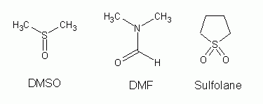
1.22 Acids and Bases
A Lowry-Bronsted acid is any molecule which releases a proton (H+) to another molecule upon mixing of the two. This usually refers to transfer of protons to solvent molecules serving as acceptors (like water). A base is a proton acceptor. Relative acid and base strength of well-known mineral acids and bases is given below:
Acid strength: H2SO4, HCl > H3O+ > NH4+ > H2O
Base strength: HSO4−, Cl− < H2O < NH3 < OH−
Oxygen atoms, having available nonbonding pairs, which are in organic compounds also accept protons, making them relative bases especially in the presence of the strong mineral acids.
EtOH + H2SO4 ↔ [EtOH2]+ +
HSO4−
EtOH + HCl ↔ [EtOH2]+ + Cl−
A Lewis acid is a substance which takes up an electron pair to form a covalent bond. A Lewis base therefore is a substance which offers/furnishes an electron pair for the formation of a bond. This is not inconsistent with the B-L acid/base principle, since H+ itself is still an acid as is the molecule releasing it. However, the Lewis definition extends the concept of acidity/basicity to include other molecules, making BF3, AlCl3, and SnCl4 acids by definition.
The extent to how strong or weak an acid, or in the case of protic acids,
depends upon (1) not merely on the electronegativity of the atom holding the
proton, but also the group-effect electronegativity
on the atom providing
the electron pair for the proton; and (2) the size of the atom (atomic radius)
bonded to the proton. In the case of a group-effect electronegativity, the
greater the pull used to take away the electron pair for bonding to H, the more
acidic the compound is. In the case of size, a larger atomic radius of the atom
bonded to H has less hold on the proton. Acid strength is shown as follows:
Acidity based on electronegativity:
H—CH3 < H—NH2 < H—OH < H—F
H—SH < H—Cl
Acidity based on size:
H—F < H—Cl < H—Br < H—I
H—OH < H—SH < H—SeH
1.23 Electronic and steric effects
Substituents of molecules affect their reactivity in two ways
- the electronic effect, meaning the availability of electrons at the reaction center;
- the steric effect, meaning the effect of crowding which occurs in a molecule.
A standard of reference is the C-H bond. When H is replaced by G to make C-
G, comparisons are made relative to the C-H structure. Occurring at some stage
of most, if not all, chemical reactions is the development of positive or
negative charges. The ability of a molecule to accommodate (stabilize) such
occurrences of charge depend upon the nature of it: substituent G may affect
the electron bonds of carbon or other atoms toward other substituents by pulling
or creating a fullness
of electrons in the bond or in stabilizing a
charged intermediate (the electronic effect). The way the electronic
effect may work may be further subdivided into an inductive effect, in
which the electronegativity of the substituent acts through space or through the
molecular chain to alter electron pair distribution in the bond. The other is
the resonance effect (which tends to stabilize by delocalization of
charge centers) which usually requires
special bond orbitals π electrons).
The steric effect influences reactivity merely by a nonreactive substituent blocking or influencing the progress of reaction by limiting access of another molecule to a more reactive substituent on the same molecule.
1.24 Isomerism
Molecules showing the same elemental composition, i.e. same number of the
types of atoms, may still be distinct in many aspects of their structure.
Ethanol and methyl ether both show the same proportions of atoms: 2 C : 6 H : 1
O (MW 46 as verified by mass spectrum). But ethanol boils at 78°, and
reacts with sodium metal to form H2 and with HI to form water and
ethyl iodide, CH3CH2I. Methyl ether boils at
—24° and does not react with Na. It does react with HI, but to form a
different product (CH3I). Hence they are structural isomers
(isos means equal
; meros means part
).
Chapter 2 Methane. Energy of Activation. Transition State
2.1 Hydrocarbons
The figure below shows how organic compounds which contain only hydrogen and carbon (the hydrocarbons) are classified. The simplest hydrocarbon is methane.
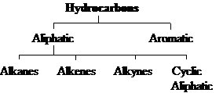
2.2 Methane structure
The methane structure has already been discussed in the introduction of sp3 hybridization. The tetrahedral structure has been confirmed using electron diffraction studies, but other evidence comes before quantum mechanics and use of electron diffraction was done (to be discussed). Representations of methane structure may show C connected to four H atoms by dashes to indicate the bond, by pair of dots to highlight electron pairs in the bond, or by artistic renderings to indicate three-dimensional structure.
2.3 Physical properties
m.p. —183°; b.p. —161°. Gas at RT. In liquid phase, its density less than water's (sp. gr. 0.4). It is only slightly soluble in water, but quite soluble in gasoline, ether, and alcohol.
2.4 Source
Methane is an end product of anaerobic decay of plants. As such, it is the major constituent of natural gas (up to 97%). It is the dangerous firedamp of coal mines, the marsh gas of swamps. Fractional distillation of natural gases can be used to purify methane.
2.5 Reactions
The table below indicates the reactions of methane.
Typically the conditions are vigorous
or extreme.
Reactions of Methane
- Oxidation.
- CH4 + 2 O2 —→flame CO2 + 2 H2O + heat (213 kcal/mol)
- 6 CH4 + 2 O2 —→1500° 2 HC≡CH + 2 CO + 10 H2
- CH4 + H2O ——→850°/Ni CO + 3 H2
- Halogenation.
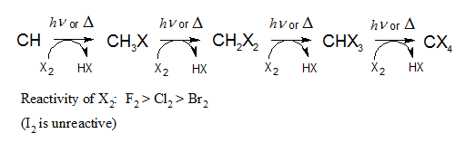
2.6 Oxidation
Combustion is characteristic and, under special conditions, used to determine the C and H content of hydrocarbons. In addition to the common combustion used to obtain heat energy, controlled (partial) oxidation and high-temperature catalytically-controlled reaction with water yields industrial sources of hydrogen and of acetylene. Carbon monoxide and hydrogen can be used in methanol and in ammonia production.
2.7 Chlorination: a substitution reaction
UV light or temperatures of 250-400° may be used to start a reaction between the gas mixture methane and chlorine. The products are vigorously formed as HCl and CH3Cl (chloromethane or methyl chloride). The mechanism is by substitution, since one atom has been substituted for another. Additional reaction products, CH2Cl2 (dichloromethane or methylene chloride), CHCl3 and CCl4, may form.
2.8 Control of chlorination
It is na ve to assume that mixing 1 mol methane and 1 mol chlorine under standard laboratory conditions will yield products of only one type: nearly 1 mol CHCl3 and 1 mol HCl. During the reaction, the amount of CHCl3 will certainly increase and become comparable to and compete with the starting reactant, CH4 for the chlorine molecule. As the proportion of product exceeds the reactant, it will react to form CH2Cl2, and this product in turn increases its proportion in the reaction chamber. It is reasonable to expect that all products of chlorination will be found and so is unreacted methane. If a large excess of methane is used however, the reaction product can be limited to methyl chloride formation. Purification of the product is easily done by distillation (methane b.p. —161.5°; methyl chloride b.p. —24°). This principle of using a large excess of one reactant is a device used by chemists to limit reactions to certain reactive sites so that the desired product is obtained.
2.9 Reactions with other halogens
Bromination of methane happens to the extent it occurs with chlorination, with multiple substitutions possible. Bromination takes place less readily however. With iodine, methane can not react at all.
However, with fluorine, it reacts even in the dark at room temperature; to control the reaction therefore, reactants are diluted with inert gas and then mixed at a low pressure. The order of reactivity of halogens for methane (shown above) applies also to the other alkanes.
2.10 Relative reactivity
Understanding of reactions in organic chemistry are more meaningful (understood easily) when in understanding the reaction of an organic compound to a reagent, the reaction is compared relative to the reaction of the organic compound with several reagents or of the reagent with several organic compounds.
2.11 Reaction mechanism
This is not the what but the how of the reaction, knowing not just the facts but the theory. We therefore provide a mechanism, which is accurately defined as the detailed, step-by-step description of a chemical reaction. Usually it starts as a hypothesis to account for the facts, with experimental work being done to confirm the mechanism. The entirety of a mechanism is rarely proved, but instead well established. As data is collected which does not contradict the details of the mechanism, it may hold.
2.12 Mechanism of chlorination. Free radicals
An understanding of the experimental facts of the reaction helps to elucidate a mechanism:
- the reaction does not occur in the dark at room temperature
- the reaction can occur in the dark at high temperature (at least 250°)
- the reaction can proceed at room temperature with UV light
- a single photon of light is sufficient to produce several thousand product molecules
- the presence of O2 slows down the reaction for a period, after which the reaction proceeds normally (the period duration depends upon how much O2 is present.
The mechanism accounting for these facts is as follows:
(1) Cl2 + hν → 2 Cl•
(2) Cl• + CH4 → HCl + CH3•
(3) Cl2 + CH3• → CH3Cl + Cl•
The first step is a homolysis of chlorine and requires a bond dissociation energy of 58 kcal/mol, supplied by the light or heat. An orbital of the product atoms has only one electron, and any atom or group of atoms with an unpaired electron in an orbital is a free radical. They are quite reactive in accordance with the desire to complete a valence shell octet.
The free radical can then subsequently collide with another substance, and three possibilities exist in the reaction chamber: (i) with another chlorine free radical, unlikely because of the paucity of free radicals in relation to other collidable substances and unproductive in that it stops the reaction; (ii) with a Cl2 molecule, which is probable but unproductive in that the reactants and products are qualitatively identical; (iii) with a CH4 molecule, both probable and productive.
In colliding with methane, the Cl free radical collides with one of the H atoms, making it bond with Cl instead of the C atom. The C atom is left with the single electron (a methyl radical). This is step 2.
The methyl radical has one of 5 possibilities early in the reactions: (i) it can collide with another one of itself, which is both improbable because there are very few of itself and unproductive in that another type of product (ethane) is formed; (ii) it can collide with HCl, also improbable because of the small number and unproductive since it forms what was present before the reaction; (iii) it can collide with Cl atom, which while productive is improbable, again because of the low number of Cl, and it stops the reaction; (iv) in can collide with methane, which is probable but not productive, since the reactants and products are identical; (v) it can collide with Cl2, both probable and productive since it propagates the reaction.
2.13 Chain reactions
In the mechanism outlined for chlorination, an example of a chain reaction is illustrated, in which the products of a reaction are themselves reactive to bring about another chemical reaction, which is circular in this case. In the chain, we have a chain-initiating step, and chain- propagating step, and then chain-terminating steps must be defined as well. The chain-terminating steps for chlorination of methane would necessitate consumption of the reactive particles (combining two chlorine radicals, combining two methyl radicals, or combining a methyl and chlorine radical). Experimentally, 10,000 CH3Cl molecules can be generated per photon used, and on the average 5000 repetitions of the chain propagating cycle occur before stopping.
2.14 Inhibitors
How does O2 affect the mechanism? Clearly as an inhibitor. It is
thought to combine with the CH3 radical to form the much less
reactive CH3—O—O which does little to continue the
chain. Once all the inhibitor is consumed (its inhibition is clearly not
catalytic
), the reaction continues with formation of CH3
radicals not scavenged by O2.
2.15 Heat of reaction
The net enthalpy of reaction (ΔH) is simply the amount of heat used in bond breaking subtracted from the amount heat liberated in bond formation. A CH3—H and a Cl—Cl bond are broken and require 104 and 58 kcal/mol, resp. A CH3—Cl and H—Cl bond are formed and release 84 and 103 kcal, resp. Hence 162 − 187 = −25 kcal/mol as the net change in enthalpy. Heat is clearly released in the reaction. If one breaks it down to the 3 steps of the mechanism, the net change in ΔH for the three steps is (1) +58, (2) +1 [104-103], and (3) −26 [58-84]. (Note that these are not added to give the overall enthalpy, since other steps are omitted.) The major energy-requiring step is the first step.
2.16 Energy of activation
Notwithstanding a reaction being favorable in the sense of a large negative net
enthalpy, all reactions require a push
to get started. This push
is the energy of activation. Collisions must be accompanied by a certain
amount of kinetic energy not simply measured in the enthalpy quantity. If the
chlorination of methane is at 275°, only 1 in 40 collisions are sufficiently
energetic for a reaction to proceed. Moreover, molecular orientation is a
factor, since the direction of Cl radical collision must be aligned with the C-H
axis to get maximal effect (1 in 8 collisions in this example).
2.17 Progress of reaction

A diagrammatic representation of the energy changes ensuing during a chemical reaction is usually helpful in visualizing the energy changes. Note that endothermic reactions manifest themselves with drops in temperature as energy is taken up. Energy diagrams also give a picture of the reverse reaction, with its Eact and ΔH interpretable. In constructing the energy diagram for homolysis of Cl2 (Cl2 → 2 Cl), there is no product slope to descend, meaning that Eactin the forward direction is equal to the ΔH of the reaction, while E act of the reverse direction is 0 (this is considered to be the case for all reactions in which molecules dissociate into free radicals).
2.18 Reaction rate
Reaction rate depends upon three factors:
# effective collisions per time per volume = # total collisions per time per volume * fraction having enough energy * fraction that have proper orientation.
This is stated another way:
rate = collision frequency * energy factor * probability (orientation) factor
Collision frequency is a function of (a) molecular crowding (indicated by concentration or pressure; (b) particle size/volume; (c) particle velocity/speed (which depends upon temperature and particle mass). Concentration and pressure are easily manipulated to adjust reaction rate; particle size/volume and mass cannot be. While heavy particles move more slowly, their larger size tends to cancel out the slower speed effect, i.e. factor (b) compensates for factor (c).
Probability factors depend upon internal molecular vibrations to a great extent, but little can be done to effect the proper molecular orientation short of immobilizing the molecule, which is not typically in basic organic chemistry.
The energy factor is the most controllable factor in affecting rate, since it merely means increasing temperature or adding energy to the system. A frequency (Boltzmann) distribution of particle kinetic energies applies here. At a certain energy level, Eact, the reaction occurs. The fraction of collisions which are greater than Eact are calculated by using exp(−Eact/RT). The entire reaction rate is therefore:
rate = P Z exp(−Eact/RT)
where P is the probability factor and Z is the collision frequency. From this equation, we can know that only 1% of all particle collisions at 275° will result in effective reactions assuming Eact = 5 kcal, only 0.01% if Eact = 10 kcal, and only 0.0001% (1 in 1 million) for Eact = 15 kcal. Hence from an E act = 5 kcal to 10 kcal increases the rate 100 times.
Changing temperature has similar effect. A 10% (from 250 to 300°) increase in T can increase rates 50% if Eact = 5 kcal, 100% (double) if Eact = 10 kcal, and 200% (triple) if Eact = 15 kcal.
2.19 Relative rates of reaction
When comparing a reaction of bromine versus chlorine molecules with methane, analysis the differences accounted for in the rate should be step by step. Why does Br2 react more slowly than Cl2? Although Br is heavier than Cl, its larger size makes possible the chance of a collision, so collision frequency (Z) is not likely to be significantly different. The probability factor is not significantly different either, with 1 of 8 collisions as effective in either case. In fact the energy factor is very significantly different with Eact = 4 kcal for Cl striking methane and Eact = 18 kcal for Br striking methane. This difference alone makes Cl 250,000 times more reactive than Br (at 275°). Most rate differences between different reactions are due to differences in Eact, but it is absolutely necessary to discount any differences in factors P and Z before concluding this.
2.20 Relative reactivities of halogens toward CH4
Let us compare Eact and ΔH of all halogens in the substitution reaction at each step of the mechanism. The table below is used for our purposes:
| ΔH (kcal/mol) | ||||
|---|---|---|---|---|
| X = | F | Cl | Br | I |
| (1) X2 → 2 X• | +38 | +58 | +46 | +36 |
| (2) X + CH4 → HX + CH3 | −32 | +1 | +16 | +33 |
| (3) CH3 + X2 → CH3X + X• | −70 | −26 | −24 | −20 |
One might expect the rate of Cl to be slowest and I to be the fastest based merely on the energy needs for the initial reaction. But experimental evidence shows F reacts the most vigorously. The formation of the product in step (3) would tend to explain how F might react vigorously, and exothermic reactions in all 4 cases indicate a low Eact in any case: indeed iodine does react readily with methyl radicals and is actually used as a scavenger or trap in the study of reaction mechanisms. But iodine does not form CH3I to any large extent. Therefore step (2) must be the rate- determining step. The differences in ΔH most surely give an idea of Eact and it is possible to predict how many collisions are in fact productive. Iodine virtually ability to engage in productive interaction with methane, and is more likely to react with another iodine free radical when the number of collisions for productive formation is considered.
2.21 Structure of the methyl radical. sp2 hybridization
While carbon in methane promotes one of its s electrons to a p orbital for sp3 hybrid formation, the carbon in a methyl radical hybridizes its 2s orbital with only two 2p orbitals to make the necessary bonds with the three H atoms. The odd electron remains with C in its third p orbital. The geometry is therefore trigonal. While the odd electron might be expected to exert electron charge repulsion in the bonded orbitals, the spectroscopic evidence indicates that the radical is flat. However a mix of tetrahedral and trigonal character is likely.
2.22 Transition state
Transition state is used with the notion of an Eact to indicate an intermediate structure corresponding to the course of the reaction. In the substitution reaction, the reaction can be shown to have a fleeting intermediate (bracketed to show its fleeting nature).
2.23 Reactivity and the development of the transition state
Transition state formation in terms of the progress of the reaction is considered to be late when Eact of the reaction is large; early if the Eact is small. Moreover, the transition state can be said to resemble either the product or the reactant more depending on whether it is late or early in its development. Where the reactivity is low, the transition state actually resembles the products; when high reactivity (early TS), the TS resembles the reactants.
2.24-2.28 Molecular formula: its fundamental importance. Qualitative, quantitative analysis; empirical formula and MW determination
Experiments must be done to assess properties of organic compounds before studies of their reactions are to be done.
(1) Qualitative elemental analysis. Presence of either C or H will be easily determined by combustion, usually using a train with a hot CuO catalyst. Analysis to detect CO2 and H2O as products follows. Halogens, nitrogen, and sulfur must be converted to inorganic ions, done in either two ways:
(i) Sodium fusion using hot molten sodium: (C,H,X,N,S) + Na + heat → Na+X− + Na+CN− + Na2+S2−
(ii) Sch niger oxidation: (C,H,X,N,S) + O2 + NaOH catalyst → Na+X− + Na+NO2− + Na2+ SO42−
Additional tests would show other elements except for oxygen; presence of oxygen is usu. revealed by quantitative analysis.
(2) Qualitative element analysis of carbon, hydrogen, and halogens. For C and H, a combustion train using CuO heated to 600-800° is set up, with a Dehydrite or Mg(ClO4)2 in one part of the train to capture H2O and a strong base (Ascarite, NaOH on asbestos) following to capture CO2. The increase in weight of the agents is used to assess the product and compared to a weighed sample of starting agent. Suppose 9.67 mg of methane produced 26.53 mg CO2 and 21.56 mg H2O. The weight of C in methane is the fraction C in CO2 times the mass produced and the same for H. Hence wt. C = 26.53 mg * (12.01 mg mol−1 C / 44.01 mg) = 7.24 mg. Hydrogen calculates to wt. H = 2.41 mg. The relative weight % of C is 7.24 mg/9.67 mg *100% = 74.9%. For % H = 2.41 / 9.67 *100% = 24.9%. Note that the wt C + wt H combination was 9.65 mg, effectively close to the starting sample and giving us the clue that no oxygen is probably present.
To quantitate halogen, choose either of two methods: (i) heat the organic in a bomb with Na2O2; (ii) Carius method: heat in a sealed tube with HNO3. The product halide ion is then mixed with silver solution, the insoluble salt easily weighed.
(3) Empirical formula is arrived at by determining the number of gram-atoms (moles) of an element and then converting to the smallest whole numbers by dividing by the lowest mole content determined. In the example, C is present as 74.9% (74.9 g/100 g) / 12.01 g/mol = 6.24 mol. H is present as 24.9% (24.9 g/100 g) / 1.008 g/mol = 24.7 mol. Since C has lowest absolute mol content, we get 1 C. Dividing 24.7 by 6.24, the value 3.96 is obtained, approx. 4. Hence for every 1 C there are 4 H. However, we cannot say that it is CH4, for it could be a multiple of that: C2H8, C3H12, etc.
(4) Molecular weight analysis allows the determination of the molecular formula (the actual number of atoms of each kind in a molecule). Mass spectrometry is used in that case to make the determination.
Chap. 3 Alkanes. Free-radical substitution
3.1 Classification by structure: the family
3.2 Ethane structure
Ethane features are single bonds throughout with both C atoms sp3-hybridized. H-C-H and H-C-C bond angles are all 109.5°, indicating a classic tetrahedron. While C-H bond length is uniformly 1.10 Å, C-C bond length is 1.53 Å. All structures verified by electron diffraction and spectroscopy.
3.3 Free rotation of carbon-carbon single bond. Conformations. Torsional strain
Discusses two possible conformations of ethane:
eclipsed and staggered (skew
is the infinite number of
intermediate conformations between the main two). The Newman projection is the
end-on view of one of the C atoms to show conformation. C-C bond rotation has
3 kcal/mol energy barrier, with potential energy at a minimum for the staggered
conformation. The nature of the energy barrier is hard to understand although
explained using quantum mechanics: H atom crowding from both ends is not
predictable nor can it be van der Waals forces since the energy barrier has a
higher value than is typical of these energies; most likely because of the
interaction of electron clouds in the C-H bond. Torsional strain is a
term applied to the tendency of a molecule to resist an eclipsed conformation.
3.4 Propane and the butanes
Propane is next member of alkane family. All C-C bonds are sigma type and rotatable. Energy barrier is 3.3 kcal/mol for rotation; view propane on a Newman projection as methyl ethane and despite bulk of methyl group, it is not extremely inhibitory when compared to ethane.
Butane is first example of structural isomerism in alkane, with 2 isomers: n-butane and isobutane. Physical properties of butanes:
| n-butane | isobutane | |
|---|---|---|
| b.p. | 0° | −12° |
| m.p. | −138° | −159° |
| sp.gr. at −20° | 0.622 | 0.604 |
| solub. in 100 ml alcohol | 1813 ml | 1320 ml |
The decision as to which butane had which physical properties could be determined by using dihalogenation to come up with the number of dihalogenated isomers: the butane of b.p. 0° produced six C4H8Cl2 isomers and the butane of b.p. −12° only three. When you draw the number of possible dihalogenated isomers of both butane isomers, its easy to see.
3.5 Conformation of n-butane. Van der Waals repulsion.
Newman projections of n-butane show it can hold 3 possible staggered- type conformations among the other non-staggered. With the two methyl groups showing a dihedral angle of 180°, this is the anti conformation. The other two conformations are identical with respect to the dihedral angle (60°) between methyl groups, are mirror images of each other, and are called gauche. The anti conformation is more stable than the gauche by 0.8 kcal/mol. While no torsional strain can be said to exist, van der Waal repulsion (steric repulsion) between the CH3 groups is sufficient to account for the strain. Rotation from anti to gauche (a 3.4 kcal barrier through the eclipse) to other gauche (a considerable 4.4-6.1 kcal estimated barrier as methyl groups align in the eclipsed conformation), despite the energy barrier is possible with the energy factors at room temperature.
3.6 Higher alkanes. The homologous series
A homolog is the relationship of one compound with another resulting from the addition of a constant chemical group. Higher alkanes are formed by adding CH2. The formula for alkanes is CnH2n+2.
3.7 Nomenclature
Names typically derived from Greek or Latin. Prefixes like iso-, neo-, n- were the result of the early days of chemistry, when most structures were not that complex.
3.8 Alkyl groups
Methyl, ethyl, propyl...name comes from dropping the -ane suffix. Formula is CnH2n+1. Other prefixes begin to occur when we talk about alkyl salts, like alkyl halides. These prefixes include n-, sec- (for secondary), iso-, and tert- (tertiary).
3.9-3.10 Common names and IUPAC names
Common names for the normal chain alkanes and isoalkanes up to 6 carbons are retained and not confusing. For more complex structures, IUPAC system is used. Rules are as follows:
- Select longest continuous chain. Substitute the alkyl group name for the alkyl group substituting for the H atom which would be normally present.
- Use carbon numbering to eliminate confusion pertaining to certain isomers. Start at the end of the chain producing the use of the lowest numbers.
- For alkyl groups occurring more than once along the chain, use standard prefixes (di-, tri-, tetra-, etc.) to indicate how many groups there are, preceding this with the carbon number at which it occurs, e.g., 2,2,4-trimethylpentane (note punctuation).
- For different kinds of alkyl groups along the parent chain, name them in order of increasing size or in alphabetical order: 4-methyl-3,3-diethyl-5-isopropyloctane.
3.11 Classes of C and H atoms
The terms primary, secondary, and tertiary apply to both carbon and hydrogen atoms based on how many C atoms are attached to other C atoms. The H atom attached to the C atom derives its classification from that C atom as well.
3.12 Physical properties
Alkanes typically nonpolar because of their bonding is
entirely covalent between like atoms or atoms with little differences in
electronegativity. What little bond polarity exists cancels out
considering the symmetry of the molecules. Except for small alkanes, boiling
point rises 20-30° for each added carbon (see table).
| m.p. (°C) | b.p. (°C) | density (@ 20°) | |
|---|---|---|---|
| methane | −183 | −162 | (gas) |
| ethane | −172 | −88.5 | (gas) |
| propane | −187 | −42 | (gas) |
| n-butane | −138 | 0 | (gas) |
| n-pentane | −130 | 36 | 0.626 |
| n-hexane | −95 | 69 | 0.659 |
| n-heptane | −90.5 | 98 | 0.684 |
| n-octane | −57 | 126 | 0.703 |
| n-nonane | −54 | 151 | 0.718 |
| n-decane | −30 | 174 | 0.730 |
| n-undecane | −26 | 196 | 0.740 |
| n-dodecane | −10 | 216 | 0.749 |
| n-tridecane | −6 | 234 | 0.757 |
| n-tetradecane | 5.5 | 252 | 0.764 |
| n-pentadecane | 10 | 266 | 0.769 |
| n-hexadecane | 18 | 280 | 0.775 |
| n-heptadecane | 22 | 292 | |
| n-octadecane | 28 | 308 | |
| n-nonadecane | 32 | 320 | |
| n-eicosane | 36 | ||
| isobutane | −159 | −12 | |
| isopentane | −160 | 28 | 0.620 |
| neopentane | −17 | 9.5 | |
| isohexane | −154 | 60 | 0.654 |
| 3-methylpentane | −118 | 63 | 0.676 |
| 2,2-dimethylpentane | −98 | 50 | 0.649 |
| 2,2-dimethylbutane | −129 | 58 | 0.668 |
Note in all cases, a branched-chain isomer has a lower boiling point than a straight chain; the more numerous the branches, the lower the boiling point. This is reasonable: with increased branching, the molecule reduces its surface area as it becomes spherical and there are less intermolecular forces. Alkanes are soluble in benzene, ether, CHCl3, but insoluble in water or highly polar solvents. The upper asymptote of density is 0.8, so all alkanes are lighter than water.
3.13-.14 Industrial source. Laboratory preparation
Petroleum and its accompanying natural gas are chief source, with a range of 1 carbon to 30- and 40-carbon alkanes. Cycloalkanes (a/k/a naphthenes in petroleum industry) are formed as well, and abundant in California petroleum. Coal is being sought as a source of alkanes (through hydrogenation). Natural gas usu. volatile alkanes: sample from Pennsylvania well was 12:2:1 methane:ethane:propane, with higher alkanes 3% of total. Constituents of petroleum are based on their distillation properties and number of carbons (see table)
| Fraction | Distillation Temp. (°C) | Carbon Number |
|---|---|---|
| Gas | <20° | C1-C4 |
| Petroleum ether | 20-60° | C5-C6 |
| Ligroin (light naphtha) | 60-100° | C6-C7 |
| Natural gasoline | 40-205° | C5-C10, and cycloalkanes |
| Kerosene | 175-325° | C12-C18, and aromatics |
| Gas oil (diesel) | >275° | C12 and higher |
| Lubricating oil | non-volatile liquids | prob. long chains attached to cyclic structures |
| Asphalt or petroleum coke | non-volatile solids | polycyclic structures |
Kerosene is used in tractor and jet engines and, with gas oil, for heating as furnace oil. The lubricating oil fraction, esp. from paraffin-based petroleum, usu. contains long-chain alkanes (C20-C34) with high melting points; they create problems in the petroleum industry by crystallizing as waxes at cold temperatures. When filtered out, solid paraffin wax (m.p. 50-55°) or petroleum jelly is recovered and used. Catalytic isomerizationto convert straight chains to branched chains and cracking to convert higher alkanes to lower is often done in the industry. In the lab, yield and purity are of more importance than low cost.
3.15 Preparation of Alkanes
Preparation of alkenes is as follows
- Hydrogenation of Alkenes

- Reduction of Alkyl Halides
- Hydrolysis of Grignard reagent
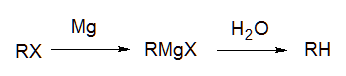 - Reduction by metal and acid
RX + Zn + H+ → RH + Zn2+ + X−
- Hydrolysis of Grignard reagent
- Coupling of alkyl halides with organometallic compounds 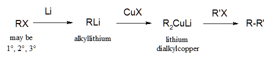
By far the most important of these is the hydrogenation of alkenes as it is easy to do.
3.16 The Grignard reagent: an organometallic compound
Place a solution of alkyl halide in dry ethyl ether with magnesium metal turnings, and a vigorous reaction occurs with the solution turning cloudy, boiling, and the metal dissolves. Victor Grignard discovered this reaction and received the 1912 Nobel for it. The product is known by the general name alkylmagnesium halide. The C-Mg bond is covalent but highly polar (negativity toward C), while the Mg-X bond is completely ionic. While not a true carbanion, it is highly carbanionic. It reacts with virtually any protic acid to yield the alkane; with water, it makes the alkane + Mg(OH)X. In addition to water, it can react with NH3 and CH3OH to yield the alkane and Mg(NH2)X and Mg(OCH 3)X, resp.
3.17 Coupling of alkyl halides with organometallic compounds
Taking advantage of organometallic chemistry, higher number alkanes can be constructed using the coupling method developed independently by E. J. Corey (of Harvard U) and Herbert House (of MIT). First RX is reacted with Li to form a Grignard-like organometallic, then subsequently with a copper halide to form a lithium dialkylcopper compound. This is reacted with another alkyl halide (R′X) to form a higher alkane (R-R′). R′-X should be a 1° halide for good yields whereas there is no restriction in the Li dialkylCu compound.
It is important to note that other organometallic compounds might be used, but with caution. Organosodium (RNaX) which form from RX are so reactive that they continue to react with the parent RX as they are formed. This is called the Wurtz reaction and is used to form symmetrical alkanes (R-R). Organocopper compounds (RCuX) are well known at aiding C-C bonding (which is why they are used) but are unstable; they are stabilized by direct reaction with RLi compounds, where they are thought to exist as R2Cu−Li+. It is believed that subsequent reaction with R′X involves nucleophilic aliphatic substitution.
3.18 Reactions of Alkanes
- Halogenation
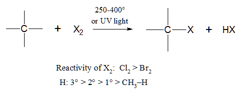 - Combustion.
C2H2n+2 + excess O2 ———→ flame n CO2 + (n+1) H2O
- Pyrolysis (cracking)
C2H2n+2 —————————→ 400-600° w/ or w/o catalysts H2 + smaller alkanes + alkenes
Alkanes are inert to HCl and H2SO4, but will react
with the strongest acids, like HF-SbF5 and
FSO3H-SbF5 (magic acid
). Alkanes are inert
to oxidation by agents like KMnO4 or NaCr2O7,
but do get oxidized by halogens. However, all of these reactions require
high energies of activation or the strongest reagents known; alkane
chemistry usu. involves free radical reactions.
3.19 Halogenation
With UV light or high temperatures, Cl2 or Br2 react much as methane but would be expected to give a mixture of isomers with the higher alkanes. F2 can react but with F2 and the alkane suitably diluted in an inert gas in an apparatus which can dissipate the produced heat. Iodination cannot occur
Note in the table the halogenation products, their relative percentages, and physical properties of the alkanes ethane, propane, butane, and isobutane.
| compound | halogen | reaction conditions | products | relative yields |
|---|---|---|---|---|
| ethane | Cl2 | UV light, 25° | ethyl chloride (bp 13°) | |
| Br2 | UV light, 127° | ethyl bromide | ||
| propane | Cl2 | UV light, 25° | n-propyl chloride (bp 47°) | 45% |
| isopropyl chloride (bp 36°) | 55% | |||
| Br2 | UV light, 127° | n-propyl bromide | 3% | |
| isopropyl bromide | 97% | |||
| butane | Cl2 | UV light, 25° | n-butyl chloride (bp 78.5°) | 28% |
| sec-butyl chloride (bp 68°) | 72% | |||
| Br2 | UV light, 127° | n-butyl bromide | 2% | |
| sec-butyl bromide | 98% | |||
| isobutane | Cl2 | UV light, 25° | isobutyl chloride (bp 69°) [IUPAC 1-Chloro-2-methylpropane] | 64% |
| tert-butyl chloride (bp 51°) | 36% | |||
| Br2 | UV light, 127° | isobutyl bromide (bp 69°) | trace | |
| tert-butyl bromide (bp 51°) | >99% |
Note with chlorination, no single isomer predominates. But with bromination, there is a high degree of selectivity because of bromine's low reactivity. This relationship between selectivity and reactivity is observed a great deal.
3.20 Mechanism of halogenation
The mechanism is the same as outlined in Sec. 2.13, wherein a free-radical intermediate results. The rate-limiting step is formation of the alkyl radical which has its H atom abstracted by halogen radical.
3.21 Orientation of halogenation
Orientation is very important concept in understand the ratio of isomer formation and is determined by the relative rates of competing reactions. Recall that rate depends upon collision freq., a probability factor, and energy factors. For propane reacting with chlorine, coll. freq. is 1 molecule propane and 1 atom chlorine. The prob. factor is simply the chance of Cl atom striking a particular H atom: for propane there is six 1° H atoms and two 2° H atoms, so one might expect a 3:1 yield of n-chloro to isochloropropane. But since the yield is 1:1, then the energy factor must be different. Indeed, the relative rates of reactivity have been determined for abstraction of an alkane H by Cl atom as 5.0:3.8:1.0 for 3°:2°:1°. For bromination, the ratio is 1600:82:1. This means its 5 times easier for Cl to react with a tertiary H than a primary H. Looking at monochlorination of n-butane, there are six 1° H atoms and four 2° H atoms. If we consider the product of (6/4)*(1.0/3.8), the ratio is 6/15.2, which is 28%/72%, the precise ratio of yields of n-butyl chloride to sec-butyl chloride.
3.22 Relative reactivities of alkanes toward halogenation
If two different alkanes are combined in equimolar amounts in a reaction chamber, the relative reactivities of the alkanes toward halogenation can be assessed. Small amounts of halogen are added so that not every molecule reacts. An example is methane and ethane with a small amount of Cl2: 400 molecules of ethyl chloride are produced for every 1 molecule of methyl chloride. Allowing for the differences in the number of hydrogens in ethane, one can see that ethane hydrogens are 270 times as reactive as methane hydrogens. Note that H atom reactivity generally depends not upon the alkane, but its class as a primary, secondary, etc., for a primary H on butane is just as reactive as on propane.
3.23 Ease of abstraction of H atoms. Eact
Halogenation was done at various temperatures in order to assess the energy of activation for abstraction of H atom by a halogen. The results show that the theory of relative reactivity was correct: in reacting with Cl atom, the Eact (in kcal/mol) were evaluated as follows: methane H, 4; primary, 1; secondary, 0.5; tertiary, 0.1. For reaction with Br atom, Eact were: methyl H, 18; primary, 13; secondary, 10; tertiary, 7.5. It would be expected that as the reaction temperature is raised, the increase in reactivity for primary H atoms should be much greater than for tertiary H atoms. In general selectivity decreases as the temperature is raised, and increases as it is lowered.
3.24 Stability of free radicals
The stability of free radicals is directly correlated to the energy necessary to abstract the H atom. If less energy is needed to form a radical compared to another, it's because the radical contains less energy the other. Relative stability of free radicals: 3° > 2° > 1° > methyl radical
3.25 Ease of formation of free radicals
The more stable a free radical is, the more easily it is formed. Hence the relative ease of formation is the same order as relative stability.
3.26 Transition state for halogenation
Eact is relationship between reactants and transition state. In forming the free-radical intermediate, the more stable the free radical intermediate, then the more stable the incipient free radical in the transition state. In tertiary and secondary radicals, the stability comes in part from delocalization of the odd electron. Draw a reaction diagram (potential energy vs. progress of reaction) comparing the formation of isobutyl bromide and tert-butyl bromide. More stable radicals are formed faster.
3.27 Orientation and reactivity
Most reactions in organic chemistry will need to be considered in terms of orientation, reactions at different sites in a compound, and reactivity, reactions with different compounds. The abiding theme is that reactions with lower Eact and more energetically stable transition states will be faster than others.
3.28 Reactivity and selectivity
Comparing chlorination with bromination of alkanes, bromination is said to be less reactive and more selective. This is because the transition state is reached late (look at Eact) and therefore would have much radical character. With chlorination, the Eact is lower, the TS reached early, and therefore TS has little radical character.
3.29 Non-rearrangement of free radicals. Isotope tracers
We assume that because the product isobutyl chloride forms twice the amount of its isomer tert-butyl chloride, that the formation of isobutyl free-radicals is twice as fast as tert-butyl radicals. But what if there is a rearrangement? H. C. Brown (Purdue U.) and Glen Russell (Iowa State U.) prepared deuterium- labeled isobutane [(CH3)3CD], with the isotope acting as the 3° hydrogen. After photochemically-induced chlorination, the DCl:HCl ratio was assessed with mass spectrometer and shown to be equal! This meant every abstraction of 3° H gave 1 molecule of tert-butyl chloride and every abstraction of 1° H gave 1 molecule of isobutyl chloride, showing that rearrangement of the intermediate free radicals does not occur. Although there are exceptions, rearrangements in free-radical intermediates does not occur, and clearly does not involve alkyl radicals.
The Brown-Russell work demonstrates importance of isotopes used as tracers. Other isotopes which are useful: 14C (radioactive); 18O, 15N, 36Cl, and 131I.
3.30 Combustion
Heat is the important product of this process usually. Mechanism not yet fully understood: may involve free-radical chain reaction which is necessarily induced by high temperature or flame (Eact is clearly high).
Modern gasoline engines take advantage of a higher compression ratio of the
fuel and air, but the occurrence of knocking reduces engine power.
Knocking is reduced by (a) selecting the proper hydrocarbons for fuels and (b)
adding Pb(CH2CH3 )4. Antiknocking ability in
fuels is rated according to octane number, and arbitrary scale in which
n-heptane (which knocks badly) has a zero value and 2,2,4-trimethylpentane
(iso-octane
) is 100. In general branched-chain alkanes and alkenes, and
aromatic hydrocarbons have excellent antiknock properties. T. C. Midgley and T.
A. Boyd (at GM Research Laboratory) in 1922 found that
Pb(CH2CH3 )4 improved the octane number of
fuel. After 50 years of research, it is believed that tiny particles of
PbO2 deposited in the engine act as surface catalysts to break
chains.
Pollution has increased to the point where catalytic converters containing Pt are used to complete reactions. But Pt is poisoned by Pb. So in using unleaded gasolines, knock is compensated by reducing the compression ratio of the engines of automobiles and by increasing octane number by addition of aromatics and reactive isomers.
3.31 Pyrolysis: cracking
Pyrolysis (cleavage by heat) defined as decomposition by application of heat alone. In petroleum industry, known as cracking. Thermal cracking is when heat is applied to large alkanes which results in smaller alkanes, alkenes, and hydrogen, with C2H4 predominating. Steam cracking is when HC is diluted with steam and then heated for a fraction of second at 700-900°, followed by rapid cooling: used to produced ethylene, propylene, butadiene, isoprene, and cyclopentadiene. Hydrocracking also produces smaller alkanes: carried out in presence of H2 at high pressure and lower temp (250-450°).
Catalytic cracking is the major process for fuel production. Higher boiling petroleum fractions (gas oil) are brought into contact with finely divided silica-alumina at 450-550° under slight pressure. It not only breaks large chains into small, but improves gasoline quality by producing very desirable highly branched alkanes and alkenes.
3.32 Determination of structure
For a compound whose nature is not known, its properties and chemistry may be reported in the literature. If its physical properties find no match, then a detailed structural determination is necessary. (1) First find its physical properties: m.p., b.p., density, refractive index, solvent solubility. Would include spectral analysis using ir, uv, and nmr. Mass spectra would find its MW. (2) Both qualitative and quantitative elemental analysis should be done. (3) If it belongs to a certain class or has been seems to have identical properties with something reported, perform reactions on it to produce derivatives and then analyze the derivatives.
3.33 Analysis of alkanes
Unfortunately, unknowns which are alkanes are characterized on the basis of negative findings during analyses. With qualitative elemental analysis, negative results for all elements but C and H are observed. Quantitative combustion should show the absence of O. With MW determination, the CnH2n+2 must apply. Alkanes are insoluble in water, dilute acids and bases, and conc. sulfuric acid. Its IR spectra should show no absorptions for characteristic functions (OH, C=O, C=C). Additional proof of the structure of a new alkane can be obtained by its synthesis using proven reactions.
Chap. 4 Stereochemistry. Stereoisomers.
4.1 Stereoisomerism
Stereochemistry is 3-D chemistry
(Gr. stereos,
solid). Isomers are variations in compounds having identical molecular
formulas. Stereoisomers are variations dealing with the arrangement of the
atoms in space.
4.2 Isomer number and tetrahedral carbon
J. H. van't Hoff (while a student at U. of Utrecht) in 1874 proposed that the tetrahedral structure of carbon could be known by isomer number (years before x-ray diffraction data proved him correct). Taking methane, for any atom Y, there is only one atom CH3Y, whether Y=Cl, Br, F, I, OH, COOH, or SO3H. It says that every H atom in CH4 is equivalent to the other; otherwise different products would form during reactions. Hence if the 4 H atoms are chemically equivalent, they must be spatially equivalent. In 3-D reality only a tetrahedron produces that equivalence (not square planar or pyramidal or any other geometry. If you create the other structures, there is a lack of superimposability with replacement of the H with either Y or Z or W. Hence if we count the number of isomers from a single change in methane, we see only one isomer product.
4.3-.5 Optical activity. Plane-polarized light. The polarimeter. Specific rotation
Light can be polarized by passing through the traditional Nicol prism made of calcite (crystalline form of CaCO3) or by a lens made of Polaroid. Optically substances rotate planes of polarized light, a discovery of Jean- Baptiste Biot in 1815 at the Coll ge de France. The polarimeter measures this rotation. It consists of a light sources, two lenses (Polaroid or Nicol) and a tube to hold the sample. One lens serves as a polarizer and the other an analyzer. Machine is calibrated without sample to find the minimun and maximum light intensities transmitted as analyzer angle is changed. As the analyzer is viewed with the sample behind it, rightward rotation of indicates substance is optically active and dextrorotatory and the substance is given a (+) designation.
Specific rotation is defined by the equation:
| [α] = | α | = specific rotation = | observed rotation (degree) |
| l × d | length (dm) × density (g/cm3) |
and it is the amount of rotation caused by a substance present in solution at 1 g cm−3 in a 10 cm (1 dm) tube. This says that the degree of rotation is directly dependent upon how many molecules are encountered. Note that some designations as to temperature (typically 20 or 25°) and the wavelength (typically the D line of sodium, 5893 Å), since these may affect rotation parameters.
4.6-4.9 Enantiomerism. Prediction of it. Chirality
In 1848 Pasteur while at the cole normale in Paris was repeating the work of another chemist studying salts of tartaric acid in order to understand crystallography. In the work he found that optically inactive sodium ammonium tartrate existed as two different crystals. He separated the crystalline forms into two piles. When each were dissolved separately, they suddenly were optically active! Moreover the specific rotations were equal but of opposite sign. Pasteur went on to propose that this was not a property of the crystals (since they were now dissolved), but rather a property of the molecules, which he said were mirror images of each other.
As an exercise, imagine color atoms on the C of methane, using four different colors. They can not be found to be superimposable in manipulation of their spatial arrangement, but are instead mirror images. Mirror-image molecules are called enantiomers. Enantiomers differ with respect only to their spatial arrangement are belong as a subclass to the general class stereoisomers. Enantiomers are also known as optical isomers because it is the class of these stereoisomers which possesses the optical activity.
What gives a substance optical activity, since not all compounds have it? As polarized light passes through a solution to encounter molecules, its plane is generally rotated by tiny amount during interaction with the molecules charged particles. This depends upon the molecule's orientation also. With equal mixtures of two enantiomers, there is a probability that in the random distribution of molecules, the emitted light will encounter the mirror-image version and be rotated opposite to what it was. This is not the case with pure optically active enantiomers.
Molecules that are said to not be superimposable are
called chiral (which means handedness
). Lord Kelvin
(1893): I call any geometric figure, or any group of points, chiral,
and say it has chirality, if its image in a plne mirror, ideally
realized, can be brought to coincide with itself.
4.10 The chiral center
By analyzing what it takes to make an organic compound chiral, it can be seen that four different groups must be attached to the main carbon in question to make it chiral, now called a chiral center. (Other elements like nitrogen and phosphorous can be chiral too). It is very important to remember that many but not all molecules with a chiral center are themselves chiral; and many but not all chiral molecules contain a chiral center! Once a chiral center is identified, the next step should be to determine the chiral of the molecule. When representing chiral carbons and their 4 substituents, it is practically to use the Fischer projection, which is a cross with the 4 groups at each point: the vertical line goes back away from the plane of the paper, the horizontal out toward the viewer from the plane of the paper.
4.11 Enantiomers
The physical properties of enantiomers are identical with each other in every aspect (m.p., b.p., density, ref. index) but one: they bend plane-polarized light to the same degree but in opposite direction. In terms of their chemical properties (or reactivities) they are identical except when the reaction involves other optically active reagents. In biological systems, enzymes are catalysts requiring 3-D specificity or else no reaction can occur; drug interactions with the body are unlikely to occur if stereochemistry is important. Note that (+)-carvone gives oil of spearmint its odor, but (-)-carvone is the essence of caraway.
4.12-.13 The racemic modification. Optical activity: a closer look
Equimolar mixtures of enantiomers is called a racemic mixture. Such mixtures are optically inactive and designated ( ). Because their physical properties are the same, the enantiomers in a mixture cannot be separated (purified) by any physical method: fractional distillation, crystallization, solvent solubilities, traditional (non-optically active) chromatography. (In the case of crystallization, Pasteur could separate crystals but had to use a magnifier and twee. Because their physical properties are the same, the enantiomers in a mixture cannot be separated (purified) by any physical method: fractional distillation, crystallization, solvent solubilities, traditional (non-optically active) chromatography. (In the case of crystallization, Pasteur could separate crystals but had to use a magnifier and tweezers in a painstaking process.) Resolving optically active isomers requires a process described in Chap. 7.
Note that not all molecules with chiral centers are optically active. We know that whenever we observe optical activity, we can find chirality, but the reverse is not true. Ethyl-n-propyl-n-butyl-n-hexylmethane has a chiral center, and its specific rotation has been calculated to be an infinitesimal 0.00001°, below the practical limits of detection for any polarimeter. Both of its enantiomers were prepared in 1965 and shown to be essentially optically inactive.
4.14-4.16 Configuration. Specification of R and S. Sequence rules
Configuration is defined as the arrangment of atoms which characterizes a particular stereoisomer. There are two stereoisomers of sec- butyl chloride, but how do we distinguish them (see diagram)? Since the force of distinction was indeed based on their light-rotating properties, the traditional method was to call one (—)-sec-butyl chloride and the other (+)-form. But this says nothing about their actual spatial configuration!
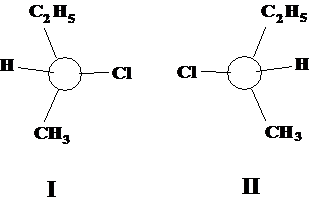
Until 1949, the question of configuration was not known in any absolute sense until J. M. Bijvoet, fittingly Director of the van't Hoff Laboratory at the U. of Utrecht reported from his anomalous x-ray scattering studies that he had determined the spatial arrangement of Pasteur's salt, (+)-tartaric acid. Since the physicochemical relationships between this organic compound and all other chiral compounds are known from the past, the absolute configuration of the rest of the organic substances became immediately known. In the sec-butyl chloride example, configuration I is the (−)-isomer and II is the (+)-isomer.
To help understand the designation more clearly, R.S. Cahn, C. Ingold, and V. Prelog proposed a series of rules to unambiguously know a chiral center's configuration:
(A) Following a set of sequence rules, priority of the four atoms or groups attached to the chiral center is assigned. These sequence rules are:
Sequence Rule 1. If the 4 atoms attached to the chiral center are all different, priority is assigned according to atomic number; highest atomic number gets highest priority. If two atoms are isotopes of the same element, the one with higher mass number has higher priority.
Sequence Rule 2. If relative priority can not be easily decided by rule 1, then it shall be determined by comparison of the next atom working outward from the chiral center. If any atom in the next group has higher atomic number that the next group of the other, that previous atom attains higher priority.
Sequence Rule 3. (applies to geometric isomerism of the C=C bond). Where there is a double or triple bond, both atoms involved should be considered to be duplicated or triplicated. Thus,
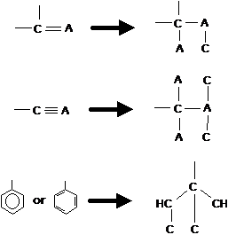
Note particulary the structure of the phenyl group.
(B) Once the priority is assigned based on the sequence rules, visualize the molecule in an orientation with the group/atom having the lowest priority away from you. Now with looking at the groups with highest priorirty, if movement from the group with highest to second to third highest priority is clockwise, the configuration is R (from Latin rectus, right); otherwise it is S (from Latin sinister, left). It is important not to confuse the RS-designation system with the physical property of optical activity, with its (+) and (—) designation.
4.17 Diastereomers
With compounds of more than 1 chiral center, consider 2,3-dichloropentane (see diagram).
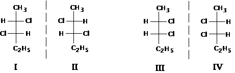
Consider structures I and its mirror image structure II. They are clearly enantiomers. We can also draw structure III, which seems unlike structure I and II, and its mirror image structure IV. If we are able to rearrange in space the structure III without breaking bonds and superimpose it on structure I or II, then it is identical with one or the other. But it is in fact unique. It is a stereoisomer of I and II, but not its mirror image. This is therefore a diastereomer.
Whereas enantiomers have the same physical properties except for their optical rotation, diastereomers have different m.p., b.p., solubilities in solvents, densities, refractive indices, etc. Also their specific rotation may be different, either (+) or (—), or they may be optically inactive. Moreover, their chemical reactivites will be similar since they are members of a family with the same functional groups, but they will not be identical, since the reactants and their transition states are not mirror images of the other. Diastereomers are easily separated by fractional distillation or crystallization, or by chromatography. Note that the number of possible stereoisomers is 2n, where n is the number of chiral centers. The total number of diastereomers is 2n−1, which amounts to \ dividing by half the enantiomers of each diastereomer.)
4.18 Meso structures
Suppose we have another molecule with 2 chiral centers, 2,3-dichlorobutane.
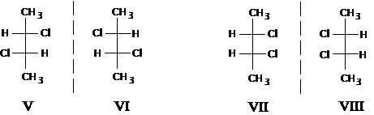
The structure V and VI can be quickly rendered and recognized as enantiomers. Structure VII is drawn and distinct from V and VI and is a diastereomer. Its mirror image VIII though can be rearranged and superimposed on VII; therefore it can not qualify as an enantiomer, despite having 2 chiral centers. Structure VII and VIII are equivalent and therefore nonchiral and not optically active. Structure VII is called a meso compound, which by definition is a structure whose mirror image of itself is superimposable yet possesses chiral centers. Rather than superimposing molecules, meso structures are more easily recognized in that a plane of symmetry can be shown within the molecule's structure. In the case of VII or VIII, it is through the C2-C3 bond.
4.19 Specification of configuration for more than 1 chiral center
For each chiral center, its configuration of R or S is assigned according the sequence rules and without regard to the presence of other chiral centers. Once assigned, the next chiral center may be similarly evaluated. For 2,3- dichloropentane, structure I is (2S,3S)-2,3-dichloropentane. The other structures would have the configurations--II: (2R,3R); III: (2S,3R); and IV: (2R,3S). In the case of the enantiomers shown in 2,3-dichlorobutane, structure V and six would officially be designated (S,S)- and (R,R)-2,3-dichlorobutane. (Note the omission of the carbon number in the configuration designation in the case of butane.) The meso structure, VII, can be either (R,S)- or (S,R)- 2,3-dichlorobutane. BE CAREFUL: not all (R,S)-isomers are meso compounds, only those with a 2-fold intramolecular symmetry!
4.20 Conformational isomers
These were discussed with respect to the spatial positions of groups related to their minimum energy of conformation. If rotation about bonds was sufficiently slow because the energy barrier of conformational change could not be reached, conformers would likely have different physical properties. The two gauche conformers of n-butane are mirror images, and therefore (conformational) enantiomers. The anti to gauche comparison is not mirrored, so they are (conformational) diastereomers. However, these forms can interconvert to one another without bond breaking and there become superimposable and one and the same. All stereoisomeric terms used do not find it necessary to distinguish these conformational isomers, only configurational isomers.
Chap. 5 Alkenes. Structure and Preparation. Elimination
5.1 Unsaturated hydrocarbons
Term unsaturated hydrocarbons comes from fact that carbon does not have the maximum quantity of H atoms that can possibly bind to it.
5.2 Ethylene structure. Carbon-carbon double bond
Simplest member is C2H4. Hybridization of both carbon atoms is sp2, which form σ bonding MOs with the 1s orbital electron of H atom and with each other. Bonding is in one plane, and H-C-C bond angle is 121° (H-C-H bond angle 117.5°). The remaining electron is each C atom is in the unhybridized p orbital. Some overlap with the p orbital is possible for bonding. The resulting bond is distinct for a σ bonding MO, and is a πbonding MO. The C=C bond energy is 163 kcal/mol (cf. C-C in ethane which has 88 kcal/mol). The C-C σ bond of C2H4 is thought to be stronger (at 95 kcal/mol) because overlap is with sp2 rather than sp3; this means the p bond strength is about 68 kcal/mol. Electron diffraction and spectroscopy verify the bond angles and flatness of the molecule. The carbon- carbon bond distance is 1.34 Å (cf. C-C distance of 1.53 Å in ethane), while the H-C bond distance is 1.103 Å (cf. 1.112 Å in ethane).
5.3 Propylene
The next member of the series is methylethylene, or propylene
5.4 Hybridization and orbital size
In sec 5.2 there is a point to consider with the shorter bond distances and
corresponding higher bond energies in the ethylene and ethane molecules. This
is true for the C-C and C-H bonds and their energies. This is because of
differences in sp3 and sp3-formed orbitals.
The s orbitals are spherical and electron distribution held closer to the
nucleus than the p orbital. When we compare the sp2-
s carbon-hydrogen bond in ethylene to the sp3-s
carbon-hydrogen bond in ethane, we see more s character
in the
sp2, which ought to make the electron distribution more
spherical and closer to the nucleus. This rule holds true when comparing bond
distance in benzene (C-H distance is 1.084 Å) or in triple sp-s
bonds in the C-H of acetylene (1.079 Å). The bond energies are
corresponding the same.
5.5 The butylenes
In determining isomers of butylene, it is essential to understand that cis-/trans-isomers are possible, otherwise one draws only 3 instead of 4 butylenes.
| m.p. (°C) | b.p. (°C) | density (@ −20°) | refractive index (@ −12.7°) | |
|---|---|---|---|---|
| Isobutylene (2-methylpropene) | −141 | −7 | 0.640 | 1.3727 |
| 1-Butene | < −195 | −6 | 0.641 | 1.3711 |
| trans-2-Butene | −106 | +1 | 0.649 | 1.3778 |
| cis-2-Butene | −139 | +4 | 0.667 | 1.3868 |
Note they are arranged in order of b.p. When 4 were shown, the bp -7° isomer could be hydrogenated to give isobutante; therefore it was branched. Hydrogenation of the other three gives n-butane. What makes the 2-butene isomers different is hindered rotation if the C=C bond. Rotation of this bond is not like conformational rotation about the C-C bond, but requires breaking a pi bond (about 70 kcal/mol). At room temperature, this kind of bond- breaking is unlikely.
5.6 Geometric isomerism
Since these 2-butenes differ from one another merely by arrangement in space, they are stereoisomers. Since they are not mirror images, they are not enantiomers but diastereomers. But these diastereomers belong to a special class called geometric isomers since they owe their existence to hindered rotation about a double bond. The configuration about a double bond is either cis or trans. As diastereomers, these compounds show different physical properties: 1,2-dichloroethylene:
| m.p. (°C) | b.p. (°C) | μ (D) | ||
|---|---|---|---|---|
| 1,2-Dichloroethene | cis- | −80° | 60° | 1.85 |
| trans- | −50° | 48° | 0 | |
| 1,2-Dibromoethene | cis- | −53° | 110° | 1.35 |
| trans- | −6° | 108° | 0 | |
| 1,2-Diiodoethene | cis- | −14° | 188° | 0.75 |
| trans- | +72° | 192° | 0 | |
A problem with using the cis or trans designations occurs for example with 1- bromo-1-chloropropene, 2-bromo-1-chloropropene, or 1-bromo-1,2-dichloroethene. The way around it is to use the Cahn-Ingold-Prelog sequence rules and pick the group on either side of the C=C bond with higher priority, then decide if they are opposite or on the same side as each other; if the same side, use the Z- designation; if opposite, use the E- designation.
5.7-5.8 Higher alkenes. Names
Common names are seldom used except for the simple alkenes ethylene, propylene and isobutylene. IUPAC rules say (1) select as parent the longest continuous chain containing the C=C bond, naming replacements of the H atom where alkyl groups may occur; (2) indicate by number the position of the C=C bond, counting from the end in which the lowest number position may be assigned.
5.9 Physical properties
Alkenes much like alkanes being insoluble in water but very soluble in nonpolar solvents (benzene, ether, chloroform, ligroin). Boiling point increases about 20-30° for each carbon except in the small homologs. Branching lowers bp.
| m.p. (°C) | b.p. (°C) | density (@ 20°) | |
|---|---|---|---|
| Ethylene | −169 | −102 | (gas) |
| Propylene | −185 | −48 | (gas) |
| 1-Butene | −6.5 | (gas) | |
| 1-Pentene | 30 | 0.643 | |
| 1-Hexene | −138 | 63.5 | 0.675 |
| 1-Heptene | −119 | 93 | 0.698 |
| 1-Octene | −104 | 122.5 | 0.716 |
| 1-Nonene | 146 | 0.731 | |
| 1-Decene | −87 | 171 | 0.743 |
| cis-2-Butene | −139 | 4 | |
| trans-2-Butene | −106 | 1 | |
| Isobutylene | −141 | −7 | |
| cis-2-Pentene | −151 | 37 | 0.655 |
| trans-2-Pentene | 36 | 0.647 | |
| 3-Methyl-1-butene | −135 | 25 | 0.648 |
| 2-Methyl-2-butene | −123 | 39 | 0.660 |
| 2,3-Dimethyl-2-butene | −74 | 73 | 0.705 |
Alkenes are only weakly polar, with dipole moments larger than for alkanes because the π electrons are more easily pushed and pulled. They are still small however compared to haloalkenes: 1-propylene (μ=0.35 D), 1-butene (μ=0.37 D) compared to methyl chloride (μ=1.83 D).
Note that cis-2-butene would be expected to have a small dipole while trans-2-butene would have none, since its dipoles cancel to give a zero net dipole (a minor difference in bp reflects this). In general the cis isomers are higher boiling than their trans isomers because of a net dipole, but are lower melting since they fit into crystalline lattices more poorly.
As elements of greater electronegative than C are attached to C=C, the differences in polarity begin to show themselves as differences in melting and boiling points (see the table for the cis- and trans- isomers of the 1,2-haloethenes above).
5.10 Industrial source
Petroleum cracking is a chief source of alkenes. 1-Alkenes of even carbon number are used in large quantities for manufacturing detergents, obtained by controlled ionic polymerization of ethylene via the Ziegler-Natta method.
5.11 Preparation
- Dehydrohalogenation of alkyl halides
Ease of dehydrohalogenation of alkyl halides: 3° > 2° > 1°
- Dehydration of alcohols
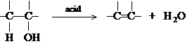
Ease of dehydrohalogenation of alcohols: 3° > 2° > 1°
- Dehalogenation of vicinal dihalides
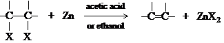
- Reduction of alkynes
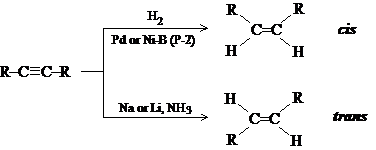
A problem with dehydrohalogenation
and alcohol dehydration is that both can eliminate from either side of the
carbon to produce isomeric alkenes. The vicinal dihalide approach is
complicated in that the dihalide is formed from the alkene rather than the other
way around; however, an alkene can be protected
by forming the dihalide
prior to another reaction, then regenerating it later.
5.12-5.13 Dehydrohalogenation of alkyl halides. Mechanism
The alkyl halide is simply added to alcholic KOH and then heated. If RX is n-butyl chloride, only the 1-butene is obtained since no C-H is on the other side. sec-Butyl chloride yields either 1-butene (20%) or 2-butene (80%).
The function of OH− is to abstract a H+ ion away from a C-H adjacent to the C-X group. What supplies the energy for breaking the C-H and C-X bonds?
- Formation of a bond between H and a very strong base, OH−.
- Formation of the π bond between the carbons (although weak, it supplies 70 kcal/mol)
- Perhaps the most important: the energy of solvation of the X− ion. The alcohol polar solvent, like water, surrounds the liberated halide to form ion-dipole bonds, which are weak individually but supply much energy collectively. Hence the solvent pulls out the X− ion just as OH− pulls out the H+ ion. Note that gas-phase reactions are more suitably free-radical type, while ionic reactions occur in solution.
5.14 Orientation and reactivity of dehydrohalogenation
The orientation of elimination can generally be anticipated according to structure. sec-Butyl bromide, like its chlorobutane cousin, yields 1-butene (19%) in small quantities than 2-butene (81%), despite a 3:2 probability factor of the methyl hydrogens versus the methylene hydrogens on the opposite side. 2-Bromopentane yields 2-pentene (71%) more than 1-pentene (29%). And the 3°-halo 2-methyl-2-bromobutane yields the 2-methyl-2-pentene (71%) in greater quantities than 2-methyl-1-pentene (29%). Both the ease of formation of alkenes and the stability of alkenes can be ordered as follows:
R2C=CR2 > R2C=CHR > R2C=CH2, RCH=CHR > RCH=CH2 > CH2=CH2
Note that the more substituted the incipient alkene, the more easily it is formed. Note also a correlation between stability and ease of formation. The transition state can be imagined as showing a coordination between abstraction of H leading to double bond formation leading to halide ion release.
| Reactant | Product | relative rates | relative rate per H | |
|---|---|---|---|---|
| CH3CH2Br | → | CH2=CH2 | 1.0 | 1.0 |
| CH3CH2CH2Br | → | CH3CH=CH2 | 3.3 | 5.0 |
| CH3CHBrCH3 | → | CH3CH=CH2 | 9.4 | 4.7 |
| (CH3)3CBr | → | (CH3)2C=CH2 | 120 | 40 |
The reactivity of the alkyl halide toward elimination is also indicated in the table above. As the branching of the carbon carrying the -X substituent increases, a greater number of H atoms are made available for basic attack, giving a more favorable probability factor for elimination; also a more stable alkene will be the result, with a more stable transition state and a lower Eact.
5.15-5.16 Carbonium ions. Structure
A carbonium ion is a group of atoms containing a carbon with only 6 electrons in its valence shell. Carbonium ions are classified as methyl, primary, secondary, and tertiary. Although in a special case an unusually stable carbonium ion was isolated as a salt, they are very reactive with a short life. The work of Hans Meerwein, Sir Christopher Ingold, and Frank Whitmore largely supported the carbocation mechanism. Geo. Olah (1963) reported directly observing simple alkyl cations by dissolving alkyl fluorides (and later other alkyl halides) in SbF5: the reaction being RF + SbF5 → R+ SbF6−. The nmr spectrum showed the presence of no F atom, but only an sp2- hybridized carbon with very low electron density. For tert-butyl fluoride (neat), the proton signal is split at δ 1.2 ppm (JHF splitting is 20 Hz), but when added to SbF5, the proton signal is no longer split by any F atom and shifts downfield to δ 4.6 ppm.
The structure of the electron-deficient carbon is clearly sp2-hybridization, 120° bond angles, with sigma bonding to 3 elements trigonally arranged and lying flat in a plane, and an empty p orbital straddling the plane. Physical evidence using nmr and ir spectra confirm flatness and sp2-hybridization. Raman and ir spectra of tert-butyl cation show similarities to the (CH3)3B molecule, known to be flat. Studies have been done in which tert-butyl bromide, 1-bromobicyclo-[2.2.2]octane (I), and 1- bromobicyclo-[2.2.1]heptane (II) are bombarded with electrons to remove the Br atom: the energy for removing Br from I is 5 kcal/mol greater than the tert- butyl bromide, while for II it is 20 kcal/mol. The structures of I and II are such that they inhibit the formation of a flat carbonium, indicating its need to be flat. The need to be flat is related to stabilizing the carbonium as there is a greater accomodation of charge.
5.17 Stability of carbonium ions. Accommodation of charge
Laws of electrostatics state that the stability of a charged system is increased by disperal of the charge. Hence any factor that tends to spread out the + charge on a carbonium stabilizes it. Substituents attached to the carbon can also stabilize or destabilize. Two effects, resonance and inductive effects, affect stability. Inductive effects are related to differences in electronegativity.
Resonance involves overlap of the empty
p orbital with orbitals of nearby atoms, making the p orbital no
longer empty, and in effect dispersing the charge. Maximum overlap depends
upon coplanarity, hence flatness of is an advantage.
Other factors stabilizing carbonium ions are anions, which may form ion pairs; the solvent, if polar, will arrange itself around the C+, and there may be a neighboring group effect, wherein a group on a neighboring carbon may form a covalent bond with the carbonium. All this shows a need to complete the Lewis octet.
5.18 Relative stability of alkyl cations
The amount of energy necessary to remove 1 electron is called the ionization potential (represented as ΔH). For a carbonium, ionizing a radical to form the respective carbonium:
| Reaction | ΔH (kcal/mol) |
| CH3• → CH3+ + e− | 229 |
|
CH3CH2• → CH3CH2+ + e− | 202 |
|
CH3CH•CH3 → CH3CH+CH3 + e− | 182 |
| (CH3)3C• → (CH3)3C+ + e− | 171 |
Note that the order of energy is that the methyl radical requires the most and the 3° carbon least. This is the same order for free radical bond dissociation energies. The order of stability of carbonium ions is reflected as 3° > 2° > 1° > CH3+. Note that energies scales are different: whereas a tert-butyl free radical is 13 kcal more stable than a methyl free radical, a tert-butyl cation is 71 kcal more stable than a methyl cation. Overall if one proceeds from methane to methyl radical (104 kcal bond breaking energy) to methyl cation (229), the total is 333 kcal/mol from methane to methyl cation. Similarly from ethane to ethyl radical (98) to ethyl cation (202) is 300 kcal/mol. From propane to isopropyl (2°) radical (95) to isopropyl cation (182) is 277 kcal/mol. From isobutane to tert- butyl (3°) radical (91) to tert-butyl ion (171) is 262 kcal/mol.
5.19-5.20 Dehydration of alcohols. Mechanism
Removal of alcohol functions leading to an alkene is dehydration. Can be done in two ways: (a) heating the ROH with H2SO4 or H3PO4 to temps up to 200°; (b) passing the ROH vapor over alumina (Al2O3) at 350-400°
Ease of dehydration order: 3° > 2° > 1°
The primary alcohols are less reactive and require more intense conditions, whereas tertiary alcohols are so reactive that dehydration may occur from acid fumes in the laboratory. Examples: ethanol in 95% sulfuric acid at 170° gives ethylene; n-butyl alcohol in 75% sulfuric acid at 140° gives 2-butene as main product; sec-butyl alcohol in 60% sulfuric acid at 100° gives 2- butene as main product; tert-butyl alcohol in 20% sulfuric acid at 85-90° gives isobutylene. Note that 2-butene formation from the primary alcohol is a characteristic distinct from dehydrohalogenation.
The mechanism of dehydration involves 3 steps: (1) protonation of the alcohol; (2) dissociation of the protonated OH as water to leave a carbonium ion; (3) elimination of a proton leading to double bond formation. The first step is simply an acid-base equilibrium with the stronger acid (H2SO4) combining with a stronger base (ROH). Note in step (3), the expulsion of H+ is actually to an available ROH to form ROH2+, which continues the reaction.
All three reactions are reversible, so that alkenes can form alcohols as well (the principle of microscopic reversibility is illustrated here). However, sulfuric acid completely ionizes in alcohol, forcing equilibrium (1) to the right. Since carbonium ions are not very stable, equilibrium (2) is far to the left. Occasionally a few of the ions react to form the alkene, so equilibrium (3) forces the steps to completion. Note that ROH does not easily separate to form R+ and OH−, whereas ROH2+ does easily form R+ and H2O. H2O is a better leaving group in this instance than OH−. (Notice that opposite charges are created in the ROH reaction.)
In all cases the mechanism is assisted by use of polar solvents stabilizing the carbonium ion. The elimination of a proton in the last step should be considered as the attempt to provide an octet of electrons for the carbocation.
5.21 Ease of formation of carbonium ions
Note that the ease of formation of carbonium ions is related to their stability. Note the transition state in ROH 2+ forming the carbonium and water involves the beginning of the breaking of the C-O bond as charge from the oxygen is transferred to the carbon. Any electron-releasing substituents which would stabilize the incipient charge stabilize the transition state, leading to a lower Eact and a faster reaction.
5.22 Rearrangement of carbonium ions
The example of 2-butene forming from n-butanol and 2-methyl-1-butanol forming 2-methyl-2-butene as the chief product illustrates a new mechanism. We see that the alkene formed from the carbonium ion is not the same carbonium ion initially formed from the alcohol. n-Butanol from the n-butyl cation, which in fact rearranges via a 1,2-hydride shift to form a more stable sec-butyl cation. The 2-methyl-1-butyl cation rearrangement to form 2-methyl-2-butyl cation is another example. The rearrangement of 3,3-dimethyl-2-butyl cation to form 2,3-dimethyl-2-butyl cation is an example of a 1,2-alkyl shift. Frank Whitmore elucidated such a mechanism, and it was such occurrences in chemistry that developed the carbonium ion theory to begin with.
Carbonium ions may then:
- eliminate an H+ ion to form an alkene;
- rearrange to form a more stable carbonium ion.
5.23 Orientation and reactivity in dehydration
Notice that after the carbonium ion is formed, which H+ ion on either side of the carbonium ion is eliminated? In general, since the more highly substituted alkene is the more stable alkene, then the H+ forming the more stable alkene will be released.
Chap. 6 Alkenes. Reaction of the carbon-carbon double bond. Electrophilic and free-radical addition
6.1 The functional group
Note that the definition of functional group is the atom or group of atoms which define the structure of a particular family of organic compounds, and which determine their properties.
6.2 Reactions of carbon-carbon double bond. Addition
The double bond has a strong s bond and a weaker πbond. Because of the relative weakness of the bond, we expect it to be more reactive. Double bonds typically undergo addition reactions, unlike substitution reactions seen with the free radical reaction of methane. Electron-seeking reagents like Lewis acids will react via electrophilic addition. Free-radical addition is also possible. The alkyl groups of alkenes should react much as do alkanes.
ADDITION REACTIONS
- Addition of hydrogen. Catalytic Hydrogenation
(product: alkanes)
Example: CH3CH=CH2 —→ H2, Ni CH3CH2CH3
- Addition of halogens (product: vicinal dihalide)
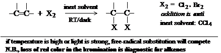
- Addition of HX (product: alkyl halide)
- Addition of sulfuric acid (product: alkyl hydrogen sulfate)
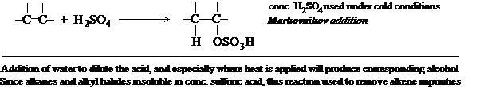
- Addition of water (product: alcohol)
- Addition of halogen and water (product: halohydrin)
- Addition of itself (product: dimeric alkene) (CH3)2C=CH2 + (CH3)2C=CH2 —→ (CH3)3CCH=C(CH3)2 and (CH3)3CCH2C(CH3)=CH2
- Addition of an alkane (product: larger alkane)
- Oxymercuration-demercuration (product: alcohol) Covered in chapter 15
- Hydroboration-oxidation (product: alcohol) Covered in chapter 15
- Addition of free radicals (product: depends
upon specified reactants)
C=C + Y-Z in peroxides or light. e.g., 1-octene + BrCCl3 in peroxides forms 3-bromo-1,1,1-trichlorononane
- Polymerization (product: polymeric alkane)
- Addition of carbenes
- Hydroxylation (product: vicinal diol [glycol])
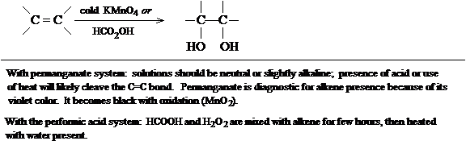
SUBSTITUTION REACTIONS
- Halogenation. Allylic substitution (product: allylhalo
alkene)
CLEAVAGE REACTIONS
- Ozonolysis (product: cleavage to carbonyls:
aldehydes & ketones)
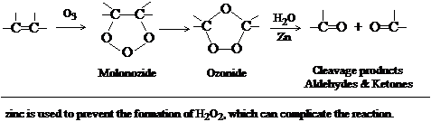
6.3-6.4 Hydrogenation. Heat of hydrogenation. Stability of alkenes
Catalytic hydrogenation is generally quantitative. The reaction is exothermic because two C-H σ bonds are formed from the breaking of a stronger H-H s bond and a πbond. Note in expressing the heat of hydrogenation, a minus sign in the ΔH is not expressed but understood. The table shows that for reduction of any double bond, approx. 30 kcal is evolved.
| Heat of hydrogenation (kcal/mol) | |
|---|---|
| Ethylene | 32.8 |
| Propylene | 30.1 |
| 1-Butene | 30.3 |
| 1-Pentene | 30.1 |
| 1-Heptene | 30.1 |
| 3-methyl-1-butene | 30.3 |
| 3,3-dimethyl-1-butene | 30.3 |
| 4,4-dimethyl-1-pentene | 29.5 |
| cis-2-Butene | 28.6 |
| trans-2-Butene | 27.6 |
| Isobutylene | 28.4 |
| cis-2-Pentene | 28.6 |
| trans-2-Pentene | 27.6 |
| 2-Methyl-1-butene | 28.5 |
| 2,3-Dimethyl-1-butene | 28.0 |
| 2-Methyl-2-butene | 26.9 |
| 2,3-Dimethyl-2-butene | 26.6 |
The uncatalyzed reaction occurs hardly at all, since there is a large Eact. The catalyst is finely divided metal producing a large surface: the alkene molecule is thought to adsorb in a way which breaks the π bond and brought in contact with a coordinated and activated H2 molecule. Note that the reverse reaction occurs and is used to dehydrogenate alkanes (a higher temperature is required).
The heat of hydrogenation is used as an indicator of double bond stability. Note that the hydrogenation of isomeric 2-butenes differ by 1 kcal/mol (cis 28 kcal; trans 27.6 kcal), meaning the trans isomer is more stable than the cis by 1 kcal. Compare other cis and trans isomers. Note also that disubstituted trans isomers are more stable than the cis forms, presumably because of less crowding and van der Waals strain. Note that overall stability of alkenes demonstrated by hydrogenation is of the same order for dehydrohalogenation and dehydration ( 5.14, 5.23).
6.5 Addition of halogens (X2)
Cl2 and Br2 readily add to C=C to form vicinal dihalides. I2 is unreactive usually. The reaction is carried out by mixing the alkene and halogens in an inert solvent (CCl4). Room temperature or less than RT, without UV light, is all that is necessary. Indeed higher temps or undue exposure of light may promote substitution reactions as the halogen is made into a free radical. The Br2 addition is diagnostic for alkenes, since the loss of its red color is a clue that C=C is present.
6.6 Addition of HX. Markovnikov's rule
HCl, HBr, and HI can add to C=C to form an alkyl halide (RX). Usual conditions are to pass the dry HX gas directly into the alkene. A moderately polar solvent (acetic acid) to dissolve both the polar HX and nonpolar alkene may be present. Aqueous HX solutions are not used since H2O is added.
Orientation of addition is according to Markovnikov's rule: In the ionic addition of an acid to the carbon-carbon double bond of an alkene, the hydrogen of the acid attaches itself to the carbon atom that already holds the greater number of hydrogens. (Russian chemist Vladimir Markovnikov, 1869)
Example show that the X adduct attaches to the 2° carbon and H to the 1°, X to the 3° and H to the 1°, and X to the 3° and H to the 1°. In 2-pentene, equal quantities the two haloalkane isomers are produced since Markovnikov's rule favors either addition about the double bond. Note that reactions that give exclusively or nearly exclusively one of several possible isomeric products are called regiospecific.
6.7 Addition of HBr. Peroxide effect
While addition of HCl and HI follow Markovnikov's rule, the chemistry of HBr was complex, since addition sometimes obeyed and at other times did not obey the rule. MS Kharasch and FR Mayo (1933) determined that anti-Markovnikov addition of HBr was due to peroxides, present as impurities resulting from slow formation by the action of O2. If peroxide inhibitors (hydroquinone, diphenylamine) are present, addition always follows Markovnikov. The peroxide effect is seen only with HBr addition, not with HX or Hbase.
6.8 Addition of H2SO4
Mixing cold conc. sulfuric acid with alkene yields compounds of ROSO3H, alkyl hydrogen sulfates. Addition is according to Markovnikov's rule. Note that it is a C-O bond and not C-S bond. The reaction is simply bubbling a gaseous alkene into the acid, or stirring/shaking liquid alkenes with acid. The insoluble liquid alkenes mix into one phase as the product is soluble in H2SO4. Isolation of the product is difficult, since they are deliquescent solids.
If water is added to dilute and heat applied, an alcohol is obtained with OH replacing the bisulfate group (a hydrolysis reaction). This reaction is therefore used in alcohol synthesis from alkenes. Note that because alkenes react with H2SO4, alkanes and alkyl halides (which are insoluble in H2SO4) are purified by bubbling through (for gases) or mixing (for liq. RH or RX) with sulfuric acid to remove alkene impurities.
6.9 Addition of H2O. Hydration
As explained in the previous section, water in the presence of an acid catalyst adds according to Markovnikov's rule. Hydration is used industrially to make simple alcohols from alkenes which are produced according to rule.
6.10 Electrophilic addition. Mechanism
Like dehydration to form the alkenes, the mechanism of addition is the reverse, with a carbonium ion intermediate. In the first step, the difficult and rate-limiting step, an acidic reagent (HCl, HBr, HI, H2SO4, H3O+) brings a H+ in an electrophilic attack of the C=C bond. It can be either a L-B or Lewis acid. The second step has a carbonium ion find an anionic base to complete the octet and neutralize charge if possible (X−, HSO4−, H2O). Since the alkene reacts with acids (electrophiles), it can be considered to have a basic nature; this basicity comes from the loosely held π electrons.
6.11 Electrophilic addition. Orientation and reactivity
As examples of orientation, addition of HCl to propylene always yields isopropyl chloride and never n-propyl chloride, to isobutylene to make tert-butyl chloride and never isobutyl chloride, and to 2-methyl-2-butene to make tert-pentyl chloride (2-chloro-2-methylbutane) and never 2-methyl-3- chlorobutane. We see that this is all due to the stability of the incipient carbonium, in which M's rule can be restated as electrophilic addition to a C=C bond involves intermediate formation of the more stable carbonium ion. Since electron-releasing groups attached to either carbon of the double bond help disperse the partially developing positive charge in the transition state, a lower Eact permits a faster reaction. A progress of reaction diagram can be drawn to show that Eact is higher for formation of the primary cation vs. Eact of the 2° cation. Note the relative reactivity of alkenes toward acids:
(CH3)2C=CH2 > CH3CH=CHCH3, CH3CH2CH=CH2, CH3CH=CH2 > CH2=CH2 > CH2=CHCl
Isobutylene will form a 3° cation and should react much faster than 2- butene which forms a 2° cation. 1-Butene, 2-butene, and propylene should be equal in reactivity because they will all form 2° cations. Ethylene forms a 1° cation only and should be less reactive. Chloroethylene (vinyl chloride) should be even less reactive since the Cl is electron-withdrawing.
6.12 Electrophilic addition. Rearrangement
Since electrophilic addition involves carbonium ions, rearrangements as shown in dehydration reactions to form the more stable carbonium are consistent with C+ chemistry. 1,2-alkyl shifts as in HCl addition to 3,3-dimethyl-1- butene produce the 2-chloro-3,3- and 2-chloro-2,3-dimethylbutane
6.13 Mechanism of X2 addition
The generally accepted mechanism is a two-step reaction, with (1) the rate- limiting attachment of X to form a resultant carbonium and followed by the other X (which is anionic) to form the vicinal dihalide. The X2 is nonpolar, but when brought next to the electron-dense C=C bond, it is partially polarized as a result of charge repulsion effects. The X atom developing the partial (δ+) positive charge becomes reactive to the C=C bond.
Indeed the negative ion in the second step does not have to be X−. It can be any base which is attracted by a carbonium ion. To illustrate, ethylene mixed with aqueous solutions of Br2 and NaCl form the dibromo as well as a bromochloro and bromoalcohol product. Note that aqueous NaCl alone is inert: the Cl− ion and water react only when the X+ form has added. In the same way, alkene plus X2 in solutions of NaNO3 or NaI can form multiple products where X−, I−, or NO3− can add as the second adduct.
6.14 Halohydrin addition (X2 + H2O)
As shown above, when water is present to dilute the X2 reaction in the alkene, a halohydrin can form. Note that the mechanism is by addition of X2 first, then water, and does not result from addition of a preformed hypohalous acid (HOX) which may be present.
6.15 Addition of alkenes. Dimerization
Isobutylene can be converted in the presence of H2SO4
or H3PO4 (at 80°) to a mixture of 2,4,4-trimethyl-1-
pentene and 2,4,4-trimethyl-2-pentene. (Subsequent hydrogenation produces
iso-octane,
2,2,4-trimethylpentane.) The product has twice the number of
isobutylene carbons, and is a dimer of the reactant. Like many alkenes,
the reactant is activated with acid to produce a carbonium ion, but uses the C=C
bond as a base rather than other anions. (Remember that the C=C bond serves
itself as a base.) The carbonium attack another isobutylene to form another
more stable carbonium. The new carbonium might very well add to another (third)
isobutylene, but instead it eliminates a proton to form the alkene (stopping at
8 carbons). The H+ is lost from either side to produce the isomeric
mixture.
6.16 Addition of alkanes. Alkylation
The iso-octane just described above is not made by the alkene addition/catalytic hydrogenation reaction but instead made by mixing isobutylene with isobutane in the presence of conc. H2SO4 or HF at 0- 10°. This is alkane addition to an alkene. The mechanism is as follows:
- isobutylene + H+ → tert-butyl cation
- isobutylene + tert-butyl cation → iso-octyl cation
- iso-octyl cation + isobutane → iso-octane + tert-butyl cation
From this point, steps (2) and (3) repeat. Note that step (1) and (2) are the same as the alkene addition reaction above, but a third step wherein the carbonium ion abstracts a hydride is observed. Although alkanes are not exactly basic in this way, the 3° cation is relatively stable and can give up the electrons and proton. The hydride rearrangement is really similar to a 1,2-hydride shift, execpt the transfer is intermolecular rather than intramolecular.
6.17 Free-radical addition. Mechanism of the peroxide-initiated addition of HBr
As shown by Kharasch and Mayo, peroxides cause addition of HBr in anti-Markovnikov fashion. The mechanism proposed is such that HBr add as atoms rather than ions. Peroxides form free-radicals which react with HBr to produce RadH and Br. The Br free radical reacts with the double bond to form a C-Br bond on one and to make a free radical of the other C. Another HBr now reacts with this carbon free radical to abstract an H atom, leaving a Br radical to continue the process in a cycle at step (3):
- peroxides → Rad•
- Rad• + H:Br → Rad:H + Br•
- Br• + C=C → C(-Br)—C•
- C(-Br)—C• + H:Br → -C(-Br)—CH + Br•
Chain-termination can result from two reactive particles meeting or by capture in the wall of the vessel. Since little peroxide is necessary to alter the normal addition, the chain-reaction mechanism is strongly supported. Moreover, when little inhibitor is added, the addition orientation is altered. In addition to use of peroxides, UV light may be substituted or any force which radicalizes H:Br. Esr spectroscopy verifies the existence of free radicals in this mechanism.
Is it reasonable that free radical addition leads to anti-Markovnikov addition while ionic addition does not? Write the reaction of propylene reacting with HBr in which radicals are induced and where addition is ionic, drawing structures for the stable intermediates that could be formed and determine those intermediates that would be formed. Note the formation of the more stable free radical or carbonium ion intermediates.
6.18 Other free-radical additions
In addition to HBr, dozens of other reagents are known to add to alkenes in the presence of peroxides or light. RCH=CH2 + CCl4 → RCHCl-CH2-CCl3 in the presence of peroxides is known, with its mechanism:
- peroxides → Rad•
- Rad• + Cl:CCl3 → Rad:Cl + •CCl3
- •CCl3 + RCH=CH2 → RC•H—CH2-CCl3
- RC•H—CH2-CCl3 → RCHCl—CH2-CCl3 + •CCl3
Then (3), (4), etc.
Recent evidence shows that free radical mechanism are commoner than has been suspected. Light or decomposition of unstable compounds like peroxides are not required for initiation; sometimes a change from a polar solvent stabilizing ionic reactions to a nonpolar solvent can support concerted homolytic reactions of the initiator.
6.19 Free-radical polymerization of alkenes
Ethylene heated under pressure in the presence of O2 can yield a product of high MW (~20,000) which is a long alkane: polyethylene. The reaction is an example of polymerization.
It is more typical to see polymerization of substituted ethylene compounds: vinyl chloride is polymerized in the presence of peroxides to make polyvinyl chloride plastic. When plasticized with high-boiling esters, the polymer is used in phonograph records, plastic pipe, raincoats, shower curtains, etc. Other substitutes (-COOCH3, -CN, -C6H5) to the double bond yield plastics with different physical properties. The chain-initiating and -propagating steps can be outlined in three steps: the first step is the initiating where a radical is formed as usual. The second step is one in which the radical combines with substituted ethylene to form Rad-CH2-C•HR. In the third step, this new ethylene radical combines with another substituted oriented toward the primary carbon: Rad-CH2-C•HR + CH2=CHR → RadCH2-CHR-CH2-C•HR, and the process repeats at the second step.
6.20 Hydroxylation. Glycol formation
The C=C bond is subject to oxidizing influences which form dihydroxy alcohols, or glycols. There are numerous agents, but the two most common are (a) cold alkaline KMnO 4 and (b) per(oxy)formic acid, HCO2OH.
Hydroxylation with KMnO4 is done by stirring at room temperature the aqueous permanganate at either neutral or, better, slightly alkaline conditions with the alkene. The reaction produces OH− to make it alkaline anyway. Heat and acid addition are avoided, otherwise oxidation of the glycol continues with breaking the C=C bond. Note hydroxylation with KMnO4 is the basis of the Baeyer test for the analysis of alkenes.
Using the performic acid system, H2O2 and HCOOH are mixed together for a few hours with the alkene, then the mixture is heated with water to hydrolyze intermediates, and the glycol is formed.
For the mechanism and stereochemistry of glycol formation, see sec. 17.12
6.21 Substitution by halogen. Allylic hydrogen
Note that halogens (X2) can attack the higher alkenes in two different ways: at the double bond and at the alkyl substituent. Conditions are adjusted carefully to orient attack to one place or the other. Since substitution at the alkyl group is promoted by free radical mechanisms, heat or light is added. Addition reactions to the double bond are promoted by low temps and the absence of light.
Shell Develop. Co. chemists mixed propylene gas and chlorine at 500-600° and showed the formation of 3-chloro-1-propene (allyl chloride; allyl is CH2=CH—CH2—). Br2 reacted similarly. At low temp. in a CCl4 solution, the Cl2 added to form propylene chloride.
In previous sections, we also saw free radical addition occur: so why does not the free radical mechanism produced the addition product? HC Brown says that Cl radical does add to the double bond of propylene (at the primary carbon) to form the free radical intermediate, but at the higher temperatures, the X is expelled before it can react with an X2 to form the dihalide. Consistent with this finding is that use of a low halogen concentration makes X2 unavailable for addition reactions and favors formation of an allyl halide. The allyl radical has little option except to wait for another X2 to continue the reaction. Notice too that the probability factor favors the allyl radical.
N-bromosuccinimide (NBS) is used to promoting the reaction of allylic bromides in free-radical mechanisms. As a molecule of HBr is formed during halogenation, it reacts with NBS to produce a molecule of Br2. In this way, Br2 is kept in very low concentrations to avoid possible additon reactions.
6.22 Orientation and reactivity in substitution
When looking at substitution reactions, it can be noticed that the H atoms attached to C=C bonds (vinylic hydrogen) are very hard to abstract by free radicals. At the same time the H atoms attached to alkyl carbons and adjacent to C=C bonds (allylic hydrogens) are quite stable to abstraction, more stable H atoms attached to 3° carbons. The reactivity of these hydrogens can be listed now:
Ease of abstraction of H atoms: allylic > 3° > 2° > 1° > CH4, vinylic
It is not impossible to react ethylene with Cl2 under free radical-promoting conditions to form vinyl chloride, but the reaction must be under vigorous conditions. The stability and ease of formation of the free radical intermediate correlates with the ease of abstraction list above. The vinyl radical is as difficult to form as the methyl radical, and more difficult to form than the 1°, 2°, 3°, and allyl radical, in that order.
6.23 Resonance theory
The reason that the allyl radical is more stable than even the 3° radical is resonance. (a) Whenever a molecule can be represented by two or more structures that differ only in the arrangement of electrons—that is, by structures that have the same arrangement of atomic nuclei—there is resonance. The actual molecule is a hybrid which cannot be represented satisfactorily by another of the structures, but each structure may be said to contribute to the hybrid. (b) When these contributing structures are of about the same stability, that is, have about the same energy content, then resonance is important. (c) The resonance hybrid is more stable than any of the contributing structures. The increase in stability is called the resonance energy.
6.24 Resonance structure of the allyl radical
Hence the allyl radical is a resonance hybrid of the two structures: CH2=CH—CH2• and •CH2—CH=CH2. Many analogies are made about the hybrid. The mule is neither a donkey part time nor a horse part time, but a true hybrid, related to both animals. Drawing the two structures above does not imply that either has any existence; it is done because of the limitation imposed upon drawing structures. The odd electron is delocalized among the three carbons involved in the allyl radical.
6.25 Stability of the allyl radical
Note that the allyl radical is more stable than either of the 2 structures used to represent it. This extra stability is resonance energy. The energy has been determined to be the difference between the energy needed to form an n- propyl radical (CH3—CH2—CH3 → CH3—CH2—CH2• + H•, ΔH = +98 kcal) and the allyl radical (CH2=CH—CH3 → CH2=CH—CH2• + H•, ΔH = +88 kcal), which is a difference of 10 kcal/mol.
6.26 Orbital picture of the allyl radical
Looking at the structure of the allyl radical more closely, it is apparent that all carbons are bonded to three atoms, and all use sp2 orbitals. All atoms are ideally arranged in a plane with 120° bond angles. Because of the sp2 hybridization, each C must have a p orbital with lobes lying above and below the plane. The three π bonding electrons are distributed in these three p orbitals, so each p orbital may be said to hold a single electron in the hybrid. The resultant hybrid may be represented as a continuous π bonding cloud over all 3 carbons. It is an inherent ability of the one pi bond to delocalize in a way to distribute the energy of the radical. Note that the methyl radical (CH3•) is not quite flat, somewhere between sp3 and sp3 hybrdization, as the odd electron creates some slight repulsion of other bonding electrons; in the allyl radical, stability demands flatness to permit p orbital overlap.
6.27 Using the resonance theory
In determining stability of structures, there is a certain reasonableness that must be intuitive about the structure which seems to contribute to the greatest stability. Criteria that affect estimations of relative stability include (a) electronegativity and location of charge, in which we describe ionicity or bond polarity by drawing structures showing which atoms acquire which charge, and at the same time representing covalent bonds with no structures showing bond polarity. Other criteria seen in other sections: (b) number of bonds (§8.17); (c) dispersal of charge (§11.19); (d) complete vs. incomplete octet (§11.20); (e) separa tion of charge (§18.12).
6.28 Resonance stabilization of alkyl radicals. Hyperconjugation
In a small way, alkyl radicals (not allyl radicals) stabilize radicals in general. Delocalization occurs by an overlap between the p orbital containing the odd electron and a σ bond orbital in the alkyl group (see diag.)
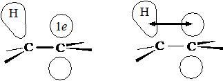
This kind of delocation involving the s bond orbital is called hyperconjugation. In describing the resonance structures of the ethyl radical, there are 3 structures in which the C-H bond in the s bond orbital is something less than a single bond, and the C-C bond has some double bond character. Since it takes 98 kcal to generate the ethyl radical vs. 104 kcal to generate methyl radicals, which can not possibly show this resonance, the stabilization resulting from hyperconjugation is thought to be 6 kcal/mol. With the propyl radical, 6 hyperconjugation structures instead of 3 in the ethyl may be drawn, and since forming the radical requires 95 kcal, it is 9 kcal more stable than the methyl radical (giving some evidence of hyperconjugation). And with the tert-butyl radical, 9 hyperconjugation structures are possible, correlating with its 91 kcal energy of formation, a 13 kcal resonance stabilization.
6.29 Ozonolysis. Determination of structure by degradation
The first example of a cleavage reaction, in which the C=C bond is completely broken and the carbon skeleton separated into two smaller molecules. Ozone (O3) is the classical reagent. It is a two-stage reaction, with addition of ozone to form the ozonide, then a hydrolytic reaction. The ozone gas is passed into a solution of the alkene (using an inert solvent like CCl4). The solvent is evaporated, with a viscous oil residue being the ozonide. The product is unstable and explosive, and water is added directly to form the final products, aldehydes and ketones. Usually a reducing agent (zinc dust) is added to prevent formation of hydrogen peroxide, which reacts with the final products. An aldehyde forms if one of the double-bonded carbons has RHC= or H2C= structure (formaldehyde, in the latter case) , and a ketone for a doubly substituted structure, R2C=.
Ozonolysis is a degradative method used in analyzing for the presence and structure of alkenes. Recall that KMnO4 modifies the C=C bond to form glycols, but oxidation may continue with cleaving of the C-C bond to produce carboxylic acids rather than aldehydes; the ketone is formed from the disubstituted double-bonded carbon.
6.30 Analysis of alkenes
In analyzing any unknown compound, a test should be selected that is easy and gives useful information rapidly. For determination of alkenes, of the many reactions it undergoes, it is rather useless to use HX addition or catalytic hydrogenation: in the former, a colorless HX gas produces colorless products, and while hydrogenation might be determined by a change in the pressure of H2, preparation of the catalyst and apparatus is rather elaborate. In general the kind of test to select is one that is convenient, rapid, and produces an easily observed change: done in minutes using a few test tubes, in which a color may appear or disappear, or gas bubbles are evolved, or a precipitate forms or dissolves.
For alkenes, reaction with red-colored Br2 in CCl4 is quite reliable, as the color disappears as the alkyl dibromide is formed. However, Br2 may react with other types of organic compounds, e.g., alkynes. (If the Br2 was undergoing substitution rather than addition, blowing over the tube should cause a cloud to form, indicating the presence of expected HBr.)
The Baeyer test, in which cold, dilute, neutral purple-colored KMnO4 reacts to form a brown ppt. of MnO2. It should be kept in mind, however, that alkynes, aldehydes, and other easily oxidizable compounds will also react. If reaction does occur with both tests, at least alkanes, RX, and ROH compounds can be ruled out. Another useful test is an alkenes solubility in cold concentrated H2SO4 as it forms the hydrogen sulfate.
Chap. 7 Stereochemistry. Preparation and reactions of stereoisomers
7.1 Stereoisomerism
The classes of stereoisomers are (a) configurational isomers, interconverted by inversion about the chiral center; (b) geometric isomers, interconverted, in principle, by rotation about a double bond; (c) conformational isomers, interconverted by rotation about single bonds. The latter class does not require any bond breaking or significantly high energy.
7.2 Reactions involving stereoisomers
Reactions can both form and consume stereoisomers, or just involve them. An achiral molecule can form into a chiral one with generation of a chiral center. Chiral molecules can be involved in reactions which take part away from the/a chiral center (none of its bonds are broken); this can be used to relate compounds to each other. Reactions of chiral molecules with non-reacting chiral centers can generate a second chiral center. Chiral compounds can react with optically active agents. In the next sections, reactions of chiral compounds in which a bond to the chiral center is broken are seen; and so are reactions of an achiral compound in which two chiral centers are generated at the same time.
7.3 Generation of a chiral center. Synthesis and optical activity
Chlorination of n-butane (an achiral molecule) can produce sec-butyl chloride (chiral) and n-butyl chloride (achiral) (see 4.16 on the configuration and optical activity of sec-butyl bromide). Although chiral products are formed, the product solution does not rotate polarized light, since it is racemic. The mechanism shows that the sp2-hybridized free-radical intermediate can be attacked from either side by Cl2 molecule, so half the product is one configuration and half is the other. Note the rule: synthesis of chiral compounds from achiral reactants always yields the racemic modification.
7.4-7.5 Reactions of chiral molecules. Bond breaking. Relating configurations
If sec-butyl chloride undergoes further free radical chlorination, it can yield a number of dichlorobutane isomers, among them 1,2-dichlorobutane. In 1,2-dichlorobutane, no bond on the chiral carbon was broken, and drawing a stereochemically set of structures showing the free-radical chlorination, we see that the absolute configuration has been retained. Although the designation of the product is now (R)-1,2-dichlorobutane from (S)-sec-butyl chloride, this new designation is only a naming rule and has nothing to say about whether chirality is altered until both structures are drawn.
When Bijvoet had used x-ray diffraction to report the absolute configuration of (+)-tartaric acid in 1949, the configurations about the chiral centers of all other compounds which could be chemically related to (+)-tartartic acid became immediately known so long as the chemistry did not involve breaking of chiral carbon bonds. It was therefore not necessary to do diffraction studies on all organic compounds. (—)-2-methyl-1-butanol is an enantiomer in fusel oil with the stereochemical structure in the diagram, and its configuration is S. The alcohol is treated with HCl to obtain 1-chloro-2-methylbutane. The product rotates light in the other direction.
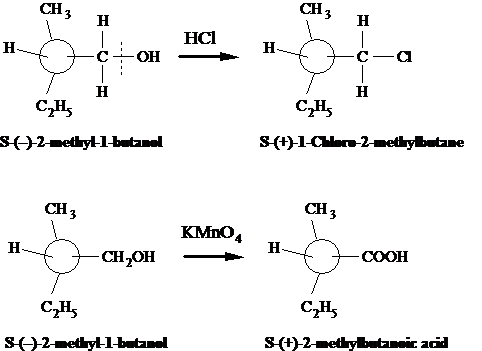
If the butanol compound is oxidized with permanganate, an acid forms which rotates light to the right; no chiral bonds are broken, so configuration is retained.
Not all reactions which are well established for many compounds perform as expected. If a reaction is thought not to affect a chiral center, it is better to be careful and include a reaction in which the chiral center is most certainly going to be broken, and to analyze the results. We know the configuration of (—)-2-methyl-1-butanol because it came from (+)-tartartic acid. Note that all the products have the S-designation of configuration is coincidental.
7.6 Optical purity
One interesting feature of working with strictly chiral molecules is that only one enantiomer is present (true of compounds from biological sources); the compound is said to be optically pure and the specific rotation value can be obtained. For 2-methyl-1-butanol, [α] = —5.756°, while for 1-chloro-2-methylbutane, [α] = +1.64°, which are the maximum rotations of these optically pure compounds. If a sample of the chloride shows a rotation of +0.82°, which is 50% of the maximum, the reagent is said to be 50% optically pure.
7.7 Reactions of chiral molecules. Generation of 2nd chiral center
Considering another product of chlorination of sec-butyl chloride, 2,3- dichlorobutane is one. The compound itself can exist as 3 possible stereoisomers, two of which are enantiomers and one meso structure. But if sec-butyl chloride is reacted with chlorine with attack at carbon-3, either one of two products will result as Cl2 attacks either side of C-3, although both generate a new chiral center. The (S,S) and the meso (R,S) isomer will form as diastereomers. But they will not be formed in equal amounts, as might be expected. An optically active reactant yields an optically active product containing unequal amounts of diastereomes.
The actual product ratio of the diastereomers is 29:71 (S,S):meso. If the (R)-sec-butyl chloride had been chlorinated, the products would be (R,R-) and meso and would also have a 29:71 (R,R):meso ratio. Whatever favors meso over (S,S) favor meso also over (R,R) to the same degree. And if racemic (R)- and (S)-sec-butyl chloride is chlorinated, the meso quantity over the sum of (R,R) and (S,S), which are obtained in equal amounts, is 71:29; optically inactive reactants always yield optically inactive products.
The reason for unequal amounts of stereoisomers is because the reactant
itself is unequal
in its aspect of attack by Cl2, with a
chiral carbon. [This part added by me: If the free radical intermediate
is arranged as the most stable conformer, with an eclipsed or slightly staggered
conformation in which the methyl group on C-2 aligns with the H atom on C-3 and
to some degree opposite the methyl and bulky chlorine atom on C-3,
Cl2 attack on the b face is more likely since there may be a
slight steric effect of the Cl atom as opposed to the methyl group. But this is
not absolutely known.]
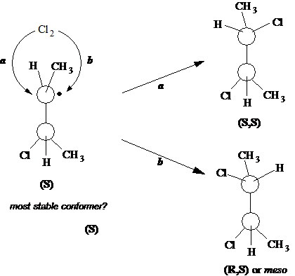
7.8 Formation of enantiomers and diastereomers: a closer look
In the previous section, the formation of unequal amounts of the diastereomers was shown. If one considers merely the chlorination of sec-butyl radical (which is achiral), conformations that can be assumed are of equal stability or energy, and are therefore equally abundant (see Newman projections).
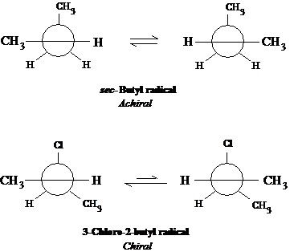
Since equal conformers are likely, the chlorine molecule attack ought to be equal. With the 3-chloro-2-butyl radical, however, one conformer ought to be favored over the other (the structure on the left being a more stable conformer energetically), hence the diastereomers are formed in unequal amounts. Note that attack from the bottom by Cl2 for the structure on the left is more reasonable as Cl2 tries to steer clear of the Cl atom in formation of the transition state. The attack by Cl2 is clearly a more difficult (and slower) step than the ability of the radical to assume a new conformation by bond rotation; the radical has an opportunity to assume relative populations of conformers prior to attack.
7.9 Reactions of chiral molecules with optically active reagents. Resolution
Optically inactive reactants which form chiral compounds must form a racemic mixture of them. Except for the rotation of polarized light, the enantiomeric products have identical physical properties. Optically active compounds can be easily obtained in nature. From these other such compounds can be made. Resolution, or separation of the enantiomers, into optically pure compounds can be done, usually by reactions with optically pure substances. A racemic acid (±)-HA can be reacted with an optically pure plant alkaloid (basic substance), say a levorotatory one (—)-B, to produce two kinds of salts: [(—)-BH+ (+)-A−] and [(—)-BH+ (—)-A−]. These new salt products are themselves not superimposable and are not mirror images, so they must be diastereomers. Diastereomers have different physical properties, and it is true of the salts; their different solubilities in solvents can be used to separate them. Once separated, strong mineral acid can be used to recover HA. Several crystallization steps may be necessary to recover optically pure HA. The alkaloids typically used in this process include (—)-brucine, (—)-quinine, (—)-strychnine, and (+)-cinchonine.
Resolution of organic bases is done using optically active
acids, e.g., (—)-malic acid. With alcohols, neither appreciably
acidic or basic, one attaches an acidic handle,
which allows the
formation of a salt which can then be resolved. Hence a racemic
modification is converted by an optically active reagent into a mixture of
diastereomers which can then be separated.
7.10 Reactions of chiral molecules. Mechanism of free-radical chlorination
What about reactions in which a bond of the chiral carbon is broken? Consider halogenation of alkanes. Until 1940 either of two mechanisms were considered possible for the chain-propagating second and third steps:
(3a) R + X2 → RX + X
or
(2b) X + RH → RX + H
(3b) H + X2 → HX + X
The work of H.C. Brown, M.S. Kharasch, and T.H. Chao then halogenated photochemically the optically active (S)-(+)-1-chloro-2-methylbutane and, among the possible products, isolated the isomer in which the chiral C-2 carbon was chlorinated, 1,2-dichloro-2-methylbutane. Since the two mechanisms above differed in the fact that an alkyl radical was intermediate rather than an H atom, if the alkyl radical were intermediate, it would assume a flat structure as a radical and would lose its chirality in the sense that racemization of the product would occur (lose optical activity). By mechanism 2b and 3b, back-side substitution would be likely, with no loss of optical activity. The result showed that the 1,2-dichloro-2-methylbutane isomer was optically inactive, and the racemic modification was inferred. This substantiated the mechanism of 2a and 3a.
7.11 Stereoselective and stereospecific reactions. syn- and anti-addition
Looking at addition of Br2 to 2-butene to form 2,3-dibromobutane, two chiral centers are formed, and from this knowledge, three isomers: a meso compound and a pair of enantiomers are possible. The reactant can exist as a geometric isomer, either cis- or trans-2-butene. In fact, when cis-2-butene is the reactant, only racemic 2,3-dibromobutane is obtained and none of the meso compound. A reaction that yields predominantly one stereoisomer (or one pair of enantiomers) of several diastereomeric possibilities is called a stereoselective reaction.
When trans-2-butene is the reactant, only the meso-2,3-dibromobutane is obtained. A reaction in which stereochemically different reactants give stereochemically different products is called a stereospecific reaction.
The addition of Br2 is both stereoselective and stereospecific: it is completely stereoselective because only one diastereomer (or pair of enantiomers) is obtained from one alkene, and it is stereospecific because the stereoisomeric product depends upon which stereoisomeric reactant is used. Stereochemically different really means diastereomerically different, and the term stereospecific does not apply to reactions of enantiomers to produce enantiomeric products (as in 7.4 and 7.5). While all stereospecific reactions are stereoselective, not all stereoselective reactions are stereospecific. In some cases a particular stereoisomer is the predominant product regardless of the stereochemistry of the reactant; and reactions of reactants which are not stereoisomers can form predominantly a stereoisomeric product. Such reactions are stereoselective but not stereospecific.
The stereospecificity of addition reactions to alkenes can be described as either syn- or anti-addition. These are not mechanisms, but names for a stereochemically reactive process in which reagents add to the same or opposite face. All bromine additions are in fact anti-addition. Draw the structure of cis- and trans-2-butene and show how the anti-addition yields racemic enantiomers for the cis- reactant, and the meso product for the trans-reactant. The anti-addition process is the general rule for addition of Cl2 or Br2 to alkenes.
7.12 Mechanism of halogen addition
The mechanism of how anti-addition might occur is illustrated
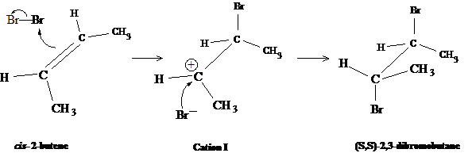
Note that an intermediate carbonium ion is formed, which has a flat geometry consistent with an sp3-hybridization. The appearance of the trigonal complex upon immediate ion formation is consistent with the cis- structure. The bromonium adds from the top, while the bromide ion will add to the opposite side. A problem with this mechanism is that rotation about the carbon-carbon bond in the cation is possible, and this would allow formation of isomeric products, inconsistent with what is known. It would be necessary to assume that bromide ion (a) attacks before bond rotation can occur and (b) from the bottom face from halogen already in the in the cation.
I Roberts and G.E. Kimball (1937) proposed a different mechanism. They suggested the formation of a cyclic bromonium complex which would hinder bond rotation in the intermediate cation, and permit attack by bromide on either carbon to yield the actual isomeric products.
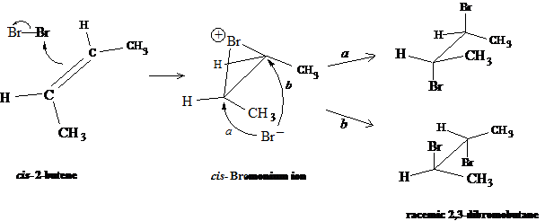
The illustration shows this cyclic bromonium ion, which takes upon itself the positive charge, but the charge is dispersed by electron releasing groups to stabilize the transition state. If the proposed mechanism is followed with the trans-2-butene reactant, only the meso compound can be formed upon attack by bromide from the anti- side.
Evidence of such a mechanism has been shown by Olah (1967) where cationic salts were prepared in which a cyclic halonium ion would be stabilized: 2-methyl-2-fluoro-3-bromobutane [(CH3)2CF-CHBr-CH3] was treated with SbF5 in liq. SO2 to form the stabilized cyclic bromonium as SbF5 abstracted the F atom: . In view of the high electronegativity of the halogens, there appears to be a greater need of the carbon to complete its octet. In the mechanism above, at least every atom has an octet.
There are exceptions to cyclic halonium ions. If the alkene has substituents which can strongly stabilize an open carbonium ion, as for the benzyl cation ( 12.19), addition can occur with little or no stereospecificity. Carbon gets its electrons, but in a different way.
Chap. 8 Alkynes and dienes
8.1-8.2 Intro and acetylene structure. Carbon-carbon triple bond
Both alkynes and dienes have the general structure CnH2n-2. The simplest alkyne is acetylene. The hybrid orbitals are sp, forming σ bonds of all atoms with each other. The bond angle is 180°, permitting the orbitals to be as far apart as possible. The other two p orbitals of each C atom take one electron, and form a π bonding pair with the electrons of the other C. The lobes of the two p orbitals are oriented perpendicularly to form a pi electron cloud torus, which joins with the torical cloud of the other carbon to form a cylindrical pi electron sheath around the sigma bonding linear arrangement. The carbon-carbon triple bond is one strong σ bond with two weaker πbonds to give a total 198 kcal strength (Cf. the double bond of C2H4 at 163 kcal and single bond of C2H6 at 88 kcal.)
This quantum mechanical prediction is verified physically by electron diffraction, x-ray diffraction, and spectroscopy. The C≡C bond is 1.21 Å long compared to 1.34 Å for ethylene and 1.53 Å for ethane. Evidence of isomer number also shows that no geometric isomerism should be possible, and no such isomers have ever been found. The C-H bond distance is 1.08 Å compared to 1.103 Å in ethylene. Again, the more s character gives a smaller radial geometry to sp orbitals, hence the bonds are shorter. The C-H bond energy is unknown, but expected to be stronger than the C-H bond in ethylene. Free radical (homolytic) dissociations are quite difficult in acetylene, whereas ionic (heterolytic) dissociation is easy ( 8.10).
8.4-8.5 Physical properties. Industrial sources
The nomenclature of alkynes follows the same rules for the alkenes insofar as assigning the number of the longest continuous carbon skeleton based upon location of the multiple bond.
| m.p. (°C) | b.p. (°C) | density (@ 20°) | |
|---|---|---|---|
| Acetylene | −82 | −75 | |
| Propyne | −101.5 | −23 | |
| 1-Butyne | −122 | 9 | |
| 1-Pentyne | −98 | 40 | 0.695 |
| 1-Hexyne | −124 | 72 | 0.719 |
| 1-Heptyne | −80 | 100 | 0.733 |
| 1-Octyne | −70 | 126 | 0.747 |
| 1-Nonyne | −65 | 151 | 0.763 |
| 1-Decyne | −36 | 182 | 0.770 |
| 2-Butyne | −24 | 27 | 0.694 |
| 2-Pentyne | −101 | 55 | 0.714 |
| 3-Methyl-1-butyne | 29 | 0.665 | |
| 2-Hexyne | −92 | 84 | 0.730 |
| 3-Hexyne | −51 | 81 | 0.725 |
| 3,3-Dimethyl-1butyne | −81 | 38 | 0.669 |
| 4-Octyne | 131 | 0.748 | |
| 5-Octyne | 175 | 0.769 | |
Alkynes are of generally low polarity like alkanes and alkenes; insoluble in water; very soluble in ligroin, ether, benzene, and CCl4. B.p. values increase systematically with carbon number, decreasing with branching; the values are very nearly the same as b.p. values of alkanes and alkenes with the same C skeleton.
Acetylene is prepared commercially by combining water with calcium carbide, CaC2, which itself is obtained by reaction of CaO (limestone) with coke (from coal) at very high temperatures (2000°) in an electric furnace. Hence from water, limestone, and coal we can get acetylene. An alternative is the mild oxidation of methane from petroleum: 6 CH4 + O2 (@ 1500°) 2 HCCH + 2 CO + 10 H2. (This process is cost-effective since the side products can be used to produce alcohols, and the H2 itself can be used to maintain the oxidizing temperature.) Liquefied under pressure in acetone into tanks, it is used in oxyacetylene torch welding.
8.6 Preparation of alkynes
- Dehydrohalogenation of alkyl dihalides. 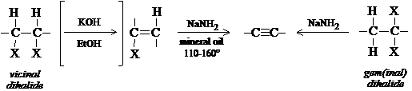
- Reaction of Na acetylides with primary RX.
—C≡CH + NaNH2 or Na metal → -C≡C:− Na+ + RX (must be 1°) → -C≡C-R + NaX
- Dehalogenation of tetrahalides.
-CXX-CXX- + 2 Zn → -C≡C- + 2 ZnX2
Dehydrohalogenation of alkyl dihalides really amounts to synthesis of an alkyne from the corresponding alkene. The vinyl halides obtained after the first dehydrohalogenation are quite unreactive even to the strong base of alcoholic KOH, hence it is necessary to use a much stronger base (NaNH2).
In order to make larger alkynes, reaction of sodium acetylides with primary alkyl halides is usual. 2° and 3° RX reagents undergo side reactions such as elimination (see 8.12).
Dehalogenation of tetrahalides is severely limiting because these products are usually synthesized from alkynes. As with the halogenation of double bonds to protect them from reaction during synthesis, triple bonds are similarly protected by halogenation.
8.7 Reactions of alkynes
ADDITION REACTIONS
- Addition of H2 (product: alkene)
- Addition of X2 (product: monoaddition: vinyl dihalide; biaddition: tetrahalide)
- Addition of HX (HX = HCl, HBr, HI). 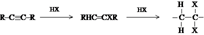
- Addition of water.
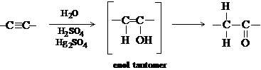
ACIDIC REACTIONS
- Formation of heavy metal acetylides.
—C≡CH + M+ → —C≡C—M + H+
H—C≡C—H + 2 Ag+ (in alcohol) → Ag—C≡C—Ag (silver acetylide) + 2 H+
CH3—C≡C—H + Cu(NH3)+ → CH3—C≡C—Cu (cuprous methylacetylide) + NH4+ + NH3 - Formation of alkali metal acetylides.
H—C≡C—H + Na (in liq. NH3) → H—C≡C:−Na+ + ½ H2
(CH3)2—CH—C≡C—H + NaNH2 (in ether) → (CH3)2—CH-C≡C:−Na+ + NH3
8.8 Addition reactions of alkynes
Addition reactions for alkynes are similar for alkenes, except double addition can occur as a result of the reaction going to completion. Addition can be limited to first stage addition, helped by the fact that the vinyl dihalide is less reactive than the normal alkene.
8.9 Reduction to alkenes
Reduction to the alkene product is possible, with the trans-alkene typically formed by reaction with Na or Li in liquid ammonia. As much as 98% of the cis-alkene can be obtained by reaction with H2 gas using Lindlar's catalyst, which is specially prepared palladium; or with nickel-boride, called P-2 catalyst (by H.C. Brown and son C. A Brown). Each reaction is highly stereoselective: while the cis-type reduction is presumed to occur by surface interactions on the catalyst, the mechanism of the trans-style reduction is not known.
8.10 Acidity of alkynes. Very weak acids
In the Lowry-Bronsted sense, an acid is one with a tendency to lose a H+ ion. Appreciable acidity is shown in substances in which H atoms are bonded to a very electronegative atom (N, O, S, X). The bond is covalent, but quite polar. Since the series of electronegativity is F > O > N > C, this correlates with the observation that HF is a strong acid, H2O comparatively weak, NH3 still weaker, and CH4 is not even acidic.
Alkynyl carbons behave quite unusually, as if more electronegative than a carbon with only double or single bonds. The acetylide hydrogen is therefore quite acidic: Na metal reacts to form a salt of Na acetylide and H2 gas. NH3 also reacts with Na to produce sodamide (NaNH2). When NaNH2 (a stronger base than acetylene) is now reacted with acetylene (a stronger acid than sodamide), is produced Na acetylide and ammonia. Quite the contrary, Na acetylide is a stronger base than water, so acetylene is regenerated in H2O with NaOH as the other product.
Acidity: H2O > HCCH > NH3
Basicity: NaNH3 > HCC:−Na+ > NaOH
Compare ethane and acetylene as acids. For this, consider them as anionic
bases. The ethide ion (C2H5−) has the
nonbonding pair in an sp3 orbital, while acetylide supports
them in an sp-hybrid state. The availability of an electron pair for
bonding to H+ may depend upon how tightly
the electrons are
held. The p orbital geometry is lobular and extended from the nucleus,
while the s orbital is spherical and held closely to the nucleus. Since
acetylide has greater s character, is might be assumed that it holds the
electrons away from the H+ ion, making it therefore more acidic.
8.11 Formation of heavy metal acetylides
Terminal alkynes, i.e., alkynes with at least one H atom bonded to one of the triple-bonded carbons (therefore acidic alkynes), react with particular heavy metal ions, chiefly Ag+ and Cu+, to form insoluble acetylides. If terminal alkynes are added to AgNO3 in alcohol, a precipitate forms. Non-terminal alkynes, i.e., disubstituted acetylenes, do not react. If allowed to dry, these heavy metal acetylides can explode, so it is important to regenerate the terminal alkyne by warming it with strong mineral acid (HNO3).
8.12 Reaction of Na acetylides with RX. Substitution vs. elimination
Sodium acetylides react with primary alkyl halides to produce a higher number alkyne (and the sodium halide). The reaction is a back-side substitution, as the strongly basic acetylide (RCC:−) displaces the halide. It is important to use a 1° RX compound in the reaction, since this favors substitution. An unwanted side reaction can be elimination of the RX to form an alkene typical of dehydrohalogenation by alcoholic KOH; since the acetylide is an even stronger base than hydroxide, the side reaction is likely as carbonium ion stability increases. On the other hand, with 1° RX, there is a greater competition for substitution rather than elimination.
8.13 Hydration of alkynes. Tautomerism
Acid-catalyzed addition of H2O to acetylene is an important commercial synthesis for acetaldehyde. The resulting vinyl alcohol is only an intermediate, an enol, which rearranges its bonds to form the more stable carbonyl structure. This is an example of keto-enol tautomerism. The equilibrium favors the keto structure. A tautomer is a structure which exists in equilibrium with other structures which all differ in the arrangement of their atoms. In all forms of tautomerism, the equilibrium favors the weaker acid, namely H bonded to carbon rather than the more electronegative atom oxygen.
8.14 Structure and nomenclature of dienes
Dienes are simply alkenes with two C=C bonds. Their chemical properties differ from alkenes with one C=C bond if they are conjugated, in which the double bonds alternate with a single bond (C=C—C=C), or whether they are isolated, in which the double bonds are separated by more than a single bond (C=C-...-C=C). A logical third class are the cumulated double bonds (C=C=C), or allenes.
8.15 Preparation and properties of dienes
The simplest conjugated diene is 1,3-butadiene, used to make synthetic rubber and obtained industrially by cracking (of n-butane, which forms the isomeric butenes, then 1,3-butadiene) and in Germany by the warmed, acid-catalyzed dehydration of 1,4-butanediol. The C=C bonds in isolated dienes act as if they were the only C=C bond in the molecule and exert little effect on each other. Conjugated dienes like 1,3-butadiene differ from simple alkenes in that (a) they are more stable, (b) they undergo 1,4-addition, and (c) they are more reactive toward free radical substitution.
8.16 Stability of conjugated dienes
Recall that hydrogenation of monosubstituted alkenes (RCH=CH2) is ~30 kcal/mol; for disubstituted (R2C=CH2 or RCH=CHR), 28 kcal/mol; and for trisubstituted (R2C=CHR), 27 kcal/mol. With compounds of >1 double bond, an expectation of the sum of energies for individual double bonds is verified: the non-conjugated 1,4-pentadiene and 1,5- hexadiene are very close to 2 × 30 kcal, or 60 kcal. However, with conjugated dienes, whereas the 1,3-butadiene is expected to be 30 + 30 = 60 kcal, the observed value is 57 kcal; for 1,3-pentadiene, it is expected to be 28 + 30 = 58, but the observed is 54 kcal (note the C3-C4 double bond qualifies as disubstituted); and for 2,3-dimethyl-1,3-butadiene, the expected is 28 +28 = 56, with an observed 54 kcal.
| Diene | ΔH of hydrogenation (kcal/mol) |
|---|---|
| 1,4-Pentadiene | 60.8 |
| 1,5-Hexadiene | 60.5 |
| 1,3-Butadiene | 57.1 |
| 1,3-Pentadiene | 54.1 |
| 2-Methyl-1,3-butadiene (Isoprene) | 53.4 |
| 2,3-Dimethyl-1,3-butadiene | 53.9 |
| 1,2-Propadiene | 71.3 |
Looking at it more closely, the 1,3- and 1,4-pentadienes will produce the same product, n-pentane, when fully saturated, but the 1,3-pentadiene evolves less energy: this can only mean that it contains less potential energy, i.e., the conjugated diene must be more stable.
8.17 Resonance in conjugated dienes
There are four key carbon atoms in the conjugated diene system: C1 and C2 are double-bonded, as are C3 and C4. The C2-C3 bond is single. As observed for stabilization of the allyl radical, the geometric positioning of the atoms in the structure is such that all atoms of within the conjugated diene system lie flat in a plane to each other, with the p orbitals of each carbon involved in π bonding overlapping each other certainly between C1 and C2, and C3 and C4, but also to some extent between C2 and C3. This is in effect a delocalization of charge effect, with each pair of electrons attracting and attracted by not just two, but four carbon nuclei. The bonds between C1 and C2, and C3 and C4 have less than double-bond character, and the C2-C3 bond has more than single bond character.
Consistent with hypothesis, the more stabilized C2-C3 bond in 1,3-butadiene is 1.48 Å long cf. to 1.53 Å for a single bond. Note the stabilization is only 2-3 kcal/mol, whereas the allyl radical is near 10 kcal/mol.
8.18 Resonance in alkenes. Hyperconjugation
The phenomenon of hyperconjugation discussed previously ( 6.28) which accounts for an increased stabilization (lower potential energy) of alkyl substituted vs. non-substituted alkenes. Propylene has a heat of hydrogenation 2.7 kcal/mol less than ethylene, so it is said to be stabilized by 2.7 kcal. The theory is that pi electrons in p orbitals can overlap with the sigma (sp3-hybrid) orbitals of the attached alkyl group, and thereby become delocalized. A sort of resonance structure in which no bond joins one C- H functions can be represented to show such effect.
8.19 Stability of dienes and alkenes: an alternative interpretation
M.J.S. Dewar has argued for another explanation of diene and alkene stability. He maintains that there is a progressive decrease in bond lengths for both C-H and C-C bonds. It is generally observed that just shortening the bond length results in greater bond energies. In this sense, it is not hyperconjugation but rather sigma bond length shortening that is at work.
| Length (Å) | Hybridization | |
|---|---|---|
| Carbon-Hydrogen Single Bond | ||
| CH3—CH3 | 1.112 | sp3-s |
| CH2=CH2 | 1.103 | sp2-s |
| HC≡CH | 1.079 | sp-s |
| Carbon-Carbon Single Bond | ||
| CH3—CH3 | 1.53 | sp3-s |
| CH2=CH2 | 1.50 | sp2-s |
| HC≡CH | 1.46 | sp-s |
This does not dismiss π bond delocalization occurrences that may result from hyperconjugation, but it is one factor contributing to greater stabilizaiton.
8.20 Electrophilic addition to conjugated dienes. 1,4-Addition
When 1,4-pentadiene is brominated under conditions favoring the dihalide, the product 4,5-dibromo-1-pentene is formed as expected. Further bromination produces the tetrabromopentane. Isolated dienes generally behave as simple alkenes.
Bromination of 1,3-butadiene, however produces not only the expected 3,4-dibromo-1-butene, but 1,4-dibromo-2-butene. When treated with HCl not only 3-chloro-1-butene, but 1-chloro-2-butene results. And catalytic hydrogenation yields not only 1-butene but also 2-butene. Hence the expected 1,2-addition is not only occurring, but also 1,4-addition. The major product is usu. the 1,4-addition product.
8.21 Allyl cations. Delocalization in carbonium ions
From 6.10 and 6.11, electrophilic addition was observed as a 2-step process, with the first and most difficult step the formation of the most stable carbonium ion intermediate. If HCl is added to 2,4-hexadiene, both the 4-chloro-2-hexene and a 2-chloro-3-hexene product are formed. In the first case, the H+ adds carbon #2 to form a carbonium at carbon #3. Although addition of H+ to carbon #3 with formation of carbocation at carbon #2 could occur (both are secondary cations), formation of the ion at C3 is not just a 2° cation, but an allyl cation! Recall the stability of the allyl free radical, with the use of resonance structures to disperse the high energy of maintaining an odd electron. The same is true of the positive charge.
Since the 3 carbons disperse the charge and are equivalent, anionic attack occurs at either end of the resonance hybrid to yield a 1,2 or 1,4 product. The ionization potential of the allyl free radical (188 kcal) shows that the allyl cation is relatively stable, about 24 kcal more stable than an ethyl cation, and just about as stable as an isopropyl cation.
Stability of carbonium ions: 3° > allyl, 2° > 1° > CH3+
8.22 1,2- vs. 1,4-Addition. Rate vs. equilibrium
The proportion of either 1,2- or 1,4-addition products largely depends upon reaction conditions. At low temp (—80°), 20% of the product is 1,4- addition and 80% is the 1,2-addition. At higher temp (40°), the mixture is opposite: 80% is the 1,4-product and 20% is the 1,2-product. If the products made at low temperature are heated, the larger amount of 1,4-product is seen. This shows that the products are in equilibrium with each other, and since equilibrium favors the 1,4-product, it must be more stable.
Since 1,2-product is obtained in greater amounts at low temperature, it can be said to be formed faster than 1,4-product. Hence the low temperature reactions indicate differences in the rates of addition, while the higher temperature addition is based upon an equilibrium of the two.
Drawing a reaction progress diagram of the addition of HBr to 1,3-butadiene, we can say that the 1,4-addition has a higher Eact, overcome with use of higher temperature conditions, and that the bottom of the product hill is lower for 1,4-product than 1,2-product.
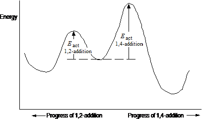
We really don't know why the 1,2-product forms faster, and why the 1,4-product is more stable; only that there is a mechanism which explains their formation. In general we have assumed that the faster a reaction occurs, the more stable it is. Here we have an exception.
8.23 Free-radical addition to conjugated dienes: orientation
Like all alkenes, dienes undergo free-radical as well as ionic addition. But unlike ordinary alkenes, they undergo 1,4-addition and are more reactive. The difference in both orientation and reactivity is accounted for.
Recalling that peroxide can break down to form a radical (step 1), then react with BrCCl3 to form Rad-Br + CCl3 radical (step 2), the CCl3 radical will then add to the butadiene (step 3). Addition is to the end as is true for the ionic addition, since a resonance-stabilized allyl free radical will be the result. In step 4, the butadienyl radical reacts with BrCCl3 in a chain-propagating step.
8.24 Free-radical addition to conjugated dienes: reactivity
If BrCCl3 is added to a 50:50 mixture of 1-octene and 1,3-butadiene, addition occurs virtually exclusively to the diene. This suggests that CCl3 radical reacts more quickly with the butadiene. Looking at the progress reaction diagram, we see that Eact is higher for formation of the alkyl radical in the simple alkene than for the diene, accounting for a greater stabilization of the transition state. However, the allyl free radical is much more stable, and we might expect a slower addition. But in general rates are governed by the stabilization of the transition state, namely Eact, and not on the stability of the reactant or its intermediate necessarily.
8.25 Free-radical polymerization of dienes. Rubber and rubber substitutes
Conjugated dienes undergo polymerization just like ethylene and its substituted forms. A radical adds to 1,3-butadiene, and its C4 reacts with another butadiene and on down the line. What is different is that each added monomer leaves a C=C bond. Natural rubber (cis-polyisoprene) is a polymer similar to synthetic polydienes. It is a polymer of 2-methyl-1,3-butadiene. The C=C bond in rubber gives it reactive allylic hydrogens, and such rubber can undergo vulcanization when sulfur is heated or reacted with catalysts to form bridges in the rubber. Such cross-linking makes the rubber harder and stronger.
2-chloro-1,3-butadiene (chloroprene) can be polymerized to form polychloroprene (Neoprene, Duprene), a rubber substitute. It is inferior to rubber in some properties, but superior in its resistance to oil, gas, and other organic solvents. Polyisoprene has been made by the free radical polymerization, but it is not the same as natural rubber, since its double bonds are trans in geometry instead of cis.
8.26 Isoprene and isoprene rule
Nature makes extensive use of isoprene to form terpenes, usu. found as plant oils. Vitamin A, citronellol (in oil of geranium), and γ-terpinene (in coriander oil) are all formed from isopentenyl pyrophosphate, with the elimination of the pyrophosphate providing the energy to form the dienes.
8.27 Analysis of alkynes and dienes
Alkynes and dienes react similarly with alkenes. Br2 is decolorized (without HBr evolution); cold, neutral, dilute permanganate loses color. CrO3 fails to oxidize. Since they are more unsaturated, detection can be established by molecular formula determination and by quantitative hydrogenation. With alkynes, ozonolysis yields RCOOH however, while alkenes yield aldehydes and ketones. Ozonolysis of dienes can produce bifunctional carbonyl compounds. Terminal alkynes react with heavy metals to produce insolube metal acetylides
Chap. 9 Alicyclic hydrocarbons
9.1-.2 Open-chain and cyclic compounds. Nomenclature. Physical properties
Previous chapters have looked at open-chain forms. Alicyclic (aliphatic cyclic) compounds are now discussed. Usually the prefix cyclo- is attached to the name of the open-chain form having the same number of carbons.
| m.p. (°C) | b.p. (°C) | density (@ 20°) | |
|---|---|---|---|
| Cyclopropane | −127 | −33 | |
| Cyclobutane | −80 | 13 | |
| Cyclopentane | −94 | 49 | 0.746 |
| Cyclohexane | 6.5 | 81 | 0.778 |
| Cycloheptane | −12 | 118 | 0.810 |
| Cyclooctane | 14 | 149 | 0.830 |
| Methylcyclopentane | −142 | 72 | 0.749 |
| cis-1,2-Dimethylcyclopentane | −62 | 99 | 0.772 |
| trans-1,2-Dimethylcyclopentane | −120 | 92 | 0.750 |
| Methylcyclohexane | −126 | 100 | 0.769 |
| Cyclopentene | −93 | 46 | 0.774 |
| 1,3-Cyclopentadiene | −85 | 42 | 0.798 |
| Cyclohexene | −104 | 83 | 0.810 |
| 1,3-Cyclohexadiene | −98 | 80.5 | 0.840 |
| 1,4-Cyclohexadiene | −49 | 87 | 0.847 |
The naming for substitutions on the ring and multiple bonds are done so that the lowest combination of numbers are used. Aliphatic rings are generally represented by geometric figures: the degree of saturation is understood where multiple bonds are placed.
Polycyclic structures are named in a special way. Norbonane is bicyclo[2.2.1]heptane: (a) heptane, because it has 7 carbon atoms; (b) bicyclo, because it has two rings, i.e., the breaking of 2 C-C bonds converts it to an open chain; (c) [2.2.1], because that is the number of carbons between bridgeheads (two: C2 and C3; two: C5 and C6; one: C7).
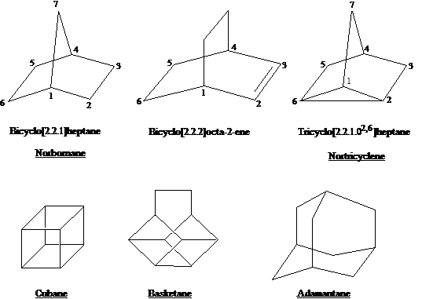
Note the ultimate aliphatic polycyclic is diamond, one of the allotropic forms of elemental carbon (not a hydrocarbon). Each C atom in diamond is attached to four others by tetrahedron with usual single bond length, 1.54 A.
9.3 Industrial source
Previously mentioned in 3.13 was that California petroleum is rich in napthenes, or cycloalkanes, inc. cyclohexane, methylcyclohexane, methylcyclopentane, and 1,2-dimethylcyclopentane. Methylcyclohexane can be dehydrogenated to toluene at high pressures and temps (300 psi, 560°) in presence of a Mo2O3 Al2O3 catalyst. Aromatic compounds can likewise be hydrogenated to cycloalkanes: benzene with Ni catalyst between 150-250° at 25 atm is converted to cyclohexane, and phenol to cyclohexanol.
9.4 Preparation
Cycloalkane preparation occurs in two steps: (1) conversion of an open-chain into one which has a ring (cyclization); (2) conversion of the cyclic compound into one that we want, such as conversion of a cyclic alcohol to a cyclic alkene, or an cyc alkene to a cyc alkane.
Recall that larger alkanes can be made from two RX compounds using the lithium dialkylcopper reaction. In the same fashion, a dihalide (XR—RX) is brought together to form the cyclic compound. For 1,3-dichloropropane, Zn + NaI does the job of forming the cyclopropane.
9.5 Reactions
Like alkanes, cycloalkanes under free radical substitution with Cl2 and Br2 (heat- or light-assisted. Like alkenes, cycloalkenes addition reactions, both electrophilic and free radical type. They are also sensitive to cleavage (O3), forming dicarbonyls, and allylic substitution reactions.
9.6 Reactions of small-ring compounds. Cyclopropane and cyclobutane
Cyclopropane and cyclobutane are somewhat special alkanes in that they undergo addition reactions as do alkenes. The addition products destroy the ring structure, being the open chain products.
| Cyclopropane | + Ni, H2, 80° | → | propane |
| + Cl2, FeCl3 | → | 1,3-dichloropropane | |
| + conc. H2SO4 | → | n-propyl alcohol |
Note that in each reaction, the C-C bond is broken and addition is such that the atoms appear on the ends of the chain. Cyclopropane is actually less reactive to addition than propylene: for example, chlorination requires a Lewis acid catalyst. The reaction with sulfuric acid and other aqueous protic acids is faster for cyclopropane than propylene however. Stranger still is that Br2 + FeBr3 produces a grand mixture of bromopropanes. Cyclobutane is much less reactive to addition than cyclopropane, requiring vigorous conditions for hydrogenation as an example.
9.7 Baeyer strain theory
Adolf von Baeyer (1885) proposed a theory explaining the small-ring
cycloalkane reaction. Carbon bonding to 4 atoms has a tetrahedral geometry with
109.5° bond angles. With cyclopropane, the C-C bond is forced to be
60°, with cyclobutane 90°. These deviations from normal tetrahedral
bond angle cause a strain,
making the bonds unstable. Ring-opening is a
stabilizing reaction, with the greater strain making the molecule more
unstable. Cyclopropane opens its ring more readily than cyclobutane, for that
reason.
A regular pentagon has angles of 108° and being close to the tetrahedral angle, cyclopentane should be free of angle strain. A regular hexagon has 120° angle, so Baeyer thought cyclohexane should have somewhat of a strain. As the carbon number of the ring increased, so should the bond angles, and so should the angle strain. Hence, rings smaller or larger than cyclopentane or cyclohexane would be considerably unstable because of this strain, according to Baeyer.
9.8 Heats of combustion and relative stabilities of cycloalkanes
Heats of combustion furnish information about the relative stabilities of compounds. The table below shows the heat of combustion relative to each methylene group. For open-chain alkanes, each -CH2- contributes about 157.4 kcal/mol. For cyclopropane, it is nearly 9 kcal higher than for the open-chain value; for cyclobutane, 7 kcal. If cyclopropane and cyclobutane evolve more energy, that must mean they contain more energy. Baeyer's theory is supported in this instance.
| Ring size | Heat of combustion per CH2 (kcal/mol) | Ring size | Heat of combustion per CH2 (kcal/mol) |
|---|---|---|---|
| 3 | 166.6 | 10 | 158.6 |
| 4 | 164.0 | 11 | 158.4 |
| 5 | 158.7 | 12 | 157.6 |
| 6 | 157.4 | 13 | 157.8 |
| 7 | 158.3 | 14 | 157.4 |
| 8 | 158.6 | 15 | 157.5 |
| 9 | 158.8 | 17 | 157.2 |
With an increase in ring size, the same higher energy should be observed
according to Baeyer. However, this is not observed. One of the biggest
deviations is in fact observed for cyclopentane, Baeyer's most
stable
compound. The problem with Baeyer's theory is that he assumed
the molecules were flat. Cyclohexane and higher rings are, in fact,
puckered so that carbon can assume its normal tetrahedral bond angle.
Three-membered rings must be flat, since 3 points defines a plane. A four- membered ring need not be planar, but puckering would increase the angle strain. A five-membered ring does not need to be planar, but planarity allows it to assume the 109.5° angle.
One of the reasons that led Baeyer to propose larger rings are unstable is that they are harder to synthesize. But the assumption failed to consider that the larger the ring to be synthesized, the longer must be the chain for which the two ends are to react. This reduces the likelihood of bringing them together easily (intramolecular reaction) and makes more likely the encounter with a different chain (intermolecular reaction). (For this reason, formation of large rings is done with highly dilute conditions to favor the intramolecular process.)
9.9 Orbital picture of angle strain
In alkanes, sp3 hybridization favors the tetrahedral bond angle. Bond strength is reflected in the orbital overlap that occurs between bonding atoms. The C-C-C bond angle is ideally 109.5° for the maximal overlap. When the C-C-C bond is forced to be 60°, there is less bond overlap, and the C-C bond should be weaker.
Coulson and Moffit have used quantum mechanics to propose bent bonds, an idea supported by electron density studies from x-ray diffraction data. In this, carbon uses sp2 orbitals for C-H bonding (being short and strong), and orbitals with enhanced p character (viz., sp4 to sp5) for the C-C bonds. This unusual chemistry may explain why C-C bond orbitals can overlap orbitals on adjacent atoms, or how they provide a site for the attack by acids in ring opening.
9.10 Factors affecting stability of conformations
Any bond angle that deviates from the109.5° tetrahedral angle in sp3-hybridized AOs is subject to angle strain. The bonds to atoms of the two C atoms tend to be in staggered conformations to prevent torsional strain. Moreover, atoms not bonded to one another can affect one another by either their size or polarity, either with repulsion or attraction, depending upon how closely they are brought next to each other. When nonbonded atoms (or groups) just teach each other, they attract each other; if brought closer repulsion occurs, such crowding representing van der Waals or steric strain. Nonbonded atoms or groups take positions favorable to their dipole-dipole interaction, minimizing repulsions and maximizing attractions; a hydrogen bond represents one such interaction.
9.11 Conformation of cycloalkanes
Looking at the conformations of cycloalkanes, a model free of angle strain,
such as cyclohexane, is the best model. The chair form shows perfectly
staggered bonds. It is free of both angle and torsional strain, and is the most
stable conformer, with an energy minimum. If all of the bonds in cyclohexane
are now eclipsed to show the boat conformer, the torsional strain is now
significant. The flagpole
hydrogens are now only 1.83 Å apart,
closer than the sum of their van der Waal radii (2.5 Å). The boat
conformer is calculated to be 7.1 kcal/mol less stable than the chair. It
represents an energy maximum, and is thus considered to be a transition state
between two conformers. The two conformers that that lie on either side of the
boat are said to twist
so that C3 and C6 go down and C2 and C5 come up.
Hydrogens attached to C1 and C4 move apart diagonally, while hydrogens on C3 and
C6 move together. This removes some torsional strain and constructs new
flagpole hydrogens which represent an energy minimum. This is the twist-
boat and lies at an energy minimum 5.5 kcal above the chair conformer. The
equilibrium between the chair and twist-boat form is 10,000:1 chair:twist-
boat.
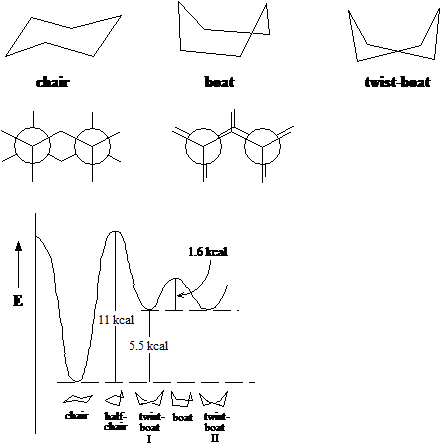
If cyclohexane is a perfect model of conformational stability, cyclopentane must be the poorest, for in the flat cyclopentane, every bond is eclipsed. Because of the torsional strain, there is in fact a slight puckering, even with increased angle strain. Because of the torsional strain, cyclobutane may also be puckered at the cost of some angle strain. Rings with 7-12 carbons also undergo some torsional strain, mostly because of serious crowding of hydrogen; they are less stable than cyclohexane. As rings become larger, they become as stable as cyclohexane.
9.12 Equatorial and axial bonds in cyclohexane
The C-H bonds can be described as axial or equatorial. Cyclohexane is free of angle, torsional, and van der Waal strain. The H atoms on adjacent carbons are the same distance apart (2.3 Å) as in staggered ethane. If a hydrogen is replaced by a large atom or group, crowding occurs among the atoms held by the three axial bonds on the same side of the molecule; the effect is called 1,3-diaxial interaction. Except for H atoms, any atom or group has more room in an equatorial position than an axial position. When considering methylcyclohexane, first consider the methyl group rather than the H atoms, since it is subject to crowding. Decide if an axial or equatorial position is better; the equatorial is stable by about 1.8 kcal, since the methyl group points away from the hydrogens more than in an axial position. This means the 1,3-diaxial interaction between one methyl and one hydrogen is about 0.9 kcal, which is the energy of the gauche interaction in n- butane; it also accounts for energy differences in cyclohexanes containing more than 1 methyl group. The Newman projection for gauche conformer of n- butane looks very much like the Newman projection for the chair conformation of cyclohexane as well. If the methyl group of cyclohexane is in the equatorial position, it looks very much like it is in the anti-conformation of n-butane.
9.13 Stereoisomerism of cyclic compounds. cis- and trans-isomers
Cyclopentanediol can exist as a cis- and trans-1,2- cyclopentanediol. Neither can be superimposed upon one another, so both are isomers, in fact, stereoisomers since they differ only in the way the atoms are arranged in space. (No amount of bond rotation can make them the same, so they are not conformational isomers.) They are in fact diastereomers, since they are not mirror images of each other. If we put other functional groups just the same, the rule of this isomerism would not change.
Looking more closely, both the cis- and trans-glycols (diols) have two chiral centers. For the trans-glycol, there are in fact two possible isomers which are not superimposable but are mirror images: they are enantiomers; the trans-glycol is a chiral structure, with resolvable structures with optical activity. For the cis-glycol, its mirror image is superimposable, and thus it qualifies as a meso structure.
9.14 Stereoisomerism of cyclic compounds. Conformational analysis
The 1,2-dimethylcyclohexanes also have trans- and cis-1,2 structures. If the trans-1,2 structure staggers the bonds on every other carbon in the ring (the chair conformation), two conformers show that the methyl groups can be diaxial or diequatorial. Although the methyl groups are on opposite sides of one another in the diaxial position, it is the diequatorial position which is the more stable, because 1,3-diaxial interaction is significant with large groups in the axial position.
With cis-1,2-dimethycyclohexane, a methyl group must always be axially located if the chair conformation is to be assumed. Because of this, the trans-1,2 structure (in the chair, with both methyl groups equatorial) is more stable than the cis-structure. Note the methyl groups in equatorial position of the trans-structure are the same distance apart as the axial- equatorial methyl groups in the cis-structure: this shows that there is no repulsion specific between the -CH3 groups, but 1,3-diaxial interaction is the cause.
How much more stable is the trans-isomer? In the cis-1,2 structure, one axial methyl means two 1,3-diaxial interactions; moreover, there is a butane-gauche interaction between methyl groups. If there is 0.9 kcal for each 1,3-diaxial and the butane-gauche interaction, the total is 2.7 kcal higher than cyclohexane. For the trans-isomer, there are no 1,3-diaxial interactions, but there is a butane-gauche interaction. Hence, the trans-isomer should by about 1.8 kcal/mol more stable. The measure value is 1.87 kcal.
In general, the largest substituent in the ring system will call the shots, occupying a more favorable equatorial position, and causing other substituents to order themselves in reference to it.
Looking at the chirality of the trans-1,2-dimethylcyclohexane isomer, the mirror image of one stereoisomer is not superimposable, nor a rotational isomer, so they are enantiomers. With the cis-1,2 structure, they are not superimposable, but they are rotational isomers; they would not resolve, except possibly at low temperatures (when rotation would be precluded).
9.15 Carbenes. Methylene
CH2 is more than just a building block for increasing the homologous series of alkanes, it is an actual molecule. Its chemistry is the chemistry of carbenes. It is produced by photolysis of diazomethane (CH2=N=N) or ketene (CH2=C=O) with UV light, the products being CH2 + N2 and CH2 + CO, resp. (The reactants as well as CO and N2 are isoelectronic). Spectroscopy in 1959 confirmed the existence of methylene, in two different states. There is a singlet state, in which the carbon atom has four electrons, one each forming a bond with the two H atoms, and a paired set of nonbonding electrons; its H-C-H bond angle is 103° with C-H bond length of 1.12 Å. There is also a triplet state, in which the two of carbons electrons pair with the H atom electrons to form a bond, and the other two occupy nonbonding orbitals as unpaired electrons; this is a essentially a diradical, and the H-C-H bond is 180°, with C-H bond length of 1.03 Å.
The singlet state is the least stable, but is the first form generated by photolysis. Its longevity depends upon experimental conditions. In a liquid phase, singlet methylene will react rapidly with solvent molecules before losing energy. In a gas phase, esp. in the presence of inert gas like N2 or Ar, singlet CH2 loses energy by collisions and is converted to triplet CH2, which eventually reacts.
If CH2 generated in presence of alkenes, it reacts with the C=C bond to form cyclopropanes. This addition reaction is the most important reaction of CH2. Photolysis of diazomethane in liquid cis-2-butene produces only cis-1,2-dimethylcyclopropane; with trans-2-butene, only the trans product. Addition is therefore stereospecific and syn. If photolysis is done in gaseous 2-butene—either cis or trans—the products are both cis and trans isomers; in this case addition is non- stereospecific. The interpretation is that singlet CH2 is electron- deficient in one orbital entirely and reacts simultaneously with both carbons, although the symmetry of reaction is not expected to be perfect (but faster than C-C bond rotation). With triplet methylene, it is much like a free radical addition, with an intermediate diradical lasting long enough to permit bond rotation.
Another reaction unique to methylene and no other can be classified as insertion, in which the CH2 molecule literally inserts itself between a C-H bond. Insertion is usually an annoying side reaction where addition is desired.
9.16 Substituted carbenes. α-Elimination
If 2-butene is treated with chloroform in the presence of potassium tert-butoxide, the products are 3,3-dichloro-1,2-dimethylcyclopropane, tert-butanol, and KCl. The dichlorocyclopropanes obtained can be reduced to hydrocarbons, or hydrolyzed to ketones.
The mechanism proceeds via a carbene intermediate.
- tert-BuO:− + H:CCl3 ⇔ :CCl3− + tert-BuOH
- :CCl3− → :CCl2 + Cl−
- CH3CH=CHCH3 + :CCl2 → 3,3-dichloro-1,2-dimethylcyclopropane
In step (2), dichlorocarbene is formed as a result of the strong base removing a proton from chloroform. The halogen presence apparently stabilizes a singlet state carbon (so stable, that insertion is not evident), and addition to the C=C bond is syn and stereospecific for this reason. Recall that a strong base abstracts a proton from the carbon adjacent to a C-X group, resulting in a dehydrohalogenation when the X group leads; this is an example of b-elimination. If the proton is removed from the carbon to which the X group is bonded, and the X group leaves, this amounts to α-elimination. Steps (1) and (2) demonstrate α-elimination.
The Simmons-Smith reaction is a carbenoid type reaction: a modified methylene function is reacted with alkene to produce a cyclopropane. But the modified methylene is not CH2 itself. CH2I2 is reacted with Zn(Cu) amalgam to form the organozinc, ICH2ZnI, which is then added to the alkene sterespecifically.
9.17 Analysis of alicyclic hydrocarbons
Cyclopropane dissolves well in concentrated sulfuric acid, and resembles alkenes and alkynes. It can be distinguished in that it does not react with cold, dilute, neutral permanganate. Other cycloalkanes are like their open- chain counterparts insofar as inertness; unsaturated cyclo compounds ought react with Br2 in CCl4 or KMnO4. Molecular formula determination and degradation products ought to show it is a cyclic compound. Ozonolysis or hot permanganate ought to produce single products of cleavage with two functional groups.
Chap. 10 Benzene. Aromatic character
10.1 Aliphatic and aromatic compounds
Up to this point, aliphatic (fatty
) compounds
have been studied. Now the aromatic (fragant
) compounds are
considered. Aliphatics usu. undergo addition or free radical substitution.
The aromatics on the other hand, will be seen to undergo ionic substitution.
10.2-.3 Benzene structure. Molecular formula. Isomer number. Kekul structure
Benzene was first known in 1825; its chemical and physical properties are better known than any single organic compound. Its structure was not satisfactorily known until 1931, and then not generally used until much later.
Benzene has the molecular formula C6H6. Elemental composition and MW studies easily verified this. In 1858, August Kekule proposed the ring structure now known to be the true structure (I). Other structures were proposed however.
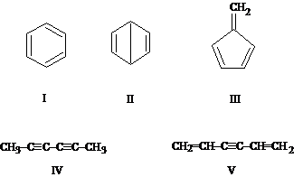
One of the reasons Kekule's structure was largely accepted is because of the number of isomers of products (isomer number). Benzene produces only one monosubstitution product of any substituent. There is only one C6H5Br, C6H5Cl, etc. This alone places a severe limitation on benzene's structure: all hydrogens must be equivalent in order that substitution give a single product. Structure V is now rejected, since it would yield two monobromo isomeric products. Similar reasoning rejects structures II and III.
With disubstitution products, there are only three possible isomers. Three and only three dibromobenzene isomers have ever been made. This now eliminates structure IV because it can make at least 12 dibromo derivatives and maybe more.
In drawing the 1,2-, 1,3-, and 1,4-dibromobenzene structure
using structure I, it seems possible that there could possibly exist more than
3 dibromo derivatives, because the double bonds in the ring would have make
more than three such isomers possible. Kekule accounted for this fact by
saying that the double bonds could rearrange into an alternating structure,
which was in equilibrium with the other. This alternation
of
bonds was later thought to be tautomerism.
10.4 Stability of benzene ring. Reactions of benzene
In seeing Kekule's structure as cyclohexatriene instead of benzene, it ought to react like any other alkene, except that it is a triene. However, whereas cyclohexene reacts by rapidly oxidizing in cold, dilute, aqueous KMnO4, benzene does not react. Whereas Br2/CCl4 in the dark, and HI produce the expected addition reactions with cyclohexene, benzene does not react. Whereas H2 and Ni cause rapid hydrogenation at room temp. and low press., there is only slow hydrogenation of benzene which requires high temperature and pressure (100- 200°, 1500 psi).
The reactions of benzene are all substitution reactions.
(1) Nitration. Benzene + HNO3 (+H2SO4) → C6H5NO2 + H2O
(2) Sulfonation. Benzene + H2SO4 (+SO3) → C6H5SO3H + H2O
(3) Halogenation. Benzene + X2 (+Fe) → C6H5X + HX (X2=Cl2, Br2)
(4) Friedel-Crafts alkylation. Benzene + RCl (+AlCl3) → C6H5R + HCl
(5) Friedel-Crafts acylation. Benzene + RCOCl (+AlCl3) → C6H5COR + HCl
10.5 Stability of benzene ring. Heats of hydrogenation and combustion
Since addition would destroy the ring structure of conjugated double bonds, substitution is the expression of a resistance against this attempt to alter the ring. Looking at both the heats of hydrogenation and of combustion for benzene, the values are lower than would be expected. A consistent 28-30 kcal/mol was found for the heat of hydrogenation of double bonds: cyclohexene has a 28.6 kcal heat of hydrogenation, while cyclohexadiene has about twice that at 55.4 kcal. Predictions would indicate that cyclohexatriene would have a 85.8 kcal, but the value is actually 49.8 kcal (36 kcal less). The lower energy must mean it is stable by that amount, even more stable than cyclohexadiene. The heat of combustion produces the same value.
10.6 Carbon-carbon bond lengths in benzene
Another fact is that the C-C bonds are all equal in length, with a length intermediate between single and double bonds. C=C double bonds in many compounds have an average 1.34 Å length, while C-C single bonds are typically longer: 1.53 Å in ethane, 1.50 Å in propylene, 1.48 Å in 1,3-butadiene. If benzene had only 3 single and 3 double bonds as in Kekule's structure, it would be expected that there would be 3 short bonds corresponding to double bonds, and 3 longer bonds. X-ray diffraction shows them all to be equivalent, with a 1.39 Å bond length.
10.7-.9 Benzene resonance structures. Orbital picture of benzene. Representation of ring
Kekule's structures meet the conditions of resonance: structures that differ only in the arrangement of electrons. Because they show resonance, they should also have an added stability, which they do (by 36 kcal). With six identical bond lengths, all of them between a single and double bond in length, the properties of benzene are now in order. Addition reactions would actually convert benzene into a less stable structure; the first stage of hydrogenation actually requires 5.6 kcal to change to the less stable cyclohexadiene.
The quantum mechanical picture show that with carbon in benzene bound to three atoms, an sp2 hybrid structure is presumed. Because it applies to all carbons, and sp2 hybridization dictates flat structures with 120° bond angles, the entire benzene molecule must be flat, with all C and H atoms in one plane. All backbone bonds are of the σ type. Six electrons do not participate in σ bonding however; they distribute themselves in p orbitals which lie above and below the plane. Overlap of the p orbital lobes between carbon nuclei permits π bonding. In fact all electrons are delocalized in a circular way throughout the ring. It is the p electrons which give benzene and aromatic compounds their reactivity toward electrophilic (acidic) agents, but which preserves its ring structure by allowing substitution instead of addition. X-ray and electron diffraction show benzene to be flat with the expected bond angles, and with a C- C bond length of 1.39 Å and a C-H bond length of 1.10 Å.
10.10 Aromatic character. The H ckel 4n+2 rule
Aromatic compounds are those that resemble benzene. But there is actually a better definition. A certain degree of unsaturation is expected, but the unsaturated compound should be ready for substitution rather than addition reactions. Low heats of hydrogenation and combustion should be found relative to a less unsaturated compound. Like benzene, an aromatic should have a cyclic cloud of delocalized pi electrons above and below the plane of the molecule. In addition, there should be a total of 4n+2 electrons.
As proof, benzene has 6 π electrons; (n=1 in Huckel's rule). Cyclopentadienyl cation has 4 πelectrons, cyclopentadienyl radical has 5, and cyclopentadienyl anion has 6. The last one is aromatic. For cycloheptatriene, its cation has 6 pi electrons and is aromatic (it is also called tropylium), while the radical and anion have 7 and 8 pi electrons, resp., and are not aromatic. For these molecules, five or seven equivalent structures (as hybrids) can be drawn, with the charge or odd electron on each carbon.
Cyclopentadiene is a very strong acid for a hydrocarbon
(Ka = 10−15; compare cycloheptatriene with
Ka = 10−45). Ferrocene has the structure
[(C2H5)−]2Fe2+, and
is a sandwich
of two flat rings coordinated with the rings concentrically
to an iron atom. The C-C bonds are all 1.4 A, and the rings undergo aromatic
substitution such as sulfonation and the F-C reactions.
Of all the cycloheptatriene derivatives, the cation is the most unusual. Tropylium bromide (C7H7Br) melts above 200°, is soluble in water but not at all in nonpolar solvents, and there is a precipitate (AgBr) when AgNO3 is added. The last reaction suggests that it is not a typical organic bromide, RX, but a salt, R+Br−, with an apparently stable carbonium.
Looking at the electronic configuration of cyclopentadienyl anion, four carbons have 1 pi electron each, while one of the carbons holds 2 pi electrons in its p orbital (as a result of the proton leaving). Hybridization is sp2 and 120° bond angles are expected, but a flat, regular pentagon has angles of 108°, the apparent bond angle (any instability is likely to be because of angle strain). However, formation of the aromatic structure more than compensates for angle strain.
With tropylium ion, the angles of a flat, regular heptagon would be 128.5°; angle strain may also be significant here. Six carbons hold 1 electron each in their p orbitals, and the seventh contributes nothing. An aromatic 6 pi electrons. Actually 6 pi electrons are typically the H ckel number encountered: aromaticity requires flatness for overlap of the p orbitals to create the π system, and a rings with member others than 5, 6, or 7, would have bond angle strain far from the favored sp2- hybridized 120° with energies of angle strain higher than that gained by aromaticity.
Evidence of the other H ckel magic numbers
(2, 10, 14, etc) is found
by finding the right compound that matches the features of benzene: a flat,
ring system with sp2-hybridized carbons, the appropriate
number of electrons in p orbitals or in the π system.
10.11 Nomenclature of benzene derivatives
For benzene in particular, substituent names are added as prefixes to the word -benzene, e.g., chlorobenzene, nitrobenzene, etc. Other names are special: methylbenzene is toluene, aminobenzene is aniline, hydroxybenzene is phenol, carboxybenzene is benzoic acid, and sulfoxybenzene is benzenesulfonic acid. The three possible disubstituted isomers are named relative to each other: 1,2- is ortho, 1,3- is meta and 1,4 is para. In naming multiple substituents, the carbon which number one is assigned based on the root name, with the balance of numbers assigned usu. in a clockwise direction. The lowest combination of numbers should be used in naming compounds.
10.12 Quantitative elemental analysis: nitrogen and sulfur
In chapter 2, molecular formula and relative composition particular to C, H, and X atoms was discussed. Nitrogen can be quantitatively determined by either of two methods.
(a) the Kjeldahl method (cannot be used for all cmpds like the Dumas method, but is more convenient): the organic compound is placed in concentrated H2SO4 to convert N into (NH4)2SO4, is subsequently made alkaline to liberate NH3 which is distilled and then titrated with a standardized acid. For example, a 3.51 mg aniline sample neutralized 3.69 ml of 0.0103 N acid. For every millieq. of acid there is one millieq. NH3 = 3.69 × 0.0103 = 0.0380 mmol (note significance). The weight percentage of N is 100% × (0.0380 mmol × 14.01 mg/mmol) ÷ 3.51 mg = 15.1%.
(b) the Dumas method: the cmpd is passed first through a hot copper oxide tube, then to hot Cu metal gauze. The copper oxide oxidizes the compound (as for C-H combustion in chap. 2) to convert N into N2. The Cu gauze reduces any nitrogen oxides which may have been formed to N2. The gas is collected and its volume measured. As an example, 8.32 mg of aniline produces 1.11 cm3 N2 at 21° and 743 mm (corrected for vapor pressure of water). The volume of N2 is calculated at standard T and P: N2 at STP = 1.11 × 273 / (273 + 21) × 743 / 760 = 1.01 cm3. From it, the weight of nitrogen is assessed: 1.01 / 22400 × (2 × 14.01) = 1.26 mg. The weight percentage is 100% × 1.26 / 8.32 = 15.2%.
Sulfur in organic compounds is converted to sulfate ion by methods used to determine X (see Chap.2): treatment with Na2O2 or HNO3 (Carius method). This is then converted to BaSO4, then weighed.
Chap. 11 Electrophilic aromatic substitution
11.1 Introduction
The benzene ring undergoes substitution reactions rather than addition to protect the stable structure of the ring; the π electron cloud above and below the plane of atoms contributes to this stability, although they are as loosely held as the pi electrons in a single C=C bond. But the reactivity of the benzene comes from the π electron cloud as well, serving as a base to any electrophilic group. The substitution reactions are as follows
- Nitration. ArH + HONO2 [+H2SO4] → ArNO2 + H2O
- Sulfonation. ArH + HOSO3H [+SO3] → ArSO3H + H2O
- Halogenation. ArH + X2 [Fe] → ArX + HX [X2=Cl2, Br2]
- Friedel-Crafts alkylation. ArH + RCl [+AlCl3] → ArR + HCl
- Friedel-Crafts acylation. ArH + RCOCl [+AlCl3] → ArCOR + HCl
- Protonation.
ArSO3H + H+ [H2O] →
ArH + H2SO4 [desulfonation]
ArH + D+ ArD + H+ [hydrogen exchange] - Thallation. ArH + Tl(OOCCF3)3 [CF3COOH] → ArTl(OOCCF3)2 + CF3COOH
- Nitrosation. ArH + HONO → ArN=O + H2O [only for highly reactive ArH]
- Diazo coupling. ArH + [Ar N2]+ X− → ArN=NAr + HX [only for highly reactive ArH]
- Kolbe reaction. Only for phenols (see 24.11)
- Reimer-Tiemann reaction. Only for phenols (see 24.12)
11.2 Effect of substituent groups
Toluene reacts with H2SO4 and SO3 (35°) to produce the disubstituted toluenesulfonic acid. Althought three isomers are possible, only two are produced in appreciable amounts: ortho:meta:para 32:6:62. The reaction can easily be gauged, since benzene and toluene are insoluble in sulfuric acid and the sulfonic acid is soluble, the hydrocarbon layer disappears. Indeed with fuming H2SO4, benzene takes 20-30 min to react, while toluene reacts within in a minute or two. If the reaction were nitration, halogenation, or F-C alkylation of toluene, the methyl group makes benzene more reactive and directs the attack toward the ortho and para positions.
With nitrobenzene, substitution occurs altogether more slowly, and the yield is chiefly with the meta isomer. Hence, a group attached to the benzene ring affects both the reactivity of the ring and the orientation of substitution. Groups which make the ring more reactive are called activating groups, while groups making it less reactive are deactivating groups. Groups causing attack at chiefly the ortho and para positions are called ortho,para directors, while groups causing attack at the position meta to it are meta directors.
11.3-.4 Determination of orientation and relative reactivity
Every group/substituent attached to the benzene ring can fall into either two classes: either as ortho,para directors or meta directors. Consider that with two ortho, two meta, and one para position, if no selectivity were to occur in the substitution reaction, 60% of the product would be ortho and para isomers, and 40% would be meta. The table below summarizes the results of nitration of the substituted benzenes listed. Note that 7 of the groups direct 96-100% of nitration to the ortho and para positions; the other 6 direct 72- 94% to the meta position.
|
| |||||||||||||||||||||||||||||||||||||||||||||||||||||||||||||||||||||||||||||||||||||||||||
In determining reactivity, the typical technique is to determine the relative reactivity, with the reference being benzene. The criteria for establishing reactivity should take into account−
(1) the time required: toluene reacts with fuming sulfuric acid in 5-10% of the time it takes benzene to react
(2) the severity of conditions: Benzene is nitrated in < 1 hour at 60° by a mixture of concentrated HNO3 and H2SO4; but for nitrobenzene to react to nitration in the same time, treatment should be at 90° and with fuming HNO3 and concentrated H2SO4. Nitrobenzene is apparently less reactive (-NO2 is deactivating).
(3) the use of competitive reactions: if equal amounts of two reactants are allowed to compete for limited amounts of reagent, one can assume which of the two is more reactive; this is ideal since the compounds are exposed identical reaction conditions. When limiting amounts of HNO3 are added to toluene and benzene, about 25 times more nitrotoluene (all possible isomers) is made relative to nitrobenzene. When HNO3 is added to a mixture of benzene and chlorobenzene, about 30 times more nitrobenzene than is chloronitrobenzene (all isomers). Hence, a methyl group is 25 times more activating, while a chloro- group is 30 times less activating. Some groups are quite powerful in activating or deactivating: aniline is about one million times more reactive than benzene, while nitrobenzene is one-millionth as reactive as benzene.
11.5 Classification of substituent groups
The table below shows the reactivity and orientation effects of groups attached to benzene undergoing electrophilic aromatic substitution.
| Activating: Ortho,Para Directors | Deactivating: Meta Directors | |
|---|---|---|
| Strongly activating | −NO2 | |
| −NH2 (−NHR, −NR2) | −N(CH3)3+ | |
| −OH | −CN | |
| Moderately activating | −COOH (−COOR) | |
| −OCH3 | −SO3H | |
| −NHCOCH3 | −CHO, −COR | |
| Weakly activating | ||
| −C6H5 | Deactivating: Ortho,Para Directors | |
| −CH3 (−C2H5, etc.) | −F, −Cl, −Br, −I |
11.6 Orientation of disubstituted benzenes
With substitution reactions using disubstituted benzenes, there can be a problem with predicting the orientation of products, let alone the reactivity. If the disubstituents are located in positions which tend to reinforce the way in which they orient, the products are easy to predict. p- Nitrotoluene clearly directs to the positions ortho to the methyl group, or meta to the nitro group, consistent with there directing properties. With m- nitrobenzenesulfonic acid, only one substitution target is likely, the position meta to both groups. And with o-cyanoacetanilide, the single position ortho to the acetylaniline and the para position (both are meta to the -CN group) are the reinforced targets.
When the effects of one group oppose those of the other, however, then relative reactivity takes over:
(a) Strongly activating groups generally take over the role of directing orientation over deactivating or weakly activating groups. The differences in directive power are obtained from the list above:
—NH2, —OH > —OCH3, —NHCOCH3 > —C6H5, —CH3 > meta directors
For example, p-hydroxytolene undergoes nitration only at the position ortho to the OH group, meta to CH3. p- Acetanilyltoluene undergoes bromination chiefly at the position ortho to -NHCOCH3, meta to CH3. And the chief product of bromination of m-hydroxybenzaldehyde, the Br atom is added to one position: ortho to CHO, and para to the OH group. If there is not a large difference in activating properties, a mixture is inevitable: nitration of p-chlorotoluene yields 58% 2-nitro-4-chlorotoluene, and 42% 3-nitro-4- chlorotoluene.
(b) There is often little substitution between two groups that are meta to each other. This probably has little to do with the directing effect or the reactivity at the position between the atoms, and everything to do with the size of the groups which the substituting agent is supposed to go between.
Nitration of m-bromochlorobenzene yields 62% nitrobromochlorobenzene isomer with —NO2 ortho to Br/para to Cl, 37% isomer with —NO2 para to Br/ortho to Cl; and 1% isomer with —NO2 between Br and Cl. With nitration of m-chlorotoluene: 32% has —NO2 ortho to Cl/para to CH3; 59% has —NO2 ortho to CH3/para to Cl; and 9% is between the two.
11.7 Orientation and synthesis
In planning a synthesis, the steps to be taken should be devised to minimize product mixtures, since product yield is low and purification is problematic. For preparing bromonitrobenzenes, it will make a difference if bromination is done prior to nitration, and vice-versa, since nitration prior to bromination is likely to yield meta isomers, while the reverse will give ortho (38%) and para (62%) isomers.
Once a group is substituted and is to be converted, the point at which conversion occurs must also be considered: oxidation of a methyl group to the carboxylic acid relative to a nitration step must be considered relative to whether ortho,para or meta isomers are desired. For example, if toluene is treated with KMnO4 to produce ArCOOH, then treated with HNO3 and H2SO4, the product is chiefly m-nitrobenzoic acid. If toluene is first treated with HNO3 and H2SO4, an ortho and para mixture of nitrotoluene is formed. The mixture can then be treated with K2Cr2O7 to produce o- and p-nitrobenzoic acids.
Although there is little apparent control over preparations leading to ortho and para mixtures, the para isomer can be purified by fractional crystallization. Since it is the most symmetrical, it is less soluble than its ortho isomer. In the very particular case of nitro compounds, the boiling point differences between ortho and para isomers permits separation by fractional distillation.
Control of orientation in EAS is the principle work in many labs today. E.C. Taylor and A. McKillop are using thallium compounds to control the targeting of substitution: thallium as the cation in organic salts, thallium salts as Lewis acids, and arylthallium compounds as reactive organometallic intermediates.
11.8 Mechanism of nitration
The mechanism of nitration has been elucidated:
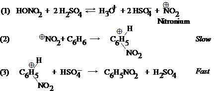
Sulfuric acid activates the nitronium group which will become the electrophile, as sulfuric acid is a much stronger acid than the relatively basic nitric acid. Nitronium ions are well-known, e.g. nitronium perchlorate (NO2+ClO4−) or nitronium fluoborate (NO2+BF4−); in fact, these stable nitronium salts in solvents like nitromethane or acetic acid will nitrate aromatics smoothly and in high yield at room temperature.
The structure of the resultant benzenonium ion is actually a mixed hybrid resonance structure, with the positive charge distributed all over the molecule, but particularly strong at the ortho and para positions to the carbon holding the -NO2 group.
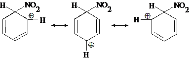
In step (3), attachment of the base HSO4− would amount to an addition reaction which would destroy the aromatic ring structure, forming a compound less energetically stable. Rather, a proton is removed by the base (in effect, regenerate the catalyst).
11.9 Mechanism of sulfation
The sulfonation mechanism is also known:
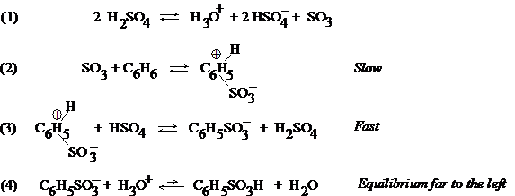
The first step is an acid-base equilibrium, generating the electrophilic SO3. It is typical to use an excess of SO3 gas nonetheless with the sulfuric acid; however, SO3 will be formed just the same. In step (2), the uncharged SO3 attaches to benzene, but is still a Lewis acid. After the proton is taken to form the sulfonic acid, a very strong acid, there is an acid-base equilibrium with water.
11.10 Mechanism of Friedel-Crafts alkylation
The mechanism of alkylation is illustrated:
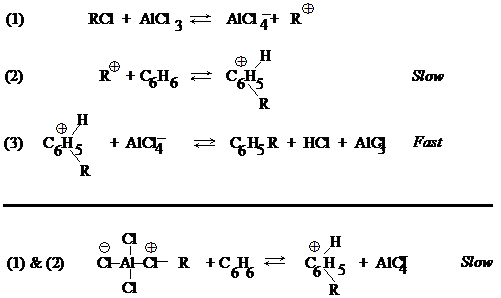
In the first step, a carbonium ion is produced, which will become the electrophile. The acid-base equilibrium is of the Lewis type. In some cases no carbonium is formed, but the AlCl3 catalyst polarizes the alkyl halide (R-Cl) bond; the electrophile is either R+ or a molecule capable of transferring R+ to the ring. In the acid-base sense, in forming R+, the AlCl4− ion is a much better leaving group than is Cl−.
11.11 Mechanism of halogenation
The mechanism of halogenation is illustrated.
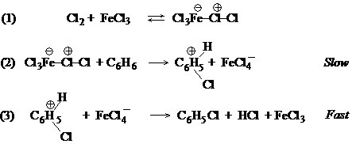
The step must involve attachment of a postive chlorine (chloronium) ion to the ring, but Cl+ would be highly reactive. Rather ferric chloride forms a complex to polarize the Cl2 molecule, and this chlorine is attached to the ring. A similar polarization of the X2 molecule was seen in addition reactions to alkenes. The Lewis acid FeCl3 is there to make sure that FeCl4− is a better leaving group than Cl−. However, very highly reactive benzene molecule will react with X2 in the absence of a Lewis acid catalyst.
11.12 Desulfonation. Mechanism of protonation
If an aryl- or benzenesulfonic acid is heated to 100-175° in aqueous acid, the aromatic hydrocarbon and H2SO4 are products. The reason this occurs is that there is an equilibrium between forming the aromatic hydrocarbon and sulfuric acid, and forming the arylsulfonic acid and water.
C6H6 + H2SO4 → C6H5SO3H + H2O
In an acid-catalyzed medium, the rate of the equilibrium is enhanced. In a more dilute solution, the principles of mass action drive the reaction toward formation of the aromatic hydrocarbon and H2SO4. During sulfonation, an excess of SO3 in concentrated or fuming H2SO4 is used with little water present. In the desulfonation process, superheated steam is passed over the dilute sulfonic acid; this puts a great deal of water and distills the volatile hydrocarbon away, further shifting equilibrium toward desulfonation. The mechanism of desulfonation must be the reverse of sulfonation (according to the principle of microscopic reversibility). Step (1): H+ adds to the ring of the sulfonate; step (2): SO3 is released as the aryl ring rids itself of the + charge.
This process also features another kind of EAS: protonation. Here the H+ ion can act as the electrophile.
11.13 Thallation
When aromatics are treated with thallium trifluoroacetate, Tl(OOCCF3)3, dissolved in TFA, high yields of arylthallium difluoroacetates are formed as stable crystalline compounds. Thallium is a Lewis acid and is thought to act as the electrophile rather than as a catalyst. (Thallium reagents are quite poisonous!) Substituted benzenes, whether activating or deactivating, affect the reactivity of thallium substitution in the usual way, but orientation to such groups and -R, -Cl, and - OCH3 is almost exclusively para, probably because Tl(tFA) is quite bulky and the para position is uncrowded. On the other hand, orientation of Tl(dFA) to groups like -COOH, -COOCH3, and - CH2OCH3 is almost exclusively ortho (even though some of these groups are meta-directing); this is believed due to complexing of the thallium atom with one of the atoms on the substituent prior to EAS (probably a nonbonding pair on an oxygen atom complexing with the Tl atom). This complex delivers the Tl compound to the ortho position neatly. In C6H5CH2CH2COOH, the O atoms are too far from the ring, so Tl(dFA) is placed para.
As seen in the 1,2- and 1,4-addition process to conjugated dienes, there is an equilibrium- and rate-controlled differences between orientation of substitution in Tl(dFA). If Tl(tFA) is mixed with isopropylbenzene (normally a para-director) reaction conditions are 25°, substitution is 94% para (the rate-controlled process). If the temperature is raised to 73°, substitution is 85% meta (the equilibrium-controlled process). If the para-arylthallium product itself is raised to 73°, it converts to the meta isomer.
Arylthallium compounds are not desirable products in themselves, but as intermediates in a synthesis. Some atoms (e.g., iodine) cannot be reactive enough to be bonded to the ring. The Tl(dFA) group enables them by being displaced by these relatively unreactive groups. Phenols and aryliodides are prepared via a thallium intermediate; Iodide ion (as in KI) gives high yields of the aryliodide.
11.14 Summary of electrophilic aromatic substitution (EAS)
To review, EAS appears to proceed by two steps: (1) attack by an electrophilic reagent leading to a stabilized ring carbonium; (2) abstraction of a H+ from the ring carbonium by a base. Evidence for electrophilic attack comes from kinetic studies and observations like the nitrating power of stable nitronium salts or the carbonium ion-like rearrangements occurring prior to F-C alkylation.
11.15 Isotope effects
Any difference in the rate (or position of equilibrium) of a reaction because of a difference in an isotopic mass present in the system is called an isotope effect. If a particular atom is less tightly bound in the transition state of a reaction in the reactant, the reaction involving the heavier isotope of that atom will go more slowly. Isotopes of H show the greatest effect, since D is double the mass of H, and T, triple the mass. Bond breaking studies with D and H to determine reaction rates show kH/kD is on the order of 5 to 8 (at room temp.), meaning those reactions with H as isotope occur 5-8 times faster than with the D isotope. (Tritium isotope effects are about twice that of D.)
Rate differences are assessed in competition experiments. In intermolecular competition, a mixture of labeled and unlabeled reactants (-C-H and -C-D) are mixed with a limited amount of reagent (Z), and the relative amounts of products are assessed (H-Z and D-Z). With intramolecular competition, a single reactant with several equivalent positions, some labeled and some not, reacts with the reagent, and the relative amounts of H-Z or D-Z can be assessed, or the D-containing and H-containing converted reactants can be assessed.
11.16 Mechanism of EAS: the two steps
The first step of the addition of electrophile is shown as the slow step, but how is that known? Lars Melander and other workers showed this by determining the rates using the reactions of nitration, bromination, and F-C alkylation to aromatic compounds labeled with D or T. It was shown that D and T were replaced at the same rate as H: there was no significant isotope effect. Since it is known that the C-T bond breaks more slowly than C-D, and C-D bonds break more slowly than C-H, this means that EAS can not involve carbon-hydrogen bond breaking. This is consistent with step (1) determining the rate, since no C-H bond is altered.
If the step were a single step, i.e., electrophilic attack to form a transition state which depends upon C-H breaking, an isotope effect must necessarily be observed. Hence, two steps are obvious. If step (2) were rate- limiting, an isotope effect should be evident. The absence of isotope effects establishes: (i) EAS occurs in 2 steps, (ii) the first step is rate- limiting.
It's true that the C-H breaks in the 2nd step more slowly than C-D and C-T, but in the overall process, the rate differences here are not observed. The reaction diagram below show the differences in Eact which account for the slow and fast steps on substitution. The intermediate carbonium is more likely to get rid of a H+ or even D+ than to go back the other way, since the reverse Eact would be higher.
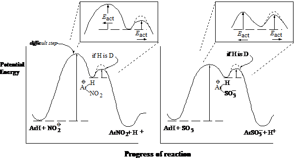
The process of sulfonation is a special case also illustrated. Since its reaction is truly reversible, this is reflected in the energy diagram. It can be seen that sulfonation is still a difficult step, but the reverse reaction involving desulfonation is possible since the Eact values are comparable. Because they are comparable, use of deuterated aromatics now does have a significant effect on sulfonation, making sulfonation slower; an isotope effect is seen in the special case of sulfonation.
In fact, use of selected aromatics—highly hindered ones—can demonstrate isotope effects during EAS, even for nitration.
11.17 Reactivity and orientation
The CH3 group is said to activate the ring and to direct either ortho or para; i.e., the ortho and para positions react faster than the meta positions. Recall that the intermediate ring carbonium distributes the charge around the ring as much as possible, but some carbons, namely the 2 positions ortho and the position para to the carbon substituted, the charge is concentrated consistent with the resonance structures forming the hybrid. Any group already attached to the ring will affect the stability of the resultant carbonium, either by its electron- withdrawing or -releasing nature.
11.18 Theory of reactivity
Comparing benzene, toluene, and nitrobenzene to an EAS reaction to substiuent Y:
The -CH3 group attached to the ring should be more stabilizing to the incipient positive charge in the ring, since alkyl groups are known to stabilize carbonium ions in general by some electron-releasing abilities, acquiring some of the charge itself. This inductive effect in the same way makes the reaction faster (and methyl and alkyl substituents appear as activating).
The -NO2 is more electron-withdrawing, which tends to intensify rather than delocalize the growing positive charge in the transition state, making the reaction less likely (slower). The list shown before has indicated which atoms or groups are considerably activating or deactivating relative to benzene. For the deactivating groups in general, the electronegativities of halogens account for their deactivating properties; for atoms next to the ring connected by multiple bonds to relatively more electronegative O and N (-NO2, -CN, -COOH), these atoms become deficient in electrons as the O and N withdraw electrons, and they pull on the ring π electrons to stabilize themselves.
In case of activating toluene, as H is replaced with halogens, their electron-withdrawing properties consequently are deactivating: toluene is 25 times more reactive than benzene, but benzyl chloride on only one-third as reactive as benzene.
11.19 Theory of orientation
Note that activating groups attached to ring activate all positions: even the meta position is much more reactive than any carbon in benzene itself. Activating groups however activate the ortho and para positions much more than the meta position, explaining orientation of the reagents.
A deactivating group deactivates all positions as well, including the meta position. Orientation to meta is simply because it is relatively less deactivated than the ortho and para positions.
The rule here is that the effect of any group−whether activating or deactivating−is strongest at the ortho and para positions. In deciding whether to substitute at the position ortho, para, or meta to the group already attached, draw all resonance structures and position the carbonium ion. Activating groups (which are electron-releasing or -contributing) will favor a position in which one of the resonance structure includes the carbon to which they are attached being one of the intermediate ions. That resonance structure should be the most stable, and therefore the transition state will be favored. Deactivating groups (except for the halogens) will destabilize any one resonance structure which places the + charge on the carbon atom to which they are attached; the only possibility of avoiding such a resonance structure is to allow substitution of the meta position, in which none of the 3 resonance structures is the least stable.
11.20 Electron release via resonance
Reactivity and orientation in EAS has been considered on the basis of the
pulling
or releasing
of electrons. These are inductive
properties related to the electronegativities, whether atomic or group-effect,
of the substituents involved.
Certain groups (-NH2 and -OH) are powerful activators even though the atoms involved are electronegative and have electron-withdrawing inductive effects. Hence their activating effects must be compete successfully with the inductive effect. Although N and O are more electronegative than C, they have nonbonding electron pair which they permit to participate in bonding processes, and these atoms show a willingness to accept a positive charge. Ammonium and amine compounds combine with acids easily, as do water and alcohols. In drawing resonance structures for Y at positions ortho, para, and meta to groups with hydroxyls or amines, or their substitutes, if Y is located at the positions ortho and para to the activating group, the nonbonding electron pair of the activating group can be used to form a double bond with the carbon to which it is attached. In that event, no carbonium ion exists, and the positive charge moves out of the ring and is assumed by the O or N atom. This arrangement is especially stable because every atom in the molecule has the octet. Substitution at the meta position makes this not possible.
11.21 Effect of halogen on EAS
Halogens represent a special case. In their normal bonding, they have three electron pairs in the valence shell which do not participate in bonding. Because of their electronegativity, they deactivate the ring inductively since they intensify the + charge, but when the reaction must go, they release an electron pair just the same via the resonance stabilization of the carbonium ion, showing a willingness to assume the + charge since every atom will at least have an octet (the halonium ion was shown in chap. 7). This favors direction to the positions ortho and para to the halogen. If no such resonance effect could obtain, the substitution would clearly be largely at the meta position.
The inductive effect is stronger than the resonance effect here, since there is a deactivation at all positions relative to attack on benzene. However, the resonance effect dictates the overall orientation of attack. The carbon-halogen bond is really only likely to assume such partial double bond character in the interest of allowing all atoms (except H) their opportunity to complete the octet.
11.22 Relation to other carbonium ion reactions
Both reactivity and orientation in EAS is determined by the rates of formation of the intermediate carbonium ions, with rate of formation paralleling what is known about the relative stabilities of the intermediates. Factors affecting stability include the electron-withdrawing and -releasing nature of the substituents. These forces oppose each other for -NH2 and —OH groups and their derivatives and for -X. For the -NH2 and -OH groups, the resonance effects outweighs the inductive effects, while for -X, they tend to be more even.
Chap. 12 Arenes
12.1 Aliphatic-aromatic hydrocarbons
Hydrocarbons with both aliphatic and aromatic groups are called arenes. The ring should still be subject to EAS as is benzene, the side chain ought to undergo free-radical substitutions since it is like an alkane. However, each group affect the other in the course of the reactions. Ethylbenzene treated with HNO3 and H2SO4 undergoes nitration faster than for benzene, and at the ortho and para position. It also reacts more readily than ethane to Br2 and light; the Br atom is found exclusively on the carbon next to the ring.
12.2-.3 Structure. Nomenclature. Physical properties
The simplest of the alkylbenzenes is toluene (methylbenzene). Larger group give the structure their alkyl name and then add -benzene. Dimethylbenzenes are given the special name of xylenes; they are identified as o-, m-, or p- xylenes. If the side chain is quite complex, the side chain may be given priority and the benzene ring considered part of it, a phenylalkane; an example is 2-methyl-3-phenylpentane. Compounds with >1 benzene ring are named as derivatives of the alkane nonetheless. The simplest alkenylbenzene is called styrene (may also be called vinylbenzene or phenylethylene). Alkynylbenzenes are usu. named as substituted alkynes.
The physical properties are typical of hydrocarbons: low polarity, insolubility in water, solubility in ether, CCl4, or ligroin; less dense than water; b.p. values increase with MW at increments of 20-30° for each C added. M.p. values depend not only on MW usually, but molecular shape (or symmetry), so the relationship to structure is complicated; among isomeric disubstituted benzenes, the para isomer generally melts considerably higher than the meta or ortho isomers. Dissolution, like melting, involves overcoming the forces which hold crystals together, so it is not surprising that the para isomer is the least soluble in a given solvent.
| Formula | m.p. (°C) | b.p. (°C) | density (@ 20°) | |
|---|---|---|---|---|
| Benzene | C6H6 | 5.5 | 80 | 0.879 |
| Toluene | C6H5CH3 | −95 | 111 | 0.866 |
| o-Xylene | 1,2-C6H4(CH3)2 | −25 | 144 | 0.880 |
| m-Xylene | 1,3-C6H4(CH3)2 | −48 | 139 | 0.864 |
| p-Xylene | 1,4-C6H4(CH3)2 | 13 | 138 | 0.861 |
| Hemimellitene | 1,2,3-C6H3(CH3)3 | −25 | 176 | 0.895 |
| Pseudocumene | 1,2,4-C6H3(CH3)3 | −44 | 169 | 0.876 |
| Mesitylene | 1,3,5-C6H3(CH3)3 | −45 | 165 | 0.864 |
| Prehnitene | 1,2,3,4-C6H3(CH3)4 | −6.5 | 205 | 0.902 |
| Isodurene | 1,2,3,5-C6H3(CH3)4 | −24 | 197 | |
| Durene | 1,2,4,5-C6H3(CH3)4 | 80 | 195 | |
| Pentamethylbenzene | C6H(CH3)5 | 53 | 231 | |
| Hexamethylbenzene | C6(CH3)6 | 165 | 264 | |
| Ethylbenzene | C6H5C2H5 | −95 | 136 | 0.867 |
| n-Propylbenzene | C6H5CH2CH2CH3 | −99 | 159 | 0.862 |
| Cumene | C6H5CH(CH3)2 | −96 | 152 | 0.862 |
| n-Butylbenzene | C6H5(CH2)3CH3 | −81 | 183 | 0.860 |
| Isobutylbenzene | C6H5CH2CH(CH3)2 | 171 | 0.867 | |
| sec-Butylbenzene | C6H5CH(CH3)CH2CH3 | −83 | 173.5 | 0.864 |
| tert-Butylbenzene | C6H5C(CH3)3 | −58 | 169 | 0.867 |
| p-Cymene | 1,4-CH3C6H4CH(CH3)2 | −70 | 177 | 0.857 |
| Biphenyl | C6H5C6H5 | 70 | 255 | |
| Diphenylmethane | C6H5CH2C6H5 | 26 | 263 | |
| Triphenylmethane | (C6H5)3CH | 93 | 360 | |
| 1,2-Diphenylethane | C6H5CH2CH2C6H5 | 52 | 284 | |
| Styrene | C6H5CH=CH2 | −31 | 145 | 0.907 |
| trans-Stilbene | trans-C6H5CH=CHC6H5 | 124 | 307 | |
| cis-Stilbene | cis-C6H5CH=CHC6H5 | >6 | ||
| unsym-Diphenylethylene | (C6H5)2C=CH2 | >9 | 277 | 1.02 |
| Triphenylethylene | (C6H5)2C=CHC6H5 | 73 | ||
| Tetraphenylethylene | (C6H5)2C=C(C6H5)2 | 227 | 425 | |
| Phenylacetylene | C6H5C≡CH | −45 | 142 | 0.930 |
| Diphenylacetylene | C6H5-C≡C-C6H5 | 62.5 | 300 | |
The melting point value change is reflective of the need for symmetry. A good example is benzene, which is highly symmetrical and melts at 5°: introduction of a methyl group to make toluene and the melting point falls to —95°.
12.4 Industrial source of alkylbenzenes
Laboratory synthesis of benzene rings de novo to make aromatics from simpler molecules is not done. As much as the alkanes from petroleum serve as the source of all aliphatics, benzene and alkylbenzenes are the source of all aromatic reagents. Both coal and petroleum can serve as sources for aliphatics and aromatics. Coal is often mined to for conversion to coke, which is used for smelting iron to steel. When coal is heated without air, the residue is coke, but the volatile compounds driven away consist of coal gas and a liquid coal tar. The coal tar may be distilled to yield the aromatics: 1 ton of soft coal can produce 120 lb coal tar, which can be separated to benzene (2 lb), toluene (0.5 lb), xylenes (0.1 lb), phenol (0.5 lb), cresols (2 lb), and naphthalene (5 lb).
Another source of aromatic HCs is through the catalytic reforming of alkanes. This results not only in dehydrogenation (methylcyclohexane to toluene), but also cyclization and isomerization, as toluene is formed from n-heptane or 1,2-dimethylcyclopentane. Benzene is formed by similar processes, including hydrodealkylation of toluene.
12.5 Preparation of alkylbenzenes
1. Attachment of alkyl group. F-C alkylation.
Benzene + RX (+ Lewis acid) → C6H5R + HX
Note R may rearrange. Lewis acid = AlCl3, BF3, HF, etc. Note RX ≠ ArX.
2. Conversion of side chain. The Clemmensen and Wolff-Kishner reduction
C6H5COR (a ketone) + Zn(Hg)/HCl/heat or N2H4/base/heat → C6H5CH2R
Friedel-Crafts alkylation is useful in direct attachment of an alkyl group to the aromatic ring, but a limitation of the reaction is that the alkyl group attached is not always the same as the parent halide (rearrangement).
Side-chains containing oxidized functions can similarly be converted to arenes using strong reducing conditions. These reducing reactions are important, since acid chlorides can be added without concern for rearrangment, and subsequently be reduced to produce the desired alkane.
12.6-.8 Friedel-Crafts alkylation. Mechanism. Limitations
Adding anhydrous AlCl3 to benzene-methyl chloride mixtures causes a vigorous reaction: HCl gas is evolved and toluene is obtained. This reaction was shown by Charles Friedel and James Crafts in 1877. However, the alkyl halide is not limited to R=methyl and X=chlorine. In fact, almost every compound but ArX can be employed; the halogen in an aryl bond is too unreactive. The aromatic can be benzene itself, certain substituted benzenes (viz., alkylbenzenes and halobenzenes) or more complicated ring systems like naphthalene and anthracene. Any Lewis acid other than AlCl3 can be employed, namely, BF3, HF, and H3PO4. The reagents are simply mixed, with an attempt to cool the reaction and trapping HX being made. It is important to limit attack to monoalkylation by using an excess of hydrocarbon. Usually, the RX compound is added slowly, while the aromatic serves as solvent and reactant.
If the alkane is polyhalogenated (RX2, RX3, or CCl4), multiple aromatic rings may be found in the final product:
2 C6H6 + CH2Cl2 → C6H5CH2C6H5 + 2 HCl
2 C6H6 + ClCH2CH2Cl → C6H5CH2CH2C6H5 + 2 HCl
3 C6H6 + CHCl3 → (C6H5)3CH + 3 HCl
3 C6H6 + CCl4 → (C6H5)3CCl + 3 HCl
AlCl3 is the catalyst in all the above reactions. Two mechanisms for F-C alkylation were shown possible in 11.10. The mechanisms show that many Lewis acids can involve themselves in the reaction besides AlCl3; draw the Lewis structures of AlCl3, BF3, FeCl3 to see the need to complete the octet. In the special case of HF, it is sufficiently polar to react as well.
Since they all generate a carbonium ion at some stage, it is possible that anything generating a carbonium ion will react as EAS-type. Alcohols and alkenes also are electrophilic and susceptible to protic acid attack, generating carbonium ions which in turn can participate in EAS.
C6H6 + (CH3)3COH → C6H5–C(CH3)3
C6H6 + (CH3)2C=CH2 → C6H5–C(CH3)3
Both reactions are catalyzed by H2SO4; both yield the same product, tert-butylbenzene. Since carbonium ions are intermediates, formation of the most stable carbonium ion will decide the orientation of EAS; in addition, rearrangements caused by 1,2-hydride and -alkyl shifts are dictated. Consider the following reactions:
| C6H6 + | Conditions | Products (Yields) |
|---|---|---|
| n-propyl chloride | AlCl3, -18° to 80° | n-propylbenzene (35-31%) isopropylbenzene (65-69%) |
| n-butyl chloride | AlCl3, 0° | n-butylbenzene (34%) sec-butylbenzene (66%) |
| isobutyl chloride | AlCl3, -18° to 80° | tert-butylbenzene |
| neopentyl alcohol | BF3, 60° | tert-pentylbenzene |
Hence a carbonium ion can:
- eliminate a H+ to form an alkene
- rearrange to form a more stable carbonium ion
- combine with a negative ion or other basic molecule
- add to an alkene to form a larger carbonium ion
- abstract a H− from an alkane
- alkylate an aromatic ring
The fact that some of the products formed represent unrearranged carbonium ions does not mean that EAS does not occur by carbonium ion intermediates. The unrearranged carbonium, being the least stable, is therefore likely to be the most reactive, providing the energy for EAS. The same low stability which makes primary carbonium ions prone to rearrangement makes them highly reactive as well.
There are 3 limitations to use of F-C alkylation: (i) the possibility of polysubstitution, (ii) the possibility of alkyl group rearrangement, and (c) aryl halides are not among the RX compounds capable of reaction. Two more limitations are now added: (iv) any aromatic ring less reactive than any halobenzene does not under F-C reaction. Apparently, the R+ carbonium ion is not as powerful an electrophile as NO2+. (v) aromatic rings containing amine or substituted amines (-NH2, -NHR, or -NR2) do not react to F-C alkylation, for the reason that the basic amines provide a nonbonding electron pair for the Lewis acid catalysts which are need to ionize RX, and they tie up the catalyst.
12.9 Reactions of alkylbenzenes
- Hydrogenation.
C6H5CH2CH3 + 3 H2 (Ni, Pt, Pd) → C6H10CH2CH3 - Oxidation.
C6H5CH2CH3 + KMnO4 or K2Cr2O77 or dil. HNO3 → C6H5COOH (+ CO2 - Substitution in the ring. EAS.
Toluene + HNO3, H2SO4 → o- and p-nitrotoluene H2SO4, SO3 → o- and p-toluenesulfonic acid CH3X, AlCl3 → o- and p-xylene (temperature may affect orientation) X2, FeX3 → o- and p-halotoluene - Substitution in the side chain. Free-radical halogenation. same as in alkanes
12.10 Oxidation of alkylbenzenes
Benzene and alkanes resist the usual oxidizing agents (permanganate, dichromate, etc.), but the benzene ring makes the aliphatic side chain quite susceptible to oxidation. In the course of oxidation, all carbons are removed from the side chain except the carbon attached, leaving COOH to indicate the position of the original side chain. KMnO4 is usually used as the oxidizing reagent, although K2Cr2O7 and dil. HNO3 can be used; because oxidation of the side chain is more difficult than that of an alkene, prolonged treatment with hot KMnO4 is required. n-Butylbenzene exposed to hot permanganate is degraded completely to benzoic acid (the other carbons become CO2).
The oxidation of side chains is used for two purposes. One is the synthesis of carboxylic acids. p-Xylene is converted to terephthalic acid (1,4-benzenedicarboxylic acid) with hot permanganate. p-Nitrotoluene is converted to p-nitrobenzoic acid with acidified dichromate.
The other purpose is for identification of alkylbenzenes. For example, a liquid compound with formula C8H10 and boiling point 137-139° has been otherwise found to be an alkylbenzene. From the list of physical properties, it might be o-, m-, or p- xylene, or ethylbenzene. The compound can now be oxidized and the m.p.of the product can be compared to the m.p. values of predictable oxidation products or their derivatives of the above potential reactants. o-Xylene would produce phthalic acid (m.p. 231°; its p-nitrobenzyl ester, m.p. 155°); m-xylene would produce isophthalic acid (m.p. 348°; its p-nitrobenzyl ester, m.p. 215°); p-xylene would produce terephthalic acid (m.p. 300° subl.; its p-nitrobenzyl ester, m.p. 263°); and ethylbenzene would produce benzoic acid (m.p. 122°; its p-nitrobenzyl ester, m.p. 89°).
12.11 EAS in alkylbenzenes
It has already been shown in chap. 11 that alkyl groups attached to the benzene ring are activating and ortho,para-directing.
12.12 Halogenation of alkylbenzenes: ring vs. side chain
Halogens can substitute in alkylbenzenes in two ways, and different reaction conditions obtain for either way, allowing control of orientation. For halogenation of side chain, the same chemistry which applies to halogenation of alkanes is in order: the X2 molecule is made into a free radical by high temp. or by UV light. For EAS, the X2 molecule must be ionized or polarized by a Lewis acid catalyst (at low temperatures to guard against side chain substitution).
Ring halogenation is chiefly ortho and para to alkylbenzenes: toluene treated with Cl2 and Fe or FeCl3 yields 58% o- chlorotoluene and 42% p-chlorotoluene. Side-chain halogenation, even when attempts are made to limit to monohalogenation by use of excess alkylbenzene, may still yield polyhalogenated products. For toluene, the products of chlorination are benzyl chloride, benzal chloride, and benzotrichloride for the mono-, di-, and trisubstituted compounds.
12.13 Side-chain halogenation of alkylbenzenes
For a side chain larger than a methyl group, the chief site of halogen free radical substitution is the carbon alpha to the benzene ring. Ethylbenzene exposed to Br2 plus heat or light produce no 2-bromo-1-phenylethane (a 1° RX) and exclusively 1-bromo-1-phenylethane (a 2° RX). Actually, the hydrogen atoms bound to the carbon attached to the benzene ring are not just 2° hydrogens, but benzylic H atoms, and are as easy as allylic hydrogens to abstract in free radical reactions. Competition reactions show that at 40° a benzylic H atom in toluene is 3.3 times more reactive to Br atoms as a 3° H atom of an alkane, and nearly 100 million times more than the H atom of methane.
The list for the ease of abstraction of H atoms, the ease of formation of free radicals, and the stability of the free radical intermediate can be expanded:
allyl, benzyl > 3° > 2° > 1° > CH3 , vinyl
Bond dissociation energies for formation of benzyl radicals from toluene show an 85 kcal/mol requirement (see Chap. 1), compared to 91 kcal to form t-butyl radicals and 88 kcal to form allyl radicals.
Chlorination is less discriminating than bromination. Free radical chlorination of ethylbenzene shows both possible monosubstituted isomers being produced: 91% the benzyl substitute 1-chloro-1-phenylethane, 9% the primary carbon substitute. Competition experiments show that conditions where the relative reactivites are 5.0:3.8:1.0 for 3°:2°:1° hydrogens, the relative rate per benzylic H for toluene is only 1.3. This is because the more reactive Cl atom is less selective than the Br atom, less selective between H atoms in a single molecule and less selective between H in different molecules. Since the transition state in Cl attack is reached early, the organic group has acquired little free character before the C-H bond is broken. The fact that Cl atom is less reactive to benzylic H atoms is not well understood, although it has been attributed to polar factors ( 32.4).
12.14 Resonance stabilization of the benzyl radical
Stabilization of the free radical is considered to result from resonance of the odd electron throughout the ring. The methylene group in the intermediate forms a double bond with the ring while the odd electron stabilizes itself in pi ring system. The amount of stabilization is considered the difference between forming a methyl radical (+104 kcal/mol) and the benzyl radical (+85 kcal), which is 19 kcal/mol.
12.15 Triphenylmethyl: a stable free radical
Although the benzyl radical is relatively more stable than a methyl radical, all free radicals are reactive; the benzyl and allyl radicals exist for only a few milliseconds. However, direct evidence for free radicals exists. Moses Gomberg published paper in J. Am. Chem. Soc. and Berichte in 1900 about his work with phenylated alkanes. He had succeeded in preparing tetraphenylmethane and was attempting to synthesize hexaphenylethane. Using triphenylchloromethane, he tried using metals (Na, but it does not work well; then finely divided Ag, Hg, and best, Zn) for the synthesis. The reactant stood in benzene solution over the metal, and was filtered to remove the metal halide. After evaporating the benzene, a white crystalline solid with m.p. 185° remained.
Gomberg's analysis showed a 88% carbon and 6% hydrogen content, less than the expected 100% total. Attempts were made to make sure oxygen was not incorporated: under an atmosphere of CO2, the compound was made and filtered and the solvent evaporated. This product was much more soluble in benzene than the first product and did not melt at 185°. Composition analysis showed 93.8% carbon and 6.2% hydrogen: hexaphenylethane.
Dissolved in benzene, the substance was yellow in color. If air was allowed to enter, the yellow color disappeared, then came back after a few minutes. With more O2, the color disappeared then reappeared; more air, it finally disappeared, and the compound with 185° appeared once more. The compound was now known to be peroxidized triphenylmethane, or peroxybis(triphenylmethane). The yellow color was the radical form, while the dimer form he thought he was trying to synthesize was colorless, as well as the peroxy form. The dimer is not actually the hexaphenylethane, but was shown in 1968 to be completely different:
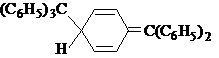
Further evidence of a free radical character of these stabilized molecules is that odd electrons are not opposed in spin as in a paired orbital. Hence the molecule has a net magnetic moment, making the compound paramagnetic (attracted in a magnetic field) and able to show characteristic absorption in a electron spin resonance spectrum. The triphenylmethyl radical is stabilized because of the high amount of delocalization that occurs over three rings rather than just one. In addition crowding from 3 aromatic rings weakens the C-C bond in the dimer, and making it difficult for the atoms to approach each other.
12.16 Preparation of alkenylbenzenes. Conjugation with ring
Styrene can be prepared in 90% yield simply by a dehydrogenation of ethylbenzene with a catalyst (Cr2O3 Al2O3) at high temp. (600°), and ethylbenzene is obtained by acid (H3PO4)- catalyzed F-C alkylation with ethylene and benzene.
Laboratory synthesis is most likely by used of dehydrohalogenation or dehydration. 1-Phenyl-1-chloroethane + KOH (alc), heat → styrene. 1-Phenylethanol + ZnCl2, heat → styrene. With dehydrohalogenation of 1-phenyl-2-chloropropane or dehydration of 1-phenyl-2-propanol, two isomers are possible but only one is obtained: 1-phenylpropene. The 3-phenylpropene (allylbenzene) is not only not an elimination product, but when it is treated with KOH + heat, it is converted to 1-phenylpropene. The simple explanation is that formation of a double bond in that position makes it conjugated with the aromatic ring, an usually stable system which is very easily formed.
12.17 Reactions of alkenylbenzenes
Alkenylbenzenes undergo both EAS and the reactions of alkenes, including addition to the C=C bond. Because of the pi electrons in the alkene side chain, the ring and side chain will compete for electrophiles; the alkenyl function usually will win since the resonance-stabilized ring is less reactive. As proof, styrene can be catalytically hydrogenated to saturation: but hydrogenation conditions to produce ethylbenzene are relatively mild (Ni, 20°, 2-3 atm, 75 min), while conditions to saturate the ring to make ethylcyclohexane are intense (Ni, 125°, 110 atm, 100 min from ethylbenzene).
The alkene bond can be treated to mild oxidation conditons to produce the glycol, or oxidized completely to the carboxylic acid. Styrene + H2O2 (in formic acid) → phenylethylene glycol + KMnO4 → benzoic acid.
With halogenation, the alkene bond reacts quickly and firstly by ionic addition before ring halogenation occurs. If ring halogenation without electrophilic addition of the C=C bond is desired, it is necessary to halogenate first and generate the double bond after: ethylbenzene + Cl2 (FeCl3) → o- and p-chloroethylbenzene + Cl2, heat → 1-(p-chlorophenyl)-1-chloroethane + KOH → p-chlorostyrene.
12.18-.19 Addition to conjugated alkylbenzenes: orientation. Stability of the benzyl cation. Reactivity
The rule in addition of an unsymmetrical reagent to a double bond which can yield two different products is that the predominant product in the electrophilic or free radical addition is the one yielding the more stable particle, whether a carbonium ion or free radical. 1-Phenylpropene is treated with HBr in the presence and absence of peroxides. In the absence of peroxides, Br is found in the benzylic position; the mechanism is considered ionic addition with formation of a very stable benzyl cation intermediate. In the presence of peroxides, the Br atom is on the carbon once removed from the ring, next to the benzyl carbon; the mechanism involves free radical additon of Br free radical, which permits formation of a benzyl free radical intermediate.
The evidence of a very stable benzyl free radical has been shown in an earlier section of this chapter. As for the benzyl cation, the ionization potential of benzyl free radical is 179 kcal/mol, 69 kcal more stable than a methyl cation, and just about as stable as tert-butyl cation. Hence the stability of carbonium ions follows this series:
Stability of carbonium ions: benzyl, 3° > allyl, 2° > 1° > CH3+
This stability is considerable, since otherwise the benzylic carbon might be considered a 2° carbon. It is the resonance of the ring which makes this lower potential energy possible.
Since benzyl cations are more stable than what might occur in simple alkenes, the rate of addition is expected to be faster. However, because conjugated alkenylbenzenes are so stable, they may be relatively unreactive compared to the simple alkenes. This contradiction is resolved as in the case of conjugated dienes: since both the reactant and the transition state are resonance-stabilized, the rate of the reaction (faster or slower) will depend upon which is stabilized more. In fact, conjugated alkenylbenzenes react faster to ionic and free-radical addition, since—as in most cases—resonance stabilization of the transition state leading to the carbonium or free radical intermediate is more important than stability of the reactant. (This is not always true.)
12.21 Analysis of alkylbenzenes
Arenes with saturated side chains are distinguished from alkenes by a failure to decolorize Br2 in CCl4 (with HBr evolution) and by failure to decolorize cold, dilute, neutral permanganate. They can be distinguished from alkanes in that they dissolve−because of sulfonation−in cold fuming H2SO4. They are distinguished from ROH or other oxygen-containing compounds because they do not immediately dissolve in cold concentrated H2SO4. They are distinguished esp. from 1° and 2° alcohols by failure to give a positive chromic anhydride test.
Alkylbenzenes able to undergo F-C alkylation give orange- to red-colored products when treated with CHCl3 and AlCl3, these colors due to formation of triarylmethyl cations, Ar3C+, existing as salts of AlCl4−. The color produced is characteristic of the aromatic: orange to red for halobenzenes, blue for naphthalene, purple for phenanthrene, green for anthracene.
Aromatics with unsaturated side chains can be analyzed in the manner for analyzing aromatics or for functions with double or triple bonds.
Chap. 13 Spectroscopy and structure
13.1 Determination of structure: spectroscopic methods
The use of spectroscopic instruments has made determination of structure for complex compounds quite easy. Most chemists rely on the use of nmr and ir spectra, but determination of mass, uv and esr spectra is important and often definitive.
13.2 Mass spectroscopy
Molecules are bombarded with a beam of energetic electrons. The molecules are broken into fragments which are ionized. Each ion has a particular mass-to- charge value (m/e). For singly charged ions, m/e is just the ion mass. Neopentane can lose an electron to form a parent ion with m/e = 72. It can also produce several fragments with the following m/e and relative intensities:
| ion | m/e | relative intensity |
|---|---|---|
| (C4H9)+ | 57 | 100 (base peak) |
| (C3H5)+ | 41 | 41.5 |
| (C2H5)+ | >29 | 38.5 |
| (C2H3)+ | >27 | 15.7 |
There are other fragments as well. What is important about the list or plot of data is that the fragments and their relative intensities are characteristic of the compound, like fingerprints. Comparison of an unknown with spectra on record can establish the identity, much like identical m.p., b.p., density, refractive index, etc.
Mass spectra also establish features of a new compound, providing MW data and narrowing the molecular structure down by the way it fragments. Often the parent ion is the base (highest) peak and can be identified to establish MW. Many tiny peaks among the large ones appear, and this is because of the differences in naturally occurring isotopes of the atoms. Knowing the abundance of each possible isotope (see table) allows predictions of intensities in isotopic peaks.
| heavy isotope | abundance relative to isotope of lowest atomic weight |
|---|---|
| 2H | 0.015% |
| 13C | 1.11 |
| 15N | 0.37 |
| 18O | 0.20 |
| 33S | 0.78 |
| 34S | 4.4 |
| 37Cl | 32.5 |
| 81Br | 98.0 |
Benzene has an M+ peak (parent ion peak) with m/e 78 (its MW). It has an M + 1 peak (m/e 79) because of the C513CH6+ and C6H5D+. The M + 2 peak can be due to 3 different ions, one with two 13C, one with a 13C and D, and the other with two D atoms. The peak intensities are low, however, because of the low natural abundance of the other isotopes. But, it is because of the smaller peaks that the molecular formula can be assessed accurately.
13.3 The electromagnetic spectrum
It is important to know the EM radiation can be characterized by a frequency and a wavelength, knowing its speed in a particular medium. The energy associated with particular EM radiation is known by the equation E=hν (h=6.5 × 10−27 erg-s)
13.4 The infrared spectrum
IR spectra give the most information about the structure of organics. Bonds in the molecule are always vibrating, either by stretching or bending with respect to each other. These changes are caused by absorbing IR light.
In referring to IR part of spectra, wavelengths are given in microns, m (1 m = 10−4 cm or 104 A). Frequencies are not expressed in Hz, but wavenumbers, or reciprocal centimeters, cm−1 = 1/l in where l is in cm.
IR spectra can establish identity of an unknown by comparison to reference spectra (as in ms), or can give information about the structure of a new compound. One region of the IR spectra, from 600-1500 cm−1, is called the fingerprint region as it has a number of revealing characteristic absorptions. The presence or absence of characteristic bands usually can help eliminate or confirm the presence of a functional group.
Interpretation is made difficult by absorptions which overlap, or by the presence of harmonics at twice the frequency of the fundamental band. Shifting of the characteristic band can occur as a result of the functional group affected by certain structural features: conjugation, electron withdrawal by a neighboring atom or group, angle strain, van der Waals strain, hydrogen bonding. The table below presents the characteristic absorption bands.
| Bond | Compound type | Frequency range (cm−1) |
|---|---|---|
| C–H | alkanes | 2850-2960
1350-1470 |
| C–H | alkenes | 3020-3080 (m)
675-1000 |
| C–H | aromatic rings | 3000-3100 (m)
675-870 |
| C–H | alkynes | 3300 |
| C=C | alkenes | 1640-1680 (v) |
| C C | alkynes | 2100-2260 (v) |
| C(=–)C | aromatic rings | 1500, 1600 (v) |
| C–O | alcohols, ethers, carboxylic acids, esters | 1080-1300 |
| C=O | aldehydes, ketones, carboxylic acids, esters | 1690-1760 |
| O–H | monomeric alcohols, phenols hydrogen-bonded alcohols, phenols carboxylic acids | 3610-3640 (v) 3200-3600 (broad) 2500-3000 (broad) |
| N–H | amines | 3300-3500 (m) |
| C–N | amines | 1180-1360 |
| C-N | nitriles | 2210-2260 (v) |
| –NO2 | nitro compounds | 1515-1560 1345-1385 |
All bands are strong absorptions unless marked: m, moderate; v, variable
13.5 The ultraviolet spectrum
Visible light fall in the region of 400-750 nm. Beyond the red end above 750 nm is the IR region. Just beyond the violet end less than 400 nm is the UV region (actually between 200-400 nm). UV spectrophotometers usu. measure both visible and UV light.
Molecules absorbing UV light undergo transitions at the electronic level. Countless number of sublevels exist; for this reason, which make UV absorption bands broad (IR spectra show sharp peaks, UV bands show very broad humps). The peak of the spectrum is its characteristic λmax, with the intensity of absorption given by εmax.
The electronic transitions in molecules are typically:
(1) transition of a nonbonding electron to a πantibonding orbital (n → π*)
(2) transition from π bonding to a π antibonding (π → π*)
With simple alkenes like ethylene, the bonding p to antibonding p transition requires more enery, absorption in the far UV. Conjugation of double bonds lower the energy necessary for this transition. With extensive conjugation, energy is lowered so much that absorption begins to occur in the visible region. β-carotene is a yellow pigment and precursor to vitamin A; its 11 conjugated bonds give it its color, as it absorbs in the violet (λmax = 451 nm). The reason conjugation brings about this effect is the resonance effect stabilizing the excited state more than it stabilizes the ground state; stabilization means lowering energy differences.
The information about molecules obtained from UV spectra gives no information about functional groups, but the relationship between functional groups, viz. conjugation between ≥ 2 carbon-carbon double or triple bonds, between carbon- oxygen and carbon-oxygen double bonds, and between double bonds and aromatic rings, and aromatic rings themselves.
13.6 The nuclear magnetic resonance spectrum
Nuclei, like electrons, have spin. Spinning charges generate magnetic
moments along the axis of spin, such that the nucleus acts like a tiny bar
magnet. If placed in an external magnetic field, the magnetic moment aligns
itself either with or against the external field. Alignment
with the field is more stable (requires lower energy); alignment
against requires a flipping
of the spin of the nucleus. The energy
necessary to change this alignment depends upon the strength of the external
magnetic field. Since ΔE=hν, any external radiation can
be used to cause the flip. The frequency necessary can be found in the equation:
ν = γH0 / 2π
ν is in Hz, H0 is the mag field strength in
guass, and γ is the gyromagnetic ratio for a particular nucleus (26,750
for 1H). In a 14.092 kG field, the energy required for flipping
nuclei is 60 MHz, in the radio range. Substances are placed in spectrometers to
find the absorption of the characteristic frequency. It is possible to place
the substance in a constant external magnetic field, and then change the
radiofrequency to look at the absorption, but in practice, it is the
radiofrequency which is kept constant while the magnetic field strength itself
is increased. The spectrum is a plot of absorption (at the point where nuclei
flip) vs. magnetic field strength, with terms like downfield
referring
looking at signals from the high field region to the low field region.
If all nuclei absorbed at the same field strength, only one peak in a spectrum would be observed, giving little information about structure. The magnetic moments of nuclei in a molecule are affected by the environment is which they are in, and because of this, there are subtle differences in the applied mag. field strength and the effective mag. field strength. Since the nuclei and electrons next to them generate their own mag. fields (albeit very tiny), these magnetic fields can shield or deshield the nuclei against the external field. All nuclei absorb at the same effective field strength, but they absorb at different applied field strengths. NMR spectra plot this absorption against the applied field strength, with the result that incredibly detailed information about structure is obtained, including:
- the number of signals, indicating the different classes of protons in a molecule
- the positions of the signals, indicating the electronic environment of the proton
- the intensities of the signals, indicating the number of protons in that class
- the splitting of signals into several peaks, indicating the environment of the proton with respect to other nearby protons
13.7 NMR. Number of signals. Equivalent and non-equivalent protons
Protons in the same environment absorb at the same applied field strength, and can be said to belong to a single class; they are equivalent. This equivalence refers to a chemical equivalence. The illustration below demonstrates what equivalence is.
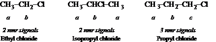
Chemical equivalence includes stereochemical equivalence as well.
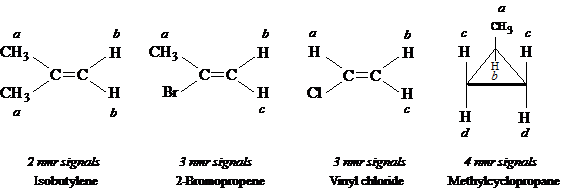
And 1,2-dichloropropane, whether optically active or inactive gives four NMR signals just the same. The environments of the two protons on C1 are not the same, and rotating them will not change their environment.
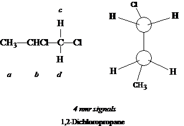
It is possible that even with the stereochemically different enviroments, the differences can not be resolved on a spectra, so fewer signals may be seen than predicted. Equivalence of protons can best be assessed by isomer number: by replacing either of two protons with Z without rotating any bonds or reflecting along planes, if the replacement yields the same product or their enantiomers, then the protons are chemically equivalent. If a diastereomer results, the protons are not equivalent.
13.8 NMR. Positions of signals. Chemical shift
The number of signals indicates how many classes there are. The positions of
the signal in a spectra indicate what class the proton belongs to: aromatic,
aliphatic, etc. The position in a spectra depends upon the shielding or
deshielding of the magnetic field. Electrons surrounding a proton circulate in
a way which generates a field opposing the applied field, and the proton is
shielded. A naked
proton requires very little applied strength, whereas
a shielded proton requires a higher applied strength to provide the effective
strength typical of absorption. Shielding therefore shifts the
absorption upfield, and deshielding shifts it downfield. These
shifts are called chemical shifts.
Chemical shifts are expressed in parts per million of the applied field strength. A reference point is used in measuring the shift, which is tetramethylsilane (TMS), (CH3)4Si. Silicon's low electronegativity makes the shielding of its electrons greater than most organic compounds, so most proton signals are downfield of the reference. For pnmr, the delta (δ) scale is used, with the TMS signal at 0.0 ppm and most chemical shifts in pnmr 0-10 ppm downfield (actually between -10 and 0 ppm). A large δ is more downfield than a small δ. Another scale is the t scale, in which TMS is considered to be 10.0 ppm and most values between 0 and 10 ppm (i.e., t = 10 — δ). To calculate the shift, use the ν = γH60/2π to obtain the frequency in Hz, then find:
δ = [ observed shift (Hz) × 106 ] / [ machine signal (Hz) ]
For a 60 MHz spectrometer, all that is necessary is to divide the observed shift by 60. The table below indicates typical chemical shifts for protons in a certain enviroment.
| Proton class | Chemical shift, ppm | |
|---|---|---|
| δ | ||
| Cyclopropane | 0.2 | |
| Primary | RCH3 | 0.9 |
| Secondary | R2CH2 | 1.3 |
| Tertiary | R3CH | 1.5 |
| Vinylic | C=C–H | 4.6–5.9 |
| Acetylenic | C≡C–H | 2–3 |
| Aromatic | Ar–H | 6–8.5 |
| Benzylic | Ar–C–H | 2.2–3 |
| Allylic | C=C–CH3 | 1.7 |
| Fluorides | HC–F | 4–4.5 |
| Chlorides | HC–Cl | 3–4 |
| Bromides | HC–Br | 2.5–4 |
| Iodides | HC–I | 2–4 |
| Alcohols | HC–OH | 3.4–4 |
| Ethers | HC–OR | 3.3–4 |
| Esters | HC–COOR | 2–2.2 |
| Acids | HC–COOH | 2–2.6 |
| Carbonyl compounds | HC–C=O | 2–2.7 |
| Aldehydic | RCHO | 9–10 |
| Hydroxylic | ROH | 1–5.5 |
| Phenolic | ArOH | 4–12 |
| Enolic | C=C–OH | 15–17 |
| Carboxylic | RCOOH | 10.5–12 |
| Amino | RNH2 | 1–5 |
Some major differences can be seen. Protons attached to alkanes are more shielded (upfield) than protons attached to the aromatic rings; this is because π electrons in the ring circulate in a way to reinforce the field. The electronegativity of halogens is expected to deshield protons, and it does: CH3-Cl (δ 3.0), R-CH2-Cl (δ 3.4), R2CH-Cl (δ 4.0). If the halogen is once removed, the deshielding effect is less intense: CH3-C-Cl (δ 1.5), R-CH2-C-Cl (Δ 1.7), R2CH-C-Cl (δ 1.6). Multiple halogens on the carbon cause a greater deshielding.
Note that in toluene, only two signals are observed. Although the ortho, meta, and para H on the ring are not strictly equivalent, the differences on a spectra are not resolvable.
13.9 NMR. Peak area and proton counting
Peak intensities give information of the number of hydrogens in each class. Peak areas of each peak class can be integrated, then expressed as relative proportions to the peak class with the smallest area. The 2 signals of toluene show a 3:5 ratio, while for p-xylene, it is 3:2 or 6:4 for its 2 signals. And for mesitylene's two signals, the ratio is 3:1, or 9:3. This shows the principle that the area under an nmr signal is directly proportional to the number of protons giving rise to the signal.
The area is calculated by an electronic integrator and drawn as a stepped curved on the spectra. The paper on the spectra itself has squares, and the height of the steps can be counted and expressed relative to one another. The proportions are converted first to the lowest whole number of the smallest peak (to 1.0), then multiplied by a factor to reflect the numbers of protons in the class with the lowest signal. Knowing the molecular formula is of great assistance in doing this process.
13.10 NMR. Splitting of signals. Spin-spin coupling
Proton equivalence does not mean that a single peak is necessarily observed on spectra. For 1,1,2-tribromoethane, 1,1-dibromoethane, and ethyl bromide, only 2 peak signals are expected. Instead, these compounds show 5, 6, and 7 peaks, resp.
These peaks appear as splits of the average signal, and are the result of spin-spin coupling. Splitting of the peak does not reflect the environment of the proton with respect to the electron (shown in the chemical shift), but rather the environment of the proton affected by nearby protons. The molecule -CH2CH3, is shown with primary and secondary group of protons: a primary proton is in a field slight increased or decreased by the spins of the nearby secondary protons, depending upon whether the secondary protons are aligned with or against the field. Since there are two secondary protons, each proton can have a spin with or against, and the combination for the two can be with-with, with-against, against-with, or against-against. The effect on a primary proton of the against-with and with- against is the same, soc a 1:2:1 effect on the applied field is seen, and this is reflected in the areas of the split peaks. This is true for all of the primary protons. Hence a triplet split about the average signal each would observe is seen. For the secondary protons, they are coupled to the primary protons by a 1:3:3:1 splitting. In general a set of n equivalent protons will split any nmr signal into n + 1 peaks.
With spin-spin coupling, the split peaks in the spectra often do not show a
symmetry unless the chemical shifts of the coupled protons are widely
separated. If close to each other, the inner
peaks of the split peaks
tend to be larger while the outer
ones are relatively smaller. This is
often a clue as which class of protons is coupling with each other; that is,
the proton classes involved in coupling can be matched.
Spin-spin coupling is expected to be observed only between nonequivalent
neighboring protons. Non-equivalence
is observed as differences in
chemical shifts. Neighboring
refers to protons on adjacent
carbons; sometimes protons more than one carbon away can couple, esp. if π
bonds intervene. Protons which are bonded to the same carbon but which
are nonetheless nonequivalent may show coupling.
Important examples. (1) 1,2-dichloroethane does not split its peaks because all of the protons are equivalent even though they are on different carbons, and spin-spin coupling requires nonequivalence. (2) 1,2-dibromo-2-methylpropane also shows no splitting for the reason that no proton is bonded to a carbon in which an adjacent carbon has any protons, i.e., there are no neighboring protons. (3) Isobutylene shows no splitting because both protons are equivalent. (4) On the other hand 2-bromopropene shows splitting, for the reason that both protons are nonequivalent and they are bonded to the same carbon.
In interesting phenomenon is the coupling of protons to other nuclei. 19F nuclei have spin and generate magnetic fields. Fluorine nuclei not only couple with each other, but also with protons. Absorption by fluorine nuclei do not appear in proton nmr spectra (their chemical shifts are off-scale), but the splitting by fluorine nuclei of proton signals is seen. 1,2-dichloro-1,1-difluoroethane gives produces a 1:2:1 triplet spaced at 11 Hz, even though both protons are equivalent and there are no other protons in the molecule.
13.11 NMR. Coupling constants
The spacing between split peaks can be observed to have a value in Hz, and the value in one set of split peaks (multiplet) matches the value in matched set. The value is called the coupling constant, J. It is important to remember that the J value remains constant no matter what the applied field strength (or radiofrequency). If the radiofrequency is altered, the applied field strength is changed too, but only the chemical shift is altered (prior to converting to ppm), not the spin-spin splitting.
The absolute value of coupling constants depends a great deal on the structure or conformational position held by the coupled protons. For example, in any pair of geometric isomers, J is always greater between trans protons than between cis protons. The size of J also varies consistently with the electronegativity, such that one can assign configuration without having both isomers. (J is sometimes given a + or — designation to permit theoretical correlations.)
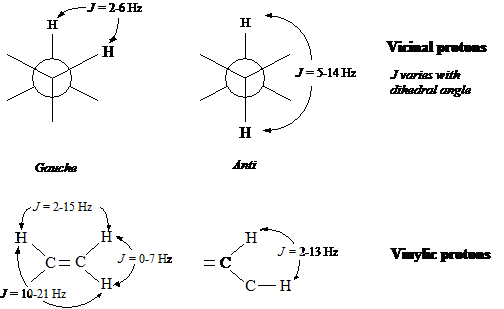
13.12 NMR. Complicated spectra. Deuterium labeling
Often, spectra are more complicated because the organic compound is quite
complex. Computer are used to sort out the obvious details and will take over
the analysis as analyzing software improves. Other methods can be used, such as
double resonance (or double irradiation), in which the spins of
two sets of protons can be decoupled, with simpler spectra obtained. The
molecule is actually irradiated with two beams: one is the usual whose
absorption is being measured, the other is a more intense beam whose frequency
varies from the first in such a way, that when the field strength is reached at
which a proton of interest absorbs, then the splitting protons are absorbing the
second frequency. The splitting protons are stirred up
and flip over
rapidly; this rapid flipping causes the signalling proton not to see them in
various spin alignments, but rather as a single average alignment. The
spins are therefore decoupled, the signal appears as a single, unsplit peak.
Deuterium labeling also simplifies spectra. Deuterons have a much smaller magnetic momet and absorb upfield and off-scale of the proton nmr spectrum. It couples with a proton very weakly, causing it to broaden the peak rather than split it; this effect is eliminated with decoupling anyway. Such labeling is in effect removing the proton but not altering the chemistry. One can now attribute an unknown signal to a particular proton by replacement of the proton with a deuteron and observing changes in signals.
13.13 Equivalence of protons: details
Considering equivalence more thoroughly, it is important to keep in mind a
number of factors: (a) rotation about single bonds, as in the
interconversion between conformations of substituted ethane or cyclohexanes; (b)
inversion of molecules, the turning inside-out of pyramidal molecules
like amines as an example; (c) proton exchange, for any functional group
with an exchangeable proton. With these factors considered, protons which are
distinguishable by these criteria may still be considered equivalent because the
spectrometer does not resolve the instantaneous environment, but the
average environment. However, if such an environmental control as
temperature makes the above factors significant, differences in spectra may be
observed. In this way the spectrometer is much like a slow
camera.
On the methyl carbon of ethyl chloride, if the most stable (staggered) conformation is obtained, two of the hydrogens assume a gauche position with the Cl atom while the third proton is anti. The hydrogen in the anti position is not equivalent to the others, yet the nmr spectrum show a triplet showing the H atoms are all equivalent. The reason again is the inability of the nmr spectrometer to gather the instantaneous picture. Each proton can be labeled, but all can rotate to the anti or gauche positions very quickly and appear to the spectrometer to be the same.
With diastereotopic protons, such as those on 1,2-dichloropropane in 13.7, the protons can never assume an equivalent environment, no matter how much bond rotation occurs. The diastereotopic hydrogens on C1 not only couple with the protons on C2, but they couple with each other.
With cyclohexane, only one signal occurs for all 12 hydrogens, despite the fact that there are 6 equatorial and 6 axial hydrogens. However, because of the bond rotation, the 6 holding equatorial positions can instantly hold axial positions, and so can the other 6 change position. If Br is substituted in one position, the matter is different. The axial and equatorial hydrogens are now different; replacing the hydrogens with Z would show cis-trans- diastereoisomerism. All geminal hydrogens (hydrogens bonded to the same carbon) would be in different average environments.
Therefore in assessing equivalence, conformational isomerism is unimportant for the purpose of predicting signals in nmr spectra. It is true however, that lowering the temperature sufficiently slows molecular rotational and translational that the spectrometer is now able to resolve conformational isomerism. In fact, for cyclohexane, there is a point where the single peak resolves into two (at -100°), and this permitted the calculation for the Eact of 11 kcal/mol for conformation change.
13.14 The electron spin resonance (esr) spectrum
Free radicals placed in magnetic fields respond similarly to nuclei when irradiated at a certain frequency. Electrons spin and have magnetic moments lined with or against a magnetic field. The absorption spectrum showing these changes is an electron spin resonance spectrum. The electron has a much larger magnetic moment, and for this reason, more energy is required to reverse the spin. If H0 = 3200 G, where nmr absorption is 14 MHz, esr absorption is about 9000 MHz, which is in the microwave range.
Spin-spin coupling is seen with electrons as with protons, and electrons couple with the nearby protons, usually the protons bonded to the carbon holding the free radical. This presents information about structure as well.
13.15 Spectroscopic analysis of hydrocarbons. IR
Looking more closely at the ir spectrum, bands due to carbon-carbon stretching appear in the 1500 and 1600 cm−1 mark for aromatic bonds, at 1650 cm−1 for double bonds (shifted to ~1600 cm−1 by conjugation), and at 2100 cm−1 for triple bonds. These bands are unreliable however, since in fairly symmetrically substituted alkenes and alkynes, they disappear because the vibrations do not cause a change in the dipole moment essential for infrared absorption. The more useful bands are because of C-H vibrations.
Absorption due to C-H stretching occurs at the high frequency end of the spectrum, and is characteristic of the hybridization state of C holding the H atom: 2800-3000 cm−1 for tetrahedral carbon; 3000-3100 cm−1 for trigonal carbon (alkenes and aromatics); and 3300 cm−1 for digonal carbon (alkynes).
Absorption due to various types of C-H bending occurs at the lower
frequencies. Methyl and methylene groups absorb at 1430-1470
cm−1; another band for the methyl group is at 1375
cm−1. An isopropyl
split is known: a doublet with
equally intense peaks at 1370 and 1385 cm−1, and confirmed by a
band at 1170 cm−1. The tert-butyl group gives an unsymmetrical
doublet: 1370 cm−1 (strong) and 1395
cm−1 (moderate).
Other C-H bending in alkenes and aromatics can be both in-plane and out-of- plane, of which the latter is useful. Out-of-plane bending in alkenes gives strong bands in the 800-1000 cm−1 region, and the exact location depends on the nature and number of the substituents, and the stereochemistry:
| RCH=CH2 | 910-920 cm−1 990-1000 | cis-RCH=CHR | 675-730 cm−1 (variable) |
| R2C=CH2 | 880-900 | trans-RCH=CHR | 965-975 |
Out-of-plane C-H bending in aromatics shows strong absorption in the 675-870 cm−1 region, the exact frequency depending upon the number and location of substituents:
| monosubstituted | 690-710 cm−1 730-770 | m-disubstituted | 690-710 cm−1 750-810 |
| o-disubstituted | 735-770 | p-disubstituted | 810-840 |
When first confronted with an IR spectrum, the first distinction which can be made is to determine whether the compound is aliphatic or aromatic. Aliphatic absorption is strongest at the high frequencies and missing below 900 cm−1, whereas aromatics have bands at the lower frequencies between 650-900 cm−1, attributable to C-H out-of-plane bending. Aromatics also show C-H stretching at 3000-3100 cm−1, and sometimes C-C stretching at 1500 and 1600 cm−1 and C-H in- plane bending in the 1000-1100 cm−1 region.
C-H stretching in alkenes is shown at 3000-3100 cm−1, and most characteristically, strong out-of-plane C-H bending between 800-1000 cm−1 (discussed above).
Terminal alkynes shows a strong and sharp C-H stretching band at 3300 cm−1 and carbon-carbon stretching at 2100 cm−1. Disubstituted alkynes do not show the 3300 cm−1 band (there is no C-H, of course), and if the two groups are similar, may not show the 2100 cm−1 band either.
Chap. 14 Alkyl halides. Nucleophilic aliphatic substitution. Elimination
14.1-.3 Structure. Nomenclature. Physical properties. Industrial source
Alkyl halides are different from aryl halides in that they can be quite reactive to many reactions in which aryl halides are most unreactive. Alkyl halides include a large number of compounds, whose physical properties are listed below.
| Chloride | Bromide | Iodide | ||||
|---|---|---|---|---|---|---|
| b.p. (°C) | density (@ 20°) | b.p. (°C) | density (@ 20°) | b.p. (°C) | density (@ 20°) | |
| Methyl | −24 | 5 | 43 | 2.279 | ||
| Ethyl | 12.5 | 38 | 1.440 | 72 | 1.933 | |
| n-Propyl | 47 | .890 | 71 | 1.335 | 102 | 1.747 |
| n-Butyl | 78.5 | .884 | 102 | 1.276 | 130 | 1.617 |
| n-Pentyl | 108 | .883 | 130 | 1.223 | 157 | 1.517 |
| n-Hexyl | 134 | .882 | 156 | 1.173 | 180 | 1.441 |
| n-Heptyl | 160 | .880 | 180 | 204 | 1.401 | |
| n-Octyl | 185 | .879 | 202 | 225.5 | ||
| Isopropyl | 36.5 | .859 | 60 | 1.310 | 89.5 | 1.705 |
| Isobutyl | 69 | .875 | 91 | 1.261 | 120 | 1.605 |
| sec-Butyl | 68 | .871 | 91 | 1.258 | 119 | 1.595 |
| tert-Butyl | 51 | .840 | 73 | 1.222 | 100d | |
| Cyclohexyl | 142.5 | 1.000 | 165 | |||
| Vinyl (Haloethene) | −14 | 16 | 56 | |||
| Allyl (3-Halopropene) | 45 | .938 | 71 | 1.398 | 103 | |
| Crotyl (1-Halo-2-butene) | 84 | 132 | ||||
| Methylvinylcarbinyl (3-Halo-1-butene) | 64 | |||||
| Propargyl (3-Halopropyne) | 65 | 90 | 1.520 | 115 | ||
| Benzyl | 179 | 1.102 | 201 | 9310 | ||
| α-Phenylethyl | 9215 | 8510 | ||||
| β-Phenylethyl | 9220 | 9211 | 12719 | |||
| Diphenylmethyl | 17319 | 18420 | ||||
| Triphenylmethyl | 310 | 23015 | ||||
| Dihalomethane | 40 | 1.336 | 99 | 2.49 | 180d | 3.325 |
| Trihalomethane | 61 | 1.489 | 151 | 2.89 | subl. | 4.008 |
| Tetrahalomethane | 77 | 1.595 | 189.5 | 3.42 | subl. | 4.32 |
| 1,1-Dihaloethane | 57 | 1.174 | 110 | 2.056 | 179 | 2.84 |
| 1,2-Dihaloethane | 84 | 1.257 | 132 | 2.180 | d | 2.13 |
| Trihaloethylene | 87 | 164 | 2.708 | |||
| Tetrahaloethylene | 121 | subl. | ||||
| Benzal halide | 205 | 14020 | ||||
| Benzotrihalide | 221 | 1.38 | ||||
Because of the greater MW, RX compounds have higher b.p. than the corresponding alkanes. For any given alkyl group, the b.p. also increases with the halogen MW, with fluorides lowest, and iodides the highest. In spite of their polarity, RX compounds are insoluble in water, probably because of an inability to hydrogen bond. Iodo, bromo, and polychloro compounds are denser than water.
Alkyl halides are prepared industrially by direct free radical halogenation of hydrocarbons at high temperatures; the chlorides are generally prepared because of the low cost of Cl2. Other halides are prepared as they would be in the laboratory: 1. acetylene + HCl, HgSO4 vinyl chloride 2. ethylene + Cl2 1,2-dichloroethane (500°) vinyl chloride
Fluorine compounds are not prepared by direct fluorination, but by replacement of Cl with inorganic fluorides: 1. methyl chloride + Hg2F2 CH3F (b.p. -79°) + Hg2Cl2 2. CCl4 + SbF3 CCl2F2 (Freon-12, b.p. -28°)
Important polyfluorides (fluorocarbons) are prepared with inorganic fluorides (Cobalt (III) fluoride is a convenient fluorinating agent): C7H16 (n-heptane) + 32 CoF3 C7F16 (perfluoroheptane, b.p. 84°) + 16 HF + 32 CoF2(2 CoF2 + F2 2 CoF3)
14.4 Preparation
Laboratory synthesis which is the usual:
- From alcohols
- Halogenation of certain hydrocarbons
- Addition of HX to alkenes
—C=C— + HX → -CH-CX-
- Addition
of X2 to
alkenes and alkynes
—C=C— + X2 → -CX-CX-
-CC- + 2 X2 → -CX2-CX2-
- Halide exchange
R—X + I− (in acetone) → R—I + X−
Alkyl halides are nearly always prepared from alcohols, because the latter are available commercially. The tendency for alcohols to undergo rearrangement during replacement of -OH by -X is minimized by use of phosphorous halides. Certain halides, like benzylic or allylic halides, are best made by free radical halogenation. Alkyl iodides are usually prepared by treating the corresponding bromide or chloride with NaI in acetone; NaBr and NaCl are not soluble in the solvent, precipitate, drive the reaction to completion, and can then be filtered.
14.5 Reactions
Halide ions in general are weak bases because of their electronegativity; there corresponding acids are very strong. Attached to carbon, halide can be easily displaced by other, stronger bases. These bases have an unshared pair of electrons, and are quite nucleophilic. Halide ion is then a good leaving group in alkyl halides (aryl and vinyl halides are forced to leave with great difficulty). Besides substitution, alkyl halides undergo elimination in basic conditions, so there is likely to be some competition between elimination and substitution.
- Nucleophilic substitution.
R:X + :Z → R:Z + :X− :OH− → R:OH + :X− Alcohol H2O → R:OH Alcohol :OR′− → R:OR′ Ether −:C≡CR′ → R:C≡CR′ Alkyne R′-M → R:R′ Alkane coupling :I− → R:I Alkyl iodide :CN− → R:CN Nitrile R′COO:− → R′COO:R Ester :NH3 → R:NH2 Primary amine :NH2R′ → R:NHR′ Secondary amine :NHR′R′′ → R:NR′R′′ Tertiary amine :P(C6H5)63 → [R:P(C6H5)3]+X− Phosphonium salt :SH− → R:SH Thiol (mercaptan) :SR′− → R:SR′ Thioether (sulfide) ArH + AlCl3 → ArR Alkylbenzene (F-C reaction) [CH(COOC2H5)2]− → R:CH(COOC2H5)2 Malonic ester synthesis [CH3COCHCOOC2H5]− → CH3COCHRCOEt Acetoacetic ester synthesis - Dehydrohalogenation: β-elimination.
-CH-CX- + (base) → C=C - Preparation of Grignard reagent.
RX + Mg (dry ether) → RMgX - Reduction.
RX + M + H+ → RH + M+ + X−
14.6 Alkyl sulfonates
Although RX compounds are used in variety of syntheses since X− is a weak base and good leaving group, alkyl esters of sulfonic acids, ArSO2OR, are also used since the sulfonates are very weak bases as much as their acids are strong acids. These compounds are frequently employed in both nucleophilic substitution and elimination reactions.
The most common is the ester of p-toluenesulfonic acid, where the p-toluenesulfonyl group is shorted to the name tosyl (Ts). p-Toluenesulfonyl chloride (p- CH3C6H4SO2—) is called tosyl chloride (TsCl) and esters of the acids are tosylates (TsOR). Other good sulfonate leaving groups are brosylates (Bs) (p-BrC6H4SO2—) and mesylates (CH3SO2—) (Ms).
14.7 Rate of reaction: effect of concentration. Kinetics
In looking at the rate of a reaction in chap. 2, it was found to depend on 3 factors: collision freq., probability factors, and energy factor, with the last factor of singular importance. The rates of different reactions were actually compared, with temperature and concentration kept constant for each reaction.
In studying the individual reaction however, manipulating experimental conditions allows the obtaining of useful information. Manipulating temperature allows a determinination of Eact. Changes in the concentrations of reactants also change the rate, because they change the collision frequency. The field of chemistry concerned with rate changes, especially due to concentration changes, is called kinetics.
14.8 Kinetics of nucleophilic aliphatic substitution. 1st- and 2nd-order reactions
The reaction of methyl bromide with sodium hydroxide is considered. It is done in aqueous ethanol, in which both reactants are soluble.
CH3Br + OH− → CH3OH + Br−
It would be expected that the rate depends upon the concentrations of both reactants, [CH3Br] and [OH−]. If one of the reactants' concentrations were doubled, it is expected that the rate would double; if either cut in half, the reaction should be halved. The rate is said to depend upon the concentrations of both:
rate = k[CH3Br][OH−]
The value k is called a rate constant and is used to express the real values of the reaction under given conditions of the temperature and solvent. For example, at 55° in 80% EtOH, the value of k is 0.0214 l mol−1 s−1.
Using another example, the reaction of tert-butyl bromide with OH− to make tert-butyl alcohol:
(CH3)3CBr + OH− → (CH3)3COH + Br−
If [RBr] is doubled, so is the rate; if halved, so is the rate. But if [OH−] is changed in any way, the rate is not affected. The rate is therefore independent of [OH−] and is expressed:
rate = k[RBr]
The k value in 80% EtOH at 55° is 0.010 s−1, meaning that, whatever the concentration of OH−, 0.010 mole tert-butyl bromide reacts in one second.
The first reaction is said to follow second-order kinetics, because rate depends on two substances. The rate of the second reaction depends only upon one substance, and is a first-order kinetic reaction.
Why these nucleophilic substitution reactions follow different kinetics is probably because nucleophilic substitution can follow two mechanisms. Thanks in large part to the work of Ingold and coworkers, these reactions have been theorized.
14.9-.11 The SN2 reaction: mechanism and kinetics. Stereochemistry. Reactivity
In the methyl bromide reaction, the simplest way to account for the kinetics is a collision between hydroxide ion and the methyl bromide molecule. OH− attacks at a face of the carbon atom which is opposite the position of the Br atom. Collisions with sufficient energy result in formation of a C-OH bond and at the same time break the C-Br bond. The transition state probably appears as a partially bonded OH and partially bonded Br atom (see diagram). The OH group has begun to lose its negative charge as it begins to share electrons with the carbon atom, while Br atom begins to acquire a partial negative charge, eventually to leave. Solvent is also participating in the reaction, which breaking of ion-dipole bonds with OH and forming them with Br atom.
In the transition state, all three H atoms lie in a plane (having lost tetrahedral arrangement), with the most stable bond angles in this state being 120°. The OH and Br atoms are like axles to a wheel, where the H atoms serve as spokes. The mechanism of this reaction is called SN2: substitution nucleophilic bimolecular. In general SN2-type reactions follow second-order kinetics.
2-Bromooctane and 2-octanol have chiral centers, and their resolved enantiomers have optical activity. The configurations have been determined (see diagram); the (—)-bromide and (—)-alcohol have the same configuration, that is, -OH occupies the same place and -Br, with all other groups being the same.
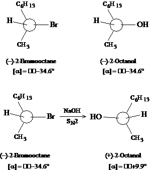
When the (—)-2-bromooctane reacts with NaOH under conditions favoring second-order kinetics, the product is (+)-2-octanol, with 100% optical purity. The reaction can be seen to involve inversion of configuration, since the OH group appears to have pushed Br out from the opposite direction. (It is insufficient to conclude that a reactant which is designated with the R configuration and which yields a product with the S configuration has undergone inversion of the absolute configuration; the product and reactant should be drawn and compared.) With all SN2 reactions, complete sterechemical inversion is the rule. As proof, the reaction above shows that an optically pure stereoisomer yields an optically pure isomer with a configuration different from the reference.
Reactivity of molecules to SN2 attack can be affected by the nonreactive groups attached to carbon, for the very reason that they are involved in the inversion of configuration reaction. As hydrogens are replaced by larger groups, as in methyl bromide to ethyl bromide to isopropyl bromide to tert-butyl bromide, crowding which can inhibit formation of the transition state might be expected. The differences that are observed in the rate of two SN2 reactions are chiefly due to steric factors, and not to electronic factors. In other words, rate differences emerge with the bulk of groups attached to the carbon and do not depend upon the withdrawing or releasing of electrons.
As an example, the rate of SN2 attack by I− ion is compared for a number of reactants: methyl, 150 > ethyl, 1 > Isopropyl, 0.01 > tert-butyl, 0.001. And for the aromatics, benzyl > α-phenylethyl > β-phenylisopropyl, as would be expected for least to most substituted.
The order of reactivity of RX to SN2 attack is therefore: CH3X > 1° > 2° > 3°
14.12-.15 The SN1 reaction: mechanism and kinetics. Rate-determining step. Stereochemistry. Reactivity. Rearrangement
As shown earlier, the reaction of tert-butyl bromide with NaOH follows first- order kinetics. If the rate appears to be independent of OH− ion, then that means the reaction upon which the rate depends does not involve OH−.
This is consistent with the following mechanism:
(1) (CH3)3CBr (CH3)3C+ + Br− slow
(2) (CH3)3C+ + OH− (CH3)3COH fast
Step one shows the dissociation of tert-butyl bromide into the tert-butyl carbonium ion, then rapid combination with the hydroxide ion. The single step which often determines the rate of an overall reaction or series of reactions is called the rate-determining step. It is no surprise that the rate- determining step involves breaking of the breaking of a bond, which requires energy, in this case supplied by the solvent dipoles interacting with the nascent Br ion (although each is weak, together they supply 110-150 kcal/mol!). The mechanism of this reaction is called SN1: substitution nucleophilic unimolecular.
Since the rate of the reaction depends on how fast ionization of the alkyl halide occurs, the rate itself depends only on the concentration of the RX compound.
The set of reactions
will have a rate equation for the formation of the product which will be:
The rate will depend directly upon A. The larger C is, the larger the rate as well. The larger B is, the greater the reversal of step 1, and the slower the product formation. Now if the term k2[C] is much larger than k 6-1[B], or the ratio of the two is much smaller than 1, the denominator term drops out such that rate depends only upon k1[A]. For k 2[C] to be much larger than k-1[B], this means that step (2) must be very fast compared to step (1), which is true if step (1) is to be the rate- determining step. If R is considered to be the carbonium intermediate, then the reaction mechanism is clear.
Considering that a primary bromide reacts by SN2 and a tertiary bromide by SN1, it should not be surprising that sec-butyl bromide reacts with a combination of the two mechanisms. Increases in [OH −] would be expected to speed up a second-order, but not the first-order reaction; at high [OH−], the second-order reaction is so much faster for sec-butyl bromides that the reaction is almost entirely by SN2 mechanism.
By lowering [OH−], the first-order reaction then becomes important. ThI guee stereochemistry of the reaction has been followed with (—)-2-bromooctane in which a low [OH−] concentration was used; the product was (+)-2-octanol, which suggests that configuration of the product obtained by a SN2-type mechanism. However, there was a loss of some optical activity: 100% optically pure bromide reactant yields about 66% optically pure alcohol, which means that the product contains some inverted compound and a racemic modification (partial racemization has occurred).
This clearly results from the formation of a carbonium ion intermediate, which can undergo back-side or front-side attack by the OH− nucleophile. However, a fully racemic modification would obtain, and it is true that a greater amount of the product shows inversion of configuration rather than retention. This is presumably due to the departing halide ion having not completely departed before nucleophilic attack commences, and this attack is probably hindered a bit on the face of the carbon where the departing halide is. Hence back-side attack with inversion of configuration occurs at a faster rate. In some cases, racemization is almost complete: a- phenylethyl chloride (C6H5CHClCH3) is converted to the alcohol under SN1 conditions with 87% racemization and 13% inversion. Under SN2 conditions, there is complete inversion without racemization.
Considering that SN1 reactions call for a carbonium ion forming, the greater the stability of the carbonium, the greater the opportunity for an SN1 reaction to occur. Hence, the order of reactivity of RX is:
allyl, benzyl > 3° > 2° > 1° > CH3X
For the reaction RBr + H2O (in the presence of HCOOH) ROH + HBr, assuming the reaction of methyl Br is 1.0; the relative rate for ethyl Br is 1.7; for isopropyl, 45; and for tert-butyl, 100 million. Adding formic acid to water helps promote the ionization. While SN2 reactions were seen to be affected by the bulk of the substituent groups, SN1 reactions are subject to electronic factors, depending upon the ability of the substituent groups to release or withdraw electrons.
Since SN1 reactions involve carbonium ion intermediates, rearrangements to form the most stable ion should be expected. Neopentyl bromide under SN1 conditions reacts invariably rearranges to a more stable tert-pentyl cation before reacting with ethanol; there is virtually no rearrangement in its reaction with ethoxide ion under SN2 conditions.
14.16 SN1 vs. SN2
Nucleophilic substitutions following first-order kinetics undergo racemization and rearrangement, with reactivity being greater for 3° and lower for primary and methyl halides. With nuc. sub. of the second-order, there is complete stereochemical inversion and the reactivity sequence is exactly opposite. In general, it is found that CH3X and 1° RX compounds undergo an SN2-type reaction, 3° RX undergo SN 1-type reaction, and 2° RX is mixed.
Some control as to which mechanism predominates can be exerted by a change of experimental conditions. These factors are:
- concentration of the nucleophilic reagent: high concentration of the nucleophile favors an SN2 reaction, low concentration calls on SN1.
- nature of the nucleophile: neopentyl bromide was shown to react ethoxide ion in the SN2 reaction, and ethanol in SN1. Ethoxide is more strongly nucleophilic (and pushes the halide out); ethanol is a rather weak nucleophile and waits to be invited in.
- solvent polarity: In the SN1 reaction, ionization of the RX is possible if the energy needed to reach the transition state is supplied by dipole-dipole interactions in the solvent and solvents supporting the polar transition state (a developing positive carbonium ion and a developing negative halide ion). An 80% ethanol solvent is much less polar than pure water, so use of water ought to promote SN1-type reactions. With SN2 reactions, there is no polar transition state (a diminishing negative charge on hydroxide is found on the other side by a developing negative charge on halide ion). Increasing solvent polarity slows down the SN2-type reactions.
14.17 Solvolysis
RX compounds dissolved in solvents often undergo reactions directly with the solvent. This is called solvolysis, where the solvent molecule is sufficiently nucleophilic to cause replace the halide. Because no strong nucleophile is present, the reaction is presumed to be an SN1-type, requiring formation of a carbonium ion intermediate. A problem with determining the kinetics of this reaction to see whether it is a matter of the solvent pushing out the halide (as in SN2) or stabilizing ionization (as in SN1), is that the solvent concentration does not change appreciably.
The solvent no doubt provides nucleophilic assistance to solvolysis, the strength of assistance depending upon the nucleophilic power of the solvent: water and alcohols are strongly nucleophilic solvents, acetic acid is weaker, HCOOH is weaker yet, and TFA is very weak. Reactivity of tertiary substrates to solvolysis depends little on nucleophilic power, and more on solvent polarity. With secondary substrates, more nucleophilic assistance is needed. With primary substrates, the strength of the solvent molecule acting as a nucleophile in a one-step reaction is clear.
14.18 Elimination: E2 and E1
In the dehydrohalogenation reaction to prepare alkenes, it was observed that basic attack on a proton on a carbon adjacent to a carbon holding a halide was met with the simultaneous separation of the halide ion, assisted by the solvent molecules interacting with the halide. This is an E2 reaction: bimolecular elimination.
In a two-step reaction, the halide in RX compounds, especially those capable of forming very stable carbonium ions, can be induced to leave the alkyl function, leaving a carbonium ion behind. The second step has some nucleophile removing a proton with formation of the C=C bond. This is an E1 reaction: unimolecular elimination.
The order of reactivity to either E1 or E2 elimination is the same: 3° > 2° > 1°. The sequence reflects in the E2 reaction the relative stabilities of the alkene products which are formed, while in the E1 reaction, it reflects the relative stabilities of the carbonium ion formed in the first step.
The E2 reaction follows second-order kinetics, while E1 is first-order and independent of the concentration of nucleophile.
14.19-.20 Evidence for E1 and E2 mechanism
The evidence for the E1 mechanism comes from the fact that:
- elimination follows first-order kinetics
- the effect of structure on reactivity is similar to that of SN1 reactions
- reactions are accompanied by rearrangement, where structure permits
The evidence for the E2 mechanism comes from the fact that:
- elimination follows second-order kinetics
- there is no observed rearrangments
- there is a large deuterium isotope effect
- there is not hydrogen-deuterium exchange
- there is a large element effect shown
Under E2 conditions, isopropyl bromide treated with NaOEt undergoes dehydrobromination 7 times faster than (CD3)2CHBr: the existence of an isotope effect reveals that the rate-determining step involves a transition state in which a C-H bond is broken.
A plausible mechanism which discounts E2-type elimination is one that involves a carbanion intermediate. In this reaction, the base abstracts a proton, leaving the electrons with carbon (and a negative charge) while the halide remains attached to the adjacent carbon. To truly distinguish among the two possibilities, C6H5CH2CH2Br (β-phenylethyl bromide) was dehydrohalogenated in C2H5OD with NaOEt. If carbanions are intermediates, then when −OEt abstracts a proton, the reaction can proceed to form the elimination product, but the carbanion base can abstract a deuteron to reform the starting material. At the end of the reaction, it should be possible to find some of the starting material or elimination product labeled with D if there is a carbanion intermediate. None is found, which means that, if carbanions are intermediates, the rate of halide leaving is greater than for D exchanging for H. Proving that the leaving by the halide is not possible using isotope effect studies as for D and H, whose masses differ two-fold, since the differences in masses of isotopic halides is minimal.
J. Bunnett has shown evidence against carbanion mechanism by the element effect. In SN and SN2 displacements, reactivity follows the sequence: R—I > R—Br > R—Cl > R—F. The ease of breaking the C-X bond depends upon the strength: R-Br react 25-50 times as fast as R-Cl. With elimination, reactivity similarly follows the same sequence, so the rate of breaking the C-X bond does affect the overall reaction. Were a carbanion intermediate formed, reversion to starting material would occur many times before loss of the X−; the isotopic exchange experiments show this does not happen.
14.21 Orientation of elimination The variable E2 transition state
In the dehydrohalogenation of sec-butyl bromide (chap. 5), a mixture of isomers was obtained: 81% 2-butene and 19% 1-butene. It was explained that this orientation results from the alkene character of the transition state, with the transition state leading to the more stable alkene being reached more easily. Predominant formation of the more stable isomer is called Saytzeff orientation, after A. Saytzeff who formulated the rule in 1875.
Orientation is not always Saytzeff. If the halides in the elimination of 2- hexyl halide by NaOCH3 are I, Br, and Cl, orientation is Saytzeff (2- hexene). But with fluoride, the less substituted alkene obtains (1-hexene); this is called the Hofmann orientation. The table shows the distribution between 1- and 2-hexene depending upon the starting 2-hexyl halide.
| CH3CH2CH2CH2CHXCH3 + (E2: CH3ONa/CH3OH) | 2-hexene | 1-hexene |
| 81% | 19% | |
| Br | 72% | 28% |
| Cl | 67% | 33% |
| F | 30% | 70% |
The observations are better understood in terms of what Bunnett called the variable transition state theory of E2 elimination. The transition state can be represented as a spectrum of three different reactions: (1) one TS has a carbonium-like state, in which the C-X bond is already well on its way to being broken—forming a carbonium ion—before base B begins to abstract the proton; (2) another TS is a carbanion-like TS, in which the base has abstracted the proton a great deal to leave a carbanion intermediate as the C-X bond resists being broken until the final moment; (3) the last TS is described as being between the two extremes, with the C-X bond broken to the same degree that the base is removing the proton. This last TS has much alkene character, and the orientation is considered to by Saytzeff.
For the carbonanion-like TS, it is stabilized by electron-withdrawing substituents which attempt to disperse the negative charge, and destabilized by electron-releasing groups which tend to concentrate negative charge. For the carbonium-like TS, C-X bond breaking has proceeded considerably before the C-H bond is broken, giving carbonium-ion like character. The orientation is expected to less Saytzeff.
With iodides, there is considerable breaking of both bonds in the TS, with much alkene character, so orientation is Saytzeff. From I to F, the C-X bond becomes stronger, not breaking as fast as the base abstracting the proton. The base attacks the primary hydrogen in this case, because is has fewer electron- releasing groups on the carbon which tend to destabilize this TS. Hence the Hofmann orientation.
Under E2 conditions with bases like KOH and CH3ONa, most RX compounds eliminate Saytzeff. R4N+ compounds give Hofmann elimination usually. ROSO3− compounds fall in between. Choice of solvent, base, and the reactant stereochemistry affect orientiaton a great deal: the %age of 1-hexene jumps from 33% to 91% when 2- hexyl chloride is treated with t-BuOK/t-BuOH rather than methoxide/methyl alcohol, probably because of steric considerations.
14.22 Stereochemistry of elimination
1-Bromo-1,2-diphenylpropane [C6H5CHBrCH(CH3)C6H5] has two chiral centers, and can exist as two pairs of enantiomers. When the (1R,2R) and (1S,2S) enantiomers are dehydrohalogenated, the product is exclusively cis-1,2-diphenyl-1-propene. When its enantiomeric pair of diastereomers, (1S,2R) and (1R,2S) are treated, only the trans product is obtained. If the first set of diastereomers are drawn in a staggered conformation in which the Br atom is anti to proton to be abstracted, the E2 reaction is seen to produce the cis alkene. If the other diastereomeric pair is drawn with the same staggered conformation, but proton anti to Br, the E2 is easily seen to be trans.
This spatial relationship between the halide and the abstracted proton is termed anti elimination. If cyclic compounds are considered instead of the open-chain, the 1,2-substituents can assume the anti-conformation only by occupying axial positions, which is possible only if they are trans to each other. Neomenthyl chloride (in diagram) undergoes E2 elimination to form mixture of mostly 3-menthene, less of the 2-menthene, expected since the 3- menthene is the more highly substituted alkene. Its diastereomer menthyl chloride is converted on the other hand exclusively to the 2-menthene.
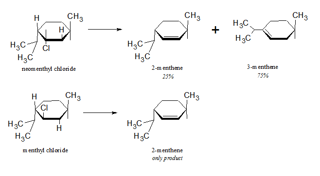
Although the obvious difference between neomenthyl and menthyl chloride is that the halogen is on the opposite side, with neomenthyl chloride, there are two hydrogen atoms which are trans to it on the adjacent carbons, while with menthyl chloride, there is only on hydrogen trans to it on the carbon which eventually is involved in the double bond. So only the trans-1, 2-substituents are able to form the anti-conformation apparently required in E2 eliminations.
Recent developments now show E2 eliminations can occur by syn-elimination: in the transition state the hydrogen and leaving group are in the eclipsed (or gauche) conformation, but this is uncommon for RX compounds and seen more with quaternary ammonium salts and alkyl sulfonates. On reason that the H atom and the leaving group should be periplanar (meaning syn or anti, with the latter most propable), is the the p orbitals of the carbons to be involved in π bonding should be in a position to overlap, and such conformations assist the development of alkene character.
14.23 Elimination vs. substitution
In elimination reactions, the base attacks the proton, the leaving group falls out and the alkene is formed. In substitution reactions, the base attacks the carbon (from the back side), and the leaving group is pushed out. It was mentioned that acetylides are very strong bases (stronger than OH− ) such that if synthesis of higher alkynes was desired using RX compounds, which is in effect a substitution, then the RX compound should be 1°. Moreover, to promote the SN2 reaction, a low-polarity solvent (NH3 or ether) was used.
The same is true for all RX compounds. If RX is 3°, expect formation of the E2 elimination product. If RX is 1°, expect formation of the SN2 substitution product (note inversion of configuration for chiral centers).
When attempting to synthesize a 3° alcohol from a 3° RX compound, it is important to choose conditions which favor the SN1-type reaction: reagent with low nucleophilic power, solvents of high polarity. Simply boiling with water is the usual course, which serves as solvent and nucleophile. Still the elimination product comes out in significant yield. Alcoholic KOH for use in dehydrohalogenation was chosen for a reason in forming alkenes: the solvent is of low polarity, the nucleophile strong, and these are ideal elimination conditions.
14.24 Analysis of alkyl halides
fsSimilar to alkanes in that they are (1) insoluble in cold concentrated H 2SO4, (2) inert to Br2 in CCl4; (3) do not react to KMnO4 or CrO3, RX can be distinguished from alkanes in the qualitative analysis reaction which shows the presence of halogen (ch. 2).
Halogen presence can often be assessed without resort to sodium fusion or Schöniger oxidation: warm the unknown for a few min. with alcoholic AgNO3, a precipitate should form which is insoluble in dilute HNO3. The reactivity toward alcoholic AgNO3 follows the sequence RI > RBr > RCl, or for a given halogen decreases in the order 3° > 2° > 1°, which shows that the reaction depends upon how easily a carbonium ion is formed and which C-X bond is weaker. Allyl and benzyl halides react quickly! The AgNO3 reaction has been studied very well, with Ag+ believe to assist the development of the SN1-type reaction by pulling halide away. (Vinyl and aryl halides are unreactive). Spectroscopic analysis is also quite useful as mentioned elsewhere.
Chap. 15 Alcohols. Preparation and physical properties
15.1-.5 Structure. Classification. Nomenclature. Physical properties. Industrial source
Alcohols have the general formula ROH. R can be any alkyl group, open-chain or cyclic, with double bond, halogen, aromatic ring. Alcohols attached directly to the aromatic ring are called phenols. ROH compounds are classified as primary, secondary, or tertiary, depending on the number of other carbon atoms attached to it, as is usual.
Nomenclature of alcohols has 3 different systems. The system of common names uses the alkyl group naming followed by the word alcohol, as in ethyl alcohol. The carbinol system is convenient in that it considers all alcohols to be derived from methyl alcohol. Triphenylcarbinol is methanol but the 3 H atoms are replaced by phenyl groups; sec-butylcarbinol is the IUPAC 2-methyl-1-butanol. And the IUPAC system is the third and most versatile. Diols are often called as glycols.
Unlike the previous compounds studied, which have low m.p. and b.p. values because of weak intermolecular forces holding them, and which are quite soluble in nonpolar solvents but insoluble in solvents like water, alcohols have a very polar -OH group, and hydrogen bonding becomes possible.
| Name | Formula | >m.p. (°C) | b.p. (°C) | density (@ 20°) | Solub., g/100 g H2O |
|---|---|---|---|---|---|
| Methyl | CH3OH | -97 | 64.5 | 0.793 | |
| Ethyl | CH3CH2OH | -115 | 78.3 | .789 | |
| n-Propyl | CH3CH2CH2OH | -126 | 97 | .804 | |
| n-Butyl | CH3(CH2)2CH2OH | -90 | 118 | .810 | 7.9 |
| n-Pentyl | CH3(CH2)3CH2OH | -78.5 | 138 | .817 | 2.3 |
| n-Hexyl | CH3(CH2)4CH2OH | -52 | 156.5 | .819 | 0.6 |
| n-Heptyl | CH3(CH2)5CH2OH | -34 | 176 | .822 | 0.2 |
| n-Octyl | CH3(CH2)6CH2OH | -15 | 195 | .825 | 0.05 |
| n-Decyl | CH3(CH2)8CH2OH | 6 | 228 | .829 | |
| n-Dodecyl | CH3(CH2)10CH2OH | 24 | |||
| n-Tetradecyl | CH3(CH2)12CH2OH | 38 | |||
| n-Hexadecyl | CH3(CH2)14CH2OH | 49 | |||
| n-Octadecyl | CH3(CH2)16CH2OH | 58. | |||
| Isopropyl | CH3CHOHCH3 | -86 | 82.5 | .789 | |
| Isobutyl | (CH3)2CHCH2OH | -108 | 108 | .802 | 10.0 |
| sec-Butyl | CH3CH2CHOHCH3 | -114 | 99.5 | .806 | 12.5 |
| tert-Butyl | (CH3)3COH | 25.5 | 83 | .789 | |
| Isopentyl | (CH3)2CHCH2CH2OH | -117 | 132 | .813 | 2 |
| active-Amyl | (—)-CH3CH2CH(CH3)CH2OH | 128 | .816 | 3.6 | |
| tert-Pentyl | CH3CH2C(OH)(CH3)2 | -12 | 102 | .809 | 12.5 |
| Cyclopentanol | cyclo-C5H9OH | 140 | .949 | ||
| Cyclohexanol | cyclo-C6H11OH | 24 | 161.5 | .962 | |
| Allyl | CH2=CHCH2OH | -129 | 97 | .855 | |
| Crotyl | CH3CH=CHCH2OH | 118 | .853 | 16.6 | |
| Methylvinylcarbinol | CH2=CHCHOHCH3 | 97 | |||
| Benzyl | C6H5CH2OH | -15 | 205 | 1.046 | 4 |
| α-Phenylethyl | C6H5CHOHCH3 | 205 | 1.013 | ||
| β-Phenylethyl | C6H5CH2CH2OH | -27 | 221 | 1.02 | 1.6 |
| Diphenylcarbinol (Benzhydrol) | (C6H5)2CHOH | 69 | 298 | 0.05 | |
| Triphenylcarbinol | (C6H5)3COH | 162.5 | |||
| Cinnamyl | C6H5CH=CHCH2OH | 33 | 257.5 | ||
| Ethylene glycol | CH2OHCH2OH | -16 | 197 | 1.113 | |
| Propylene glycol | CH3CHOHCH2OH | 187 | 1.040 | ||
| 1,3-Propanediol | HOCH2CH2CH2OH | 215 | 1.060 | ||
| Glycerol | HOCH2CHOHCH2OH | 18 | 290 | 1.261 | |
| Pentaerythritol | C(CH2OH)4 | 260 | 6 |
Comparing boiling points, hydrocarbons depend mostly upon molecular weight and shape, expected of molecules which are held together in the liquid phase by van der Waals forces. Alcohols show similar patterns in that b.p. increases with carbon number and decreases with branching. What makes ROH compounds is that they boil much higher than their analogues or than substances of the same MW, even higher than other cmpds. with considerable polarity (see table below). The reason is that they are associated liquids, meaning that hydrogen bonding plays an important part. With the ether and aldehyde, all H atoms are bonded to carbon, and not to a more electronegative element.
| Name | Structure | M.W. | Dipole Moment (D) | B. P. (°C) |
|---|---|---|---|---|
| n-Pentane | CH3CH2CH2CH2CH3 | 72 | 0 | 36 |
| Ethyl ether | CH3CH2—O—CH2CH3 | 74 | 1.18 | 35 |
| n-Propyl chloride | CH3CH2CH2Cl | 79 | 2.10 | 47 |
| n -Butyraldehyde | CH3CH2CH2CHO | 72 | 2.72 | 76 |
| n-Butyl alcohol | CH3CH2CH2CH2OH | 74 | 1.63 | 118 |
IR spectroscopy also has demonstrated the nature of hydrogen bonding. Dilute solutions of ethanol in CCl4 or in the gas phase show little association, and the O—H stretch is 3640 cm−1. As the concentration is increased however, a broader band at 3350 cm−1 is now observed: hydrogen bonding to a second oxygen apparently weakens the O—H bond, lowers the energy and hence the vibration frequency.
Small alcohols do not much differ from water in the miscibility since hydrogen bonding is the significant chemistry here. But as the aliphatic chain gets longer on the normal primary alcohols, the miscibility drops, the borderline being at 4 or 5 carbons. Polyhydroxy alcohols are very soluble in the water, owing to the many OH groups.
If an organic chemist were allowed to choose ten aliphatic compounds with which to be stranded on a desert island, he would almost certainly pick alcohols. It is because from alcohols, nearly every kind of other compound can be made: alkenes, RX, ROR, RCHO, RCOR, RCOOH, etc. Alcohols are not only reactants but the solvents used to carry reactions or recrystallize products. Industrially, alcohols can be obtained by the hydration of alkenes obtained from petroleum cracking, and by fermentation of carbohydrates. For hydration of alkenes, either water addition itself or catalyzed by H2SO4 allows the synthesis of alcohol according to Markovnikov's rule (can be a detriment if trying to synthesize n- alkyl alcohols). From fermentation of sugars by yeast, ethanol is still prepared; the sugar source can be molasses from cane sugar or grain starch. If grain starch is used, fusel oil can be obtained as well, which is a mixture of other primary alcohols: mostly isopentyl alcohol, rest is n- propanol, isobutyl alcohol, and 2-methyl-1-butanol.
15.6 Ethyl alcohol
Ethanol is an important chemical for the entire world. Used as a solvent for lacquers, varnishes, perfumes, flavorings; a medium of chemical reactions; used in recrystallizations. Ethyl alcohol is medically classified as a hypnotic (sleep producer), and is less toxic than other alcohols. Ethanol typically comes as the 95% product because 95:5 ethanol:water is a binary azeotrope boiling at 78.15° (ethanol b.p. = 78.3°), and further concentration of ethanol by distillation is not therefore possible. Pure ethanol (absolute alcohol) is obtained by using another azeotrope, this one a ternary azeotrope boiling at 64.9°: 7.5:18.5:74 water:ethanol:benzene. For removal of every possible trace of water, the alcohol can be treated with Mg metal to produce insoluble Mg(OH)2, from which the alcohol can be distilled.
15.7 Preparation of ROH
1. Oxymercuration-demercuration
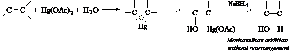
2. Hydroboration-oxidation
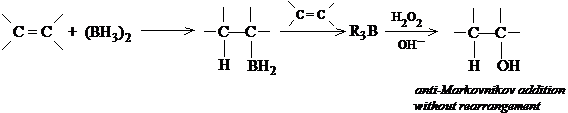
3. Grignard synthesis
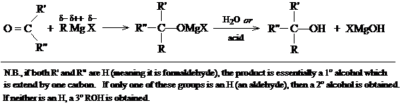
4. Hydrolysis of alkyl halides
RX + OH− (or H2O) ROH + X− (or HX)
usually RX is made from ROH, but a good example is making benzyl alcohol from benzyl chloride
5. Aldol condensation (ch 21)
6. Reduction of carbonyl cmpds (ch. 19)
7. Reduction of acids and esters (ch. 18, 20)
8. Hydroxylation of alkenes (ch. 6)
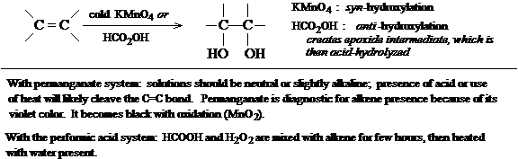
In the above syntheses, one functional group can be converted to the alcohol, retaining the carbon skeleton, or in the case of the Grignard synthesis, the carbon skeleton can be expanded at the same time the alcohol is constructed. While it is alkyl halides that are usually prepared from alcohols rather than the reverse, an useful synthesis of benzyl alcohol from toluene has toluene being chlorinated and then treated with aqueous NaOH to make the alcohol.
15.8 Oxymercuration-demercuration
Mercuric acetate is known to react with alkenes in the presence of water to produce hydroxymercurials. When reduced with NaBH4 or other suitable reductant, the product is an alcohol. Although the reaction amounts to hydration, the reaction is convenient, fast, takes place under mild conditions, and yields can be over 90%.
Alkene is added to an aqueous Hg(OAc)2 solution diluted with tetrahydrofuran (THF), and the reaction is complete in minutes. The organomercurial is then reduced in situ by NaBH4 (Hg can be recovered as a ball of elemental mercury). The reaction is very regiospecific, with single products showing Markovnikov addition.
The first oxymercuration step is believed to cause formation of a cyclic mercurinium ion, similar to the cyclic halonium ions formed in halogen addition. Olah (1971) has spectroscopic evidence that cyclic mercurinium ions are formed. The absence of an rearrangment and the high degree of stereospecificity (anti) argues against the open carbonium intermediate. The nucleophilic solvent (water) then opens up the cyclic intermediate in a back-side attack, resulting in the anti-addition, and similar to an SN2 reaction. A difference here is that orientation is to the more highly substituted carbon, suggesting that the cyclic mercurinium transition state has some SN1 character.
The demercuration step is not well understood, although free radicals are thought involved. Demercuration is not stereospecific, and can be accompanied by rearrangement in some cases.
The use of mercuration can involve nucleophilic solvents other than water as well, which yield products other than alcohols.
15.9-.11 Hydroboration-oxidation. Orientation and stereochemistry. Mechanism
Alkenes react with diborane (BH3)2 to yield alkylboranes, R3B, which can be oxidized to alcohols. For example, ethylene reacts exhaustively with diborane to produce triethylborane, which is treated in situ with alkaline hydrogen peroxide to produce 3 moles ethanol and boric acid, with high yields.
Diborane is a dimer of the hypothetical borane (BH3). Borane does
exist as a monomer dissolved in tetrahydrofuran, its oxygen providing a lone
pair for the boron atom. THF is one of the solvents used, for this reason, to
promote the reaction, but ether and diglyme
(diethylene
glycol methyl ether, CH3OCH2CH2
OCH2CH2OCH 3) are also used. Diborane is
commercially available in THF solution.
The addition is regiospecific, with the preferred product the opposite of the oxymercuration-demercuration reaction or the direct acid-catalyzed hydration. Propylene form n-propanol, 1-butene forms n-butanol, isobutylene forms isobutyl alcohol, 2-methyl-2-butene forms 3-methyl-2-butanol, and 3,3-dimethyl-1-butene forms 3,3-dimethyl-1-butanol. Unlike with oxymercuration-demercuration, rearrangements do not occur with hydroboration-oxidation. This is presumably because carbonium ions are not intermediates. Addition is also syn, as illustrated in the reaction of 1,2- dimethylcyclopentene:
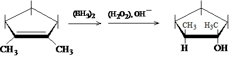
(The hydroboration-oxidation reaction discovered by HC Brown, originally an inorganic chemist, was a result of work done to find volatile uranium compounds, in the course of which LiAlH4 and NaBH4 were first made and their reducing properties studied.)
The mechanism leading to anti-Markovnikov addition has been elucidated. With electrophilic addition of an acid HZ, the proton is the electrophile adding in a way to produce the more stable carbonium ion intermediate. But with borane, the lack of a complete octet in the boron atom makes it the center of acidity rather than H.
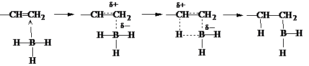
In forming the transition state however, there is no carbonium ion intermediate. As the carbon becomes electron-deficient
[lots of missing text here]
H crystals exist as Li+ and H−. And H+ does not exist by itself, but is only theoretical.
15.12 Grignard synthesis of alcohols
Grignard reagents have the forumula RMgX, prepared by mixing Mg with RX in anhydrous ether. The R can be any 1°, 2°, 3° alkyl, allylic, aralkyl (benzyl), or aryl (phenyl or substituted phenyl). The X can be Cl, Br, or I; arylmagnesium chlorides must be made in cyclic ether solvents (THF) instead of ethyl ether. Certain reagents with carbonyl (aldehydes, ketones) group functions when added to RMgX will react to produce alcohols; C=O bonds are unsaturated like C=C bonds.
Both the carbon-oxygen bond in the carbonyl and the Grignard reagent have unsymmetrical charge distributions, that is, they are polar. With the carbonyl carbon, being the less electronegative, it has a slight positive charge and should attract nucleophiles (bases), while the oxygen should attract electrophiles (acids). The C-Mg bond is the site of polarity in the Grignard: the more electronegative carbon is slightly negative (basic) and attack the carbonyl carbon, bonding to it. The MgX group subsequently attaches to the carbonyl oxygen, with some degree of polarity as well. By addition of a stronger acid like water, the alcohol is subsequently formed. A gelatinous Mg(OH)X is formed, and dilute mineral acid (HCl or H2SO4) is added to solubilize Mg(OH)X, which it does by forming Mg2+, X−, and H2O.
15.13 Products of the Grignard synthesis
When RMgX is added to formaldehyde, the product is a 1° alcohol in which the R group has been extended by 1 carbon. With higher aldehydes (R′CHO), the product is a 2° alcohol, with the R groups bound around the aldehyde carbon (R—CHOH—R′). With ketones, the product is clearly a 3° alcohol, with all R groups centered around the alcoholic carbon (RR′R′′COH).
RMgX add also to the cyclic ether ethylene oxide, which in the end makes a 1° alcohol with two carbons effectively added. The ring strain in the σ bonds of the cyclic ether accounts for the energy of the reaction.
15.14-.15 Planning and limitations of the Grignard synthesis
In planning a Grignard synthesis, it is necessary to examine the structure of the alcohol product: of the groups attached to the carbon bearing the —OH group, one must come from RMgX, the other two from the carbonyl. For example, in examining 2-phenyl-2-hexanol, it could be made either from n- butylmagnesium bromide + acetophenone or from methyl n-butyl ketone + phenylmagnesium bromide. It is important to use readily available or synthesizable reagents; in the synthesis of the hexanol, a better choice is the first route using acetophenone (ch. 19 provides notes on why).
Grignard reagents are strong bases and will react very quickly with (protic) acids: a hydrogen attached to any electronegative element or group, such as N, O, S, or triply-bonded C. Grignards also react with O2, CO 2, and with every organic compound containing a C-O of C-N multiple bond. Reaction conditions with the RX used in initial synthesis, with the carbonyl subsequently, and in the ether solvent must be scrupulously dried and freed from any alcohols (which were used to make the ether solvent), since RMgX compounds do not form in the presence of water. The reaction must be protected from water vapor, O2, and CO2 in the air; the better setup uses CaCl2 at the top to prevent the water coming in, and the gases can be swept out by filling the chamber with dry N2.
Grignards can not be prepared from RX in which the R group contains a function which reacts itself with the Grignard, e.g., HOCH2CH2Br is not workable, since as fast as RMgX is formed, it reacts to form ethanol. With ArMgX compounds, this situation is quite important since they too contain other (acidic) groups on the ring which can react (-COOH, -OH, -NH2, -SO3H). Similarly multiply- bonded C-O and C-N groups (and -NO 2) are reactive. In fact, the very few functions allowed in RX in forming the Grignard are: -R, -Ar, -OR, and -Cl (of an aryl chloride).
The carbonyl group must also be free of other reactive groups (the ones listed above) if reaction of RMgX is to be limited to the site of the carbonyl function, otherwise the acidic functions will decompose the Grignard to RH.
15.16 Steroids
Cholesterol belongs to a specific class of alcohols called sterols. Sterols belong in turn to the broad class called steroids. Steroids have the multi-ring aliphatic structures shown in the diagram. There is a particular stereochemistry at carbons 10 and 13, which have methyl groups attached, and at other carbons which have H atoms or other groups attached. Steroids include sex and adrenal cortical hormones.
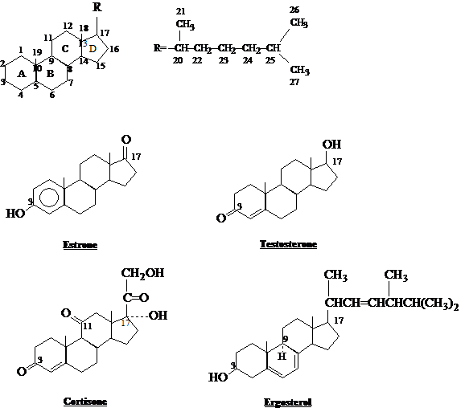
Chap. 16 Alcohols. Reactions
16.1 Chemistry of -OH group
Reactions of alcohols involve the breaking of either two bonds: the C—OH bond, or the O—H bond. Either reaction can produce substitution or elimination. The structure R can greatly affect reactivity.
16.2 Reactions
C−OH BOND CLEAVAGE
1. Reaction with hydrogen halides (product: alkyl halide)
R—OH + HX RX + H2O (R may rearrange)
HX reactivity: HI > HBr > HCl
ROH reactivity: allyl, benzyl > 3° > 2° > 1°
2. Reaction with phosphorus trihalides (product: alkyl halide)
R—OH + PX3 RX + H3PO3 (PX3 = PBr3, PI3)
3. Dehydration (product: alkene) (discussed in Chapter 5)
-CH-COH- + acid -C=C- + H2O (Rearrangement may occur)
ROH reactivity: 3° > 2° > 1°.
O−H BOND CLEAVAGE
4. Reaction as an acid. Reaction with active metals (product: metal alkoxide) RO—H + M RO−M+ + ½ H2 M = Na, K, Mg, Al, etc. ROH reactivity: CH3OH > 1° > 2° > 3°
5. Ester formation (product: carboxylic acid & sulfonate esters) RCOOH or ROSO3H + R′OH RCOOR′ or ROSO2R′ + H2O (Ch. 16 & 18)
6. Oxidation of alcohol (product: various, including aldehydes, ketones, carboxylic acids)
Primary: R-CH2OH + K2Cr2O7 or KMnO4 aldehydes RCOOH
Secondary: RR′CHOH + K2Cr2O7 or CrO3 ketones
Tertiary: no reaction to neut. KMnO4
16.3 Dehydration
Dehydration was covered in Ch. 5. A review of the mechanism shows that the acid-catalyzed reaction involves (i) formation of the protonated alcohol, ROH2+, (ii) slow dissociation of the C-O bond to form the carbonium and water, (iii) rapid explusion of a proton (with the help of solvent) to form the alkene.
This is a classic E1 elimination, which is in contrast to the E2-type reaction necessary in RX compounds. Protonation by the acid of the OH group is necessary to make a better leaving group, H2O.
The reactivity of a particular alcohol depends upon how stable the carbonium intermediate is. Hence, 3° alcohols should be much more reactive than 1° alcohols. Benzyl alcohols are quite reactive because their carbonium ions can be stabilized by resonance with the ring. And the orientation for formation of the double bond strictly depends upon formation of the most stable alkene generally: sec-butyl alcohol forms as chief product 2-butene, and with 1-phenyl-2-propanol, only 1-phenylpropene is formed since it is conjugated with the ring. Rearrangments are also likely since there is a carbonium ion intermediate.
16.4-.5 Reaction with HX. Facts. Mechanism
ROH can be changed to RX by passing dry HX gas into the alcohol, or by heating the alcohol with concentrated aqueous acid. (HBr can be generated with H 2SO4 and NaBr for reaction with the alcohol.) HCl is the least reactive HX, requiring ZnCl2 for reaction with 1° and 2° alcohols. tert-Butyl alcohol is very reactive however, requiring only conc. HCl at room temp. Example reactions: 1. cyclohexanol + dry HBr cyclohexyl bromide; 2. n-butyl alcohol + NaBr/H2SO4/reflux n-butyl bromide; 3. n-propyl alcohol + HCl/ZnCl2/heat n-propyl chloride; 4. tert-butyl alcohol + conc. HCl tert-butyl chloride.
Some important facts: (a) the reaction is acid-catalyzed; even though HX are strong acids, presence of H2SO4 helps; (b) alkyl group rearrangment can occur, except with most primary alcohols; (c) the order of reactivity toward HX is allyl, benzyl > 3° > 2° > 1° < CH3. It should be noted that minimum reactivity is with the primary and not the methyl alcohol.
The facts suggest the following mechanism. Catalysis by acid suggests that dehydration is involved, starting with protonation of the -OH group. The occurrence of rearrangement suggests a carbonium ion intermediate, except with 1° alcohols; the reactivity of the alcohols adds further evidence of a carbonium ion intermediate, except for the fact that 1° is less reactive than CH3. Hence a three-step SN1-type mechanism is established but nor for methanol or most 1° alcohols, the slow step probably being the second one in which the C-OH2+ bond is broken to yield a (stable) carbonium ion. The nucleophile is the X− ion in this case.
1° and methyl alcohols react instead by an SN2-type mechanism: the ROH2+ has already been protonated and made a decent leaving group, and it remains for the X− to act sufficiently nucleophilic to push it out. The reaction is though to be SN2 for these kinds of alcohols because 1° and methyl alcohol carboniums are too unstable to form as intermediates. The reason that methyl alcohol reacts faster is because of the nature of the SN2 reaction: bimolecular attacks are assisted when no bulky substituents are found on carbon, and the methyl group has none.
Neopentyl alcohol undergoes almost complete rearrangement prior to acting. Although it is a primary alcohol and should not be expected to rearrange, its bulk is sufficient to hinder SN2-type attack, so instead it does form a carbonium ion intermediate, which although slow, is faster than bimolecular substitution.
16.6 Alcohols as acids
The O-H bond is broken as much as the C-OH bond in alcohols. In that way, the alcohol behaves as an acid, looking for electrons. As does water, alcohols react with active metals to produce a metal alkoxide salt and hydrogen gas, and with Grignard reagents to produce the weaker acid, RH. With the exception of CH3OH, ROH compounds are weaker acids than water, but stronger acids than acetylene and ammonia. The relative acidities and basicities are shown:
Relative acidities: H2O > ROH > HCCH > NH3 > RH
Relative basicities: OH− < OR− < HCC: − < NH2− < R−
In general, the alkyl group R makes the OH less acidic, and the bigger the group, the less acidic. The acid-weakening effect is not an electronic effect, with electron release destabilizing the anion, effect making it a stronger base. In fact in the gas phase, the acidities of the alcohols and of alcohol and water are reversed. The reason alcohols are weaker acids in solution than water has to do with a solvation effect, in which bulkier groups interfere with ion-dipole interactions which would tend to stabilize the anion formed.
As ROH compounds are weaker acids than H2O, alkoxides can not be prepared by mixing NaOH with the alcohol, but rather mixing the active metal itself to generate the alkoxide.
16.7 Formation of alkyl sulfonates
Sulfonyl chlorides are the acid chlorides of sulfonic acids, and are prepared by reaction of sulfonic acids with phosphorous pentachlorides or thionyl chloride:
ArSO2OH + PCl5 → ArSO2Cl + POCl3 + HCl (or NaCl)
Alcohols can then react in alkaline conditions to form alkyl sulfonate esters:
ArSO2Cl + ROH (+ aqueous OH− or pyridine) → ArSO2OR + Cl− + H2O
Alkyl sulfonates have at least one advantage over RX compounds in reactions in which stereochemistry is significant: RX compounds will nearly always be prepared from ROH compounds, but ArSO2OR must be. Resolution of enantiomers or separation of diastereomers is done at the ROH stage; the ROH is then converted to RX or ROSO2Ar and products examined.
With reaction of R—OH to PX3 or HX to form R—X, stereochemical inversion or possibly racemization is likely. Preparation of the sulfonation does not involve C-O bond breaking, so complete retention is possibly. Later on the C-O bond can be broken with the creation of the sulfonate leaving group.
16.8 Oxidation of alcohols
The products of oxidation of alcohols depends upon the number of hydrogens attached to the carbon bearing the -OH group, i.e., whether the ROH compound is 1°, 2°, 3°. Although a number of reagents can be used in the oxidation, the more common ones are Mn(VII) and Cr(VI).
1° ROH can be oxidized to RCOOH by heating with aqueous KMnO4. A complete reaction produces the potassium salt of the acid, RCOO− K+, which is filtered from a brown MnO2 ppt. (KOH is produced, explaining the salt). The RCOOH is usu obtained by addition of a mineral acid to liberate the insoluble acid.
1° ROH can be oxidized to aldehydes, RCHO, with K2Cr2O7. As the product is formed, it should be quickly removed to prevent additional oxidation. In solution the orange-red Cr2O72− oxidizes the alcohol, with formation of a green-colored Cr3+ product.
2° ROH (RR′CHOH) can be oxidized to ketones, RR′C=O, with chromic acid in a suitable form: aqueous K2Cr2O7, CrO3 in glacial acetic acid, CrO3 in pyridine, etc. Hot KMnO4 can be used, but usually is not since oxidation goes past the ketone stage and oxidizes C-C bonds.
Under alkakine conditions, 3° ROH compounds are not oxidized at all. However, under acidic conditions, dehydration of the alcohol is promoted to form the alkene, and the alkene is oxidized.
The mechanism of oxidation is considered for one model, the reaction between a 2° ROH and Cr(VI):
(1) R2CHOH + HCrO4− + H+ R2CHOCrO3H + H2O
(3) R2CHOH + Cr (IV) R2COH + Cr (III)
(4) R2COH + Cr (VI) R2C=O + Cr (V)
(5) R2CHOH + Cr (V) (via an ester) R2C=O + Cr (III)
In step (2) is the oxidation step, which either can give the proton which comes of the oxidized carbon to a solvent molecule or in which the chromate abstracts the proton in some sort of cyclic transfer. Additonal alcohol is oxidized in reactions (3)-(5) until chromium attains the Cr(III) state.
16.9 Synthesis of alcohols
In the synthesis of more complicated alcohols, the starting point is often simpler alcohols themselves. The synthetic process can be envisioned as:
Alcohol #1 Alkyl Halide Grignard reagent in one pathway. In the other pathway: Alcohol #2 Aldehyde or Ketone. Then the final reaction: Grignard + Aldehyde or Ketone more complicated ROH.
As an example, sec-butyl alcohol can be made strictly from ethanol using only inorganic reagents (HBr, Mg, K2Cr2O7):
1. Ethanol + HBr → ethyl bromide + Mg → CH3CH2MgBr
2. Ethanol + K2Cr2O7 → CH3CHO
3. CH3CH2MgBr + CH3CHO → sec-butyl alcohol
The sec-butyl alcohol obtained can make even larger alcohols:
1. sec-butyl alcohol + PBr3 → sec-butyl bromide + Mg → RMgBr + CH3CHO → 3-methyl-2-pentanol
2. sec-butyl alcohol + K2Cr2O7 → 2-butanone + ethylMgBr → 3-methyl-3-pentanol
Other syntheses:
1. benzene + Br2/Fe → bromobenzene + Mg → ArMgBr + CH3CHO (from oxidation of ethanol) → 1-phenylethanol
2. toluene + Cl2/heat → benzyl chloride + Mg → benzylMgCl + acetone (from K2Cr2O7 oxidation of isopropanol) → 1-phenyl-2-methyl-2-propanol.
In planning a synthesis, it is useful to work backward, knowing that Grignard reagents or the aldehydes/ketones are made in only a few ways. If 2-methyl-2- hexanol is to be made, and all one has are alcohols with 4 carbons or fewer (a reasonable expectation), the structure of the product is drawn and divided reasonably between C2 and C3 or C1 and C2 of the long chain. However, if division of C1 and C2 bond is considered, one of the reagents must necessarily be > 4 carbons long. Hence the other division is more reasonable. Once the carbon skeletons of the immediate reactants are known, decision as to which shall be the carbonyl and which the Grignard is done. Once that is done, the preceding reactions working backward are determined.
16.10 Syntheses using alcohols
Summarizing the reactions of alcohols, three reactions can lead to the formation of alkenes. In one path, the alkyl halide (RX) can be formed from the ROH by reaction with phosphorous halides, then the RX compound de hydrohalogenated alkene. In another, alkyl sulfonates (such as alkyl tosylates) can be prepared by reaction with alkyl sulfonyl chlorides (such as TsCl), then a base used to remove the proton and form the alkene. In a third, acid-catalyzed dehydration can form the alkene directly. But the problem with the dehydration is that rearrangements can occur. In a fourth reaction which can make an RX from ROH, hydrogen halides can be used, but this can also lead to rearrangement. Therefore a two-step synthesis from alcohol to alkene via RX or RO2SOAr may be necessary to limit rearrangements.
With the alkenes, alkanes can be made by hydrogenation, showing that alcohols can make more complicated alkanes. 3-Methyl-1-butene is to be made from the following available chemicals: alcohols of four carbons or fewer, benzene, and toluene. First, it is observed that there are 5 carbons, so it can not be made directly from the available reagents. Working backward, the alkene could be made by either dehydrohalogenation of an alkyl halide or by dehydration of an alcohol. If the 3-methyl-2-halobutane or 3-methyl-butane-2-ol reactants are used, the 3-methyl-1-butene can be made, but 2-methyl-2-butene is made in greater amounts, as it is the more stable alkene that would be made in the reactions. If instead the functional group is attached to C1 instead of C2: with the alcohol, dehydration would still yield mostly the 2-butene rather than the 1-butene, because the carbonium intermediate in the E1 reaction allow for rearrangements. Only dehydrohalogenation of an RX with X on C1 would yield the product in pure form.
How is the 1° halide made? Assuming the RX compound is 1-bromo-3- methylbutane, it can not be made by free radical bromination of isopentane, since bromine would substitute at the tertiary carbon. The best recourse is actually to make it from the alcohol by treating with PBr3: 3- methyl-1-butanol + PBr3 1-bromo-3-methylbutane. Now the 1° alcohol can be made from mixing the aldehyde HCHO and the Grignard isobutylMgBr. While formaldehyde can be made by simple oxidation of methanol with K 2Cr2O7, the Grignard is made first from isobutyl alcohol treatment with PBr3 to make isobutyl bromide, then treatment with Mg. The synthesis from the available reagents to the product is now complete.
16.11 Analysis of alcohols. Characterization. Iodoform test.
ROH cmpds dissolve in cold conc. H2SO4, a property also of alkenes, amines, nearly all compounds containing oxygen, and easily sulfonated cmpds. ROH is not oxidized by cold, dilute, neutral KMnO4 (although it is under more vigorous conditions); since alcohols contain impurities which do oxidize, the permanganate color change should be interpreted with caution. ROH do not decolorize Br2 in CCl 4, which distinguishes them from C=C and CC.
ROH is oxidized by CrO3 in aq. H2SO4: within 2 seconds, the clear-orange solution turns an opaque blue-green; this reaction is quite definitive for ROH cmpds, since alkenes and alkynes and no other cmpd reacts similarly. 3° ROH does not react. Aldehydes do react, but can be otherwise distinguished.
Like any wet compound, ROH react with Na metal to evolve H2 gas. When reacted with an acid chloride or anhydride, ROH form esters which are often sweet-smelling or which have sharp melting points.
The Lucas test is used to distinguish 1°-3° alcohols. The reagent is conc. HCl and ZnCl2. The alcohol is made into the corresponding chloride, which is insoluble and precipitates (actually manifest as a cloudiness). The test is the amount of time it takes to react: 3° alcohols are highly reactive and the cloudiness appears immediately; a 2° ROH reacts within 5 min.; a 1° ROH does not appreciably react at room temp. Allyl and benzyl alcohols react as fast as 3°, but the allyl ROH is soluble.
The iodoform test identifies a particular sort of alcohol, namely a 2° ROH with the structural formula: R-CHOH-CH3, where R can be H, alkyl, or aryl. The reaction involves ROH, I2, and NaOH (with form NaOI). If the ROH has the structure, a yellow precipiate CHI3 (iodoform) (m.p. 119°) appears. Ethanol, sec- propanol, 2-pentanol, and α-phenylethanol gives positive reactions; in contrast, any 1° alcohol other than CH2CH2OH, tert-butanol, 3-pentanol, and β-phenylethanol do not react. The mechanism involves oxidation, halogenation, and cleavage:
(1) RCHOHCH3 + NaOI → RCOCH3 + NaI + H2O
(2) RCOCH3 + 3 NaOI → RCOCI3 + 3 NaOH
(3) RCOCI3 + NaOH → RCOO−Na+ + CHI3 (yellow ppt.)
In step (2) it can be easily shown that methyl ketones (or acetaldehyde) of RCOCH3 will also react.
Considering that the reaction yields RCOOH in the end, hypohalites (not NaOI, but NaOBr or the cheaper NaOCl) are used to synthesis these compounds.
16.12 Analysis of glycols. Periodic acid oxidation
Treatment of vicinal diols, vicinal dioxo, or vicinal ketohydroxy (cmpds with -OH or =O groups attached to adjacent carbons) with periodic acid, HIO4, causes oxidation with C-C bond cleavage.
R-CHOH-CHOH-R′ + HIO4 RCHO + R′CHO (+ HIO3)
R-CO-CO-R + HIO4 RCOOH + R′COOH
R-CHOH-CO-R′ + HIO4 RCHO + R′COOH
R-CHOH-CHOH-CHOH-R′ + HIO4 RCHO + HCOOH + R′CHO
R2-COH-CHOH-R′ + HIO4 R2CO + R′CHO
R-CHOH-CH2-CHOH-R′ + HIO4 no reaction
When AgNO3 is added after some time after adding HIO4, a white AgIO3 indicates that oxidation did occur; if weighed the amount of HIO4 consumed can be used to estimate how much oxidation occurred.
16.13 Spectroscopic analysis of alcohols
With ir spectroscopy, the distinguishing features to look for indicating ROH or ArOH compounds is an O−H stretch with a strong and broad absorption between 3200-3600 cm−1. A strong and broad C—O stretch occurs as well, depending upon the ROH: if 1°, ~1050 cm−1; if 2°, ~1100 cm−1; if 3°, ~1150 cm−1; and if ArOH, ~1230 cm−1. In interpreting the C—O stretch, it is important to distinguish from the stretching of ethers, which lack O-H stretching, and RCOOH, which nonetheless show absorption of a C=O group.
With nmr spectra, a proton signal very far downfield (the -O-H proton) is evident. The chemical shift will depend upon degree of hydrogen bonding, which itself depends upon temperature, concentration, and nature of solvent. The signal can be hidden in alkyl proton signals, but is revealed with proton counting. Despite its exchangeable nature with solvent or other molecules, the exchange is too fast for the spectrometer to resolve, so it is seen as a single signal.
Chap. 17 Ethers and epoxides
17.1-.3 Ethers: structure, nomenclature, physical properties, industrial sources, dehydration of alcohol
Ethers can have the formula R-O-R, Ar-O-R, or Ar-O-Ar. Ethers are named for the groups on either side followed by the word ether, unless they are symmetrical ethers: C2H5OC2H5, (di)ethyl ether; CH3OC(CH3)2CH3, methyl tert-butyl ether; (CH3)2CHOC6H5, isopropyl phenyl ether.
An alternative is to name it as an alkoxy derivative: CH3CH2CH2CH(OCH3)CH2CH3, 3-methoxyhexane; C2H5O(p-C6H5COOH), p-ethoxybenzoic acid; HOCH2CH2OCH2CH3, 2-ethoxyethanol. The simplest aryl alkyl ether, C6H5OCH3, is given the special name anisole.
The C—O—C bond angle is not 180° (R-O-R bond angle is about 110°), and therefore there is a net dipole moment (1.18 D for ethyl ether). The polarity is weak however, and the b.p. values for comparable MW with alkanes is similar, and lower than for isomeric ROH cmpds. E.g., n-heptane (98°), methyl n-pentyl ether (100°), and n-hexyl alcohol (157°). It is because ethers are unable to form H-bonds. However, because of the oxygen available for some H-bonding by water, ethers show water solubility comparable to homologous alcohols.
| Name | m.p. (°C) | b.p. (°C) | Name | m.p. (°C) | b.p. (°C) | |
|---|---|---|---|---|---|---|
| Methyl ether | −140 | −24 | Anisole | −37 | −154 | |
| Ethyl ether | −116 | 34.6 | Phenetole | −33 | 172 | |
| n-Propyl ether | −122 | 91 | (Ethyl phenyl ether) | |||
| Isopropyl ehter | −60 | 69 | Phenyl ether | 27 | 259 | |
| n-Butyl ether | −95 | 142 | 1,4-Dioxane | 11 | 101 | |
| Vinyl ether | 35 | Tetrahydrofuran | −108 | 66 | ||
| Allyl ether | 94 |
Ethers are important solvents and are made on a large scale as symmetrical ethers from the corresponding alcohols using H2SO4 with heat. 2 ROH + acid R-O-R + H2O. This amounts to a dehydration reaction. To prevent formation of the alkene, the reaction conditions are manipulated to favor the ether: ethyl ether is made by mixing EtOH and the acid at 140°, then EtOH is continuously added to keep it in excess. The dehydration reaction is limited to production of symmetrical ethers, since two different alcohols can potentially yield 3 different ethers. The reaction is essentially SN2, with one alcohol acting as a nucleophile to push out the leaving group H2O on the protonated alcohol.
Aliphatic ethers are subject to conversion to unstable peroxides on standing with air, which are present in low concentrations but can cause explosions during distillations. Peroxide presence is evaluated using Fe(II) ammonium sulfate + KSCN: the peroxide oxidizes Fe(II) to Fe(III), which complexes with SCN− as Fe(SCN)n−(3−n), where n=1 to 6. The FeSCN complex gives a blood-red color. Peroxides are removed by washing the ether with Fe(II) solutions (reduces peroxides) or distilling with conc. H2SO4 (oxidized peroxides). In Grignard reactions, ether must absolutely be dry, and should be distilled from conc. H2SO4, which removes water, alcohol, and peroxides, then storing over Na metal.
17.4 Ether preparation
1. Williamson synthesis
RX + R′O−Na+ or ArO−Na+ → ROR′ or ROAr (yield from RX: CH3 > 1° > 2° > 3°)
2. Alkoxymercuration-demercuration
C=C + ROH + Hg(OOCCF3)2 → -COR-CHgOOCCF3- + NaBH4 -COR-CH- (Markovnikov addition)
17.5 Ether preparation. Williamson synthesis
The laboratory synthesis of ROR depends largely on the Williamson synthesis, since it can make unsymmetrical ethers and aryl alkyl ethers, in addtion to symmetrical and dialkyl products. An alkyl halide is permitted to react with the sodium alkoxide or phenoxide, with the ether and sodium salt as products.
In special cases, methyl sulfate (CH3)2SO4 may be used to make methyl aryl ethers since it is less expensive than RX cmpds.
The Williamson synthesis is strictly a SN2-type reaction, wherein the alkoxide or phenoxide displaces the halide of RX; it is analogous to the preparation of alcohols by treating RX with aqueous OH−. ArX can not be used, since this bond is stable and has very low reactivity.
The sodium alkoxide is made by reaction of ROH with Na RO− Na+. Phenoxides are not made that way because phenols have appreciable acidity, so reaction is with NaOH to form the salt ArO−Na+ + H2O.
In preparing unsymmetrical ethers, while two routes are possible, one is nearly always better than the other. For example, ethyl tert-butyl ether is made by reaction of ethyl bromide and sodium tert-butoxide. It cannot be made with tert-butyl chloride and sodium ethoxide, since the 3° RX is prone more to elimination than substitution, and certainly so with a strong base like ethoxide. The disadvantage with the first route is that Na metal reacts slowly with tert-butyl alcohol. The synthesis of an ether ultimately derives from two alcohols, since the both the 1° RX and the alkoxide come from alcohols.
17.6 Ether preparation. Alkoxymercuration-demercuration
As in the synthesis of alcohols, alkoxymercuration-demercuration can serve to synthesize the other. Rather than use of a water solvent, the mercuric trifluoroacetate is dissolved in the alcohol in with the RO will serve as one adduct. The alkene is then added. Solvomercuration-demercuration amounts to Markovnikorve addition of an alcohol to the C=C bond. The advantage of the reaction is speed, convenience, high yield, and absence of rearrangement. Moreover, there is no competing elimination reaction as there is with the Williamson synthesis. For steric reasons, di-tert-alkyl ethers can not be synthesized with this reaction. 3,3-Dimethyl-1-butene + isopropanol + Hg(tfa) 2 + NaBH4 3-isopropoxy-2,2-dimethylbutane. Styrene + isopropanol makes a-phenylethyl tert-butyl ether. The trifluoroacetate of mercury is used instead of the acetate it makes very good yields with 2° or 3° alcohols as solvents.
17.7 Reaction of ethers. Cleavage by acids
Ethers are very unreactive, stable in bases and to oxidizing and reducing agents. Ethers can be cleaved by mineral acids, but the acids must be concentrated and temperatures high.
ROR′ + HX → RX + R′-OH; R′OH +
HX → R′X
Ar-OR + HX → RX + Ar-OH
The reactivity is HI > HBr > HCl, although HI or HBr is used. Alkyl ethers yield alkyl halides and an alcohol; the alcohol may react further to produce another alkyl halide. Examples are: isopropyl ether + 48% HBr (130- 140°) 2 isopropyl bromide; anisole + 57% HI (120-130°) phenol + CH 3I.
The mechanism starts off with protonation of the ether oxygen. Either of the alkyl groups now make a good leaving group (as an alcohol), which would leave a carbonium ion. However, the substitution can be either SN1 or SN2: SN1-type reactions require a stable carbonium, which is afforded by a 3° alkyl group, while the SN2 reaction is necessary if R is 1°, so X− must displace the ROH.
17.8 EAS in aromatic ethers
The -OR function is listed as a ortho,para-director which is moderately activating. It is stronger than -R but much weaker than -OH on the ring. Ring carboniums are stabilized by resonance using one of lone pair on oxygen, in which case every atom in the intermediate has an octet despite the charge.
17.9 Cyclic ethers
Cyclic ethers are just like ethers of the open-chain form. One class of cyclic ethers deserves special treatment is the epoxides.
17.10 Epoxide preparation
Epoxides are three-membered cyclic ethers (forming an oxirane ring). The simplest epoxide is ethylene oxide, prepared by catalytic oxidation of ethylene: CH2=CH2 + (O2/Ag/250°) CH2 CH2(O)
Other expoxides can be prepared in the lab:
1. From halohydrins.
2. Peroxidation of C=C bonds. —C=C— + C6H5CO2OH (peroxybenzoic acid) → -C-C(O)- + benzoic acid
In reaction number 1, conversion of halohydrins is an adaptation of the Williamson synthesis, but the reaction is intramolecular. Since halohydrins are nearly always produced from alkenes, this reaction amounts to making the epoxide from an alkene.
When alkenes are allowed to stand with peroxybenzoic acid (C6H5CO2OH) in ether or CHCl3 solution, benzoic acid and the epoxide result. Cyclopentene can be made into cyclopentene oxide. Cinnamyl alcohol (3-phenyl-2-propen-1-ol) can be made into its epoxide.
17.11 Reaction of epoxides
Because of the 60° bond angles in the three-membered ring, epoxides can be expected to be highly reactive from the angle strain. Like other ethers, acid-catalyzed cleavage occurs, but with extreme ease; unlike ethers, base- catalyzed cleavage is also possible.
1. Acid catalyzed cleavage
2. Base-catalyzed cleavage
3. Reaction with Grignard
17.12 Acid-catalyzed cleavage of epoxides. anti-Hydroxylation
Like normal ethers, acid-catalyzed cleavage begins with protonation of the ether oxygen. A nucleophile starts a back side attack to yield the nucleophile attached to one carbon, an -OH group to the other. If the nucleophile is water, a vicinal diol (glycol) is the product. If the nucleophile is an alcohol, an alkoxyalcohol or hydroxyether is the product. In each case the attack of the nucleophile leaves the reaction unfinished, with only a proton to lose to regenerate the catalyst for the next reaction.
If glycols are desired products, a 2-stage process of epoxidation of alkenes followed by hydrolysis will make for a stereospecific anti addition to the C=C bond. In fact, alkene treatment with peroxyformic acid gives the same stereochemistry, for the reason that an epoxide is an intermediate; the reason the reaction does not stop at epoxide formation is because the acid medium cleaves the epoxide. An epoxide being a cyclic ether is similar to the cyclic halonium ion in halogen addition: subsequent attack must by anti. Hydroxylation with permanganate on the other hand is syn-addition, with hydrolysis producing the cis-glycol. Osmium tetroxide (OsO4) works like permanganate as well, yield stable intermediates that prove the syn- hydroxlation reaction.
17.13 Base-catalyzed cleavage of epoxides
In base-catalyzed cleavage, the epoxide itself and not the protonated epoxide is subject to nucleophilic attack. A nonprotonated epoxide is less reactive than one that is, but the strong nucleophiles compensate.
17.14 Reaction of ethylene oxide with Grignard reagents
This reaction has been covered in ch. 15, and amounts to synthesis of a primary alcohol extended by 2 carbons. The R group in the RMgX Grignard can be any alkyl or aryl group.
17.15 Orientation of cleavage of epoxides
If the epoxide is symmetrical, then the two carbons in the oxirane ring are equivalent, so nucleophilic attack can occur at either. With unsymmetrical epoxides, one is different from the other, but the attack of the nucleophile depends upon whether the reaction is acid- or base-catalyzed.
(CH3)2C-CH2(O) (isobutylene
oxide) + H218O / H+
→ (CH3)2C18OHCH2OH
(CH3)2C-CH2(O) + CH3OH /
NaOCH3
→ (CH3)2COHCH2OCH3.
The cleavage for both acid and base catalysis is of the SN2-type, but the acid- catalyzed reaction has the nucleophile attacking the more substituted carbon, the base-catalyzed reaction involve Z: attacking the less substituted.
The acid-catalyzed attack on the more hindered carbon can be explained as a partial carbonium ion forming in the transition state on the more stable carbon of the epoxide ring; the more substituted carbon should therefore be better equipped to distribute the positive charge. While the bond is not entirely broken, it is enough advanced that the bond breaking is ahead any bond making, and the nucleophile is attracted to the carbon being some positive charge. Hence this reaction is SN2 since the nucleophile must give it a push, but the reaction demonstrates considerable SN1 character.
Base-catalyzed cleavage depends strictly on the nucleophile, and since there is no charge on the epoxide, both carbons are equivalent with respect to nucleophilicity. However, where the carbons differ with respect to substitution, the carbon with the least steric hindrance will be favored in the final orientation.
17.16-.17 Analysis and spectroscopy of ethers
Ethers are generally unreactive in many ways, like alkanes. After running suitable tests for alkanes, ethers can be distinguished by their solubility in cold, conc. H2O4, in which they form oxonium salts. Comparison of physical properties to listed properties can establish as previously identified ether. Hot HIO4 can be used in a cleavage reaction, with easy identification of one or both products. ArOR can be converted to solids by bromination or nitration, with determination of m.p.
In looking at ir spectra, a strong and broad band for C-O stretching at 1060- 1150 cm−1 should be conspicuous, but the large -OH band should be missing to rule out alcohols. Aryl and vinyl ethers show bands at 1200-1275 cm−1 with weaker band at 1020-1075 cm−1. Carboxylic acids and esters show C-O stretching as well, but can be spotted by bands showing carbonyl groups.
Chap. 18 Carboxylic acids
18.1-.3 Structure. Nomenclature. Physical properties
Compounds have the structure RCOOH, all have appreciable acidity. Among the acids are formic acid, acetic acid, lauric acid, oleic acid (cis-9-octadecanoic acid), benzoic acid, p-nitrobenzoic acid, phenylacetic acid, acrylic (propenoic) acid.
Certain common names occur: formic, acetic, butyric, caproic. Where branched chains or substitutes occur along the straight-chain, the designation is α-, β-, γ-, δ-, along the chain is used for these acids. Aromatic acids have as their parent benzoic acid, and are named according. The methylbenzoic acids have the special name toluic acids. IUPAC naming takes the alkyl parent chain, replaces the suffix - e of the alkane with the suffix -oic acid.
RCOOH are polar like ROH and form H-bonds with each other and other molecules. The aliphatic acids show similar properties with the ROH: the first 4 are miscible, the 5-carbon partly, and the higher acids quite insoluble. The simplest aromatic acid, benzoic acid, has too many C atoms to show appreciable water solubility.
| Formula | m.p. (°C) | b.p. (°C) | solub. (g/[100 g H2O]) | |
|---|---|---|---|---|
| Formic | HCOOH | 8 | 100.5 | ∞ |
| Acetic | CH3COOH | 16.6 | 118 | ∞ |
| Propionic | CH3CH2COOH | −22 | 141 | ∞ |
| Butyric | CH3(CH2)2COOH | −6 | 164 | ∞ |
| Valeric | CH3(CH2)3COOH | 034 | 187 | 3.7 |
| Caproic | CH3(CH2)4COOH | −3 | 205 | 1.0 |
| Caprylic | CH3(CH2)6COOH | 16 | 239 | 0.7 |
| Capric | CH3(CH2)8COOH | 31 | 269 | 0.2 |
| Lauric | CH3(CH2)10COOH | 44 | 225100 | i. |
| Myristic | CH3(CH2)12COOH | 54 | 251100 | i. |
| Palmitic | CH3(CH2)14COOH | 63 | 269100 | i. |
| Stearic | CH3(CH2)16COOH | 70 | 287100 | i. |
| Oleic | cis-9-octadecenoic | 16 | 22310 | i. |
| Linoleic | cis,cis-9,12-octadecadienoic | −5 | 23016 | i. |
| Linolenic | cis,cis,cis-9,12,15-octadecatrienoic | −11 | 23217 | i. |
| Cyclohexanecarboxylic | cyclo-C6H11COOH | 31 | 233 | 0.20 |
| Phenylacetic | C6H5CH2COOH | 77 | 266 | 1.66 |
| Benzoic | C6H5COOH | 122 | 250 | 0.34 |
| o-Toluic | o-CH3C6H4COOH | 106 | 259 | 0.12 |
| m-toluic | m-CH3C6H4COOH | 112 | 263 | 0.10 |
| p-Toluic | p-CH3C6H4COOH | 180 | 275 | 0.03 |
| o-Chlorobenzoic | o-ClC6H4COOH | 141 | 0.22 | |
| m-Chlorobenzoic | m-ClC6H4COOH | 154 | 0.04 | |
| p-Chlorobenzoic | p-ClC6H4COOH | 242 | 0.009 | |
| o-Bromobenzoic | o-BrC6H4COOH | 148 | 0.18 | |
| m-Bromobenzoic | m-BrC6H4COOH | 156 | 0.04 | |
| p-Bromobenzoic | p-BrC6H4COOH | 254 | 0.006 | |
| o-Nitrobenzoic | o-NO2C6H4COOH | 147 | 0.75 | |
| m-Nitrobenzoic | m-NO2C6H4COOH | 141 | 0.34 | |
| p-Nitrobenzoic | p-NO2C6H4COOH | 242 | 0.03 | |
| Phthalic | o-C6H4(COOH)2 | 231 | 0.70 | |
| Isophthalic | m-C6H4(COOH)2 | 348 | 0.01 | |
| Terephthalic | p-C6H4(COOH)2 | 300 subl. | 0.002 | |
| Salicylic | o-HOC6H4COOH | 159 | 0.22 | |
| p-Hydroxybenzoic | o-HOC6H4COOH | 213 | 0.65 | |
| Anthranilic | o-H2NC6H4COOH | 146 | 0.52 | |
| m-Aminobenzoic | m-H2NC6H4COOH | 179 | 0.77 | |
| p-Aminobenzoic | p-H2NC6H4COOH | 187 | 0.3 | |
| o-Methoxybenzoic | o-CH3OC6H4COOH | 101 | 0.5 | |
| m-Methoxybenzoic | m-CH3OC6H4COOH | 110 | ||
| p-Methoxybenzoic (Anisic) | p-CH3OC6H4COOH | 184 | 0.04 |
RCOOH is soluble in less polar solvents like ether, alcohol, benzene, etc. RCOOH does have a higher b.p. than the ROH of corresponding MW. The high boiling points are because RCOOH are not held together by only one H-bond, but by 2 as a pair of RCOOH form a symmetrical bonding relationship. Odors associated with RCOOH range from the sharp and irritating (formic and acetic) to distinctly unpleasant (butyric, valeric, caproic); the higher acids have low volatility and little odor.
18.4 Salts of RCOOH
RCOOH is in between the strong mineral acids (HCl, HNO3, H 2SO4) and the very weak acids (ROH, HC≡CH), and the carboxylic are stronger acids than water. Aq. hydroxides change RCOOH to their salts, while mineral acids change them to the acid. The salts can be melted at high temperatures normally required of ionic lattices; most often, the salt decomposes first, a result of covalent bond breaking, because the temperature of the melt exceeds the covalent bond strength. Dissolution requires very polar solvents. The alkali metal salts (Na+, K+, NH4 +) are quite soluble in water, but insoluble in nonpolar solvents. Heavy metal salts (Fe, Ag, Cu, etc.) are generally insoluble in water.
The difference in water solubility between RCOOH and its alkali metal salt is often a definitive test used in determining the presence of the -COOH group; it is also used to separate organic cmpds. Although NaOH can be used to solubilize a suspect acid, NaHCO3 can be similarly used, with the advantage that CO2 escapes as bubbles in the reaction. No other organic compound reacts in the same way.
Often in the preparation of aldehydes by oxidation of 1° ROH, some contamination of the RCOOH may present as overoxidized product. The acid can sensibly be removed by washing the product with a dilute aqueous base.
18.5 Industrial Source
Acetic acid is produced in large amounts by the air oxidation of acetaldehyde. The acetaldehyde is available from either the hydration of acetylene or by the dehydrogenation of ethanol.
When produced in its dilute form as consumer product vinegar, ethanol is oxidized by bacterial enzymes from Acetobacter.
Important sources of aliphatic carboxylic acids come from animal and plant fats, with purities of straight chain carboxylic acids greater than 90%, and even-numbered carbons from 6 to 18 carbon atoms. These can be reduced to corresponding alcohols.
Benzoic acid and the phthalic acids are the most important aromatic carboxylic acids and prepared on industrial scale by oxidation of alkylbenzenes. Toluene and xylenes that are precursors can be extracted from coal tar and by the catalytic reforming of aliphatic hydrocarbons from petroleum. A precursor for o-phthalic acid is the aromatic hydrocarbon naphthalene, also in coal tar. Oxidizing agents like chlorine or plain air (although in presence of catalysts) are inexpensive.
18.6 Preparation
1. Oxidation of primary alcohols (see Sec 16.8)
2. Oxidation of benzyalkenes (discussed in Sec 12.10).
3. Carbonation of Grignard Reagents (see Sec 18.7).
RX —Mg→ RMgX —CO2→ RCOOMgX —H+→ RCOOH
Works with aryl halides (ArX) too.
4. Hydrolysis of nitriles. R-C≡N or Ar-C≡N + H2O in either acid or base → R-COOH or Ar-COOH + NH3
5. Malonic ester synthesis (ch. 26)
6. Special methods for phenolic acids (ch. 24)
Generally, oxidation is most direct and generally used. The Grignard and nitrile syntheses extend the chain as well as make the acid. The Grignards and nitriles are conveniently made from RX cmpds, which are themselves prepared from ROH. Ar-C≡N cannot be made from Ar-X (unreactive), but are made from diazonium salts. In fact, synthesis of an ArCOOH can evolve by these steps:
ArH → ArNO2 → ArNH2 → ArN2+ → ArC≡N → ArCOOH
18.7 Grignard synthesis
The Grignard synthesis of a RCOOH is done by bubbling CO2 gas into the Grignard sitting in ether, or by pouring the Grignard on to dry ice, which also serves to cool the reaction. RMgX reacts to the double bonds in O=C=O just like aldehydes or ketones. The RCOO−MgX+ is salt which can then be acidified. The RMgX can be prepared from 1°, 2°, and 3° RX and from ArX.
18.8 Nitrile synthesis
With the mixing of primary RX with NaCN in a solvent dissolving both reactants (in DMSO, reaction is rapid and exothermic at room temp.), aliphatic nitriles are synthesized. The RC≡N can subsequently be hydrolyzed in boiling aqueous alkali or acid to produce the RCOOH (in acid) or RCOO− (in base).
In preparing the nitrile, it is known that HCN is a rather weak acid, making CN− a strong base, and therefore a good nucleophile. For this reason, reaction conditions with the RX must be controlled to prevent the possibility of elimination vs. substitution. If 3° RX is used, elimination is the chief reaction; with 2° RX, substitution is still poor, so the best RX is 1°.
Nitriles are sometime named as cyanides or cyano compounds, but take their names from the acids they would yield upon hydrolysis. For example, acetonitrile (acetic acid), n-valeronitrile or pentanenitrile (valeric acid or pentanoic acid), benzonitrile (benzoic acid).
18.9 Reactions
1. Acidity. Salt formation. RCOOH ↔ RCOO− + H+
2. Conversion into functional derivatives. R-COOH → RCOZ (Z = −Cl, −OR′, −NH2)
2a. Conversion into acid chlorides. R-COOH + {SOCl2 or PCl3 or PCl5} → RCO-Cl
2b. Conversion into esters. R-COOH + R′OH + acid ↔ RCOOR′ + H2O Reactivity of R′OH: 1° > 2° (> 3°)
2c. Conversion into amides. R-COOH + SOCl2 → acid chloride + NH3 → RCONH2
3. Reduction. RCOOH + LiAlH4 → RCH2OH (1° alcohol) (esters can also be reduced)
4. Substitution in the alkyl or aryl group.
4a. Alpha-halogenation of aliphatic acids. Hell-Volhard-Zelinsky reaction. RCH2COOH + X2 (+ P) → RCHXCOOH (α-haloacid) + HX X2 = Cl2, Br2
4b. Ring substitution in aromatic acids. −COOH is a ring-deactivating, meta-director (ch. 11).
18.10 Ionization of RCOOH. Acidity constant
RCOOH are called acids because that is their significant feature: to ionize and give a hydrogen ion to a base or acceptor: RCOOH + H2O ↔ RCOO− + H3O+. The reaction is an equilibrium and can be expressed as a constant: Ka = [RCOO−][H3O+]/[RCOOH]. RCOO− can also be as base, but it is quite a weak base. Relative acidities and basicities are shown.
Relative acidities: RCOOH > HOH > ROH > HC≡CH > NH3 > RH
Relative basicities: RCOO− < HO− < RO− < HC≡C− < NH2− < R−
18.11-.12 Equilibrium. Acidity of RCOOH
Most of the reactions up to this point are irreversible, one-way reactions. But many reactions are in equilibrium. If A + B ↔ C + D is an equilibrium, the concentrations of components at equilibrium is related by a constant, K eq = [C][D]/[A][B], products over reactants. The Keq can be related to free energy by: ΔG° = −RT ln K eq, in which the standard free energy change is expressed. A free energy vs. progress reaction curve can be drawn in the way given before. The ΔH is related to ΔG° by: ΔG° = ΔH − TΔS° (ΔH is only slightly different from ΔH°). The standard entropy change expresses the randomness of the system, and contributes to the free energy term in such a way that equilibrium favors a state with the fewest restrictions.
It has been shown that polar solvents speed up the SN1 reactions which depend upon stabilization of a carbonium intermediate, not so much by lowering the Eact, but by making the entropy of activation favorable. A more polar solvent is already rather ordered, and its clustering about the ionizing molecule amounts to little loss of randomness.
The Hammett equation, log [K / K0 ] = ρσ, correlates the relative acidities quantitatively with the relative acidities of another set of acids, or even the relative rates of a set of reactions. The K value refers to one reaction, for example, ionization of an m- or p-substituted benzoic acid, and the K0 value points to some reference, e.g., ionization of the unsubstituted benzoic acid. The constant σ, called the substituent constant, is a number (+ or −) showing the relative electron-withdrawing or -releasing properties of a substituent. The constant ρ, called the reaction constant, is a number (+ or −) expressing the relative need of a particular reaction for electron withdrawal or release.
The Hammett relationship holds for hundreds of sets of reactions. The relative Keq values or relative rates of reactions can be calculated for thousands of reactions having a table of σ and ρ constants. For example, the σ value for m-NO2 (+0.710) and the ρ value for ionization of benzoic acids in water at 25° (+1.000) can be used to show that the Ka for m-nitrobenzoic acid is 5.13 times larger than the Ka for benzoic acid. Using the same σ value, and with the ρ value for acid-catalyzed hydrolysis of benzamides in 60% EtOH at 80° (−0.298), it can be shown that m-nitrobenzamide is hydrolyzed at 0.615 the rate of benzamide.
The Hammett relationship is also called the linear free energy relationship, since it reveals the linear relationship between free energy changes and the effect exerted by substituents.
18.12-.13 Acidity of RCOOH. Structure of RCOO−
The structure of the -COOH is what accounts for the acidity of the carboxylic acid. With alcohols, the ROH and its conjugate base, RO−, can be represented by single structures. For RCOOH and its conjugate base, RCOO −, both can be represented by two (resonance) structures. However, with RCOOH, the one structure has the carbonyl attached to a hydroxyl function in which atom has no formal charge, and the other has an oxyanion and oxonium arrangement, with both O atoms having formal charges. These structures are non-equivalent, and resonance is not important. With R-COO−, the resonance structures are equivalent, and resonance effects will be significant. Pot. energy vs. progress of reaction curves comparing ROH to RCOOH would show a slightly lower energy for RCOOH compared to ROH (there is a slight resonance stabilization), but a large difference between RO− and RCOO−. This resonance stabilization enables RCOOH to be an acid for this reason.
Consistent with resonance theory, RCOO− should be a hybrid of the two resonance structures having equal stability. The negative charge is dispersed equally between the oxygen atoms, and the C-O bond could be said to be a 1½ bond. The C-O bonds in these ions should be of equal length, whereas in the acid, there should be different lengths since the C=O and C-O bond are expected to exist. X-ray and electron diffraction confirm this hypothesis: HCOOH has two kinds of C-O bonds, a single bond with length 1.36 A and a double bond with length 1.23. Sodium formate (HCOONa) has only one kind of C-O bond with length 1.27 A, in between both bonds, suggesting its 1½ bond character. The orbital picture shows a trigonal bonding arrangement of carbon to R and both O atoms, 120° bond angles are suggested, and the charge can be accommodated in the p orbitals of three nuclei, C and both O atoms.
18.14 Effects of substituents on acidity
Given a structure GCOOH, it is important to look at G at its effects on acid strength, i.e., the effect of G on stabilizing or destabilizing GCOO−. Any group which withdraws electrons would tend to pull on the negative charge, thereby distributing the charge more evenly, and stabilizing the anion. Stabilizing the anion in this way makes it possible to be a better acid, i.e., the acidity of G→COOH should be increased.
On the other hand, a group G releasing electrons or at least unable to contribute in the maximizing the entropy of charge distribution would destabilize formation of an anion. The enhanced negative charge would tend to keep protons from leaving, making G→COOH a poorer acid therefore. The pKa values (pKa = −log K a) for the various RCOOH are shown below and agree with this theory: e.g., ClCH2COOH is 100 times stronger than acetic acid; TCA is 10,000 times stronger.
| pKa | pKa | ||
|---|---|---|---|
| HCOOH | 3.752 | CH3CHClCH2COOH | 4.051 |
| CH3COOH | 4.757 | ClCH2CH2CH2COOH | 4.529 |
| ClCH2COOH | 2.866 | FCH2COOH | 2.585 |
| Cl2CHCOOH | 1.257 | BrCH2COOH | 2.903 |
| Cl3CHCOOH | 0.635 | ICH2COOH | 3.174 |
| CH3CH2CH2COOH | 4.818 | C6H5CH2COOH | 4.310 |
| CH3CH2CHClCOOH | 2.857 | p-O2NC6H5CH2COOH | 3.851 |
| pKa | pKa | pKa | |||
|---|---|---|---|---|---|
| p-NO2 | 3.444 | m-NO2 | 3.495 | o-NO2 | 2.174 |
| p-Cl | 3.987 | m-Cl | 3.821 | o-Cl | 2.921 |
| p-CH3 | 4.377 | m-CH3 | 4.268 | o-CH3 | 3.907 |
| p-OCH3 | 4.481 | m-OCH3 | 4.086 | o-OCH3 | 4.086 |
| p-OH | 4.585 | m-OH | 4.081 | o-OH | 2.979 |
| p-NH2 | 4.854 | m-NH2 | 4.721 | o-NH2 | 4.796 |
With both being α-chloro acids, it can be seen that α-chlorobutyric acid is about as strong as chloroacetic acid, which are both about 90 times stronger than butyric acid. As the Cl atom becomes far removed from the -COOH, the inductive effect destabilizing the atom decreases: β-chlorobutyric acid is only 6 times stronger as butyric acid, while γ-butyric acid is only twice as strong. Such inductive effects are seldom important when acting through >4 carbons.
For aromatics, the -CH3, -OH, and -NH2 groups make benzoic acid weaker, but -Cl and -NO2 make it stronger. The difference here is in the groups activating and deactivating the ring for EAS. Depending upon the position of the -OH and -OCH3 groups, acid- strengthening occurs when these groups are meta to benzoic acid, but from the para position, they are acid-weakening. Ortho -substituted acids do not fit this pattern; nearly all ortho groups are acid- strengthening, whether electron-withdrawing or -releasing, and the effect is quite large (see table).
18.15 Conversion into acid chlorides
RCOOH cmpds are converted to RCOCl cmpds more than any other derivative of RCOOH. This is because RCOCl is the most reactive to forming any other desired derivative in high yield. Three reagents are generally used: thionyl chloride, SOCl2; phosphorus trichloride, PCl3; and phosphorus pentachloride, PCl5. These reagents themselves are acid chlorides of HSO3, H2PO3, and H 3PO4.
The reaction involves refluxing the acid chloride with the carboxylic acid. Thionyl chloride is particularly convenient, since along with the RCOCl product, SO2 and HCl are gaseous products easily separated; moreover, unreacted SOCl2 has a low b.p. (79°) and is removed by distillation. With PCl3 or PCl5, the products are POCl or POCl3.
18.16 Conversion into esters
RCOOR′ can be made from RCOOH in two ways. 1. By synthesis via the acid chloride, in which RCOOH is treated with SOCl2 or suitable reagent to make RCOCl, which is then treated with R′OH to make the ester, RCOOR′. 2. By acid-catalyzed alcoholysis of the RCOOH with R′OH. A small amount of mineral acid (either conc. H2SO4 or dry HCl) is added. This reaction is reversible and reaches an equilibrium; 1 mol acetic acid + 1 mol ethanol in the presence of H2SO4 reaches equilibrium after several hours, with a mixture which produces two-thirds mole each of the products (the ester and water) and one-third each of the reactants (the acid and alcohol). This same equilibrium would obtain if the ester and water had been mixed to hydrolyze the ester.
Synthesis from the acid chloride is therefore preferred, since preparation of and reaction with the acid chloride goes to completion. However, the acid- catalyzed reaction is often useful in preparing the ester. Because of the usefulness of an equilibrium reaction, increasing either one or both of either the reactants or products can dramatically shift what is obtained. On the reactant side ROH products are generally cheap and can be used in excess of the RCOOH to produce high yields of ester. For example, 1 mol γ-phenylbutyric acid with 8 mol ethanol refluxed in sulfuric acid produces an 85-88% yield of the ester.
Removing the product can shift equilibrium as well, as demonstrated by the elegant synthesis of ethyl adipate. The dicarboxylic acid adipic acid + excess ethanol and toluene are heated in sulfuric acid in a distillation column. The lowest boiling point component (75°) is a reaction mixture of an azeotrope of H2O:ethanol:toluene (see §15.6). As fast as the water is removed, the more the equilibrium is shifted to synthesis of the ester (b.p. 245°).
With synthesis of phenolic esters, with 1 mol acid + 1 mol ArOH as reactants, the equilibrium is particularly unfavorable toward ester formation, favoring the reactants. But if H2O is removed during the reaction, synthesis of the ester can be driven.
Bulky groups near the site of esterification, whether on ROH or RCOOH, slow down esterification (as well as its reverse, hydrolysis). This steric hindrance is so marked that special methods are needed to prepare esters from 3° ROH or from acids like 2,4,6-trimethylbenzoic acid (mesitoic acid). The reactivities are shown:
Reactivity in esterification: CH3OH > 1° > 2° (> 3°)
HCOOH > CH3 COOH > RCH2COOH > R2CHCOOH > R3CCOOH
18.17 Conversion into amides
RCONH2 cmpds are generally prepared via acid chlorides by mixing the RCOCl with ammonia. (There is no mention in the text of preparing amides by mixing RCOOH directly with NH3 in some sort of base- or acid- catalyzed amidation.)
18.18 Reduction of acids to alcohols
Although ROH cmpds are more readily available than RCOOH, and ROH is usu. converted to RCOOH for this reason, it is sometimes necessary to reduce an RCOOH to an alcohol. The reducing agent, LiAlH4, is one of the few reagents strong enough to perform this reduction:
4 RCOOH + 3 LiAlH4 → 4 H2 + 2 LiAlO2 + (RCH2O)4AlLi
(RCH2O)4AlLi + H2O → 4 RCH2OH (a 1° alcohol) + LiAl(OH)3
The initial product is an alkoxide, which can be liberated by hydrolysis. Yields are excellent, and LiAlH4 is used for more than reducing acids. The agent is somewhat expensive (for the purpose of large-scale industrial use), and is used to prepare small amounts of valuable raw materials.
Often the acid is esterified, and the ester can be reduced by alternative methods, methods available to both lab and industry.
18.19 Halogenation of aliphatic acids. Substituted acids
The Hell-Volhard-Zelinsky reaction takes advantage of the basicity of the α-carbon of aliphatic RCOOH molecules. In the presence of a small amount of phosphorus, either Cl2 or Br2 can react to produce an α-haloacid; this reaction is termed alpha-halogenation. In fact the reaction can occur exhaustively for all hydrogens attached to the alpha carbon, such that acetic acid reacts with P & Cl2 to produce chloro-, dichloro- and trichloroacetic acid. The reaction is thought to occur as follows
(1) P + X2 → PX3
(2) RCH2COOH + PX2 → RCH2COX (prodn of acid chloride)
(3) RCH2COX + X2 → RCHXCOX (α-haloacid chloride)
(4) RCHXCOX + RCH2COOH → RCHXCOOH + RCH2COX
The α-haloacid chloride produced in step (3) can continue to react with X2. Note that only a small amount of phosphorus is added to start the reaction, and is not needed after step (2).
Once the α-haloacid is produced, it is typically involved in subsequent syntheses. RCHXCOOH cmpds can undergo both nucleophilic displacement and elimination reactions as normal RX compounds; hence alpha halogenation is important in preparing substituted RCOOH cmpds.
RCHBrCOOH + excess ammonia → α-amino acid
RCHBrCOOH + NaOH → RCHOHCOONa + H+ → α-hydroxy acid
RCH2CHBrCOOH + KOH (alc) → RCH=CHCOO− + H + → α,β-unsaturated acid
18.20 Dicarboxylic acids
Dicarboxylic acids are quite plentiful in nature and very useful (see table).
| Name | Formula | m.p. (°C) | solub. g/100 g H2O (@ 20°C) | K1 | K2 |
|---|---|---|---|---|---|
| Oxalic | >HOOC-COOH | 189 | 9 | 5400 × 10−5 | 5.2 × 10−5 |
| Malonic | >HOOCCH2COOH | 136 | 74 | 140 | 0.20 |
| Succinic | >HOOC(CH2)2COOH | 185 | 6 | 6.4 | 0.23 |
| Glutaric | >HOOC(CH2)3COOH | 98 | 64 | 4.5 | 0.38 |
| Adipic | >HOOC(CH2)4COOH | 151 | 2 | 3.7 | 0.39 |
| Maleic | cis-HOOCCH=CHCOOH | 130.5 | 79 | 1000 | 0.055 |
| Fumaric | trans-HOOCCH=CHCOOH | 302 | 0.7 | 96 | 4.1 |
| Phthalic | >1,2-C6H4(COOH)2 | 231 | 0.7 | 110 | 0.4 |
| Isophthalic | >1,3-C6H4(COOH)2 | 348.5 | 0.01 | 24 | 2.5 |
| Terephthalic | 1,4-C6H4(COOH)2 | 300 subl | 0.002 | 29 | 3.5 |
The methods used to prepare monocarboxylic acids are the same used to prepare the dicarboxylates: hydrolysis of dinitriles or of a cyanocarboxylic acid; oxidation of dimethylbenzene.
ClCH2COO−Na+ + CN− → N≡CCH2COO−Na+ + H +/H2O or EtOH → either HOOCCH2COOH (malonic acid) or EtOOCCH2COOEt (ethyl malonate) [+ammonium ion].
As far as acidity with polyprotic acids, ionization constants are not identical, and the second ionization is more difficult. This relates to the fact that more energy is required to separate a proton from a doubly negatively charged molecule.
18.21-.22 Analysis of RCOOH. Neutralization equivalent. Spectroscopy
RCOOH compounds are identified by their acidity, viz., their ability to dissolve in aqueous NaOH or NaHCO3, the latter reaction showing gas bubbles. Phenols fall in between water and RCOOH as far as their acidity: they dissolve in aq. NaOH, but not in bicarbonate. While sulfonic acids are stronger and dissolve in both, elemental analysis will show the presence of sulfur. Once shown to be an RCOOH, the particular acid is identified by its physical properties and by derivatization to an ester or amide so that its physical properties confirm determination.
A neutralization equivalent should be assessed by titration with a standard base. A weighed sample of acid dissolved in acid or aq. alcohol is given a volume of standard base. For example, 0.224 g of unknown acid (m.p. 139-140°) requires 13.6 ml of 0.104 N NaOH to the phenolphthalein end point. 1 equivalent of acid is therefore = 158 g.
Metal salts of RCOOH can be recognized because they (a) leave a residue when strongly heated (ignition test), (b) decompose at a fairly high temperature instead of melting, (c) change to their acid forms when treated with dilute mineral acids.
When analyzing acids with ir spectroscopy, the O—H stretch band is strong and broad for both enols and -COOH in the 2500-3000 cm−1 range, while alcohols and phenols (ROH and ArOH) show their absorption at 3200-3600 cm−1. In addition the carbonyl (C=O) stretch is encountered for the first time: absorption of the C=O stretch is strong, with a narrow band near 1700 cm−1. For RCOOH, 1700- 1725 cm−1; for ArCOOH, 1680-1700 cm−1; for −C=C−COOH (α, β-unsaturated acids), 1680-1700 cm−1; and for −COH= CH—COOH (which is the enol form of a β-keto acid—the H of β-hydroxy group being H-bonded to acid carbonyl), 1540-1640 cm− 1. Acids also show C—O stretching at ~1250 cm−1 (cf. to ROH and ROR), and O—H bending bands near 1400 cm− 1 and 920 cm−1 (broad). Enols also show O-H and C=O bands, but the C=O band is distinct in freq. from the acid. Aldehydes, ketones, and esters show C=O absorption, but no O—H band.
For nmr spectra, the acid proton is shifted very far downfield (Δ 10.5-12)
Chap. 19 Aldehydes and ketones. Nucleophilic addition
19.1-.3 Structure. Nomenclature. Physical properties
Although aldehydes and ketones are formally distinct, with ketones representing just substituted aldehyde hydrogen, they are collectively called carbonyl compounds, since it is the C=O group giving them their distinct chemistry. Some important differences: 1. RCHO are more easily oxidized, while RR′CO are oxidized with great difficulty. 2. RCHO are more reactive to nucleophilic addition reactions.
Molecular geometry shows both cmpd types have trigonal geometry about the carbonyl sp2-hybridized carbon, with bond angles of 120°. A p orbital of carbon overlaps a p orbital on oxygen to form a π bond. The C=O bond is quite polar, accounting for the difference in the electronegativity of C and O. Physical studies through electron diffraction and spectroscopy confirm this picture of molecular geometry and quantum mechanics. A considerable dipole moment (2.3-2.8 d) confirms the polarity.
The common names of the aldehydes can be abstracted from the corresponding acids by replacing -ic acid with the suffix -aldehyde. With IUPAC naming convention, the longest chain carrying the -CHO group is the parent structure, and is named by replacing the -e of the alkane name with - al. Examples are: HCHO: formaldehyde (methanal); CH3CHO, acetaldehyde (ethanal); CH3CH2CHO, propionaldehyde (propanal); CH3CH2CH2CHO, n- butyraldehyde (butanal); C6H5CHO, benzaldehyde; p-O2NC6H5CHO, p-nitrobenzaldehyde; p-CH3C6H5CHO, p-tolualdehyde; o-HOC6H5CHO, salicylaldehyde (o-hydroxybenzaldehyde); C6H5CH2CHO, phenylacetaldehyde (phenylethanal); CH3CH2CH2CH(CH3)CHO, α-methylvaleraldehyde (2-methylpentanal); CH3CH2CH(CH3)CH2CHO, β-methylvaleraldehyde (3-methylpentanal); CH3CH(CH3)CH2CH2CHO, isocaproaldehyde, γ-methylvaleraldehyde (4-methylpentanal).
The simplest ketone is acetone. For aliphatic unsymmetrical ketones, the alkyl names are followed in succession followed by the word ketone. Any ketone in which the carbonyl group is attached to a benzene ring is suffixed with -phenone. IUPAC name replaces the alkane -e with the suffix -one. Examples are: CH3COCH3, acetone (propanone); CH3CH2COCH3, methyl ethyl ketone (butanone); CH3CH2CH2COCH3, methyl n-propyl ketone (2-pentanone); CH3CH2COCH3, ethyl ketone (3-pentanone); (CH3)2CH2COCH3, methyl isopropyl ketone (3-methyl-2-butanone); C6H5CH2COCH3, benzyl methyl ketone (1-phenyl-2-propanone); C6H5COCH3, acetophenone; C6H5COCH2CH2CH3, n-butyrophenone; C6H5COC6H5, benzophenone; p-CH3C6H5CO(m- O2NC6H5), 3-nitro-4′- methylbenzophenone.
Because of the polar carbonyl function, aldehydes and ketones have higher b.p. values than nonpolar cmpds of comparable MW; on the other side, their b.p. values are lower than comparable ROH or RCOOH since the latter are able to H- bond. Up to five carbons, aldehydes and ketones retain solubility in water, in which the solvent can interact by H-bonding. All aldehydes and ketones are soluble in the usual organic solvents.
| Name | m.p. (°C) | b.p. (°C) | solub. g/100 g H2O |
|---|---|---|---|
| Formaldehyde | −92 | −21 | v. sol. |
| Acetaldehyde | −121 | 20 | ∞ |
| Propionaldehyde | −81 | 49 | 16 |
| n-Butyraldehyde | −99 | 76 | 7 |
| n-Valeraldehyde | −91 | 103 | sl. s. |
| Capraldehyde | 131 | sl. s. | |
| Heptaldehyde | −42 | 155 | 0.1 |
| Phenylacetaldehyde | 194 | sl. s. | |
| Benzaldehyde | −26 | 178 | 0.3 |
| o-Tolualdehyde | 196 | ||
| m-Tolualdehyde | 199 | ||
| p-Tolualdehyde | 205 | ||
| Salicaldehyde (o-Hydroxybenzaldehyde) | 2 | 197 | 1.7 |
| p-Hydroxybenzaldehyde | 116 | 1.4 | |
| Anisaldehyde | 3 | 248 | 0.2 |
| Vanillin | 82 | 285 | 1 |
| Piperonal | 37 | 263 | 0.2 |
| Acetone | −94 | 56 | ∞ |
| Methyl ethyl ketone | −86 | 80 | 26 |
| 2-Pentanone | −78 | 102 | 6.3 |
| 3-Pentanone | −41 | 101 | 5 |
| 2-Hexanone | −35 | 150 | 2.0 |
| 3-Hexanone | 124 | sl. s. | |
| Methyl isobutyl ketone | −85 | 119 | 1.9 |
| Acetophenone | 21 | 202 | |
| Propriophenone | 21 | 218 | |
| n-Butyrophenone | 11 | 232 | |
| Benzophenone | 48 | 306 |
Because formaldehyde is a gas at room temperature, it is handled in aq solutions (as formalin), or as one of its solid polymeric forms: paraformaldehyde (CH2O)n, or trioxane (CH2O)3. When dry HCHO is desired for reaction with a Grignard reagent, heating with paraformaldehyde or trioxane is done. Acetaldehyde can be generated by the heating of its higher boiling (b.p. 125°) trimeric form paraldehyde (CH3CH2O) 3; the trimer is formed during an acid-catalyzed polymerization.
19.4 Preparation
Aldehyde Preparation
1. Oxidation of 1° ROH.
RCH2OH + K2Cr2O7 → R-CHO
2. Oxidation of methylbenzenes.
(a) ArCH3 + Cl2, heat → ArCHCl2 + H2O → ArCHO
(b) ArCH3 + CrO3, acetic anhydride → ArCH(OOCCH3)2 + H2O → ArCHO
3. Reduction of acid chlorides. RCOCl or ArCOCl + LiAlH(Bu-t)3 → RCHO + ArCHO
4. Reimer-Tiemann reaction. Phenolic aldehydes (ch. 24)
Ketone Preparation
1. Oxidation of 2° ROH. RCHOHR′ + CrO3 or K2Cr2O7 → RCOR′
2. Friedel-Crafts acylation. RCOCl + ArH + AlCl3 (or other Lewis acid) → R-CO-Ar + HCl
3. Reaction of acid chlorides with organocadmium cmpds. R′MgX + CdCl 2 → R′2Cd + RCOCl or ArCOCl → RCOR′ or ArCOR′ (R′ must be Ar or 1° alkyl)
4. Acetoacetic ester synthesis. (ch. 26)
Most of the reactions should be familiar for preparation of the aldehydes and ketones. Oxidation or reduction of some alcohol, hydrocarbon, or acid chloride of the same number produces the aldehyde or ketone. Industrial preparation looks for low-cost reagents and methods: catalytic oxidation of alcohols with air, or hot copper dehydrogenation of the alcohols.
19.5 Preparation of aldehydes by oxidation methods
In the laboratory, RCHO are produced by the same method used to produce RCOOH, viz., oxidation in acidic dichromate of the corresponding RCH2OH (primary alcohol) or of methylbenzene. Since an intermediate in the oxidation is the aldehyde, further oxidation is prevented by removing the aldehyde as fast as it is formed, either physically or chemically.
Since aldehydes have lower b.p. than their alcohols, the dichromate and sulfuric acid are dripped into boiling alcohol, well above the b.p. of the aldehyde, and the product aldehyde formed escapes as fast as it is formed before additional oxidation can occur. The reaction is carried out using a fractionating column which allows the RCHO to pass but returns the alcohol to the reaction vessel.
For oxidation of the methylbenzenes, acetic anhydride is present in the dichromate oxidation solution because the benzaldehyde formed reacts with the anhydride to form a non-oxidizable gem-diacetate. The aldehyde is later liberated by hydrolysis of the gem-diacetate product.
19.6 Preparation of ketones by Friedel-Crafts acylation
An important EAS reaction is the reaction of acid chlorides on the aromatic ring using a Lewis acid catalyst (AlCl3). A mechanism typical of EAS and analogous to the F-C alkylation is supposed:
(1) RCOCl + AlCl3 → RC≡O+ + AlCl4−
(2) ArH + RC≡O+ → H-Ar+-COR
(3) ArH-COR+ + AlCl → ArCOR + HCl + AlCl3
(3) R-C(Cl)=O+-Al−Cl3
The electrophile is the acylium ion, RC≡O+, and is much more stable than any carbonium ion since every atom has an octet. It is possible that the electrophile is a complex between RCOCl and AlCl3:
In preparing diaryl ketones, Ar-CO-Ar′, it is particularly important to decide the proper combination of Ar′COCl and ArH. If m- nitrobenzophenone is to be the product, it is essential to make the nitro group on the acid chloride, since if it is on the ring to undergo substitution, the nitro group is often too deactivating to allow the F-C acylation. To illustrate: Benzoyl chloride + nitrobenzene produces no reaction. However: toluene + KMnO4 → benzoic acid + HNO3, H2SO 4 → m-nitrobenzoic acid + PCl5 → m -nitrobenzoyl chloride + benzene + AlCl3 → m- nitrobenzophenone.
F-C acylation is one of the most important synthetic steps in putting aromatic rings on to aliphatics. The ketones prepared can be reduced to 2° alcohols, or treated with Grignards to produce 3° ROH, and go on to form many other compounds.
Aryl ketones can be exhaustively reduced by either of two reduction reactions:
1. Clemmensen reduction, in which amalgamated zinc in the presence of conc. HCl is added to the arylketone to make the alkylbenzene: C6H5CO(CH2)4CH3 + Zn(Hg), HCl → C6H5CH2(CH2)4CH3
2. Wolff-Kishner reduction, in which the arylketone is heated with alkaline hydrazine: m- CH3C6H4COCH2CH2CH3 + NH2NH2, OH−, 200° → m- CH3C6H4CH2CH2CH2CH3
Because straight-chain alkyl groups longer than ethyl cannot be attached in good yields to the benzene ring using F-C alkylation due to possible rearrangements, the typical step is to use F-C acylation of the acid chloride, which cannot under rearrangement, and then use one of the two above reduction steps. The organocadmium reaction, described in the next section, can be used in place of F-C acylation.
19.7 Preparation of ketones by use of organocadmium compounds
Grignard reagents react with CdCl2 to produce the organocadmium products, which can then react with acid chlorides. The organocadmium R group must be either aryl or a primary alkyl chain.
(1) 2 R′MgX + CdCl2 → R′2Cd + 2 MgXCl (R′ = aryl or 1° alkyl)
(2) R′2Cd + 2 RCOCl → 2 RCOR′ + CdCl2
The acid chloride undergoes nucleophilic substitution, with the nucleophile being the basic alkyl or aryl group or the organometallic rearrangement. R′MgX reacts with RCOCl itself, but the products are usually 3° ROH. This is because the initially formed ketone continues to react with Grignard reagent at the C=O carbonyl; organocadmium cmpds do not react with ketones. (3° ROH are better prepared from esters rather than acid chlorides.)
This low reactivity of organocadmium cmpds extends to -NO2, -CN, -CO-, and -COOR, all of which react with the highly reactive Grignard cmpds. It can be seen that the CdCl2 originally used is regenerated in the second step.
19.8 Reactions. Nucleophilic addition
Two kinds of chemistry are seen with compounds having a C=O group: (a) the C=O bond provides a site for nucleophilic addition, (b) increasing the acidity of H atoms on the alpha carbon. Both of these effects are due to the oxygen atom′s ability to accommodate a negative charge.
The carbonyl carbon is made highly reactive to nucleophilic attack because of the polarized double bond, in which the mobile p electrons are pulled toward the electronegative oxygen. An electron-rich nucleophile (Lewis base) is the most likely to attack this carbonyl carbon, leading to a transition state in which the oxygen develops a negative charge while the carbonyl carbon changes from the flat trigonal geometry to a tetrahedral form. Once the oxygen has acquired its full negative charge, it acquires a proton, usually from the solvent.
Although large groups on R or R′ might be thought to be involved in steric hindrance, nucleophilic addition is comparatively less hindered than SN2 attack, which must form a pentavalent carbon compared to forming a tetrahedral carbon for the addition reaction. Aldehydes react more quickly than do ketones, and a combination of both electronic and steric factors explain the difference in reactivity: while the extra steric hindrance is obvious for ketones bearing alkyl or aryl groups, the electronic factors are due to the extra alkyl groups of the ketone which tend to be electron-releasing, destabilizing the development of negative charge on the carbonyl oxygen, which would rather disperse the transition state intermediate charge over the entire molecule. Aryl groups attached to the carbonyl actually deactivate it to nucleophilic addition, not by any electron-withdrawing induction effect, but by resonance: as the C=O π bond moves toward the oxygen, the carbonyl carbon has little chance of becoming reactive to nucleophiles since any developing positive charge results in π bond rearrangement in the ring (resonance) to stabilize the carbon.

Where a protic acid is present, the H+ ion attaches to one of the nonbonding electron pairs in the valence shell of oxygen. This protonation puts a positive charge in the carbonyl function; the O atom compensates by removing the p electrons from the bond, letting carbon assume a great deal of the charge. The nucleophile, whether weak or strong, now attacks one side of the carbon, and the product amounts to the same reaction.
Reactions of Aldehydes and Ketones
1. Oxidation.
(a) Aldehydes.
+ Ag(NH3)2+ Tollens'test
RCHO or ArCHO + KMnO4 → RCOOH or ArCOOH
+ K2Cr2O7
(b) Methyl ketones.
R-CO-CH3 or Ar-CO-CH3 +
OX− → RCOO− or ArCOO− +
CHX3
2. Reduction.
(a) to alcohols.
-C=O + H2/Pt or Ni, or Pd → -CHOH
-C=O + LiAlH4 or NaBH4; then H+ → -CHOH
(b) to hydrocarbons.
Clemmensen reduction: -C=O + Zn(Hg), conc. HCl → -CH2 (for cmpds sensitive to bases)
Wolff-Kishner reduction: -C=O + NH2NH2, base → -CH2 (for cmpds sensitive to acids)
(c) Reductive amination. (ch. 22)
3. Grignard addition. -C=O + RMgX → -COMgX-R + H2O → -COH-R
4. Addition of cyanide. Cyanohydrin formation. -C=O + CN− + H+ → -COH-CN (cyanohydrin)
5. Addition of bisulfite -C=O + Na+HSO3− → -COH-SO3−Na+ (not for hindered ketones)
6. Addition of derivatives of ammonia -C=O + H2N-G → [-COH-NH-G] → -C=N-G (used for identification)
| H2N-G | Product | ||
|---|---|---|---|
| H2N-OH | Hydroxylamine | -C=NOH | Oxime |
| H2N-NH2 | Hydrazine | -C=NNH2 | Hydrazone |
| H2N-NHC6H5 | Phenylhydrazine | -C=NNHC6H5 | Phenylhydrazone |
| H2N-NHCONH2 | Semicarbazide | -C=NNHCONH2 | Semicarbazone |
7. Addition of ROH. Acetal formation. -C=O + 2 ROH + H+ ↔ -COR-OR + H2O
8. Cannizzaro reaction. 2 -CH=O + strong base → -COO− + -CH2OH (should be aldehyde with no α-hydrogens)
9. Halogenation of ketones -CO-CH- + X2 + acid or base → -CO-CX- + HX α-halogenation, X2 = Cl2, Br2, I2
10. Addition of carbanions.
(a) aldol condensation (ch 21)
(b) reactions related to aldol condensation (ch. 21)
(c) Wittig reaction (ch. 21)
(d) Reformatsky reaction (ch. 21)
19.9 Oxidation
For aldehydes oxidation is rapid and easy. A hydrogen and its bonding electrons are made available. It is easily distinguished from ketones in this regard. A mechanism is suggested below, and may follow this pattern or via a cyclic chromate ester (§16.8). The intermediate is the chromate ester of the aldehyde hydrate, RCH(OH)2. It may be that the ester is formed not from the aldehyde, but rather its hydrate which exists in equilibrium with the aldehyde. It is likely oxidation occurs with this special alcohol, namely gem-diol.
Aldehydes are sensitive to not only strong oxidizers like permanganate and
dichromate, but also to Ag+, a noble metal with mild oxidizing
ability. An alkaline medium is required, so ammonia is complexed with
Ag+ to prevent precipitation of Ag2O. The formation a
silver mirror
on the surface of the container is indicative of aldehyde
oxidation, and is the basis for the Tollens' test, used in the
identification of aldehydes. Tollens' reagent may also be used in
oxidizing α,β-unsaturated aldehydes to their acids, since
it does not attack the C=C bond. (Oxidation by Cu2+ is
also a characteristic considered in reactions of carbohydrates, ch. 34.)
Oxidation of ketones other than the haloform reaction for methyl ketones requires use of oxidizing reagents under vigorous conditions. Conditions are such to promote formation of the enol tautomeric form of the ketone; the resulting C=C bond can form on either side of the carbonyl carbon, which becomes sensitive to bond cleavage. Because either side of the carbonyl carbon forms a double bond in the enol, a mixture of RCOOH bonds will be formed from the oxidation.
The haloform reaction has been discussed in §16.11, but one significant feature of the reaction is that, like Tollens' reagent, OX− does not attack C=C bonds and is used to convert α,β-unsaturated methyl ketones to α,β-unsaturated acids.
19.10 Reduction
Aldehydes can be reduced to primary alcohols and ketones to secondary alcohols. Catalytic hydrogenation with H2 gas and Ni, Pt, or Pd or the strong reducing agent, LiAlH4 or NaBH4, are used. Examples are LiAlH4 reduction of cyclopentanone to cyclopentanol, crotonaldehyde (CH3CH=CHCHO) reduction by H2 and Ni to n-butanol, and cinnamaldehyde (C6H5CH=CHCHO) reduction by NaBH4 to cinnamyl alcohol. NaBH4 is unable to reduce the C=C bond, and is useful in reducing α,β-unsaturated carbonyls.
Both RCHO and RCOR′ are reduced to fully saturated hydrocarbons by either the Clemmensen reaction with zinc amalgam [Zn(Hg)] and conc. HCl, or by the Wolff-Kishner reduction with hydrazine and a strong base like KOH or potassium tert-butoxide.
The mechanism by metal hydrides is shown:
4 R2C=O + LiAlH4 → (R2CHO)AlLi + H2O → 4 R2CHOH + LiOH + Al(OH)3
An aluminum hydride complex is probably involved in an attack resembling nucleophilic addition, but the nucleophile is hydride, making it a reduction.
-C=O + H−AlH3− → -CH-OAlH3− + 3 other -C=O → (-C-O)4Al−
The complex of metal ester is then hydrolyzed in acidified water.
19.11 Addition of Grignard reagents
The reaction of Grignards has been discussed in ch. 15. Its ability to add as a nucleophile has been shown.
19.12 Addition of cyanide
The CN− is a strong base, and therefore quite nucleophilic. The carbonyl is added to a mixture of the mineral acid and NaCN, from which a cyanohydrin is obtained. This reaction is often done with bisulfite addition product of carbonyls: the carbonyl exists in equilibrium with its bisulfite adduct, and will form the cyanohydrin. The medium should only be mildly acidic, since it generates too much HCN otherwise (a very poor nucleophile), which is also dangerous. This reaction is useful for generating either α-hydroxyacids or α,β-unsaturated acids, which form readily by a combined hydrolysis of the nitrile and dehydration in conjugation with the carbonyl.
19.13 Addition of bisulfite
In concentrated aqueous solutions of NaHSO3, aldehydes and ketones which do not have bulky groups react to form sulfohemiacetals. These products separate as crystalline solids. Bisulfite ion is the nucleophile in this case. The addition reaction, like many is reversible, and the equilibrium can be shifted toward elimination of the bisulfite by adding either acid or base, which react with bisulfite. Acid causes formation of H2O and a gaseous SO2. Base causes formation of H2O and SO 32−.
Bisulfite addition is usu. used to separate carbonyls from noncarbonyls.
19.14 Addition of derivatives of NH3
Derivatives ammonia include such compounds as hydroxylamine, phenylhydrazine, and semicarbazide. They are all basic (as is ammonia), reacting with mineral acids to form salts, the salts being less easily oxidized by air than the free bases (for this reason, they come preserved as salts). When needed, sodium acetate is added to liberate the free base for use.
Conditions for reaction with these derivatives depend upon addition of an acid to catalyze the reaction. The proton will attach to the carbonyl oxygen to an make it sensitive to nucleophilic attack. However, if the acidity is high, the amine becomes protonated as well and is virtually non-nucleophilic. Therefore a balance experimentally arrived at is necessary. The exact conditions depend upon the reactivity of the carbonyl and the basicity of the reagent.
19.15 Addition of alcohols. Acetal formation
In the presence of anhydrous mineral acids, alcohols will react with aldehydes to form acetals. 2 moles of ROH are consumed for every aldehyde.
R′CHO + 2 ROH + H+ ↔ R′CH(OR)2 + H2O
The reaction is done by allowing the aldehyde to stand with excess alcohol in a little anhydrous acid, usually HCl. Ethyl acetals are obtained by taking advantage of the azeotropic water:benzene:ethanol (b.p. 64.9°) combination (benzene is obviously added), so that as water is formed, it is taken off.
In alcoholic solutions, aldehydes probably exist in equilibrium as their hemiacetal forms, in which the alcohol adds to the carbonyl. It is both an ether and alcohol, but with few exceptions, is not stable enough to be isolated. The formation of an acetal continues in which the acid proton binds to the -OH group to form a suitable leaving group. The water molecule then leaves to form a carbonium which becomes an oxonium intermediate as a nonbonding pair from the oxygen of the OR group already attached stabilizes the intermediate (all atoms have an octet). An ROH then attacks as a nucleophile, latter eliminating its proton to stabilize the acetal. The mechanism is classic SN1. Formation of the acetal therefore combines (a) nucleophilic addition to a C=O group and (b) ether formation via a carbonium/oxonium.
Acetals are similar to ethers in that they are unstable in acids, being cleaved more easily and rapidly than are ethers, and are stable in basic solutions. Acid-hydrolyzed cleavage can be done at room temperature in dilute mineral acids.
19.16 Cannizzaro reaction
Aldehydes with no α-hydrogens can react with concentrated alkali to form a mixture of their alcohol and the salt of their acid. This amounts to a self-oxidation and -reduction reaction, and is called the Cannizzaro reaction. The -CHO compound is allowed to stand at room temp. with concentrated aq. or alcoholic hydroxide.
2 formaldehyde + 50% NaOH → methanol + sodium formate
p-nitrobenzaldehyde + 35% NaOH → p-nitrobenzyl alcohol + Na p-nitrobenzoate
With mixtures of two aldehydes, the Cannizzaro reaction can yield all possible products (two different salts of the acid, two different alcohols). If one of the aldehydes is formaldehyde, the mixture almost exclusively yields sodium formate and the alcohol of the other aldehyde. This is called the crossed Cannizzaro reaction, in which it is known that the formaldehyde has a strong tendency to undergo oxidation.
Evidence from kinetic studies and experiments using isotopes shows this reaction essentially involves nucleophilic addition to the carbonyl. In step 1, hydroxide adds to the carbonyl, and then the hydrogen of the aldehyde becomes a nucleophilic hydride attacking second molecule of the aldehyde at its carbonyl carbon, which occurs in step 2.
The first aldehyde becomes thus oxidized, while the second molecule becomes reduced. In the crossed Cannizzaro, there can be several explanations as to why HCHO comes out the acid while the other aldehyde comes out the alcohol: (i) formaldehyde is likely to react with OH− first for both steric (unsubstituted carbonyl) and electronic reasons (greater stabilization of the intermediate since no alkyl electron-withdrawing groups). (ii) while the other aldehyde can react as well, the formaldehyde reacts more quickly because it has two hydrogens which can serve as the hydride nucleophile donor, so the probability is higher for formaldehyde being oxidized. (iii) positioning of the hydride nucleophile next to the carbonyl of the second molecule would require that the first molecule (or at least one of them) have small substituents so that positioning is convenient.
19.17-.18 Analysis of aldehydes and ketones. Spectroscopy
Carbonyls are typically identified with their unique reaction with the ammonia derivatives: 2,4-dinitrophenylhydrazine + RCHO or RCOR′ will react to form an insoluble yellow or red solid.
Aldehydes are distinguished from ketones by their ability to react to Tollens' reagent and by the ease of oxidation with cold, dilute, neutral KMnO4 and with CrO3 in H2SO4. The Tollens' should be interpreted cautiously since phenols and amines give a positive test as well; these compounds do not react with 2,4-DNPH.
The Schiff test is a highly sensitive test in which the RCHO reacts with fuschin-aldehyde reagent to produce a magenta color.
Aliphatic RCHO and RCOR′ having α-hydrogens will decolorize Br2 in CCl4, but the reaction is too slow compared to truly unsaturated compounds, and moreover, it liberates HBr.
The particular RCHO and RCOR′, once the functional group is established, is identified by melting point determinations or 2,4- dinitrophenylhydrazones, oximes, and semicarbazones. Methyl ketones react according to the iodoform test.
In the infrared, the C=O stretch at 1700 cm−1 is characteristic, being seldom obscured by other absorptions, and the first band looked for. Once distinguished from an acid or derivative of an acid, more definitive information is revealed in the C=O stretch depending on its location in the spectra: RCHO, 1725 cm−1; R2CO, 1710 cm −1; ArCHO, 1700 cm−1; ArCOR, 1690 cm− 1; cyclobutanones, 1780 cm−1; cyclopentanones, 1740 cm−1; α,β-unsaturated aldehyde, 1685 cm− 1; α,β-unsaturated ketone, 1675 cm−1; enolic form of α,β-unsaturated carbonyl, 1540- 1640 cm−1. The C-H stretch of the -CHO group is found near 2720 cm−1, which when found with the particular C=O stretch is definitive for an aldehyde. RCOOH and RCOOR′ show C=O stretches, but the broad O-H stretching band of the acid is disqualifying, and esters have their C=O band at higher freq. than ketones of comparable structure and also show definitive C-O stretches.
In nmr spectra, aldehyde protons are absorb fairly downfield (Δ 9-10). Coupling to adjacent protons has a small J or 1-3 Hz, with this fine splitting superimposed on other splittings.
Taking uv spectra can be useful. While fully saturated aldehydes and ketones absorb weakly (the R band with λmax = 270-300 nm and ε max = 10-20). When conjugated to a C=C bond, this R band moves to a longer wavelength (λmax = 300-350 nm and εmax = 10-20) and moves an intense K band from far UV into near UV (λmax = 215-250 nm and εmax = 10,000-20,000). The K band position gives information about both the number and location of substituents in the conjugated system.
Chap. 20 Functional derivatives of carboxylic acids. Nucleophilic acyl substitution
20.1-.3 Structure. Nomenclature. Physical properties
The functional derivatives of RCOOH are the acid chlorides, anhydrides, amides, and esters. In each of the cmpds, the -OH group is replaced by -Cl, -OOCR, -NH2, or -OR′, and they all contain and acyl group.
Names are taken from the common name or the IUPAC name of the corresponding acid. Acid chlorides change the suffix -ic acid to -yl chloride, anhydrides from acid to anhydride, amides from -ic acid of the common name and -oic acid of the IUPAC name to -amide, and the esters from -ic acid to -ate preceded by the name of the alcohol or phenol esterified.
The C=O group strongly affects the physical properties of the acid derivatives. RCOCl, RCOOOCR, and RCOOR′ cmpds have b.p. values to RCHO and RCOR′ of comparable MW. Amides have very high b.p. because of multifaceted and very strong hydrogen bonding. The borderline for water solubility is 3-5 carbons for esters and 5-6 carbons for the amides, while all derivatives are quite soluble in the usual organic solvents. The volatile esters have pleasant odors and are found in perfumes and flavorings.
| Name | m.p. (°C) | b.p. (°C) | Name | m.p. (°C) | b.p. (°C) | |
|---|---|---|---|---|---|---|
| Acetyl chloride | −112 | 51 | Succinic anhydride | 120 | ||
| Propionyl chloride | −94 | 80 | Maleic anhydride | 60 | ||
| n-Butyryl chloride | −89 | 102 | ||||
| n-Valeryl chloride | −110 | 128 | Formamide | 3 | 200d | |
| Stearoyl chloride | 23 | 21515 | Acetamide | 82 | 221 | |
| Benzoyl chloride | −1 | 197 | Propionamide | 79 | 213 | |
| p-Nitrobenzoyl chloride | 72 | 15415 | n-Butyramide | 116 | 216 | |
| n-Valeramide | 106 | 232 | ||||
| 3,5-Dinitrobenzoyl chloride | 74 | 19612 | Stearamide | 109 | 25112 | |
| Benzamide | 130 | 290 | ||||
| Acetic anhydride | −73 | 140 | Succinimide | 126 | ||
| Phthalic anhydride | 131 | 284 | Phthalimide | 238 | ||
20.4 Nucleophilic acyl substitution. Role of the carbonyl group
The derivatives of RCOOH contain a C=O group, as does the acid. The acid is convertible to these derivatives, and the derivatives hydrolyzed to the acid. As in aldehydes and ketones, the C=O group has two effects: (a) it provides a nucleophilic attack site, (b) it increases the acidity of α-hydrogens.
The acyl compounds (distinguished from plain aliphatic or aryl carbonyl) typically undergo nucleophilic substitution instead of nucleophilic addition of carbonyls. Also, such substitutions take place more readily than at a saturated carbon, as in the SN1- or SN2-type attacks shown earlier. For example, -NH2 can not replace the -OH of an alcohol directly. This substitution is allowed because of the chemistry of the carbonyl with its sp2-hybridized carbon, all σ bonds lying a plane with the π bond slightly polarized negatively toward the oxygen.
The mechanisms of nucleophilic addition and substitution are compared:
RR′C=O + :Z ↔ RR′CZO− + H+ ↔ RR′CZOH Addition
RWC=O + :Z ↔ RWCZO− ↔ RZC=O + :W Substitution
Both have the tetrahedral intermediates with the oxygen atom stabilizing the
negative charge, but the acyl compounds loses one of its substituents, W,
reforming the carbonyl, while aldehydes and ketones obtain a proton to form the
hydroxy addition product. The ease with which W leaves the carbonyl carbon
depends upon its basicity (nucleophilicity). For the acid derivatives, acid
chlorides have the very weak base Cl−, for anhydrides the
moderately weak base RCOO−, and for esters and amides the very
strong bases R′O− and NH2−.
For aldehydes, W would be the hydride ion (H−) and for ketones
the alkide ion (R−), and both of these bases are much too
strong to leave at all (their acids,
H2 and RH, are not
really acids at all). So with RCHO and RCOR′, there is no substitution at
all. On the other hand, it is easy to see why acid chlorides are very reactive
and are used in the synthesis of the other derivatives.
Nucleophilic acyl substitution can be either acid- or base-catalyzed, if the reaction is to proceed without delay. Formation of the tetrahedral intermediate occurs in both mechanisms, and is the rate-determining step. The electronic and steric factors which govern formation of the tetrahedral intermediate in aldehydes and ketones govern the same way for acyl compounds. In the acid-catalyzed reaction, H+ adds to a nonbonding pair on oxygen, and the charge becomes distributed more to the carbonyl C making it susceptible to nucleophilic attack; the positive charge is transferred to the nucleophile in this case, and the weaker nucleophile leaves, restoring the carbonyl and ejecting the H+ ion. In the base-catalyzed attack, the nucleophile is strong and attack the carbonyl C without any change having occurred in the molecule previously, and the oxygen assumes a negative charge; the weaker nucleophile then leaves to restore the carbonyl and make a new acid derivative. If water is the nucleophile in the acid-catalyzed reaction, and hydroxide in the base-catalyzed, the net effect is hydrolysis of the acid derivative.
20.5 Nucleophilic substitution: alkyl vs. acyl
Nucleophilic acyl substitution occurs much more readily than nucleophilic alkyl substitution. Acid chlorides RCOCl are more reactive to substitution than are alkyl chlorides R-Cl, and the same for amides RCONH2 vs. amines RNH2, or esters RCOOR′ vs. ethers ROR′. In the S N2 alkyl substitution, the nucleophile must attack already crowded tetrahedral carbon to form a pentavalent carbon in the transition state to form the product. In the acyl substitution, a flat trigonal carbon is attacked by nucleophile to form a much more stable tetrahedral intermediate in the transition state. In the alkyl substitution, a strong σ bond must be broken to form another one, while in the acyl substitution, only a comparatively weak π bond must be broken.
20.6-.7 Preparation and reactions of acid chlorides
The preparation of RCOCl was discussed in ch. 18.
RCOCl are the most reactive of the acid derivatives, namely because Cl − is a very weak base and leaves the acyl group easily. 1. It reacts with HZ, and assuming Z is more basic, the products will be RCOZ and HCl (or Cl− in a base catalyzed reaction). 2. It reacts with water rapidly (water is a stronger base here) to essentially hydrolyze the derivative to form the acid. 3. It reacts with 2 moles of ammonia (NH3) in ammonolysis to form the amide, RCONH2 and NH4Cl. 4. It reacts with alcohols R′OH (alcoholysis) to form esters, RCOOR′.
5. Acid chlorides participate in Friedel-Crafts acylation: RCOCl + benzene or moderately active substituted benzene + Lewis acid catalyst (AlCl3) to form a ketone (phenone). 6. Acid chlorides react with organocadmium compounds to form ketones (aryl or alkyl); the organocadmium cmpds are first made from Grignards: R′MgX + CdCl2 → R′2 Cd + acid chloride → ketone. R′ in the organocadmium should be aryl or 1° alkyl. 7. And acid chlorides can be reduced to aldehydes using reducing agent LiAlH(OBu-t)3. The last three reactions have been discussed in ch. 19.
20.8 Conversion of acid chlorides into acid derivatives
This technique is quite common. RCOOH is usu. converted to its acid chloride, which is then converted to amides or esters, with both steps usually going to completion irreversibly. The aromatic acid chlorides (ArCOCl) are much less reactive than the aliphatic acid chlorides (RCOCl): acetyl chloride reacts explosively with cold water, while benzoyl chloride reacts very slowly. Reaction of ArCOCl with an alcohol or phenol is usu. done by the Schotten-Baumann technique: the ArCOCl is added in portions with vigorous shaking after each addition to a mixture of the -OH bearing cmpd and a base (usu. aq. NaOH or pyridine). The base serves to catalyze the reaction and neutralize liberated HCl, forcing the reaction further; it apparently does not react with the acid chloride.
20.9-.10 Preparation and reactions of acid anhydrides
Generally acid anhydrides are infrequently encountered, but one is very important and encountered a great deal, acetic anhydride. It can be prepared from ketene, CH2=C=O, by reaction with acetic acid:
CH3COOH in AlPO4 catalyst, 700° → CH2=C=O + CH3COOH → acetic anhydride
In the laboratory, ketene can be made from pyrolysis of acetone:
CH3COCH3 (700-750°) → ketene + methane
Dicarboxylic acids also form anhydrides, but more easily than the monocarboxylic acids, requiring relatively less heat essentially to dehydrate the acid to form 5- and 6-membered anhydride rings. Succinic acid forms its anhydride. Phthalic acid forms phthalic anhydride. Ring size is apparently critical: adipic acid would form a 7-membered anhydride on heating, and the reaction does not occur. Instead (in Ba(OH)2 at 285-95°), cyclopentanone is formed and water and CO2 are removed.
Acid anhydrides react more slowly than the acid chlorides. However, when a compound is to be acetylated (a common reaction), acetic anhydride is preferred to acetyl chloride because it is cheap, readily available, less volatile, and the reaction does not form the corrosive HCl product, which more readily reacts with other groups on the molecule. Acetic anhydride is often used in esterifying cellulose and other polyhydroxy compounds.
The reactions of anhydrides are typically: 1. Conversion into other acid derivatives. (a) into RCOOH by hydrolysis with water, (b) into amides RCONH2 by ammonolysis with ammonia, and (c) conversion into esters by alcoholysis with alcohols. 2. Formation of ketones by the F-C acylation. The anhydride can be mixed with AlCl3 or any Lewis acid and undergo EAS in a somewhat activated benzene ring.
In reactions of the anhydride, one product is the desired product, the other is a RCOOH. Cyclic anhydrides make RCOOH part of the molecule however, meaning the product now has the acyl group and a -COOH function. Such bifunctional compounds are of great interest in synthesis.
20.11-.14 Preparation and reactions of amides. Hydrolysis of amides. Imides
Laboratory preparation of amides has been discussed in this chapter. In industry RCONH2 is made by heating RCOO−NH4+, which is in equilibrium with NH3 and the acid.
1. Hydrolysis. RCONH2 + H2O in base or acid → RCOOH or conjugate base + ammonium or conj. base
2. Conversion to imides (20.14)
3. Hofmann degradation of amides (ch. 22 and 28) to amines. RCONH2 or ArCONH2 + OBr− → RNH2 or ArNH2 + CO32−
The hydrolysis of amides can proceed in the presence of acid or base, by a mechanism covered previously. (No mention is made how the -NH2 is made into a leaving group even though it is a stronger nucleophile than -OH or -OH2+, or whether base- or acid-catalysis proceeds better.)
Cyclic anhydrides, like anhydrides, can undergo ammonolysis to yield a combination amide and ammonium salt of the acid: R(CO)2(O) + 2 NH3 → H4N+OOCRCONH2. If this acid-amide is now heated, water is lost and a ring reforms, with nitrogen centered between the acyl groups. This class of compounds are called imides. Phthalic anhydride heated in the presence of NH3 forms phthalimide; ammonium phthalamate (the ammonium salt of the acid-amide) heated by itself to 300° forms the same product; and phthalamic acid (merely the acid-amide itself) heated also forms the same thing.
20.15-.16 Preparation and reactions of esters
Esters are prepared in the laboratory:
1. from acids. RCOOH + R′OH in acid ↔ RCOOR′ + water (R′OH reactivity: 1° > 2° (> 3°)
2. from acid chlorides or anhydrides.
RCOCl + R′OH (or ArOH) → RCOOR′ (or RCOOAr) + HCl
(RCO)2O + R′OH (or ArOH) → RCOOR′ (or RCOOAr) + RCOOH
3. from other esters. Transesterification. (20.20)
| Name | m.p. (°C) | b.p. (°C) | Name | m.p. (°C) | b.p. (°C) | |
|---|---|---|---|---|---|---|
| Methyl acetate | −98 | 57.5 | ||||
| Ethyl acetate | −84 | 77 | Ethyl formate | −80 | 54 | |
| n-Propyl acetate | −92 | 102 | Ethyl propionate | −74 | 99 | |
| n-Butyl acetate | −77 | 126 | Ethyl n-butyrate | −93 | 121 | |
| n-Pentyl acetate | 148 | Ethyl n-valerate | −91 | 146 | ||
| Isopentyl acetate | −78 | 142 | Ethyl stearate | 34 | 21515 | |
| Benzyl acetate | −51 | 214 | Ethyl phenylacetate | 226 | ||
| Phenyl acetate | 196 | Ethyl benzoate | −35 | 213 | ||
A hydroxyacid is both an alcohol and acid, and if it can form a 5- or 6-membered ring under the proper conditions (meaning that it is a γ- or δ-hydroxyacid), intramolecular esterification occurs. The product is called a lactone, either a γ - or δ-lactone, and is a cyclic ester. Lactones can be rapidly hydrolyzed in basic medium.
Esters undergo reactions typical of acyl substitution inasmuch as they are prepared from them. Often a little acid is added to promote the speed of the reaction.
1. Conversion into acids and acid derivatives.
(a) into RCOOH. Hydrolysis. either acid- or base-catalyzed.
(b) into RCONH2. Ammonolysis.
(c) into other esters. Transesterification. either acid- or base-catalyzed.
2. Reaction with Grignards. RCOOR′ + R′MgX → RR′R′′COH (3° alcohol)
3. Reduction to alcohols.
(a) Catalytic hydrogenation. Hydrogenolysis. RCOOR′ + 2 H2 + CuO.CuCr2O4 catalyst/250°/3000-6000 psi → RCH2OH (1° alcohol) + R′OH
(b) Chemical reduction. 4 RCOOR′ + 2 LiAlH4 (in anhydrous ether) → {LiAl(OCH2R)4 + LiAl(OR′)4} + H+ → RCH2OH + R′OH
4. Reaction with carbanions. Claisen condensation. -CH-COOR + -COOR + ethoxide → -CO-C-COOR (a β-keto ester)
20.17 Alkaline hydrolysis of esters
RCOOR′ undergoes base-catalyzed hydrolysis to form the RCOO− and R′OH (R′ can be alkyl or aryl). The OH− present in basic aqueous solutions is a strong nucleophile. Although the reaction is an equilibrium reaction, hydrolysis is irreversible since the RCOO− formed has incredible stability and resists attack by the alcohol to reform the ester.
Kinetics is found to be second-order, so the more OH− available, the higher the rate (a base is only a catalyst if not involved in the product).
Could the OH− hydrolyze the ester by reacting with the alcohol by nucleophilic alkyl substitution rather than with the C=O via acyl substitution? Evidence of the acyl substitution comes from two types of studies. 1. Stereochemistry. When (+)-sec-butyl alcohol is mixed with benzoyl chloride, the sec-butyl benzoyl ester is formed, with stereochemistry retained. Now the ester is to be hydrolyzed. If chiral C-O bond is involved in the hydrolysis, it would be exactly like a SN2 reaction which produces stereochemical inversion (or if SN1, inversion + partial racemization). If by an acyl substitution, the chiral C-O bond is not broken and configuration is not altered. In fact, the optical rotation of optically active alcohol is the same before ester synthesis and after hydrolysis. 2. Isotopic tracer studies. [18O]Ethyl propionate was prepared in which [18O-enriched]ethanol was the alcohol. After alkaline hydrolysis, the ethanol retained its 18 O-enriched isotope, while the propionate had the background amount. Again acyl substitution.
M. Bender has proved that the acyl substitution occurs in two steps (1. bonding of nucleophile to form tetrahedral intermediate, 2. leaving of other nucleophile) as has always been shown for acyl substitution. He carried out alkaline hydrolysis of [18O-carbonyl O]ethyl benzoate. At various times points, the reaction chamber was sampled and the ester reactant analyzed for 18O content. His results show that not only did the ester undergo hydrolysis but also exchange of carbonyl 18O for ordinary oxygen in the solvent. In forming the tetrahedral intermediate, 18O is negatively charged and can obtain a proton from water. In that case, two -OH groups are attached to the acyl carbon and are chemically equivalent, hence either can leave to reform the ester at equilibrium conditions. Although Bender′s work alone does not prove the mechanism, taken together with other work, it makes any other mechanism unlikely.
20.18 Acidic hydrolysis of esters
Acid-hydrolysis of esters accomplishes the same thing as base hydrolysis, but reversibility is greater than under alkaline conditions, since the RCOOH product formed is less resistant to nucleophilic attack by R′OH.
The mineral acid protonates the C=O oxygen, and the weak nucleophile water makes its attack. There are actually more intermediates in the acid-catalyzed attack: once water bonds, a proton from the molecule must leave or directly transfer to protonate the R′O- oxygen and form its oxonium, maximizing its potential as a leaving group. The same kinds of studies done to examine what particular C-O bonds are cleaved in the base-catalyzed reaction also show that any bond-making and -breaking is done with the acyl carbon in the acid-catalyzed reaction.
20.19 Ammonolysis of esters
Esters can be converted into their amides directly by mixing the ester with NH3, generally in alcoholic solvents to prevent hydrolysis.
20.20 Transesterification
One particular ester can be converted to another ester by tran sesterification. The reaction can be acid-catalyzed (sulfuric or dry HCl) or base-catalyzed (usually an alkoxide). The ester (RCOOR′) is mixed in the alcohol (R′OH), probably serving as both solvent and reactant, with some acid (free of water), and allowed to come to equilibrium. In a base catalyzed reaction, the ester should be mixed with the alcohol as solvent and its salt (R′OH and R′O−Na+). Either a large excess of R′OH or removal of one of the products will shift the reaction according to its equilibrium.
20.21 Reaction of esters with Grignard reagents
Esters are prepared with Grignards as an excellent method for preparing 3° alcohols. 2 moles of R′MgX are consumed, first to convert the ester (RCOOR′) to a ketone (+ R′OMgX), then the ketone reacts with another R′MgX to form R(R′)2COMgX, which can be hydrolyzed. The alcohol will have two of its alkyl groups contributed by the Grignard.
20.22 Reduction of esters
Ester reduction, no matter what method is used, always yields two alcohols, one of them primary (from the acid portion), amounting to a cleavage of the ester. One method is hydrogenolysis (cleavage by hydrogen), requiring very high pressures and temperatures and a catalyst, the catalyst used most often being copper chromite (CuO.CuCr2O4). For example, methyl laurate is reduced to lauryl alcohol (1-dodecanol) and methanol with H 2, the catalyst, 150°, and 5000 psi. Chemical reduction is done in the lab, either with Na metal and alcohol, or typically by use of LiAlH4.
20.23 Functional derivatives of carbonic acid
Carbonic acid (H2CO3) is carboxylic acid of a special kind, being formed in a reaction of H2O with CO2, but the equilibrium tilted towards water and CO2. It is essentially bifunctional, and stable acid derivatives are produced from it. Phosgene or carbonyl chloride (COCl2) is the acid chloride; urea or carbamide (NH2CONH2) is the amide derivative; ethyl (pyro)carbonate (EtOCOOEt) is the ethyl ester, and are symmetrical derivatives. Other useful but unsymmetrical derivatives are ethyl chlorocarbonate (EtOCOCl), cyanamide (H2NCN), and urethane or ethyl carbamate (H2NCOOEt).
When carbonic acid derivatives have an -OH group, they are unstable and decompose to CO2 and the protonated function on the other side. Carbamic acid decomposes to ammonia and CO2. Most derivatives of carbonic acid are made from three industrially available compounds: phosgene, urea, and cyanamide.
Phosgene is highly poisonous and made by chlorination of carbon monoxide: CO + Cl2 (activated charcoal, 200°) → phosgene. When mixed with water, CO2 and HCl are produced; when mixed with NH3, urea is produced; when mixed with ROH, an alkyl carbonate is produced; if mixed with ROH and NH3, and alkyl carbamate (urethane) is produced.
Urea is made from ammonia and carbon dioxide under heat and pressure. It is weakly basic (unlike ordinary amides), forming a salt with strong acids; the proton bind to a nonbonding pair on oxygen rather than either of the nitrogens. Its basicity is attributed to resonance stabilization. Urea is hydrolyzed in the presence of acids or bases. Urea can react with nitrous acid (HONO) to produce CO2 and N2; this is useful in destroying any unreacted HONO used in diazotizations. Urea also reacts with hypohalites to form nitrogen and carbonate: urea + Br2 + OH− → N2 + CO32− + Br−. Treatment of urea with RCOCl or (RCO)2O can produce ureides: urea + acetyl chloride → acetylurea (CH3CONHCONH2), an ureide. In fact a cyclic ureide is formed by reaction of urea with ethyl malonate: urea + (C2H5CO)2O (ethyl malonate) in NaOEt/EtOH at 110° → barbituric acid (malonylurea).
Cyanamide is obtained industrially by reaction of calcium carbide + nitrogen gas at very high temperature to form the calcium salt: CaC2 + N2 at 1000° → CaNCN + C. This reaction amounts to nitrogen fixation. When water is added, ammonia is release and used as a fertilizer.
20.24-.25 Analysis of RCOOH derivatives. Saponification equivalent. Spectroscopic analysis
Functional derivatives of acids can by recognized first by hydrolysis to the RCOOH. The derivative is known by its product (HCl, NH3, ROH, RCOOH). The structure of the derivative is usu. done on its acid form; for esters, the ROH is also analyzed.
The saponification equivalent is a determination of the equivalent weight of an ester: an known amount of base is added (to exceed the ester equivalent) and the amount of base consumed is determined by titration with a standardized acid.
In the infrared, all acyl compounds show a strong band near 1700 cm−1 for the C=O stretch. The particular derivative can be identified more precisely: for esters of aliphatic acids, 1740 cm−1 ; for esters of aryl acids or for esters of α,β-unsaturated acids, 1715-1730 cm−1; for aryl esters or for esters conjugated to C= C in the ester group, 1770 cm−1. RCOOH forms can be ruled out by the absence of a O-H stretch. Ketones can be ruled out if two strong C-O stretches in the 1050-1300 cm−1 range are evident.
For ir of amides, besides the C=O bands, N-H stretching at 3050-3550 cm−1 can be seen (the # of bands and their location depends upon extent of H-bonding). N-H bends are found in the 1600-1640 cm−1 region.
Nmr spectra will show that hydrogens on the alkyl portion of an ester absorb farther downfield than protons on the acid portion. Absorption of the protons on the nitrogen of an amide show a broad, low hump in the range Δ 5-8.
Chap. 21 Carbanions. Aldol and Claisen condensations
21.1 Acidity of α-hydrogens
Recall that the other effect of a C=O group other than being a site for nucleophilic addition or substitution was an increased acidity of the hydrogens attached to carbons adjacent to the carbonyl. In order to be acidic, that means that the carbonyl must play a part in the stabilization of allowing a nucleophile (base :B) to abstract a proton from the compound. When that is done, the adjacent carbon is left with a net negative charge and an electron pair. A carbon with a net negative charge is a carbanion. The intermediate is stabilized by resonance, in which the electron pair forms a double bond with the carbonyl carbon, and the electrons of the p bond between the already polarized C=O bond are taken by oxygen, able to more easily accommodate the charge.
Were the β- or γ-hydrogens abstracted, no such resonance is possible, indicating why they are not acidic. The resonance hybrids for the carboxylate ion (COO−) can be compared analogous to the hybrids in the carbonyl carbanion (CCO−). However, the structural difference do make the H on COOH much more acidic that the H-CC=O, but the latter is quite acidic compared to hydrogens on the rest of the molecule.
21.2 Reactions involving carbanions
If the alpha hydrogens of carbonyls are only very weakly acidic, that must mean that the resulting carbanions are very strongly basic; they are exceedingly reactive, behaving as nucleophiles. As nucleophiles, they can attack the very kind of carbonyl carbon than produces, not the same carbonyl carbon in the molecule that produces them, but the C=O carbon on another molecule.
Reactions typical of carbanions are:
1. Halogenation of ketones. -CH-C=O + X2 (in either H+ or OH−) → -CX-C=O + HX X2=Cl2, Br2, I2
2. Nucleophilic addition to the carbonyl.
2a. Aldol condensation. -C=O + -CH-C=O (in either base or acid) → -COH-C-C=O (an aldol, β-hydroxycarbonyl)
2b. Reactions related to aldol condensation.
2c. Addition of Grignard reagents (ch. 19)
2d. Addition of organozinc. Reformatsky reaction.
2e. Wittig reaction. -C=O + Ph3P=CRR′ (an ylide) → -CO−-CRR′-PPh3+ (a betaine) → -C=CRR′ + Ph3PO
3. Nucleophilic acyl substitution
3a. Claisen condensation. -COOR′ + -CH-COOR′ (in ethoxide) → -CO-C-COOR′ (a b-keto ester)
3b. Acylation of organocadmium cmpds. (ch 19)
4. Nucleophilic aliphatic substitution
4a. Coupling of RX with organometallic cmpds (ch 3)
4b Synthesis of acetylides. (ch 8)
4c. Alkylation of malonic and acetoacetic esters. (ch 26)
5. Addition to α,β-unsaturated carbonyls. Michael addition. (ch 27)
21.3 Base-promoted halogenation of ketones
Acetone can react with bromine to form bromoacetone, a reaction accelerated by bases (OH−, CH3COO−, etc.).
CH3COCH3 + Br2 + :B → CH3COCH2Br + Br− + H:B
The rate is found to be independent of the bromine concentration, but depends upon the acetone and base: rate = k[acetone][:B]. This means that the rate-determining step must not involve Br2 at all. The kinetics is consistent with the following two-step mechanism:
(1) CH3COCH3 + :B ↔ H:B + {CH3COCH2}− slow
(2) {CH3COCH2}− + Br2 → CH3COCH2Br + Br− fast
When iodination was done instead, there was no change in the rate, again showing the halogens are not involved, no matter how reactive or unreactive.
21.4 Acid-catalyzed halogenation of ketones. Enolization
A big difference between halogenation in acidic medium and in basic medium is that the acid is not consumed, indicating that it is truly a catalyst in the reaction. The mechanism does not involve a carbanion intermediate, but is similar to the base-promoted reaction which does have such an intermediate, and is considered here.
The rate is also independent of [X2], but depends upon [ketone] and [H+]. The mechanism involves a reversible protonation of carbonyl oxygen in the first step, tautomeric rearrangement to form the enol with loss of a proton in the second step, electrophilic addition of the halogen to the enol C=C bond in the third step with formation of an oxonium, then elimination of the proton in the 4th step.
(1) CH3COCH3 + H:B ↔ CH3CO+HCH3 + :B fast
(2) CH3CO+HCH3 + :B → CH3COH=CH2 + H:B slow
(3) CH3COH=CH2 + X2 → CH3CO+HCH2X + X− fast
(4) CH3CO+HCH2X + :B ↔ CH3COCH2X + H:B fast
The rate-determining step is the formation of the enol, consistent with the kinetic studies. Once formed, it is expected the halogen might add to the C=C bond as shown for normal electrophilic addition. Indeed, it starts out, with a positive halogen adding in the proper orientation to produce the more stable carbonium, but tautomeric rearrangement allows reformation of the carbonyl.
21.5 Aldol condensation
The reaction in dilute acid or base of two molecules of an aldehyde or a ketone to combine to form a β-hydroxyaldehyde or β-hydroxyketone is called an aldol condensation. The reaction is essentially a nucleophilic addition of the α-carbon as a carbanion on one carbonyl to the C=O of another carbonyl-bearing compound. Examples:
acetaldehyde in OH− → aldol (β-hydroxybutyraldehyde, 3-hydroxybutanal)
propionaldehyde in OH− → β-hydroxy-α- methylvaleraldehyde (3-hydroxy-2-methylpentanal)
acetone in OH− → 4-hydroxy-4-methyl-2-pentanone
If the aldehyde or ketone has no α-hydrogens [ArCHO, HCHO, (CH3)3CCHO, ArCOAr, ArCOCR3], there is no reaction in dilute OH−. (However, if the base is concentrated, the Cannizzaro reaction is likely!)
The generally accepted mechanism:
(1) CH3CHO + OH− ↔ [CH2CHO]− + H2O
(2) [CH2CHO]− + CH3CH=O ↔ CH3CHO−CH2CHO
(3) CH3CHO−CH2CHO + H2O ↔ CH3CHOHCH2CHO + OH−
Hydroxide abstracts a mildly acidic α-proton, the resulting molecule becomes nucleophilic and adds to the carbonyl of a second molecule, and the charged oxygen in the tetrahedral intermediate completes the addition by getting a proton from the solvent, regenerating the base catalyst.
21.6 Dehydration of aldol products
β-Hydroxyaldehydes and -ketones obtained from an aldol condensation are quite easily dehydrated, forming α,β-unsaturated carbonyls.
Aldol in warm, dil. HCl → crotonaldehyde (2-butenal) + water
4-hydroxy-4-methyl-2-pentanone + I2 → mesityl oxide (4-methyl-3-penten-2-one) + water
The ease with which dehydration occurs to form the C=C bond is attributable to the resulting conjugation of pi-bonded atoms. Alkenes conjugated to aromatic rings are particularly stable. When acetophenone is placed in NaOEt for an aldol condensation, formation of the α,β-unsaturated ketone (1,3- diphenyl-2-buten-1-one) that would result from acid-catalyzed dehydration is so favorable the aldol condensation and dehydration occur in the same reaction: the β-hydroxyketone is never isolated.
21.7 Use of aldol condensation in synthesis
When the α,β-unsaturated aldehydes and ketones obtained from the aldol condensation and dehydration steps are subjected to catalytic hydrogenation, addition of H2 occurs at both the C=C and C=O bond, producing a larger alcohol. In 3 steps, acetaldehyde can be used to produce n-butanol. In 4 steps, n-butanol itself can make the 8-carbon 2-ethyl-1- hexanol: 1. Cu at 250° to make the aldehyde, 2. dilute OH− to get the 8-carbon b-hydroxy aldol product of combining the aldehyde, 3. dehydration to make the α,β-unsaturated aldehyde, 4. H2 with Ni for the reduction.
If the C=C bond is not to be reduced, NaBH4 will limit reduction of the C=O to the alcohol to produce the unsaturated alcohol.
21.8 Crossed aldol condensation
When two different carbonyls are mixed in dilute base, a crossed aldol condensation results, producing a mixture of 4 possible products. It is commercially useful if the 4 products are useful and can be separated.
However, a crossed aldol condensation will yield a single product if (a) one reactant has no α-hydrogens and cannot condense with itself or the other molecule (such are aromatic aldehydes or HCHO); (b) this reactant is mixed with the catalyst; and (c) a carbonyl which has α-hydrogens is added slowly to the mixture. Using this technique, benzaldehyde has no α-hydrogens and reacts with acetaldehyde to produce cinnamaldehyde, with acetone to make benzalacetone, or with acetophenone to make benzalacetophenone.
21.9 Reactions related to the aldol condensation
There are a large number of reactions which have their own name, usually after the chemist that discovered them (for example, Perkin, Knoevenagel, Doebner, Claisen, Dieckmann), but all share the fact that they are condensation reactions which follow the mechanism of the aldol condensation, i.e., are variations on the reaction. They all use a base (NaOH, NaOEt, NaOOCCH3, amines) to exploit the acidity of α-hydrogens on a carbonyl.
A Perkin condensation: C6H5CHO + (CH3CO)2O in sodium acetate → C6H5CH=CHCOOH (cinnamic acid)
A Knoevenagel reaction: C6H5CHO + CH2(COOEt)2 in 2° amine → C6H5CH=C(COOEt)2
A Cope reaction: C6H10O (cyclohexanone) + NCCH2COOEt in ammonium acetate → C6H10=C(CN)COOEt
21.10 The Wittig reaction
G. Wittig (1954) reported a synthesis of alkenes from carbonyl amounting to a replacement of the carbonyl oxygen, =O, with =CRR′. The reaction involves any carbonyl with an ylide to form an intermediate betaine, which eliminates usually spontaneously to form the alkene.
-C=O + Ph3P=CRR′ (an ylide) → -C(O−)CRR′-P+Ph3 (a betaine) → -C=CRR′ + Ph3PO (triphenylphosphine oxide)
Example reactions:
(C6H5)2C=O + Ph3P=CH2 → (C6H5)2C(O−)CH2P+Ph3 → (C6H5)2C=CH2
The reaction occur under mild conditions, and the C=C bond position is never in doubt. The success of the chemistry is in the extreme polarity of the P-C bond of the ylide which, although represented as P=C, has the more electronegative carbon bearing the negative charge, making it a strongly basic carbanion. [Ph3P+−−CRR′]. The carbanion is capable of nucleophilic attack.
Ylides are prepared in two stages: (1) by nucleophilic attack of the basic triphenylphosphine on an alkyl halide (which cannot be 3°); (2) treatment of the resulting phosphonium salt with a base to form the ylide.
1. RR′CHX + Ph3P → [Ph3P+—CHRR′]X−
2. [Ph3P+—CHRR′]X− + base → Ph3P=CRR′ (ylide) + base:H
The preparation of ylides themselves is fascinating chemistry, involving many different bases—usu. alkoxides and organometallics—and in a variety of solvents:
CH3Br + Ph3P → [Ph3P-CH3]+Br− + C6H5Li/THF → Ph3P=CH2 + C6H6 + LiBr
CH2=CHCH 2Cl + Ph3P → [Ph3P-CH2CH=CH2]+Cl− + NaOEt/DMF → Ph3P=CHCH=CH2 + EtOH + NaCl
21.11 Claisen condensation. Formation of β-keto esters
The C=O carbonyl contributes to the acidity of α-hydrogens seen in aldehydes and carbonyl. Esters have acidic α-hydrogens as well. When ethyl acetate is treated with NaOEt, and the mixture is later acidified, there is recovered ethyl b-ketobutyrate (ethyl 3-oxobutanoate), generally known as ethyl acetoacetate or acetoacetic ester. Ethyl acetoacetate is the ester of a b-keto acid, and is prepared by a condensation known as the Claisen condensation. The mechanism is:

The Claisen condensation shares one aspect of its chemistry with the aldol condensation in that it takes advantage of the acidity of the carbon alpha to carbonyl to form a carbanion. The Claisen differs from the aldol in that, while the aldol is essentially a nucleophilic addition reaction to the carbonyl, the Claisen is a nucleophilic substitution typical of acyl compounds. The actual product of the reaction is the sodium salt of the acetoacetic ester (because of the basic conditions), still a carbanion, but a much more stable one now because it is sandwiched between two carbonyls which can accommodate the negative charge. The resonance structures of the acetoacetic carbanion are illustrated and the hybrid is the stable molecule represented by all three.

An example of the Dieckmann condensation referred to previously involves ethyl adipate being treated with NaOEt to form 2-carbethoxycyclopentanone (see diag.)

21.12 Crossed Claisen condensation
The usefulness of a crossed aldol condensation comes from that fact that one of the reactants has no α-hydrogens. A crossed Claisen condensation also includes a reactant with no α-hydrogens.
Ethyl benzoate + ethyl acetate + NaOEt → ethyl benzoylacetate + EtOH
Ethyl formate + ethyl acetate + NaOEt → ethyl formylacetate + EtOH
Ethyl oxalate + ethyl acetate + NaOEt → ethyl oxaloacetate + EtOH
Ethyl carbonate + ethyl phenylacetate + NaOEt → ethyl phenylmalonate + EtOH
21.13 Reformatsky reaction. Preparation of β-hydroxy esters
The Claisen condensation demonstrates an ester's ability to form a carbanionic molecule which can react with another of its molecules or with any acyl compound. Another familiar type of organic reagent also has considerable carbanionic character: organometallic compounds.
An α-bromo ester treated with zinc metal in the presence of a nonacyl carbonyl, i.e. aldehyde or ketone, produces a b-hydroxy ester. This reaction is called the Reformatsky reaction, and is the most important method for preparing b-hydroxy acids and their derivatives.
(CH3)2C=O + BrCH2COOEt + Zn in ether → (CH3)2C(OZnBr)CH2COOEt
(CH3)2C(OZnBr)CH2COOEt + H3O+ → (CH3)2C(OH)CH2COOEt
In the reaction, ethyl bromoacetate reacts with the zinc in absolute ether to form an organozinc (just as Mg reacts with RX to form an organomagnesium in the Grignard), and the organozinc has sufficient carbanion character to add to the carbonyl of the ketone. The reason a Grignard is not made is because organomagnesium compounds are much more reactive than organozinc compounds: Grignards can react with the ester, but organozinc compounds react only with aldehyde and ketone carbonyls. The product of nucleophilic addition is hydrolyzed in dilute acid to make ethyl 3-hydroxy-3-methylbutanoate in the example above.
There appears to be no limitations on the groups on either side of the added carbonyl: either an aldehyde or ketone with any alkyl or aryl group. The b-hydroxy ester formed, like b-hydroxy aldehydes or ketones, can be quickly dehydrated to form an α,β-unsaturated ester.
Chap. 22 Amines. Preparation and physical properties
22.1-.4 Structure. Classification. Nomenclature. Physical properties
Amines are the most basic of organic compounds, deriving from their essential chemistry of ammonia, with the nonbonding pair of nitrogen providing its basic character. An amine is any nitrogenous compound in which one, two, or all three of its hydrogens are substituted. Like C atoms, the nitrogen and the hydrogens attached to it can be designated as primary (RNH2), secondary (R2NH), or tertiary (R3N).
In naming aliphatic amines, the alkyl group or groups attached are named, followed by the suffix -amine. More complicated compounds often include the prefixed name amino- given to the parent name. Aromatic amines are named as derivatives of the simplest aromatic amine, aniline. The aminotoluenes are given the special name toluidine.
The physical properties of amines prove that they are polar compounds capable of intermolecular hydrogen bonding. Amines generally have higher b.p. values than nonpolar cmpds. of the same MW, but lower b.p. values that ROH or RCOOH. The smaller amines are quite soluble in water, the borderline about 6 carbons; they are soluble in the usual organic solvents as well. Methylamines and ethylamines smell much like ammonia; and the higher alkylamines have fishy odors.
| Name | m.p. (°C) | b.p. (°C) | Solub., g/100 g H2O | Kb |
|---|---|---|---|---|
| Methylamine | −92 | −7.5 | v. sol. | 4.5 × 10−4 |
| Dimethylamine | −96 | 7.5 | v. sol. | 5.4 |
| Trimethylamine | −117 | 3 | 91 | 0.6 |
| Ethylamine | −80 | 17 | ∞ | 5.1 |
| Diethylamine | −39 | 55 | v. sol. | 10.0 |
| Triethylamine | −115 | 89 | 14 | 5.6 |
| n-Propylamine | −83 | 49 | ∞ | 4.1 |
| Di-n-propylamine | −63 | 110 | s. sol. | 10 |
| Tri-n-propylamine | −93 | 157 | s. sol. | 4.5 |
| Isopropylamine | −101 | 34 | ∞ | 4 |
| n-Butylamine | −50 | 78 | v. sol. | 4.8 |
| Isobutylamine | −85 | 68 | ∞ | 3 |
| sec-Butylamine | −104 | 63 | ∞ | 4 |
| tert-Butylamine | −67 | 46 | ∞ | 5 |
| Cyclohexylamine | 134 | s. sol. | 5 | |
| Benzylamine | 185 | ∞ | 0.2 | |
| α-Phenylethylamine | 187 | 4.2 | ||
| β-Phenylethylamine | 195 | s. | ||
| Ethylenediamine | 8 | 117 | s. | |
| Tetramethylenediamine | 27 | 158 | v. sol. | 0.85 |
| Hexamethylenediamine | 39 | 196 | v. sol. | 5 |
| Tetramethylammonium hydroxide | 63 | 135d | 220 | strong base |
| Aniline | −6 | 184 | 3.7 | 4.2 × 10−10 |
| Methylaniline | −57 | 196 | v. sl. sol. | 7.1 |
| Dimethylaniline | 3 | 194 | 1.4 | 11.7 |
| Diphenylamine | 53 | 302 | i. | 0.0006 |
| Triphenylamine | 127 | 365 | i. | |
| o-Toluidine | −28 | 200 | 1.7 | 2.6 |
| m-Toluidine | −30 | 203 | s. sol. | 5 |
| p-Toluidine | 44 | 200 | 0.7 | 12 |
| o-Anisidine (o-CH3OC6H5NH2) | 5 | 225 | s. sol. | 3 |
| m-Anisidine | 251 | s. sol. | 2 | |
| p-Anisidine | 57 | 244 | v. sl. sol. | 20 |
| o-Chloroaniline | −2 | 209 | i. | 0.05 |
| m-Chloroaniline | −10 | 236 | 0.3 | |
| p-Chloroaniline | 70 | 232 | 1 | |
| o-Bromoaniline | 32 | 229 | s. sol. | 0.03 |
| m-Bromoaniline | 19 | 251 | v. sl. sol. | 0.4 |
| p-Bromoaniline | 66 | d | i. | 0.7 |
| o-Nitroaniline | 71 | 284 | 0.1 | 0.00006 |
| m-Nitroaniline | 114 | 307d | 0.1 | 0.029 |
| p-Nitroaniline | 148 | 332 | 0.05 | 0.001 |
| 2,4-Dinitroaniline | 187 | s. sol. | ||
| 2,4,6-Trinitroaniline (picramide) | 188 | 0.1 | ||
| o-Phenylenediamine [o-C6H4(NH2)2] | 104 | 252 | 3 | 3 |
| m-Phenylenediamine | 63 | 287 | 25 | 10 |
| p-Phenylenediamine | 142 | 267 | 3.8 | 140 |
| Benzidine | 127 | 401 | 0.05 | 9 |
| p-Aminobenzoic acid | 187 | 0.3 | 0.023 | |
| Sulfanilic acid | 288d | 1 | 0.17 | |
| Sulfaniliamide | 163 | 0.4 | ||
| Name | Formula | m.p. (°C) |
|---|---|---|
| Acetanilide | C6H5NHCOCH3 | 114 |
| Benzanilide | C6H5NHCOC6H5 | 163 |
| Aceto-o-toluidide | o-CH3C6H5NHCOCH3 | 110 |
| Aceto-m-toluidide | m-CH3C6H5NHCOCH3 | 66 |
| Aceto-p-toluidide | p-CH3C6H5NHCOCH3 | 147 |
| o-Nitroacetanilide | o-O2NC6H5NHCOCH3 | 93 |
| m-Nitroacetanilide | m-O2NC6H5NHCOCH3 | 154 |
| p-Nitroacetanilide | p-O2NC6H5NHCOCH3 | 216 |
Aromatic amines are very toxic, being readily absorbed through the skin with fatal results. They are easily oxidized by air; the pure amine is usually colorless, but obtain color when oxidation products are present.
22.5 Salts of amines
Aliphatic amines are as basic as NH3; aromatic amines are less basic. In the relative order of basicity, they are less basic than OH− or OEt−, but more basic than water, ROH, ROR, RCOOR′, etc. Aqueous mineral acids convert amines to salts, and aq. OH− converts it to its free base. Amines and their salts behave in the same way as RCOOH and its salts: the salts are nonvolatile ionic solids, they usually decompose before reaching melting temperature, they are soluble in water but not in nonpolar solvents. The difference in water solubility of the free base and its salt, and the requirement of adding a mineral acid to get a solid to dissolve in water, are techniques used to identify amines.
22.6 Stereochemistry of nitrogen
Nitrogen hybridizes its orbitals in the valence shell to sp3 just as tetrahedral carbon does. Three of the bond orbitals overlap with the s orbitals of hydrogen or carbon bonding orbitals. The fourth has an unshared pair of electrons. In viewing the stereochemistry of nitrogen, it would appear that chirality is possible and that amines would show optical activity. But spectroscopic studies show that the pyramidal arrangement of groups with the nonbonding pair have an energy barrier that requires no bond-breaking comparable energy, and so pyramidal inversion happens easily, making it possible to isolate any enantiomers.
On the other hand, quaternary ammonium salts (still sp3- hybridized) have no nonbonding pair but a fourth group. They do exist as configurational isomers, show optical activity, and their enantiomers can be resolved.
22.7 Industrial source
The ways that amines are prepared industrially are not practical for the lab. The most important is aniline for which there are several cheap ways: 1. reduction of nitrobenzene with iron and dilute HCl or by catalytic hydrogenation: nitrobenzene + Fe + 30% HCl + heat → anilinium chloride + Na2CO3 → aniline. 2. treatment of chlorobenzene with ammonia at high pressures and temperatures with a catalyst: chlorobenzene + NH3 + Cu2O, 200°, 900 psi → aniline.
Methylamine, dimethylamine, and trimethylamine are made from ammonia and methanol in successive substitution of the H atom on nitrogen by heating (450°) in a catalyst (Al2O3). Alkyl halides are also used to make the higher alkylamines. And the fatty acids are treated with ammonia and then reduced to make primary aminoalkanes: RCOOH + NH3, heat → RCONH2 + heat→ RCN (nitrile) + H2/cat. → RCH2NH2 (amine)
22.8 Preparation
1. Reduction of nitro compounds (used chiefly for aromatic amines). ArNO2 or RNO2 + metal, H+ or H2, catalyst → ArNH2 or RNH2.
2. Reaction of halides with ammonia or amines. NH3 + RX → RNH2 + RX → R2NH + RX → R3N + RX → R4N+ (RX must be alkyl or aryl group with electron-withdrawing groups)
3. Reductive amination.
-C=O + NH3 + H2/Ni or NaBH3CN → -CH-NH2 1° amine
-C=O + RNH2 + H2/Ni or NaBH3CN → -CH-NHR 2° amine
-C=O + R2NH + H2/Ni or NaBH3CN → -CH-NR2 3° amine
4. Reduction of nitriles. RCN + 2 H2 / catalyst → RCH2NH2 1° amine
5. Hofmann degradation of amides. RCONH2 or ArCONH2 + OBr− → RNH2 or ArNH2 + CO32−
22.9 Reduction of -NO2 compounds
Reduction of nitro compounds, usually arylnitro compounds, can be done by either (a) catalytic hydrogenation using H2 or (b) chemical reduction with a metal and acid. For the catalytic hydrogenation, the nitro compound is dissolved in alcohol and shaken with finely divided nickel or platinum under H2 gas; the method is useless if the molecule has a C=C bond, which is also easily hydrogenated. Chemical reduction starts by adding HCl to a mixture of the nitro compound and a metal (granulated tin), which forms a salt with the oxidized tin. The amine can be separated from the unreacted nitro compound by taking advantage of the salt of the amines solubility in water.

This reduction of the nitro compounds is useful for preparing the amino for conversion to a diazo compound, and to build more complicated molecules.
22.10 Ammonolysis of halides
Organic halogens are converted to amines on standing at room temp (or with some heating under pressure) with aqueous or alcoholic solution of ammonia. The NH3 displaces the halide from the alkyl group in a nucleophilic substitution reaction in much the same way hydroxide, alkoxide, cyanide, acetylide, and water do. This amounts to ammonolysis. Because of its highly basic nature, the alkyl halide may also undergo elimination instead of substitution, so higher yields are obtained with primary halides (where substitution predominates) and is not done with tertiary halides.
ArX is not very reactive, but are converted to the amines if (a) the ring carries an -NO2 group or other strongly electron-withdrawing group ortho or para to the halogen, or (b) a high temperature or strongly basic reagent is used.
A problem with ammonolysis is that, once the primary amine is formed from the ammonia, the result salt is made into its free base (because of the basic conditions) which can itself react with another RX to form the secondary amine, which can itself react with RX until the nitrogen is exhaustively alkylated. This is less of a problem if a large excess of ammonia is used to reduce the probability that the primary amine will encounter another RX.
22.11 Reductive amination
Many RCHO and RCOR′ can be reduced in the presence of ammonia to form amines; this is reductive amination. The reduction is by a catalytic action or by the use of sodium cyanohydridoborate, NaBH3CN. In the reaction, an imine intermediate is formed, either RCH=NH or R2 C=NH, namely a C=N bond which is sensitive to reduction.
Example reactions: 1. heptaldehyde → n-heptylamine 2. benzaldehyde → benzylamine 3. 2-pentanone → 2-aminopentane 4. acetophenone → α-phenylethylamine.
Often reductive amination is used to convert produce an amine which might otherwise produce an elimination reaction due to the basicity of NH3: cyclohexanol treated with PBr3 to make cyclohexyl bromide cannot be expect to product cyclohexylamine by nucleophilic substitution when treated with ammonia (it makes cyclohexene). Instead the cyclohexanol is treated with K2Cr2O7 in sulfuric acid to produce the ketone, cyclohexanone, which can be reductively aminated (NH3 + H 2/Ni) to form cyclohexylamine.
In some reactions, the 1° amine produced by the reduction process can continue to react with carbonyl and form the 2° amine, but controlling the proportions of the reactants eliminates that possibility.
22.12 Hofmann degradation of amides
The mechanism is discussed in ch. 28. The effect of the Hofmann degradation is to produce an amine from an amide which is reduced in carbon number by one. RCONH2 + OBr− → RNH2 + CO 32−
22.13 Synthesis of 2° and 3° amines
Most of the synthetic reactions shown outline the synthesis of primary amines. The 2° and 3° amines are produced merely by adapting and controlling the reagents in ammonolysis of RX compounds and in reductive amination.
Chap. 23 Amines. Reactions
23.1 Reactions
1. Basicity. Salt formation. RnNHm ↔ RnNHm+1+ n+m=3, n << 3
2. Alkylation. RNH2 + RX → R2NH + RX → R3N + RX → R4N+X−
3. Conversion into amides.
Primary: RNH2 + R′COCl → R′CONHR N-substituted amide
RNH2 + ArSO2Cl → ArSO2NHR N-substituted sulfonamide
Secondary: R2NH + R′COCl → R′CONR2 N,N-disubstituted amide
R2NH + ArSO2Cl → ArSO2NR2 N,N-disubstituted sulfonamide
Tertiary R3N + R′COCl → no reaction
R3N + ArSO2Cl → no reaction under conditions of Hinsberg test
4. Ring substitution in aromatic amines. -NH2, -NHR, -NR2 are powerful activators and ortho,para directors in electrophilic aromatic substitution. -NHCOR are less powerful activators than -NH2.
5. Hofmann elimination from quaternary ammonium salts. -CH-CNR3+ + OH−, heat → C=C + R3N + H2O
6. Reactions with nitrous acid.
Primary aromatic: ArNH2 + HONO → Ar-N≡N+
Primary aliphatic: RNH2 + HONO → [R-N≡N+] + H2O → N2 + mixture of alcohols and alkenes
2° aromatic or aliphatic: ArNHR or R2NH + HONO → ArRN-N=O or R2N-N=O N-nitrosoamine
3° aromatic: C6H5NR2 + HONO → O=NC6H4NR2 p-nitroso compound
23.2 Basicity of amines. Basicity constant
Amines do not differ from ammonia in their ability to form salts with mineral acids, or become free bases with aqueous OH−; they are less basics than OH− but more basic than H2O. Amines react with water to produce the protonated amine and OH−, an equilibrium reaction expressed by a basicity constant:
Although the principal base in aqueous solution is the amine, the measurement of [OH−] is a convenient way to compare basicities. Aliphatic amines tend to have Kb values between 10−3 and 10−4, being somewhat stronger than NH3 itself (Kb = 1.8 × 10−5). Aromatic amines are very weak on the other hand (10−9 or less), and the basicity of substituted anilines is about 1/4000 that of aniline.
23.3 Structure and basicity
Amines are more basic than ROH, ROR, RCOOR′, etc., for the same reason that ammonia is more basic than water: N is less electronegative than O, and can better accommodate the positive charge of the ion. Aliphatic amines are more basic than ammonia because the alkyl groups attached to N stabilize the positive charge by releasing electrons, similar to the stabilization of a carbonium ion.
Why are aromatic amines weak bases? Neither aniline or the anilinium ion have any difference in their resonance structures, and while resonance participates in lowering the energy of both, there is no difference in the ΔG of ionization of the ion or the base. For this reason, the basicity of aniline might be expected to have the same basicity as ammonia. However, the basicity is much lower because the nonbonding pair is need in the free base to participate resonance with the aromatic ring, an energy stabilization much lower than would be possible in the anilinium ion. Because resonance lowers the energy in aniline more than it would in anilinium ion, aniline's affinity for a proton is reduced.
23.4 Effect of substituents on basicity of aromatic amines
Basicity of substituted aromatic amines largely depends on the divide between substituents activating the ring (-NH2, -OCH3, -CH 3) and those deactivating the ring (-NH3+, -NO 2, -SO32−, -COOH, -X). Clearly those releasing electrons to the ring disperse the positive charge better, making the amine a better base. Electron withdrawal tends to intensify the positive charge, and would decrease basicity. It is noted that the effect is opposite for that of aromatic acids, in which the ring is expected to accommodate a negative charge.
The ortho effect seen to increase acidity in RCOOH weaken the basicity of aromatic amines, even with electron-releasing groups on the ring.
23.5 Quaternary ammonium salts. Exhaustive methylation. Hofmann elimination
Amines have been shown to repeatedly attack alkyl halides in a nucleophilic substitution, forming a higher class of amine, which is a side reaction of the ammonolysis of halides. The final product is a quaternary ammonium salt. Primary, secondary, and tertiary amine salts react with OH− to liberate the free base, but 4° amines do not. Quaternary ammonium halides do react with silver oxide, however, to form the quaternary ammonium hydroxide and the silver halide, which precipitates:
R4N+X− + Ag2O → R4N+ OH− + AgX
This hydroxide is just as basic as NaOH or KOH, since is essentially a salt like them. When this hydroxide is heated (to 125° or more), it decomposes to from water, a 3° amine, and an alkene.
[(CH3)3NCH2CH2CH3]+ OH− (heat) → (CH3)3N + CH2=CHCH3 + H2O
This reaction is called the Hofmann elimination, and analogous to dehydrohalogenation of RX. The reaction is typically E2, with the OH− abstracting a proton at the same time the amine is leaving because it is a very good leaving group.

Bases other than OH− can also be used. E1 elimination is also possible, and competing with the elimination reactions are the SN2 and SN1-type reactions as well.
The orientation is also strongly Hofmann, a rule Hofmann formulated after observing the effects of this reaction:
[CH3CH2CH2CH(NMe3)CH3]+ + NaOEt/EtOH → 1-pentene (96%) + 2-pentene (4%)
The transition state has considerable carbanion character because the positively charged nitrogen favors its development by pulling electrons away. The primary carbon can best accommodate the partial negative charge, and so its proton is removed. The stereochemistry of the Hofmann elimination is anti , but less than was believed. Syn elimination is preferred in some cyclic compounds, and can be important for open-chain cmpds by the proper choice of base and solvent. 4° amines are more prone to syn elimination than RX or ROSO3H. Electronically, anti formation of the double bond is favored in eliminations, but conformational factors can force the final outcome.
Structural identification of the amine is often done in two stages: 1. exhaustive methylation of the amine with CH3I, in which the number of methyl groups taken up by the amine are assessed; 2. Formation of its hydroxide with Ag2O, then heating to amine to produce the alkene and 3° amine, often which can be analyzed to deduce the original structure.
insert reactions top of p 755
23.6 Conversion of amines into substituted amides
NH3 can react in a nucleophilic substitution with the acid chlorides of RCOOH or of ArSO2OH to produce amides and sulfonamides, resp. In the same way primary and secondary amines (but not 3° amines, because the loss of proton is required), will react with acid chlorides to form substituted amides. The amides are named as derivatives of the unsubstituted amides: CH 3CONHC2H5, N-ethylacetamide; CH3CH 2CH2CON(CH3)C2H 5, N-methyl-N-ethylbutyramide. Substituted amides of aromatic carboxylic acids are prepared by the Schotten-Bauman technique in which the ArCOCl is added to amine in the presence of a base, either aq. NaOH or pyridine: aniline + benzoyl chloride (in pyridine) → benzanilide; di-n-butylamine + benzenesulfonyl chloride (in NaOH) → N,N-di-n-butylbenzenesulfonamide.
Acetylation of amines is done using the less reactive acetic anhydride (not acetyl chloride). Like unsubstituted amides, the substituted amides undergo either base- or acid-catalyzed hydrolysis. Sulfonamides are hydrolyzed more slowly, the reason being that sulfonyl nucleophilic substitution is distinct from acyl nucleophilic substitution in that it must form a pentavalent intermediate, with a decet around sulfur. Sulfur may be able to accommodate a decet, but it prefers the octet.
The amides and sulfonamides may be contrasted further. With substituted amides and sulfonamides still possessing a hydrogen attached to nitrogen, this nitrogen is quite acidic, especially in the sulfonamide. The sulfonamide proton is less acidic than RCOOH, but as acidic as phenols (Ar-OH), and will react with aqueous hydroxide to form salts.
ArSO2NHR + OH− → H2O + [Ar−SO2−NR]−
The difference in acidity is understandable since the negative charge is distributed over three O atoms instead of the two in -COO−. Similarly sulfonamides are more acidic because the resulting negative charge is dispersed over two O and one N instead of only one O and one N atom.
23.7 Ring substitution of aromatic amines
The -NH2, -NHR, and -NR2 groups are powerful activators of EAS to the aromatic ring, and ortho,para-directing. Resonance stabilization shows the nonbonding pair becomes involved in the pi bonding, making nitrogen assume the positive charge, but permitting every atom (except hydrogen) to have the necessary octet in the valence shell.
The acetamido group, -NHCOCH3 (acetylated amine), is also activating and ortho,para-directing, but less so than a free amino group, mainly because the carbonyl oxygen pulls on the nonbonding pair of nitrogen somewhat. Moreover, being an amide, the basicity is virtually nonexistent in these aromatic amides, since the carbonyl destabilizes the positive charge acquired by nitrogen when protonation occurs.
Quaternary ammonium groups, -NR3+, on the ring have no nonbonding pair to contribute to resonance stabilization in EAS. Because of the positive charge, they destabilize any attempt at EAS reaction, and are meta-directors.
A problem with aromatic amines in EAS is that they are often too reactive: bromination of p-toluidine results in dibromination of both ortho positions, and would also result in bromination at the para position if it were not occupied.
HNO3 is involved in nitration of EAS. But it is also an oxidizing agent, oxidizing the highly reactive ring into a useless tar. In the acidic medium, the amine is protonated, making the substitution controlled by - NH3+ and not by -NH2; the positive charge is usually meta-directing. To control this reactivity of the amine to other future reactions, acetylation is often used to protect the function.